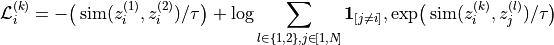
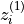
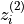
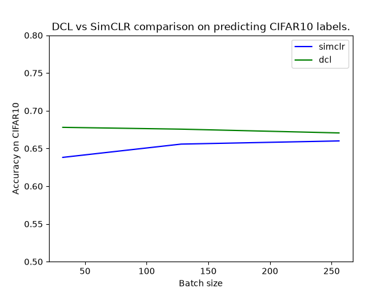

Note
Go to the end to download the full example code.
Decoupled Contrastive Learning¶
This tutorial illustrates the use of Decoupled Contrastive Learning (DCL) [1] which introduces a reformulation of the InfoNCE loss used in SimCLR [2] that removes the negative-positive coupling in the loss. This modification stabilizes optimization and improves performance, especially when training with small batch sizes.
In this tutorial, we will use the CIFAR10 dataset to train models based on DCL and SimCLR and compare their performances for different batch sizes using the nidl library.
We will follow these steps:
Load the CIFAR10 dataset.
Define the data augmentations for self-supervised training.
Define the DCL and SimCLR models.
Train the models for different batch sizes.
Compare the obtained representations on CIFAR10 test set with linear probing.
Setup¶
This notebook requires some packages besides nidl. Let’s first start with importing our standard libraries below:
import matplotlib.pyplot as plt
import numpy as np
import torch
from lightning_fabric import seed_everything
from sklearn.linear_model import LogisticRegression
from sklearn.metrics import accuracy_score
from torch import nn
from torch.utils.data import DataLoader, Subset
from torchvision import transforms
from torchvision.datasets import CIFAR10
from torchvision.models import resnet18
from nidl.estimators.ssl import DCL, SimCLR
from nidl.transforms.transforms import MultiViewsTransform
from nidl.utils.weights import Weights
We define some global parameters that will be used throughout the notebook. The parameter load_trained_models allows you to directly load the weights of the trained models from HuggingFace hub instead of training them directly in the notebook which takes time and resources (~3h on a NVIDIA RTX 4500 GPU).
Path where data should be downloaded
data_dir = "/tmp/cifar10"
# Whether to load the pretrained models or train them on your device
load_pretrained = True
# If loading model, directory where to save the weights
model_dir = "/tmp/nidl_example_dcl_vs_simclr"
# What accelerator to use: GPU if available, else CPU
accelerator = "gpu" if torch.cuda.is_available() else "cpu"
# Latent size of the representation
# /!\ If changing latent_size then you cannot load pretrained weights
latent_size = 128
# Number of workers (cpu cores) to use in dataloaders
num_workers = 4
# We fix the seed and generator for reproducibility
seed = 42
rd_generator = np.random.default_rng(seed=seed)
seed = seed_everything(seed)
Check parameters values
if latent_size != 128 and load_pretrained == True:
raise ValueError(
"Pretrained models have a latent size of 128 which can"
" not be modified. Set load_pretrained=True or"
" latent_size=128"
)
DCL Loss Function¶
The DCL loss function is based on InfoNCE and is defined as:

Where: -

and
are embeddings of two different augmented views of the same image - is the cosine similarity between normalized embeddings - is a temperature parameter controlling the concentration of the distribution - is an indicator function that ensures decouplingThe key idea in DCL is to remove the contribution of the positive pair from the log-sum-exp normalization term of the InfoNCE loss. In standard InfoNCE, this term creates an implicit coupling between positive and negative similarities, which can bias gradient estimates when the batch size is small. By decoupling these terms, DCL reduces this bias and leads to more stable contrastive learning.
#
# Data Preparation
# -----------------
#
# We'll use the CIFAR10 dataset, which contains 50,000 training images and
# 10,000 test images of 10 different classes. We'll apply standard scaling
# transforms, the test dataset will be used to evaluate the model performance
# on the classification task. We subsample the dataset for faster inference.
#
# Load CIFAR10 dataset with standard scaling
#
# We subsample the test dataset to run the notebook faster.
scale_transforms = transforms.Compose(
[transforms.ToTensor(), transforms.Normalize((0.5,), (0.5,))]
)
train_xy_dataset = CIFAR10(
data_dir, train=True, transform=scale_transforms, download=True
)
train_indices = rd_generator.choice(
np.arange(len(train_xy_dataset)), size=10000, replace=False
)
train_xy_dataset = Subset(train_xy_dataset, train_indices)
test_xy_dataset = CIFAR10(
data_dir, train=False, transform=scale_transforms, download=True
)
test_indices = rd_generator.choice(
np.arange(len(test_xy_dataset)), size=5000, replace=False
)
test_xy_dataset = Subset(test_xy_dataset, test_indices)
0%| | 0.00/170M [00:00<?, ?B/s]
0%| | 32.8k/170M [00:00<43:37, 65.1kB/s]
0%| | 65.5k/170M [00:01<43:46, 64.9kB/s]
0%| | 98.3k/170M [00:01<43:55, 64.6kB/s]
0%| | 131k/170M [00:02<43:52, 64.7kB/s]
0%| | 164k/170M [00:02<44:07, 64.3kB/s]
0%| | 197k/170M [00:03<44:09, 64.3kB/s]
0%| | 229k/170M [00:03<44:15, 64.1kB/s]
0%| | 262k/170M [00:04<44:15, 64.1kB/s]
0%| | 295k/170M [00:04<44:20, 64.0kB/s]
0%| | 328k/170M [00:05<44:15, 64.1kB/s]
0%| | 360k/170M [00:05<47:45, 59.4kB/s]
0%| | 393k/170M [00:06<51:01, 55.6kB/s]
0%| | 426k/170M [00:06<44:49, 63.2kB/s]
0%| | 459k/170M [00:07<44:40, 63.4kB/s]
0%| | 492k/170M [00:07<44:29, 63.7kB/s]
0%| | 524k/170M [00:08<44:29, 63.7kB/s]
0%| | 557k/170M [00:08<44:32, 63.6kB/s]
0%| | 590k/170M [00:09<44:31, 63.6kB/s]
0%| | 623k/170M [00:09<44:32, 63.6kB/s]
0%| | 655k/170M [00:10<44:22, 63.8kB/s]
0%| | 688k/170M [00:11<47:33, 59.5kB/s]
0%| | 721k/170M [00:11<46:27, 60.9kB/s]
0%| | 754k/170M [00:12<45:40, 61.9kB/s]
0%| | 786k/170M [00:12<45:06, 62.7kB/s]
0%| | 819k/170M [00:13<44:42, 63.2kB/s]
0%| | 852k/170M [00:13<44:29, 63.5kB/s]
1%| | 885k/170M [00:14<45:14, 62.5kB/s]
1%| | 918k/170M [00:14<44:02, 64.2kB/s]
1%| | 950k/170M [00:15<44:01, 64.2kB/s]
1%| | 983k/170M [00:15<44:07, 64.0kB/s]
1%| | 1.02M/170M [00:16<44:08, 64.0kB/s]
1%| | 1.05M/170M [00:16<47:33, 59.4kB/s]
1%| | 1.08M/170M [00:17<46:28, 60.7kB/s]
1%| | 1.11M/170M [00:17<45:52, 61.5kB/s]
1%| | 1.15M/170M [00:18<45:26, 62.1kB/s]
1%| | 1.18M/170M [00:18<45:01, 62.7kB/s]
1%| | 1.21M/170M [00:19<44:52, 62.9kB/s]
1%| | 1.25M/170M [00:19<44:43, 63.1kB/s]
1%| | 1.28M/170M [00:20<45:28, 62.0kB/s]
1%| | 1.31M/170M [00:20<44:10, 63.8kB/s]
1%| | 1.34M/170M [00:21<44:17, 63.7kB/s]
1%| | 1.38M/170M [00:22<47:43, 59.1kB/s]
1%| | 1.41M/170M [00:22<46:46, 60.2kB/s]
1%| | 1.44M/170M [00:23<46:08, 61.1kB/s]
1%| | 1.47M/170M [00:23<45:41, 61.7kB/s]
1%| | 1.51M/170M [00:24<45:13, 62.3kB/s]
1%| | 1.54M/170M [00:24<47:49, 58.9kB/s]
1%| | 1.57M/170M [00:25<44:45, 62.9kB/s]
1%| | 1.61M/170M [00:25<43:48, 64.3kB/s]
1%| | 1.64M/170M [00:26<45:04, 62.4kB/s]
1%| | 1.67M/170M [00:26<43:40, 64.4kB/s]
1%| | 1.70M/170M [00:27<43:53, 64.1kB/s]
1%| | 1.74M/170M [00:27<47:23, 59.3kB/s]
1%| | 1.77M/170M [00:28<46:35, 60.4kB/s]
1%| | 1.80M/170M [00:28<46:02, 61.1kB/s]
1%| | 1.84M/170M [00:29<45:37, 61.6kB/s]
1%| | 1.87M/170M [00:29<45:26, 61.8kB/s]
1%| | 1.90M/170M [00:30<45:19, 62.0kB/s]
1%| | 1.93M/170M [00:30<45:13, 62.1kB/s]
1%| | 1.97M/170M [00:31<45:10, 62.2kB/s]
1%| | 2.00M/170M [00:32<49:45, 56.4kB/s]
1%| | 2.03M/170M [00:32<44:21, 63.3kB/s]
1%| | 2.06M/170M [00:33<46:58, 59.8kB/s]
1%| | 2.10M/170M [00:33<46:14, 60.7kB/s]
1%| | 2.13M/170M [00:34<45:41, 61.4kB/s]
1%|▏ | 2.16M/170M [00:34<45:15, 62.0kB/s]
1%|▏ | 2.20M/170M [00:35<44:51, 62.5kB/s]
1%|▏ | 2.23M/170M [00:35<44:35, 62.9kB/s]
1%|▏ | 2.26M/170M [00:36<44:24, 63.2kB/s]
1%|▏ | 2.29M/170M [00:36<44:13, 63.4kB/s]
1%|▏ | 2.33M/170M [00:37<44:07, 63.5kB/s]
1%|▏ | 2.36M/170M [00:37<44:10, 63.4kB/s]
1%|▏ | 2.39M/170M [00:38<47:31, 58.9kB/s]
1%|▏ | 2.42M/170M [00:39<46:34, 60.1kB/s]
1%|▏ | 2.46M/170M [00:39<45:51, 61.1kB/s]
1%|▏ | 2.49M/170M [00:40<46:07, 60.7kB/s]
1%|▏ | 2.52M/170M [00:40<44:41, 62.6kB/s]
1%|▏ | 2.56M/170M [00:41<44:23, 63.0kB/s]
2%|▏ | 2.59M/170M [00:41<44:16, 63.2kB/s]
2%|▏ | 2.62M/170M [00:42<44:08, 63.4kB/s]
2%|▏ | 2.65M/170M [00:42<44:08, 63.4kB/s]
2%|▏ | 2.69M/170M [00:43<44:09, 63.3kB/s]
2%|▏ | 2.72M/170M [00:43<44:11, 63.3kB/s]
2%|▏ | 2.75M/170M [00:44<47:35, 58.7kB/s]
2%|▏ | 2.79M/170M [00:44<46:33, 60.0kB/s]
2%|▏ | 2.82M/170M [00:45<45:52, 60.9kB/s]
2%|▏ | 2.85M/170M [00:45<45:23, 61.5kB/s]
2%|▏ | 2.88M/170M [00:46<45:03, 62.0kB/s]
2%|▏ | 2.92M/170M [00:46<44:45, 62.4kB/s]
2%|▏ | 2.95M/170M [00:47<44:37, 62.6kB/s]
2%|▏ | 2.98M/170M [00:47<44:28, 62.8kB/s]
2%|▏ | 3.01M/170M [00:48<44:20, 63.0kB/s]
2%|▏ | 3.05M/170M [00:48<44:15, 63.1kB/s]
2%|▏ | 3.08M/170M [00:49<47:29, 58.8kB/s]
2%|▏ | 3.11M/170M [00:50<46:23, 60.1kB/s]
2%|▏ | 3.15M/170M [00:50<45:46, 60.9kB/s]
2%|▏ | 3.18M/170M [00:51<45:15, 61.6kB/s]
2%|▏ | 3.21M/170M [00:51<44:52, 62.1kB/s]
2%|▏ | 3.24M/170M [00:52<44:34, 62.5kB/s]
2%|▏ | 3.28M/170M [00:52<44:20, 62.9kB/s]
2%|▏ | 3.31M/170M [00:53<44:05, 63.2kB/s]
2%|▏ | 3.34M/170M [00:53<43:59, 63.3kB/s]
2%|▏ | 3.38M/170M [00:54<43:53, 63.5kB/s]
2%|▏ | 3.41M/170M [00:54<43:44, 63.7kB/s]
2%|▏ | 3.44M/170M [00:55<46:56, 59.3kB/s]
2%|▏ | 3.47M/170M [00:55<45:54, 60.6kB/s]
2%|▏ | 3.51M/170M [00:56<45:14, 61.5kB/s]
2%|▏ | 3.54M/170M [00:56<44:39, 62.3kB/s]
2%|▏ | 3.57M/170M [00:57<49:16, 56.5kB/s]
2%|▏ | 3.60M/170M [00:58<43:14, 64.3kB/s]
2%|▏ | 3.64M/170M [00:58<48:32, 57.3kB/s]
2%|▏ | 3.67M/170M [00:59<41:52, 66.4kB/s]
2%|▏ | 3.70M/170M [00:59<40:54, 68.0kB/s]
2%|▏ | 3.74M/170M [00:59<41:23, 67.1kB/s]
2%|▏ | 3.77M/170M [01:00<44:59, 61.8kB/s]
2%|▏ | 3.80M/170M [01:01<44:21, 62.6kB/s]
2%|▏ | 3.83M/170M [01:01<43:50, 63.4kB/s]
2%|▏ | 3.87M/170M [01:02<43:24, 64.0kB/s]
2%|▏ | 3.90M/170M [01:02<43:14, 64.2kB/s]
2%|▏ | 3.93M/170M [01:03<43:07, 64.4kB/s]
2%|▏ | 3.96M/170M [01:03<42:59, 64.6kB/s]
2%|▏ | 4.00M/170M [01:04<42:49, 64.8kB/s]
2%|▏ | 4.03M/170M [01:04<42:48, 64.8kB/s]
2%|▏ | 4.06M/170M [01:05<42:40, 65.0kB/s]
2%|▏ | 4.10M/170M [01:05<42:44, 64.9kB/s]
2%|▏ | 4.13M/170M [01:06<45:57, 60.3kB/s]
2%|▏ | 4.16M/170M [01:06<44:59, 61.6kB/s]
2%|▏ | 4.19M/170M [01:07<44:20, 62.5kB/s]
2%|▏ | 4.23M/170M [01:07<43:48, 63.3kB/s]
2%|▏ | 4.26M/170M [01:08<43:20, 63.9kB/s]
3%|▎ | 4.29M/170M [01:08<43:10, 64.2kB/s]
3%|▎ | 4.33M/170M [01:09<43:03, 64.3kB/s]
3%|▎ | 4.36M/170M [01:09<42:49, 64.7kB/s]
3%|▎ | 4.39M/170M [01:10<42:35, 65.0kB/s]
3%|▎ | 4.42M/170M [01:10<42:32, 65.1kB/s]
3%|▎ | 4.46M/170M [01:11<45:41, 60.6kB/s]
3%|▎ | 4.49M/170M [01:11<44:35, 62.0kB/s]
3%|▎ | 4.52M/170M [01:12<43:56, 62.9kB/s]
3%|▎ | 4.55M/170M [01:12<43:20, 63.8kB/s]
3%|▎ | 4.59M/170M [01:13<42:54, 64.4kB/s]
3%|▎ | 4.62M/170M [01:13<42:40, 64.8kB/s]
3%|▎ | 4.65M/170M [01:14<42:32, 65.0kB/s]
3%|▎ | 4.69M/170M [01:14<42:34, 64.9kB/s]
3%|▎ | 4.72M/170M [01:15<42:35, 64.9kB/s]
3%|▎ | 4.75M/170M [01:15<42:32, 64.9kB/s]
3%|▎ | 4.78M/170M [01:16<45:44, 60.4kB/s]
3%|▎ | 4.82M/170M [01:17<44:42, 61.8kB/s]
3%|▎ | 4.85M/170M [01:17<44:00, 62.7kB/s]
3%|▎ | 4.88M/170M [01:18<44:27, 62.1kB/s]
3%|▎ | 4.92M/170M [01:18<43:02, 64.1kB/s]
3%|▎ | 4.95M/170M [01:19<42:50, 64.4kB/s]
3%|▎ | 4.98M/170M [01:19<42:39, 64.7kB/s]
3%|▎ | 5.01M/170M [01:20<42:33, 64.8kB/s]
3%|▎ | 5.05M/170M [01:20<42:39, 64.6kB/s]
3%|▎ | 5.08M/170M [01:21<42:37, 64.7kB/s]
3%|▎ | 5.11M/170M [01:21<42:35, 64.7kB/s]
3%|▎ | 5.14M/170M [01:22<45:45, 60.2kB/s]
3%|▎ | 5.18M/170M [01:22<44:45, 61.6kB/s]
3%|▎ | 5.21M/170M [01:23<44:07, 62.4kB/s]
3%|▎ | 5.24M/170M [01:23<43:41, 63.0kB/s]
3%|▎ | 5.28M/170M [01:24<43:18, 63.6kB/s]
3%|▎ | 5.31M/170M [01:24<43:01, 64.0kB/s]
3%|▎ | 5.34M/170M [01:25<42:51, 64.2kB/s]
3%|▎ | 5.37M/170M [01:25<42:46, 64.3kB/s]
3%|▎ | 5.41M/170M [01:26<42:39, 64.5kB/s]
3%|▎ | 5.44M/170M [01:26<42:32, 64.7kB/s]
3%|▎ | 5.47M/170M [01:27<45:31, 60.4kB/s]
3%|▎ | 5.51M/170M [01:27<44:25, 61.9kB/s]
3%|▎ | 5.54M/170M [01:28<43:37, 63.0kB/s]
3%|▎ | 5.57M/170M [01:28<43:06, 63.8kB/s]
3%|▎ | 5.60M/170M [01:29<42:37, 64.5kB/s]
3%|▎ | 5.64M/170M [01:29<42:27, 64.7kB/s]
3%|▎ | 5.67M/170M [01:30<42:17, 65.0kB/s]
3%|▎ | 5.70M/170M [01:30<42:04, 65.3kB/s]
3%|▎ | 5.73M/170M [01:31<42:07, 65.2kB/s]
3%|▎ | 5.77M/170M [01:31<42:10, 65.1kB/s]
3%|▎ | 5.80M/170M [01:32<42:12, 65.0kB/s]
3%|▎ | 5.83M/170M [01:33<45:17, 60.6kB/s]
3%|▎ | 5.87M/170M [01:33<44:10, 62.1kB/s]
3%|▎ | 5.90M/170M [01:34<43:27, 63.1kB/s]
3%|▎ | 5.93M/170M [01:34<42:58, 63.8kB/s]
3%|▎ | 5.96M/170M [01:35<42:24, 64.7kB/s]
4%|▎ | 6.00M/170M [01:35<42:12, 65.0kB/s]
4%|▎ | 6.03M/170M [01:36<41:58, 65.3kB/s]
4%|▎ | 6.06M/170M [01:36<41:55, 65.4kB/s]
4%|▎ | 6.09M/170M [01:37<41:54, 65.4kB/s]
4%|▎ | 6.13M/170M [01:37<41:55, 65.4kB/s]
4%|▎ | 6.16M/170M [01:38<45:05, 60.8kB/s]
4%|▎ | 6.19M/170M [01:38<44:11, 62.0kB/s]
4%|▎ | 6.23M/170M [01:39<43:29, 62.9kB/s]
4%|▎ | 6.26M/170M [01:39<43:04, 63.6kB/s]
4%|▎ | 6.29M/170M [01:40<42:46, 64.0kB/s]
4%|▎ | 6.32M/170M [01:40<42:34, 64.3kB/s]
4%|▎ | 6.36M/170M [01:41<42:25, 64.5kB/s]
4%|▎ | 6.39M/170M [01:41<42:15, 64.7kB/s]
4%|▍ | 6.42M/170M [01:42<42:13, 64.8kB/s]
4%|▍ | 6.46M/170M [01:42<42:09, 64.8kB/s]
4%|▍ | 6.49M/170M [01:43<45:17, 60.4kB/s]
4%|▍ | 6.52M/170M [01:43<44:21, 61.6kB/s]
4%|▍ | 6.55M/170M [01:44<43:46, 62.4kB/s]
4%|▍ | 6.59M/170M [01:44<43:21, 63.0kB/s]
4%|▍ | 6.62M/170M [01:45<43:05, 63.4kB/s]
4%|▍ | 6.65M/170M [01:45<42:53, 63.7kB/s]
4%|▍ | 6.68M/170M [01:46<42:40, 64.0kB/s]
4%|▍ | 6.72M/170M [01:46<42:29, 64.2kB/s]
4%|▍ | 6.75M/170M [01:47<42:18, 64.5kB/s]
4%|▍ | 6.78M/170M [01:47<42:15, 64.6kB/s]
4%|▍ | 6.82M/170M [01:48<42:06, 64.8kB/s]
4%|▍ | 6.85M/170M [01:49<45:09, 60.4kB/s]
4%|▍ | 6.88M/170M [01:49<44:14, 61.6kB/s]
4%|▍ | 6.91M/170M [01:50<43:32, 62.6kB/s]
4%|▍ | 6.95M/170M [01:50<43:10, 63.1kB/s]
4%|▍ | 6.98M/170M [01:51<42:42, 63.8kB/s]
4%|▍ | 7.01M/170M [01:51<42:24, 64.2kB/s]
4%|▍ | 7.05M/170M [01:52<42:10, 64.6kB/s]
4%|▍ | 7.08M/170M [01:52<42:01, 64.8kB/s]
4%|▍ | 7.11M/170M [01:53<41:46, 65.2kB/s]
4%|▍ | 7.14M/170M [01:53<41:42, 65.3kB/s]
4%|▍ | 7.18M/170M [01:54<44:54, 60.6kB/s]
4%|▍ | 7.21M/170M [01:54<44:08, 61.7kB/s]
4%|▍ | 7.24M/170M [01:55<43:31, 62.5kB/s]
4%|▍ | 7.27M/170M [01:55<43:04, 63.2kB/s]
4%|▍ | 7.31M/170M [01:56<42:49, 63.5kB/s]
4%|▍ | 7.34M/170M [01:56<42:35, 63.8kB/s]
4%|▍ | 7.37M/170M [01:57<42:33, 63.9kB/s]
4%|▍ | 7.41M/170M [01:57<42:27, 64.0kB/s]
4%|▍ | 7.44M/170M [01:58<42:20, 64.2kB/s]
4%|▍ | 7.47M/170M [01:58<42:19, 64.2kB/s]
4%|▍ | 7.50M/170M [01:59<42:18, 64.2kB/s]
4%|▍ | 7.54M/170M [01:59<45:27, 59.7kB/s]
4%|▍ | 7.57M/170M [02:00<44:40, 60.8kB/s]
4%|▍ | 7.60M/170M [02:00<43:59, 61.7kB/s]
4%|▍ | 7.63M/170M [02:01<43:35, 62.3kB/s]
4%|▍ | 7.67M/170M [02:01<43:21, 62.6kB/s]
5%|▍ | 7.70M/170M [02:02<43:11, 62.8kB/s]
5%|▍ | 7.73M/170M [02:03<43:01, 63.0kB/s]
5%|▍ | 7.77M/170M [02:03<42:54, 63.2kB/s]
5%|▍ | 7.80M/170M [02:04<42:52, 63.2kB/s]
5%|▍ | 7.83M/170M [02:04<42:53, 63.2kB/s]
5%|▍ | 7.86M/170M [02:05<46:07, 58.8kB/s]
5%|▍ | 7.90M/170M [02:05<45:06, 60.1kB/s]
5%|▍ | 7.93M/170M [02:06<44:22, 61.1kB/s]
5%|▍ | 7.96M/170M [02:06<43:52, 61.7kB/s]
5%|▍ | 8.00M/170M [02:07<43:33, 62.2kB/s]
5%|▍ | 8.03M/170M [02:07<43:18, 62.5kB/s]
5%|▍ | 8.06M/170M [02:08<43:14, 62.6kB/s]
5%|▍ | 8.09M/170M [02:08<43:10, 62.7kB/s]
5%|▍ | 8.13M/170M [02:09<43:08, 62.7kB/s]
5%|▍ | 8.16M/170M [02:09<43:12, 62.6kB/s]
5%|▍ | 8.19M/170M [02:10<43:17, 62.5kB/s]
5%|▍ | 8.22M/170M [02:11<46:37, 58.0kB/s]
5%|▍ | 8.26M/170M [02:11<45:47, 59.1kB/s]
5%|▍ | 8.29M/170M [02:12<45:06, 59.9kB/s]
5%|▍ | 8.32M/170M [02:12<44:41, 60.5kB/s]
5%|▍ | 8.36M/170M [02:13<44:18, 61.0kB/s]
5%|▍ | 8.39M/170M [02:13<43:58, 61.4kB/s]
5%|▍ | 8.42M/170M [02:14<43:49, 61.6kB/s]
5%|▍ | 8.45M/170M [02:14<43:39, 61.9kB/s]
5%|▍ | 8.49M/170M [02:15<43:39, 61.8kB/s]
5%|▍ | 8.52M/170M [02:15<43:37, 61.9kB/s]
5%|▌ | 8.55M/170M [02:16<46:47, 57.7kB/s]
5%|▌ | 8.59M/170M [02:17<45:47, 58.9kB/s]
5%|▌ | 8.62M/170M [02:17<45:00, 59.9kB/s]
5%|▌ | 8.65M/170M [02:18<44:32, 60.6kB/s]
5%|▌ | 8.68M/170M [02:18<44:14, 61.0kB/s]
5%|▌ | 8.72M/170M [02:19<44:04, 61.2kB/s]
5%|▌ | 8.75M/170M [02:19<43:55, 61.4kB/s]
5%|▌ | 8.78M/170M [02:20<43:54, 61.4kB/s]
5%|▌ | 8.81M/170M [02:20<43:49, 61.5kB/s]
5%|▌ | 8.85M/170M [02:21<43:42, 61.6kB/s]
5%|▌ | 8.88M/170M [02:21<46:45, 57.6kB/s]
5%|▌ | 8.91M/170M [02:22<45:34, 59.1kB/s]
5%|▌ | 8.95M/170M [02:22<44:47, 60.1kB/s]
5%|▌ | 8.98M/170M [02:23<44:14, 60.8kB/s]
5%|▌ | 9.01M/170M [02:24<43:56, 61.3kB/s]
5%|▌ | 9.04M/170M [02:24<43:41, 61.6kB/s]
5%|▌ | 9.08M/170M [02:25<43:37, 61.7kB/s]
5%|▌ | 9.11M/170M [02:25<43:29, 61.8kB/s]
5%|▌ | 9.14M/170M [02:26<43:25, 61.9kB/s]
5%|▌ | 9.18M/170M [02:26<43:14, 62.2kB/s]
5%|▌ | 9.21M/170M [02:27<43:07, 62.3kB/s]
5%|▌ | 9.24M/170M [02:27<46:08, 58.3kB/s]
5%|▌ | 9.27M/170M [02:28<45:02, 59.7kB/s]
5%|▌ | 9.31M/170M [02:28<45:37, 58.9kB/s]
5%|▌ | 9.34M/170M [02:29<43:36, 61.6kB/s]
5%|▌ | 9.37M/170M [02:29<43:34, 61.6kB/s]
6%|▌ | 9.40M/170M [02:30<43:25, 61.8kB/s]
6%|▌ | 9.44M/170M [02:30<43:26, 61.8kB/s]
6%|▌ | 9.47M/170M [02:31<43:23, 61.9kB/s]
6%|▌ | 9.50M/170M [02:32<43:17, 62.0kB/s]
6%|▌ | 9.54M/170M [02:32<43:19, 61.9kB/s]
6%|▌ | 9.57M/170M [02:33<46:33, 57.6kB/s]
6%|▌ | 9.60M/170M [02:33<45:42, 58.7kB/s]
6%|▌ | 9.63M/170M [02:34<45:46, 58.6kB/s]
6%|▌ | 9.67M/170M [02:34<44:21, 60.4kB/s]
6%|▌ | 9.70M/170M [02:35<43:58, 60.9kB/s]
6%|▌ | 9.73M/170M [02:35<43:51, 61.1kB/s]
6%|▌ | 9.76M/170M [02:36<43:33, 61.5kB/s]
6%|▌ | 9.80M/170M [02:36<43:21, 61.8kB/s]
6%|▌ | 9.83M/170M [02:37<43:15, 61.9kB/s]
6%|▌ | 9.86M/170M [02:37<43:05, 62.1kB/s]
6%|▌ | 9.90M/170M [02:38<43:03, 62.2kB/s]
6%|▌ | 9.93M/170M [02:39<46:14, 57.9kB/s]
6%|▌ | 9.96M/170M [02:39<45:09, 59.3kB/s]
6%|▌ | 9.99M/170M [02:40<44:22, 60.3kB/s]
6%|▌ | 10.0M/170M [02:40<43:42, 61.2kB/s]
6%|▌ | 10.1M/170M [02:41<43:15, 61.8kB/s]
6%|▌ | 10.1M/170M [02:41<42:55, 62.3kB/s]
6%|▌ | 10.1M/170M [02:42<43:21, 61.6kB/s]
6%|▌ | 10.2M/170M [02:42<42:12, 63.3kB/s]
6%|▌ | 10.2M/170M [02:43<42:02, 63.5kB/s]
6%|▌ | 10.2M/170M [02:43<41:57, 63.7kB/s]
6%|▌ | 10.3M/170M [02:44<45:49, 58.3kB/s]
6%|▌ | 10.3M/170M [02:45<47:55, 55.7kB/s]
6%|▌ | 10.3M/170M [02:45<43:04, 62.0kB/s]
6%|▌ | 10.4M/170M [02:46<42:11, 63.3kB/s]
6%|▌ | 10.4M/170M [02:46<42:17, 63.1kB/s]
6%|▌ | 10.4M/170M [02:47<42:26, 62.9kB/s]
6%|▌ | 10.5M/170M [02:47<42:35, 62.6kB/s]
6%|▌ | 10.5M/170M [02:48<42:31, 62.7kB/s]
6%|▌ | 10.5M/170M [02:48<46:20, 57.5kB/s]
6%|▌ | 10.6M/170M [02:49<41:56, 63.6kB/s]
6%|▌ | 10.6M/170M [02:49<44:27, 60.0kB/s]
6%|▌ | 10.6M/170M [02:50<43:49, 60.8kB/s]
6%|▌ | 10.6M/170M [02:50<43:16, 61.6kB/s]
6%|▋ | 10.7M/170M [02:51<42:54, 62.1kB/s]
6%|▋ | 10.7M/170M [02:51<42:41, 62.4kB/s]
6%|▋ | 10.7M/170M [02:52<42:37, 62.5kB/s]
6%|▋ | 10.8M/170M [02:52<42:23, 62.8kB/s]
6%|▋ | 10.8M/170M [02:53<42:26, 62.7kB/s]
6%|▋ | 10.8M/170M [02:53<42:12, 63.0kB/s]
6%|▋ | 10.9M/170M [02:54<42:09, 63.1kB/s]
6%|▋ | 10.9M/170M [02:54<42:01, 63.3kB/s]
6%|▋ | 10.9M/170M [02:55<45:04, 59.0kB/s]
6%|▋ | 11.0M/170M [02:56<43:58, 60.5kB/s]
6%|▋ | 11.0M/170M [02:56<43:15, 61.5kB/s]
6%|▋ | 11.0M/170M [02:57<43:24, 61.2kB/s]
6%|▋ | 11.1M/170M [02:57<42:05, 63.1kB/s]
7%|▋ | 11.1M/170M [02:58<43:25, 61.2kB/s]
7%|▋ | 11.1M/170M [02:58<40:56, 64.9kB/s]
7%|▋ | 11.2M/170M [02:59<44:40, 59.4kB/s]
7%|▋ | 11.2M/170M [02:59<44:23, 59.8kB/s]
7%|▋ | 11.2M/170M [03:00<38:41, 68.6kB/s]
7%|▋ | 11.3M/170M [03:00<42:20, 62.7kB/s]
7%|▋ | 11.3M/170M [03:01<41:59, 63.2kB/s]
7%|▋ | 11.3M/170M [03:01<41:36, 63.7kB/s]
7%|▋ | 11.4M/170M [03:02<41:24, 64.0kB/s]
7%|▋ | 11.4M/170M [03:02<41:23, 64.1kB/s]
7%|▋ | 11.4M/170M [03:03<41:10, 64.4kB/s]
7%|▋ | 11.5M/170M [03:03<41:08, 64.4kB/s]
7%|▋ | 11.5M/170M [03:04<41:07, 64.4kB/s]
7%|▋ | 11.5M/170M [03:04<41:02, 64.6kB/s]
7%|▋ | 11.6M/170M [03:05<40:53, 64.8kB/s]
7%|▋ | 11.6M/170M [03:05<40:48, 64.9kB/s]
7%|▋ | 11.6M/170M [03:06<43:39, 60.6kB/s]
7%|▋ | 11.7M/170M [03:07<44:05, 60.0kB/s]
7%|▋ | 11.7M/170M [03:07<41:32, 63.7kB/s]
7%|▋ | 11.7M/170M [03:07<41:10, 64.3kB/s]
7%|▋ | 11.8M/170M [03:08<40:55, 64.7kB/s]
7%|▋ | 11.8M/170M [03:08<40:41, 65.0kB/s]
7%|▋ | 11.8M/170M [03:09<40:42, 64.9kB/s]
7%|▋ | 11.9M/170M [03:10<40:41, 65.0kB/s]
7%|▋ | 11.9M/170M [03:10<40:39, 65.0kB/s]
7%|▋ | 11.9M/170M [03:11<40:42, 64.9kB/s]
7%|▋ | 12.0M/170M [03:11<43:35, 60.6kB/s]
7%|▋ | 12.0M/170M [03:12<42:38, 62.0kB/s]
7%|▋ | 12.0M/170M [03:12<42:04, 62.8kB/s]
7%|▋ | 12.1M/170M [03:13<41:39, 63.4kB/s]
7%|▋ | 12.1M/170M [03:13<41:17, 63.9kB/s]
7%|▋ | 12.1M/170M [03:14<40:59, 64.4kB/s]
7%|▋ | 12.2M/170M [03:14<40:53, 64.5kB/s]
7%|▋ | 12.2M/170M [03:15<40:41, 64.8kB/s]
7%|▋ | 12.2M/170M [03:15<40:38, 64.9kB/s]
7%|▋ | 12.3M/170M [03:16<40:34, 65.0kB/s]
7%|▋ | 12.3M/170M [03:16<40:29, 65.1kB/s]
7%|▋ | 12.3M/170M [03:17<43:29, 60.6kB/s]
7%|▋ | 12.4M/170M [03:17<42:42, 61.7kB/s]
7%|▋ | 12.4M/170M [03:18<42:10, 62.5kB/s]
7%|▋ | 12.4M/170M [03:18<41:41, 63.2kB/s]
7%|▋ | 12.5M/170M [03:19<41:27, 63.5kB/s]
7%|▋ | 12.5M/170M [03:19<41:17, 63.8kB/s]
7%|▋ | 12.5M/170M [03:20<41:11, 63.9kB/s]
7%|▋ | 12.6M/170M [03:20<41:07, 64.0kB/s]
7%|▋ | 12.6M/170M [03:21<41:01, 64.2kB/s]
7%|▋ | 12.6M/170M [03:21<40:52, 64.4kB/s]
7%|▋ | 12.6M/170M [03:22<43:49, 60.0kB/s]
7%|▋ | 12.7M/170M [03:23<42:55, 61.3kB/s]
7%|▋ | 12.7M/170M [03:23<42:15, 62.2kB/s]
7%|▋ | 12.7M/170M [03:24<41:47, 62.9kB/s]
7%|▋ | 12.8M/170M [03:24<41:27, 63.4kB/s]
8%|▊ | 12.8M/170M [03:25<41:12, 63.8kB/s]
8%|▊ | 12.8M/170M [03:25<41:01, 64.0kB/s]
8%|▊ | 12.9M/170M [03:26<40:54, 64.2kB/s]
8%|▊ | 12.9M/170M [03:26<40:54, 64.2kB/s]
8%|▊ | 12.9M/170M [03:27<42:06, 62.4kB/s]
8%|▊ | 13.0M/170M [03:27<43:29, 60.4kB/s]
8%|▊ | 13.0M/170M [03:28<42:43, 61.4kB/s]
8%|▊ | 13.0M/170M [03:28<42:09, 62.2kB/s]
8%|▊ | 13.1M/170M [03:29<41:52, 62.7kB/s]
8%|▊ | 13.1M/170M [03:29<41:36, 63.0kB/s]
8%|▊ | 13.1M/170M [03:30<41:30, 63.2kB/s]
8%|▊ | 13.2M/170M [03:30<41:20, 63.4kB/s]
8%|▊ | 13.2M/170M [03:31<41:17, 63.5kB/s]
8%|▊ | 13.2M/170M [03:31<41:15, 63.5kB/s]
8%|▊ | 13.3M/170M [03:32<41:13, 63.6kB/s]
8%|▊ | 13.3M/170M [03:32<41:08, 63.7kB/s]
8%|▊ | 13.3M/170M [03:33<44:09, 59.3kB/s]
8%|▊ | 13.4M/170M [03:33<43:06, 60.7kB/s]
8%|▊ | 13.4M/170M [03:34<42:22, 61.8kB/s]
8%|▊ | 13.4M/170M [03:35<41:48, 62.6kB/s]
8%|▊ | 13.5M/170M [03:35<41:23, 63.2kB/s]
8%|▊ | 13.5M/170M [03:36<41:12, 63.5kB/s]
8%|▊ | 13.5M/170M [03:36<40:55, 63.9kB/s]
8%|▊ | 13.6M/170M [03:37<40:52, 64.0kB/s]
8%|▊ | 13.6M/170M [03:37<40:48, 64.1kB/s]
8%|▊ | 13.6M/170M [03:38<40:43, 64.2kB/s]
8%|▊ | 13.7M/170M [03:38<43:43, 59.8kB/s]
8%|▊ | 13.7M/170M [03:39<42:47, 61.1kB/s]
8%|▊ | 13.7M/170M [03:39<42:03, 62.1kB/s]
8%|▊ | 13.8M/170M [03:40<41:31, 62.9kB/s]
8%|▊ | 13.8M/170M [03:40<41:10, 63.4kB/s]
8%|▊ | 13.8M/170M [03:41<40:57, 63.8kB/s]
8%|▊ | 13.9M/170M [03:41<40:45, 64.1kB/s]
8%|▊ | 13.9M/170M [03:42<40:38, 64.2kB/s]
8%|▊ | 13.9M/170M [03:42<40:37, 64.2kB/s]
8%|▊ | 14.0M/170M [03:43<40:31, 64.4kB/s]
8%|▊ | 14.0M/170M [03:43<40:28, 64.5kB/s]
8%|▊ | 14.0M/170M [03:44<43:29, 60.0kB/s]
8%|▊ | 14.1M/170M [03:44<42:28, 61.4kB/s]
8%|▊ | 14.1M/170M [03:45<41:44, 62.5kB/s]
8%|▊ | 14.1M/170M [03:45<41:13, 63.2kB/s]
8%|▊ | 14.2M/170M [03:46<40:51, 63.8kB/s]
8%|▊ | 14.2M/170M [03:46<40:36, 64.2kB/s]
8%|▊ | 14.2M/170M [03:47<40:28, 64.4kB/s]
8%|▊ | 14.3M/170M [03:47<40:15, 64.7kB/s]
8%|▊ | 14.3M/170M [03:48<40:13, 64.7kB/s]
8%|▊ | 14.3M/170M [03:48<40:08, 64.9kB/s]
8%|▊ | 14.4M/170M [03:49<43:01, 60.5kB/s]
8%|▊ | 14.4M/170M [03:50<42:01, 61.9kB/s]
8%|▊ | 14.4M/170M [03:50<41:23, 62.8kB/s]
8%|▊ | 14.5M/170M [03:51<40:55, 63.5kB/s]
8%|▊ | 14.5M/170M [03:51<40:40, 63.9kB/s]
9%|▊ | 14.5M/170M [03:52<40:24, 64.3kB/s]
9%|▊ | 14.5M/170M [03:52<40:05, 64.8kB/s]
9%|▊ | 14.6M/170M [03:53<39:54, 65.1kB/s]
9%|▊ | 14.6M/170M [03:53<39:40, 65.5kB/s]
9%|▊ | 14.6M/170M [03:54<39:31, 65.7kB/s]
9%|▊ | 14.7M/170M [03:54<42:24, 61.2kB/s]
9%|▊ | 14.7M/170M [03:55<41:25, 62.7kB/s]
9%|▊ | 14.7M/170M [03:55<40:51, 63.5kB/s]
9%|▊ | 14.8M/170M [03:56<40:24, 64.2kB/s]
9%|▊ | 14.8M/170M [03:56<40:08, 64.6kB/s]
9%|▊ | 14.8M/170M [03:57<39:53, 65.0kB/s]
9%|▊ | 14.9M/170M [03:57<39:46, 65.2kB/s]
9%|▊ | 14.9M/170M [03:58<39:40, 65.4kB/s]
9%|▉ | 14.9M/170M [03:58<39:34, 65.5kB/s]
9%|▉ | 15.0M/170M [03:59<39:30, 65.6kB/s]
9%|▉ | 15.0M/170M [03:59<39:33, 65.5kB/s]
9%|▉ | 15.0M/170M [04:00<42:28, 61.0kB/s]
9%|▉ | 15.1M/170M [04:00<41:42, 62.1kB/s]
9%|▉ | 15.1M/170M [04:01<41:07, 63.0kB/s]
9%|▉ | 15.1M/170M [04:01<40:43, 63.6kB/s]
9%|▉ | 15.2M/170M [04:02<40:23, 64.1kB/s]
9%|▉ | 15.2M/170M [04:02<40:05, 64.6kB/s]
9%|▉ | 15.2M/170M [04:03<39:52, 64.9kB/s]
9%|▉ | 15.3M/170M [04:03<39:39, 65.2kB/s]
9%|▉ | 15.3M/170M [04:04<39:28, 65.5kB/s]
9%|▉ | 15.3M/170M [04:04<39:25, 65.6kB/s]
9%|▉ | 15.4M/170M [04:05<42:19, 61.1kB/s]
9%|▉ | 15.4M/170M [04:05<41:25, 62.4kB/s]
9%|▉ | 15.4M/170M [04:06<40:49, 63.3kB/s]
9%|▉ | 15.5M/170M [04:06<40:26, 63.9kB/s]
9%|▉ | 15.5M/170M [04:07<40:03, 64.5kB/s]
9%|▉ | 15.5M/170M [04:07<39:44, 65.0kB/s]
9%|▉ | 15.6M/170M [04:08<39:41, 65.1kB/s]
9%|▉ | 15.6M/170M [04:08<39:37, 65.1kB/s]
9%|▉ | 15.6M/170M [04:09<39:41, 65.0kB/s]
9%|▉ | 15.7M/170M [04:09<39:47, 64.8kB/s]
9%|▉ | 15.7M/170M [04:10<39:46, 64.9kB/s]
9%|▉ | 15.7M/170M [04:11<42:52, 60.2kB/s]
9%|▉ | 15.8M/170M [04:11<42:04, 61.3kB/s]
9%|▉ | 15.8M/170M [04:12<41:34, 62.0kB/s]
9%|▉ | 15.8M/170M [04:12<41:10, 62.6kB/s]
9%|▉ | 15.9M/170M [04:13<40:49, 63.1kB/s]
9%|▉ | 15.9M/170M [04:13<40:34, 63.5kB/s]
9%|▉ | 15.9M/170M [04:14<40:24, 63.8kB/s]
9%|▉ | 16.0M/170M [04:14<40:18, 63.9kB/s]
9%|▉ | 16.0M/170M [04:15<40:10, 64.1kB/s]
9%|▉ | 16.0M/170M [04:15<40:09, 64.1kB/s]
9%|▉ | 16.1M/170M [04:16<43:14, 59.5kB/s]
9%|▉ | 16.1M/170M [04:16<42:17, 60.9kB/s]
9%|▉ | 16.1M/170M [04:17<41:44, 61.6kB/s]
9%|▉ | 16.2M/170M [04:17<41:22, 62.2kB/s]
9%|▉ | 16.2M/170M [04:18<41:07, 62.5kB/s]
10%|▉ | 16.2M/170M [04:18<40:52, 62.9kB/s]
10%|▉ | 16.3M/170M [04:19<40:40, 63.2kB/s]
10%|▉ | 16.3M/170M [04:19<40:31, 63.4kB/s]
10%|▉ | 16.3M/170M [04:20<40:19, 63.7kB/s]
10%|▉ | 16.4M/170M [04:20<40:15, 63.8kB/s]
10%|▉ | 16.4M/170M [04:21<40:11, 63.9kB/s]
10%|▉ | 16.4M/170M [04:22<43:04, 59.6kB/s]
10%|▉ | 16.4M/170M [04:22<42:03, 61.0kB/s]
10%|▉ | 16.5M/170M [04:23<41:20, 62.1kB/s]
10%|▉ | 16.5M/170M [04:23<40:52, 62.8kB/s]
10%|▉ | 16.5M/170M [04:24<40:37, 63.2kB/s]
10%|▉ | 16.6M/170M [04:24<40:23, 63.5kB/s]
10%|▉ | 16.6M/170M [04:25<40:13, 63.8kB/s]
10%|▉ | 16.6M/170M [04:25<40:09, 63.9kB/s]
10%|▉ | 16.7M/170M [04:26<40:03, 64.0kB/s]
10%|▉ | 16.7M/170M [04:26<40:00, 64.1kB/s]
10%|▉ | 16.7M/170M [04:27<42:54, 59.7kB/s]
10%|▉ | 16.8M/170M [04:27<41:56, 61.1kB/s]
10%|▉ | 16.8M/170M [04:28<41:18, 62.0kB/s]
10%|▉ | 16.8M/170M [04:28<40:45, 62.8kB/s]
10%|▉ | 16.9M/170M [04:29<40:23, 63.4kB/s]
10%|▉ | 16.9M/170M [04:29<40:06, 63.8kB/s]
10%|▉ | 16.9M/170M [04:30<39:53, 64.2kB/s]
10%|▉ | 17.0M/170M [04:30<39:53, 64.1kB/s]
10%|▉ | 17.0M/170M [04:31<39:49, 64.2kB/s]
10%|▉ | 17.0M/170M [04:31<39:49, 64.2kB/s]
10%|█ | 17.1M/170M [04:32<42:42, 59.9kB/s]
10%|█ | 17.1M/170M [04:32<41:48, 61.1kB/s]
10%|█ | 17.1M/170M [04:33<41:08, 62.1kB/s]
10%|█ | 17.2M/170M [04:34<40:39, 62.8kB/s]
10%|█ | 17.2M/170M [04:34<40:09, 63.6kB/s]
10%|█ | 17.2M/170M [04:35<39:51, 64.1kB/s]
10%|█ | 17.3M/170M [04:35<39:34, 64.5kB/s]
10%|█ | 17.3M/170M [04:36<39:24, 64.8kB/s]
10%|█ | 17.3M/170M [04:36<39:10, 65.1kB/s]
10%|█ | 17.4M/170M [04:37<39:03, 65.3kB/s]
10%|█ | 17.4M/170M [04:37<39:01, 65.4kB/s]
10%|█ | 17.4M/170M [04:38<41:54, 60.9kB/s]
10%|█ | 17.5M/170M [04:38<41:01, 62.2kB/s]
10%|█ | 17.5M/170M [04:39<40:26, 63.1kB/s]
10%|█ | 17.5M/170M [04:39<39:51, 64.0kB/s]
10%|█ | 17.6M/170M [04:40<39:22, 64.7kB/s]
10%|█ | 17.6M/170M [04:40<39:05, 65.2kB/s]
10%|█ | 17.6M/170M [04:41<38:52, 65.5kB/s]
10%|█ | 17.7M/170M [04:41<38:48, 65.6kB/s]
10%|█ | 17.7M/170M [04:42<38:45, 65.7kB/s]
10%|█ | 17.7M/170M [04:42<38:44, 65.7kB/s]
10%|█ | 17.8M/170M [04:43<41:43, 61.0kB/s]
10%|█ | 17.8M/170M [04:43<40:50, 62.3kB/s]
10%|█ | 17.8M/170M [04:44<40:10, 63.3kB/s]
10%|█ | 17.9M/170M [04:44<39:41, 64.1kB/s]
10%|█ | 17.9M/170M [04:45<39:23, 64.6kB/s]
11%|█ | 17.9M/170M [04:45<39:05, 65.0kB/s]
11%|█ | 18.0M/170M [04:46<38:54, 65.3kB/s]
11%|█ | 18.0M/170M [04:46<38:44, 65.6kB/s]
11%|█ | 18.0M/170M [04:47<38:39, 65.7kB/s]
11%|█ | 18.1M/170M [04:47<38:32, 65.9kB/s]
11%|█ | 18.1M/170M [04:48<38:27, 66.1kB/s]
11%|█ | 18.1M/170M [04:48<41:15, 61.6kB/s]
11%|█ | 18.2M/170M [04:49<40:18, 63.0kB/s]
11%|█ | 18.2M/170M [04:49<39:50, 63.7kB/s]
11%|█ | 18.2M/170M [04:50<39:28, 64.3kB/s]
11%|█ | 18.3M/170M [04:50<39:17, 64.6kB/s]
11%|█ | 18.3M/170M [04:51<39:10, 64.8kB/s]
11%|█ | 18.3M/170M [04:51<38:59, 65.0kB/s]
11%|█ | 18.4M/170M [04:52<38:53, 65.2kB/s]
11%|█ | 18.4M/170M [04:52<38:48, 65.3kB/s]
11%|█ | 18.4M/170M [04:53<38:46, 65.4kB/s]
11%|█ | 18.4M/170M [04:53<41:28, 61.1kB/s]
11%|█ | 18.5M/170M [04:54<40:33, 62.5kB/s]
11%|█ | 18.5M/170M [04:54<39:56, 63.4kB/s]
11%|█ | 18.5M/170M [04:55<39:30, 64.1kB/s]
11%|█ | 18.6M/170M [04:55<39:11, 64.6kB/s]
11%|█ | 18.6M/170M [04:56<38:59, 64.9kB/s]
11%|█ | 18.6M/170M [04:56<38:48, 65.2kB/s]
11%|█ | 18.7M/170M [04:57<38:36, 65.5kB/s]
11%|█ | 18.7M/170M [04:57<38:37, 65.5kB/s]
11%|█ | 18.7M/170M [04:58<38:34, 65.6kB/s]
11%|█ | 18.8M/170M [04:59<41:27, 61.0kB/s]
11%|█ | 18.8M/170M [04:59<40:35, 62.3kB/s]
11%|█ | 18.8M/170M [05:00<40:07, 63.0kB/s]
11%|█ | 18.9M/170M [05:00<39:47, 63.5kB/s]
11%|█ | 18.9M/170M [05:01<42:17, 59.7kB/s]
11%|█ | 18.9M/170M [05:01<38:42, 65.3kB/s]
11%|█ | 19.0M/170M [05:02<38:55, 64.9kB/s]
11%|█ | 19.0M/170M [05:02<39:05, 64.6kB/s]
11%|█ | 19.0M/170M [05:03<39:23, 64.1kB/s]
11%|█ | 19.1M/170M [05:03<39:32, 63.8kB/s]
11%|█ | 19.1M/170M [05:04<43:29, 58.0kB/s]
11%|█ | 19.1M/170M [05:04<41:34, 60.7kB/s]
11%|█ | 19.2M/170M [05:05<46:25, 54.3kB/s]
11%|█▏ | 19.2M/170M [05:05<39:37, 63.6kB/s]
11%|█▏ | 19.2M/170M [05:06<38:58, 64.7kB/s]
11%|█▏ | 19.3M/170M [05:06<39:07, 64.4kB/s]
11%|█▏ | 19.3M/170M [05:07<41:04, 61.4kB/s]
11%|█▏ | 19.3M/170M [05:07<38:53, 64.8kB/s]
11%|█▏ | 19.4M/170M [05:08<39:07, 64.4kB/s]
11%|█▏ | 19.4M/170M [05:09<43:07, 58.4kB/s]
11%|█▏ | 19.4M/170M [05:09<41:54, 60.1kB/s]
11%|█▏ | 19.5M/170M [05:10<45:10, 55.7kB/s]
11%|█▏ | 19.5M/170M [05:10<39:28, 63.8kB/s]
11%|█▏ | 19.5M/170M [05:11<38:50, 64.8kB/s]
11%|█▏ | 19.6M/170M [05:11<41:46, 60.2kB/s]
11%|█▏ | 19.6M/170M [05:12<38:28, 65.4kB/s]
12%|█▏ | 19.6M/170M [05:12<38:48, 64.8kB/s]
12%|█▏ | 19.7M/170M [05:13<39:01, 64.4kB/s]
12%|█▏ | 19.7M/170M [05:13<39:09, 64.2kB/s]
12%|█▏ | 19.7M/170M [05:14<39:15, 64.0kB/s]
12%|█▏ | 19.8M/170M [05:14<39:19, 63.9kB/s]
12%|█▏ | 19.8M/170M [05:15<44:46, 56.1kB/s]
12%|█▏ | 19.8M/170M [05:15<41:27, 60.6kB/s]
12%|█▏ | 19.9M/170M [05:16<40:50, 61.5kB/s]
12%|█▏ | 19.9M/170M [05:16<39:43, 63.2kB/s]
12%|█▏ | 19.9M/170M [05:17<39:40, 63.3kB/s]
12%|█▏ | 20.0M/170M [05:17<39:39, 63.3kB/s]
12%|█▏ | 20.0M/170M [05:18<42:15, 59.4kB/s]
12%|█▏ | 20.0M/170M [05:18<39:03, 64.2kB/s]
12%|█▏ | 20.1M/170M [05:19<39:16, 63.9kB/s]
12%|█▏ | 20.1M/170M [05:20<44:50, 55.9kB/s]
12%|█▏ | 20.1M/170M [05:20<38:25, 65.2kB/s]
12%|█▏ | 20.2M/170M [05:21<40:58, 61.2kB/s]
12%|█▏ | 20.2M/170M [05:21<40:24, 62.0kB/s]
12%|█▏ | 20.2M/170M [05:22<45:28, 55.1kB/s]
12%|█▏ | 20.3M/170M [05:22<38:52, 64.4kB/s]
12%|█▏ | 20.3M/170M [05:23<40:13, 62.2kB/s]
12%|█▏ | 20.3M/170M [05:23<38:37, 64.8kB/s]
12%|█▏ | 20.3M/170M [05:24<38:05, 65.7kB/s]
12%|█▏ | 20.4M/170M [05:24<38:27, 65.1kB/s]
12%|█▏ | 20.4M/170M [05:25<38:40, 64.7kB/s]
12%|█▏ | 20.4M/170M [05:25<43:03, 58.1kB/s]
12%|█▏ | 20.5M/170M [05:26<42:30, 58.8kB/s]
12%|█▏ | 20.5M/170M [05:26<40:11, 62.2kB/s]
12%|█▏ | 20.5M/170M [05:27<39:04, 64.0kB/s]
12%|█▏ | 20.6M/170M [05:27<38:57, 64.1kB/s]
12%|█▏ | 20.6M/170M [05:28<38:49, 64.4kB/s]
12%|█▏ | 20.6M/170M [05:28<38:41, 64.5kB/s]
12%|█▏ | 20.7M/170M [05:29<38:31, 64.8kB/s]
12%|█▏ | 20.7M/170M [05:29<38:25, 65.0kB/s]
12%|█▏ | 20.7M/170M [05:30<38:21, 65.1kB/s]
12%|█▏ | 20.8M/170M [05:30<38:23, 65.0kB/s]
12%|█▏ | 20.8M/170M [05:31<38:24, 65.0kB/s]
12%|█▏ | 20.8M/170M [05:32<41:16, 60.4kB/s]
12%|█▏ | 20.9M/170M [05:32<40:23, 61.7kB/s]
12%|█▏ | 20.9M/170M [05:33<39:45, 62.7kB/s]
12%|█▏ | 20.9M/170M [05:33<42:44, 58.3kB/s]
12%|█▏ | 21.0M/170M [05:34<38:22, 64.9kB/s]
12%|█▏ | 21.0M/170M [05:34<39:47, 62.6kB/s]
12%|█▏ | 21.0M/170M [05:35<37:22, 66.6kB/s]
12%|█▏ | 21.1M/170M [05:35<37:24, 66.6kB/s]
12%|█▏ | 21.1M/170M [05:36<36:45, 67.7kB/s]
12%|█▏ | 21.1M/170M [05:36<36:59, 67.3kB/s]
12%|█▏ | 21.2M/170M [05:37<41:26, 60.1kB/s]
12%|█▏ | 21.2M/170M [05:37<38:39, 64.4kB/s]
12%|█▏ | 21.2M/170M [05:38<38:16, 65.0kB/s]
12%|█▏ | 21.3M/170M [05:38<38:04, 65.3kB/s]
12%|█▏ | 21.3M/170M [05:39<38:03, 65.3kB/s]
13%|█▎ | 21.3M/170M [05:39<38:03, 65.3kB/s]
13%|█▎ | 21.4M/170M [05:40<38:04, 65.3kB/s]
13%|█▎ | 21.4M/170M [05:40<38:00, 65.4kB/s]
13%|█▎ | 21.4M/170M [05:41<37:55, 65.5kB/s]
13%|█▎ | 21.5M/170M [05:41<37:51, 65.6kB/s]
13%|█▎ | 21.5M/170M [05:42<37:43, 65.8kB/s]
13%|█▎ | 21.5M/170M [05:42<40:27, 61.4kB/s]
13%|█▎ | 21.6M/170M [05:43<39:30, 62.8kB/s]
13%|█▎ | 21.6M/170M [05:43<38:52, 63.8kB/s]
13%|█▎ | 21.6M/170M [05:44<38:31, 64.4kB/s]
13%|█▎ | 21.7M/170M [05:44<38:21, 64.7kB/s]
13%|█▎ | 21.7M/170M [05:45<38:15, 64.8kB/s]
13%|█▎ | 21.7M/170M [05:45<38:13, 64.9kB/s]
13%|█▎ | 21.8M/170M [05:46<38:10, 64.9kB/s]
13%|█▎ | 21.8M/170M [05:46<38:05, 65.1kB/s]
13%|█▎ | 21.8M/170M [05:47<37:57, 65.3kB/s]
13%|█▎ | 21.9M/170M [05:47<40:42, 60.9kB/s]
13%|█▎ | 21.9M/170M [05:48<39:47, 62.2kB/s]
13%|█▎ | 21.9M/170M [05:48<39:06, 63.3kB/s]
13%|█▎ | 22.0M/170M [05:49<38:37, 64.1kB/s]
13%|█▎ | 22.0M/170M [05:49<38:16, 64.7kB/s]
13%|█▎ | 22.0M/170M [05:50<38:05, 65.0kB/s]
13%|█▎ | 22.1M/170M [05:50<37:55, 65.2kB/s]
13%|█▎ | 22.1M/170M [05:51<37:44, 65.5kB/s]
13%|█▎ | 22.1M/170M [05:51<37:41, 65.6kB/s]
13%|█▎ | 22.2M/170M [05:52<37:39, 65.7kB/s]
13%|█▎ | 22.2M/170M [05:52<37:35, 65.8kB/s]
13%|█▎ | 22.2M/170M [05:53<40:15, 61.4kB/s]
13%|█▎ | 22.2M/170M [05:54<39:24, 62.7kB/s]
13%|█▎ | 22.3M/170M [05:54<38:54, 63.5kB/s]
13%|█▎ | 22.3M/170M [05:55<38:34, 64.0kB/s]
13%|█▎ | 22.3M/170M [05:55<41:52, 59.0kB/s]
13%|█▎ | 22.4M/170M [05:56<37:45, 65.4kB/s]
13%|█▎ | 22.4M/170M [05:56<37:42, 65.4kB/s]
13%|█▎ | 22.4M/170M [05:57<40:31, 60.9kB/s]
13%|█▎ | 22.5M/170M [05:57<36:48, 67.0kB/s]
13%|█▎ | 22.5M/170M [05:58<36:21, 67.9kB/s]
13%|█▎ | 22.5M/170M [05:58<39:27, 62.5kB/s]
13%|█▎ | 22.6M/170M [05:59<38:50, 63.5kB/s]
13%|█▎ | 22.6M/170M [05:59<38:25, 64.2kB/s]
13%|█▎ | 22.6M/170M [06:00<38:50, 63.4kB/s]
13%|█▎ | 22.7M/170M [06:00<37:54, 65.0kB/s]
13%|█▎ | 22.7M/170M [06:01<41:18, 59.6kB/s]
13%|█▎ | 22.7M/170M [06:01<37:22, 65.9kB/s]
13%|█▎ | 22.8M/170M [06:02<38:03, 64.7kB/s]
13%|█▎ | 22.8M/170M [06:02<36:33, 67.3kB/s]
13%|█▎ | 22.8M/170M [06:03<40:20, 61.0kB/s]
13%|█▎ | 22.9M/170M [06:03<39:27, 62.4kB/s]
13%|█▎ | 22.9M/170M [06:04<39:41, 62.0kB/s]
13%|█▎ | 22.9M/170M [06:04<37:27, 65.7kB/s]
13%|█▎ | 23.0M/170M [06:05<38:00, 64.7kB/s]
13%|█▎ | 23.0M/170M [06:05<36:59, 66.4kB/s]
14%|█▎ | 23.0M/170M [06:06<37:35, 65.4kB/s]
14%|█▎ | 23.1M/170M [06:06<37:21, 65.8kB/s]
14%|█▎ | 23.1M/170M [06:07<37:13, 66.0kB/s]
14%|█▎ | 23.1M/170M [06:07<36:19, 67.6kB/s]
14%|█▎ | 23.2M/170M [06:08<37:02, 66.3kB/s]
14%|█▎ | 23.2M/170M [06:08<38:40, 63.5kB/s]
14%|█▎ | 23.2M/170M [06:09<41:54, 58.6kB/s]
14%|█▎ | 23.3M/170M [06:09<37:35, 65.3kB/s]
14%|█▎ | 23.3M/170M [06:10<37:18, 65.7kB/s]
14%|█▎ | 23.3M/170M [06:10<39:51, 61.5kB/s]
14%|█▎ | 23.4M/170M [06:11<36:11, 67.8kB/s]
14%|█▎ | 23.4M/170M [06:11<35:43, 68.6kB/s]
14%|█▎ | 23.4M/170M [06:12<36:04, 67.9kB/s]
14%|█▍ | 23.5M/170M [06:12<39:43, 61.7kB/s]
14%|█▍ | 23.5M/170M [06:13<36:02, 68.0kB/s]
14%|█▍ | 23.5M/170M [06:13<36:18, 67.5kB/s]
14%|█▍ | 23.6M/170M [06:14<39:07, 62.6kB/s]
14%|█▍ | 23.6M/170M [06:14<37:49, 64.7kB/s]
14%|█▍ | 23.6M/170M [06:15<37:32, 65.2kB/s]
14%|█▍ | 23.7M/170M [06:15<37:56, 64.5kB/s]
14%|█▍ | 23.7M/170M [06:16<36:45, 66.6kB/s]
14%|█▍ | 23.7M/170M [06:16<40:51, 59.9kB/s]
14%|█▍ | 23.8M/170M [06:17<37:02, 66.0kB/s]
14%|█▍ | 23.8M/170M [06:17<36:34, 66.8kB/s]
14%|█▍ | 23.8M/170M [06:18<36:30, 67.0kB/s]
14%|█▍ | 23.9M/170M [06:18<36:30, 66.9kB/s]
14%|█▍ | 23.9M/170M [06:19<36:32, 66.9kB/s]
14%|█▍ | 23.9M/170M [06:19<37:47, 64.6kB/s]
14%|█▍ | 24.0M/170M [06:20<42:51, 57.0kB/s]
14%|█▍ | 24.0M/170M [06:20<36:53, 66.2kB/s]
14%|█▍ | 24.0M/170M [06:21<39:21, 62.0kB/s]
14%|█▍ | 24.1M/170M [06:21<35:56, 67.9kB/s]
14%|█▍ | 24.1M/170M [06:22<35:40, 68.4kB/s]
14%|█▍ | 24.1M/170M [06:22<36:08, 67.5kB/s]
14%|█▍ | 24.2M/170M [06:23<36:34, 66.7kB/s]
14%|█▍ | 24.2M/170M [06:23<37:31, 65.0kB/s]
14%|█▍ | 24.2M/170M [06:24<39:13, 62.1kB/s]
14%|█▍ | 24.2M/170M [06:25<42:41, 57.1kB/s]
14%|█▍ | 24.3M/170M [06:25<38:19, 63.6kB/s]
14%|█▍ | 24.3M/170M [06:26<38:00, 64.1kB/s]
14%|█▍ | 24.3M/170M [06:26<38:30, 63.3kB/s]
14%|█▍ | 24.4M/170M [06:26<36:46, 66.2kB/s]
14%|█▍ | 24.4M/170M [06:27<36:57, 65.9kB/s]
14%|█▍ | 24.4M/170M [06:28<39:19, 61.9kB/s]
14%|█▍ | 24.5M/170M [06:28<36:39, 66.4kB/s]
14%|█▍ | 24.5M/170M [06:29<37:33, 64.8kB/s]
14%|█▍ | 24.5M/170M [06:29<37:31, 64.8kB/s]
14%|█▍ | 24.6M/170M [06:30<36:48, 66.1kB/s]
14%|█▍ | 24.6M/170M [06:30<40:59, 59.3kB/s]
14%|█▍ | 24.6M/170M [06:31<42:20, 57.4kB/s]
14%|█▍ | 24.7M/170M [06:31<38:07, 63.8kB/s]
14%|█▍ | 24.7M/170M [06:32<38:06, 63.8kB/s]
15%|█▍ | 24.7M/170M [06:32<37:27, 64.8kB/s]
15%|█▍ | 24.8M/170M [06:33<37:36, 64.6kB/s]
15%|█▍ | 24.8M/170M [06:33<41:18, 58.8kB/s]
15%|█▍ | 24.8M/170M [06:34<37:27, 64.8kB/s]
15%|█▍ | 24.9M/170M [06:34<37:44, 64.3kB/s]
15%|█▍ | 24.9M/170M [06:35<37:21, 65.0kB/s]
15%|█▍ | 24.9M/170M [06:35<42:14, 57.4kB/s]
15%|█▍ | 25.0M/170M [06:36<40:15, 60.2kB/s]
15%|█▍ | 25.0M/170M [06:36<39:16, 61.8kB/s]
15%|█▍ | 25.0M/170M [06:37<42:49, 56.6kB/s]
15%|█▍ | 25.1M/170M [06:38<38:45, 62.5kB/s]
15%|█▍ | 25.1M/170M [06:38<40:33, 59.8kB/s]
15%|█▍ | 25.1M/170M [06:39<39:23, 61.5kB/s]
15%|█▍ | 25.2M/170M [06:39<38:25, 63.0kB/s]
15%|█▍ | 25.2M/170M [06:40<38:09, 63.5kB/s]
15%|█▍ | 25.2M/170M [06:40<38:34, 62.8kB/s]
15%|█▍ | 25.3M/170M [06:41<42:27, 57.0kB/s]
15%|█▍ | 25.3M/170M [06:41<40:47, 59.3kB/s]
15%|█▍ | 25.3M/170M [06:42<41:07, 58.8kB/s]
15%|█▍ | 25.4M/170M [06:43<43:39, 55.4kB/s]
15%|█▍ | 25.4M/170M [06:43<41:06, 58.8kB/s]
15%|█▍ | 25.4M/170M [06:44<38:20, 63.1kB/s]
15%|█▍ | 25.5M/170M [06:44<38:38, 62.6kB/s]
15%|█▍ | 25.5M/170M [06:45<39:40, 60.9kB/s]
15%|█▍ | 25.5M/170M [06:45<39:03, 61.9kB/s]
15%|█▍ | 25.6M/170M [06:46<42:53, 56.3kB/s]
15%|█▌ | 25.6M/170M [06:46<42:54, 56.3kB/s]
15%|█▌ | 25.6M/170M [06:47<41:02, 58.8kB/s]
15%|█▌ | 25.7M/170M [06:48<41:36, 58.0kB/s]
15%|█▌ | 25.7M/170M [06:48<40:10, 60.1kB/s]
15%|█▌ | 25.7M/170M [06:49<41:03, 58.8kB/s]
15%|█▌ | 25.8M/170M [06:49<39:42, 60.7kB/s]
15%|█▌ | 25.8M/170M [06:50<41:04, 58.7kB/s]
15%|█▌ | 25.8M/170M [06:50<44:08, 54.6kB/s]
15%|█▌ | 25.9M/170M [06:51<38:12, 63.1kB/s]
15%|█▌ | 25.9M/170M [06:51<38:02, 63.4kB/s]
15%|█▌ | 25.9M/170M [06:52<38:35, 62.4kB/s]
15%|█▌ | 26.0M/170M [06:52<42:00, 57.4kB/s]
15%|█▌ | 26.0M/170M [06:53<41:08, 58.5kB/s]
15%|█▌ | 26.0M/170M [06:54<41:36, 57.9kB/s]
15%|█▌ | 26.1M/170M [06:54<40:33, 59.4kB/s]
15%|█▌ | 26.1M/170M [06:55<39:26, 61.0kB/s]
15%|█▌ | 26.1M/170M [06:55<41:40, 57.7kB/s]
15%|█▌ | 26.1M/170M [06:56<39:19, 61.2kB/s]
15%|█▌ | 26.2M/170M [06:56<40:09, 59.9kB/s]
15%|█▌ | 26.2M/170M [06:57<38:59, 61.7kB/s]
15%|█▌ | 26.2M/170M [06:57<38:19, 62.7kB/s]
15%|█▌ | 26.3M/170M [06:58<43:57, 54.7kB/s]
15%|█▌ | 26.3M/170M [06:59<40:33, 59.3kB/s]
15%|█▌ | 26.3M/170M [06:59<41:26, 58.0kB/s]
15%|█▌ | 26.4M/170M [07:00<43:47, 54.8kB/s]
15%|█▌ | 26.4M/170M [07:00<40:56, 58.6kB/s]
16%|█▌ | 26.4M/170M [07:01<37:15, 64.4kB/s]
16%|█▌ | 26.5M/170M [07:01<38:19, 62.6kB/s]
16%|█▌ | 26.5M/170M [07:02<41:06, 58.4kB/s]
16%|█▌ | 26.5M/170M [07:02<37:34, 63.9kB/s]
16%|█▌ | 26.6M/170M [07:03<38:01, 63.1kB/s]
16%|█▌ | 26.6M/170M [07:03<39:59, 60.0kB/s]
16%|█▌ | 26.6M/170M [07:04<42:19, 56.7kB/s]
16%|█▌ | 26.7M/170M [07:04<39:23, 60.9kB/s]
16%|█▌ | 26.7M/170M [07:05<42:48, 56.0kB/s]
16%|█▌ | 26.7M/170M [07:06<38:43, 61.9kB/s]
16%|█▌ | 26.8M/170M [07:06<41:39, 57.5kB/s]
16%|█▌ | 26.8M/170M [07:07<37:55, 63.1kB/s]
16%|█▌ | 26.8M/170M [07:07<38:13, 62.6kB/s]
16%|█▌ | 26.9M/170M [07:08<38:27, 62.3kB/s]
16%|█▌ | 26.9M/170M [07:08<37:59, 63.0kB/s]
16%|█▌ | 26.9M/170M [07:09<41:41, 57.4kB/s]
16%|█▌ | 27.0M/170M [07:09<41:48, 57.2kB/s]
16%|█▌ | 27.0M/170M [07:10<40:02, 59.7kB/s]
16%|█▌ | 27.0M/170M [07:11<39:45, 60.1kB/s]
16%|█▌ | 27.1M/170M [07:11<39:24, 60.7kB/s]
16%|█▌ | 27.1M/170M [07:12<39:07, 61.1kB/s]
16%|█▌ | 27.1M/170M [07:12<38:58, 61.3kB/s]
16%|█▌ | 27.2M/170M [07:13<38:12, 62.5kB/s]
16%|█▌ | 27.2M/170M [07:13<39:51, 59.9kB/s]
16%|█▌ | 27.2M/170M [07:14<38:37, 61.8kB/s]
16%|█▌ | 27.3M/170M [07:14<38:36, 61.8kB/s]
16%|█▌ | 27.3M/170M [07:15<38:40, 61.7kB/s]
16%|█▌ | 27.3M/170M [07:16<44:15, 53.9kB/s]
16%|█▌ | 27.4M/170M [07:16<39:34, 60.3kB/s]
16%|█▌ | 27.4M/170M [07:16<39:16, 60.7kB/s]
16%|█▌ | 27.4M/170M [07:17<38:23, 62.1kB/s]
16%|█▌ | 27.5M/170M [07:18<40:55, 58.3kB/s]
16%|█▌ | 27.5M/170M [07:18<38:38, 61.7kB/s]
16%|█▌ | 27.5M/170M [07:19<38:02, 62.6kB/s]
16%|█▌ | 27.6M/170M [07:19<38:48, 61.4kB/s]
16%|█▌ | 27.6M/170M [07:20<38:43, 61.5kB/s]
16%|█▌ | 27.6M/170M [07:20<41:30, 57.4kB/s]
16%|█▌ | 27.7M/170M [07:21<40:35, 58.6kB/s]
16%|█▌ | 27.7M/170M [07:21<39:22, 60.5kB/s]
16%|█▋ | 27.7M/170M [07:22<39:45, 59.8kB/s]
16%|█▋ | 27.8M/170M [07:22<39:24, 60.4kB/s]
16%|█▋ | 27.8M/170M [07:23<39:08, 60.8kB/s]
16%|█▋ | 27.8M/170M [07:24<38:57, 61.0kB/s]
16%|█▋ | 27.9M/170M [07:24<38:50, 61.2kB/s]
16%|█▋ | 27.9M/170M [07:25<38:47, 61.3kB/s]
16%|█▋ | 27.9M/170M [07:25<38:44, 61.3kB/s]
16%|█▋ | 28.0M/170M [07:26<41:33, 57.2kB/s]
16%|█▋ | 28.0M/170M [07:26<37:43, 63.0kB/s]
16%|█▋ | 28.0M/170M [07:27<40:55, 58.0kB/s]
16%|█▋ | 28.0M/170M [07:27<41:29, 57.2kB/s]
16%|█▋ | 28.1M/170M [07:28<39:27, 60.1kB/s]
16%|█▋ | 28.1M/170M [07:29<40:49, 58.1kB/s]
17%|█▋ | 28.1M/170M [07:29<39:18, 60.4kB/s]
17%|█▋ | 28.2M/170M [07:30<39:06, 60.6kB/s]
17%|█▋ | 28.2M/170M [07:30<38:56, 60.9kB/s]
17%|█▋ | 28.2M/170M [07:31<38:53, 61.0kB/s]
17%|█▋ | 28.3M/170M [07:31<37:55, 62.5kB/s]
17%|█▋ | 28.3M/170M [07:32<39:40, 59.7kB/s]
17%|█▋ | 28.3M/170M [07:32<40:38, 58.3kB/s]
17%|█▋ | 28.4M/170M [07:33<39:17, 60.3kB/s]
17%|█▋ | 28.4M/170M [07:33<40:00, 59.2kB/s]
17%|█▋ | 28.4M/170M [07:34<41:59, 56.4kB/s]
17%|█▋ | 28.5M/170M [07:34<38:08, 62.1kB/s]
17%|█▋ | 28.5M/170M [07:35<38:36, 61.3kB/s]
17%|█▋ | 28.5M/170M [07:35<38:17, 61.8kB/s]
17%|█▋ | 28.6M/170M [07:36<37:32, 63.0kB/s]
17%|█▋ | 28.6M/170M [07:37<39:06, 60.5kB/s]
17%|█▋ | 28.6M/170M [07:37<37:58, 62.3kB/s]
17%|█▋ | 28.7M/170M [07:38<37:20, 63.3kB/s]
17%|█▋ | 28.7M/170M [07:38<43:22, 54.5kB/s]
17%|█▋ | 28.7M/170M [07:39<39:12, 60.3kB/s]
17%|█▋ | 28.8M/170M [07:39<37:58, 62.2kB/s]
17%|█▋ | 28.8M/170M [07:40<37:47, 62.5kB/s]
17%|█▋ | 28.8M/170M [07:40<39:59, 59.0kB/s]
17%|█▋ | 28.9M/170M [07:41<37:40, 62.7kB/s]
17%|█▋ | 28.9M/170M [07:41<37:06, 63.6kB/s]
17%|█▋ | 28.9M/170M [07:42<40:27, 58.3kB/s]
17%|█▋ | 29.0M/170M [07:43<40:05, 58.8kB/s]
17%|█▋ | 29.0M/170M [07:43<35:58, 65.6kB/s]
17%|█▋ | 29.0M/170M [07:44<43:09, 54.6kB/s]
17%|█▋ | 29.1M/170M [07:44<40:06, 58.8kB/s]
17%|█▋ | 29.1M/170M [07:45<43:58, 53.6kB/s]
17%|█▋ | 29.1M/170M [07:45<37:24, 63.0kB/s]
17%|█▋ | 29.2M/170M [07:46<36:25, 64.7kB/s]
17%|█▋ | 29.2M/170M [07:46<36:16, 64.9kB/s]
17%|█▋ | 29.2M/170M [07:47<41:59, 56.1kB/s]
17%|█▋ | 29.3M/170M [07:47<36:51, 63.9kB/s]
17%|█▋ | 29.3M/170M [07:48<35:45, 65.8kB/s]
17%|█▋ | 29.3M/170M [07:49<40:28, 58.1kB/s]
17%|█▋ | 29.4M/170M [07:49<38:22, 61.3kB/s]
17%|█▋ | 29.4M/170M [07:50<42:18, 55.6kB/s]
17%|█▋ | 29.4M/170M [07:50<41:22, 56.8kB/s]
17%|█▋ | 29.5M/170M [07:51<36:16, 64.8kB/s]
17%|█▋ | 29.5M/170M [07:51<39:43, 59.2kB/s]
17%|█▋ | 29.5M/170M [07:52<39:35, 59.3kB/s]
17%|█▋ | 29.6M/170M [07:52<38:04, 61.7kB/s]
17%|█▋ | 29.6M/170M [07:53<35:22, 66.4kB/s]
17%|█▋ | 29.6M/170M [07:53<39:19, 59.7kB/s]
17%|█▋ | 29.7M/170M [07:54<38:37, 60.8kB/s]
17%|█▋ | 29.7M/170M [07:54<37:22, 62.8kB/s]
17%|█▋ | 29.7M/170M [07:55<37:06, 63.2kB/s]
17%|█▋ | 29.8M/170M [07:56<40:45, 57.5kB/s]
17%|█▋ | 29.8M/170M [07:56<41:47, 56.1kB/s]
17%|█▋ | 29.8M/170M [07:57<36:41, 63.9kB/s]
18%|█▊ | 29.9M/170M [07:57<39:09, 59.9kB/s]
18%|█▊ | 29.9M/170M [07:58<40:09, 58.4kB/s]
18%|█▊ | 29.9M/170M [07:58<35:29, 66.0kB/s]
18%|█▊ | 29.9M/170M [07:59<34:17, 68.3kB/s]
18%|█▊ | 30.0M/170M [07:59<40:20, 58.0kB/s]
18%|█▊ | 30.0M/170M [08:00<35:31, 65.9kB/s]
18%|█▊ | 30.0M/170M [08:00<42:19, 55.3kB/s]
18%|█▊ | 30.1M/170M [08:01<40:45, 57.4kB/s]
18%|█▊ | 30.1M/170M [08:01<36:05, 64.8kB/s]
18%|█▊ | 30.1M/170M [08:02<38:01, 61.5kB/s]
18%|█▊ | 30.2M/170M [08:02<37:34, 62.2kB/s]
18%|█▊ | 30.2M/170M [08:03<37:33, 62.2kB/s]
18%|█▊ | 30.2M/170M [08:04<39:24, 59.3kB/s]
18%|█▊ | 30.3M/170M [08:04<38:08, 61.3kB/s]
18%|█▊ | 30.3M/170M [08:05<35:27, 65.9kB/s]
18%|█▊ | 30.3M/170M [08:05<35:27, 65.9kB/s]
18%|█▊ | 30.4M/170M [08:06<37:48, 61.8kB/s]
18%|█▊ | 30.4M/170M [08:06<42:39, 54.7kB/s]
18%|█▊ | 30.4M/170M [08:07<38:04, 61.3kB/s]
18%|█▊ | 30.5M/170M [08:07<37:18, 62.6kB/s]
18%|█▊ | 30.5M/170M [08:08<37:30, 62.2kB/s]
18%|█▊ | 30.5M/170M [08:09<44:13, 52.7kB/s]
18%|█▊ | 30.6M/170M [08:09<36:43, 63.5kB/s]
18%|█▊ | 30.6M/170M [08:09<36:35, 63.7kB/s]
18%|█▊ | 30.6M/170M [08:10<36:54, 63.2kB/s]
18%|█▊ | 30.7M/170M [08:11<38:29, 60.5kB/s]
18%|█▊ | 30.7M/170M [08:11<36:22, 64.0kB/s]
18%|█▊ | 30.7M/170M [08:12<41:09, 56.6kB/s]
18%|█▊ | 30.8M/170M [08:12<42:36, 54.7kB/s]
18%|█▊ | 30.8M/170M [08:13<41:31, 56.1kB/s]
18%|█▊ | 30.8M/170M [08:13<36:21, 64.0kB/s]
18%|█▊ | 30.9M/170M [08:14<37:01, 62.8kB/s]
18%|█▊ | 30.9M/170M [08:14<37:19, 62.3kB/s]
18%|█▊ | 30.9M/170M [08:15<40:16, 57.7kB/s]
18%|█▊ | 31.0M/170M [08:16<39:56, 58.2kB/s]
18%|█▊ | 31.0M/170M [08:16<39:01, 59.6kB/s]
18%|█▊ | 31.0M/170M [08:16<34:49, 66.7kB/s]
18%|█▊ | 31.1M/170M [08:17<41:52, 55.5kB/s]
18%|█▊ | 31.1M/170M [08:18<36:58, 62.8kB/s]
18%|█▊ | 31.1M/170M [08:18<36:28, 63.7kB/s]
18%|█▊ | 31.2M/170M [08:19<38:21, 60.5kB/s]
18%|█▊ | 31.2M/170M [08:19<37:13, 62.4kB/s]
18%|█▊ | 31.2M/170M [08:20<37:15, 62.3kB/s]
18%|█▊ | 31.3M/170M [08:20<36:41, 63.3kB/s]
18%|█▊ | 31.3M/170M [08:21<40:15, 57.6kB/s]
18%|█▊ | 31.3M/170M [08:21<36:34, 63.4kB/s]
18%|█▊ | 31.4M/170M [08:22<36:44, 63.1kB/s]
18%|█▊ | 31.4M/170M [08:22<39:38, 58.5kB/s]
18%|█▊ | 31.4M/170M [08:23<39:47, 58.2kB/s]
18%|█▊ | 31.5M/170M [08:24<38:59, 59.4kB/s]
18%|█▊ | 31.5M/170M [08:24<38:28, 60.2kB/s]
18%|█▊ | 31.5M/170M [08:25<37:14, 62.2kB/s]
19%|█▊ | 31.6M/170M [08:25<36:33, 63.3kB/s]
19%|█▊ | 31.6M/170M [08:26<41:46, 55.4kB/s]
19%|█▊ | 31.6M/170M [08:26<39:06, 59.2kB/s]
19%|█▊ | 31.7M/170M [08:27<36:20, 63.7kB/s]
19%|█▊ | 31.7M/170M [08:27<36:46, 62.9kB/s]
19%|█▊ | 31.7M/170M [08:28<36:19, 63.7kB/s]
19%|█▊ | 31.8M/170M [08:28<37:50, 61.1kB/s]
19%|█▊ | 31.8M/170M [08:29<38:45, 59.7kB/s]
19%|█▊ | 31.8M/170M [08:29<38:12, 60.5kB/s]
19%|█▊ | 31.9M/170M [08:30<40:46, 56.7kB/s]
19%|█▊ | 31.9M/170M [08:31<38:34, 59.9kB/s]
19%|█▊ | 31.9M/170M [08:31<37:59, 60.8kB/s]
19%|█▊ | 31.9M/170M [08:32<37:25, 61.7kB/s]
19%|█▉ | 32.0M/170M [08:32<37:06, 62.2kB/s]
19%|█▉ | 32.0M/170M [08:33<33:38, 68.6kB/s]
19%|█▉ | 32.0M/170M [08:33<34:48, 66.3kB/s]
19%|█▉ | 32.1M/170M [08:34<35:05, 65.7kB/s]
19%|█▉ | 32.1M/170M [08:34<41:43, 55.3kB/s]
19%|█▉ | 32.1M/170M [08:35<42:19, 54.5kB/s]
19%|█▉ | 32.2M/170M [08:35<35:17, 65.3kB/s]
19%|█▉ | 32.2M/170M [08:36<38:37, 59.7kB/s]
19%|█▉ | 32.2M/170M [08:36<34:26, 66.9kB/s]
19%|█▉ | 32.3M/170M [08:37<34:56, 65.9kB/s]
19%|█▉ | 32.3M/170M [08:37<35:36, 64.7kB/s]
19%|█▉ | 32.3M/170M [08:38<35:25, 65.0kB/s]
19%|█▉ | 32.4M/170M [08:38<38:45, 59.4kB/s]
19%|█▉ | 32.4M/170M [08:39<35:21, 65.1kB/s]
19%|█▉ | 32.4M/170M [08:39<37:45, 60.9kB/s]
19%|█▉ | 32.5M/170M [08:40<37:25, 61.5kB/s]
19%|█▉ | 32.5M/170M [08:41<37:02, 62.1kB/s]
19%|█▉ | 32.5M/170M [08:41<36:41, 62.7kB/s]
19%|█▉ | 32.6M/170M [08:42<40:19, 57.0kB/s]
19%|█▉ | 32.6M/170M [08:42<37:26, 61.4kB/s]
19%|█▉ | 32.6M/170M [08:43<35:55, 64.0kB/s]
19%|█▉ | 32.7M/170M [08:43<33:56, 67.7kB/s]
19%|█▉ | 32.7M/170M [08:44<36:27, 63.0kB/s]
19%|█▉ | 32.7M/170M [08:44<36:41, 62.6kB/s]
19%|█▉ | 32.8M/170M [08:45<35:14, 65.1kB/s]
19%|█▉ | 32.8M/170M [08:45<41:35, 55.2kB/s]
19%|█▉ | 32.8M/170M [08:46<36:02, 63.7kB/s]
19%|█▉ | 32.9M/170M [08:46<36:35, 62.7kB/s]
19%|█▉ | 32.9M/170M [08:47<36:45, 62.4kB/s]
19%|█▉ | 32.9M/170M [08:47<39:17, 58.4kB/s]
19%|█▉ | 33.0M/170M [08:48<34:10, 67.1kB/s]
19%|█▉ | 33.0M/170M [08:48<37:27, 61.2kB/s]
19%|█▉ | 33.0M/170M [08:49<34:30, 66.4kB/s]
19%|█▉ | 33.1M/170M [08:49<37:05, 61.8kB/s]
19%|█▉ | 33.1M/170M [08:50<37:04, 61.8kB/s]
19%|█▉ | 33.1M/170M [08:51<38:23, 59.6kB/s]
19%|█▉ | 33.2M/170M [08:51<40:49, 56.1kB/s]
19%|█▉ | 33.2M/170M [08:52<35:50, 63.8kB/s]
19%|█▉ | 33.2M/170M [08:52<35:18, 64.8kB/s]
20%|█▉ | 33.3M/170M [08:53<35:26, 64.5kB/s]
20%|█▉ | 33.3M/170M [08:53<35:36, 64.2kB/s]
20%|█▉ | 33.3M/170M [08:54<37:54, 60.3kB/s]
20%|█▉ | 33.4M/170M [08:54<35:02, 65.2kB/s]
20%|█▉ | 33.4M/170M [08:55<35:18, 64.7kB/s]
20%|█▉ | 33.4M/170M [08:55<39:04, 58.5kB/s]
20%|█▉ | 33.5M/170M [08:56<40:24, 56.5kB/s]
20%|█▉ | 33.5M/170M [08:56<36:21, 62.8kB/s]
20%|█▉ | 33.5M/170M [08:57<36:18, 62.9kB/s]
20%|█▉ | 33.6M/170M [08:57<36:16, 62.9kB/s]
20%|█▉ | 33.6M/170M [08:58<35:41, 63.9kB/s]
20%|█▉ | 33.6M/170M [08:58<35:48, 63.7kB/s]
20%|█▉ | 33.7M/170M [08:59<36:29, 62.5kB/s]
20%|█▉ | 33.7M/170M [08:59<35:46, 63.7kB/s]
20%|█▉ | 33.7M/170M [09:00<37:36, 60.6kB/s]
20%|█▉ | 33.8M/170M [09:01<35:50, 63.6kB/s]
20%|█▉ | 33.8M/170M [09:01<35:19, 64.5kB/s]
20%|█▉ | 33.8M/170M [09:02<41:47, 54.5kB/s]
20%|█▉ | 33.8M/170M [09:02<38:46, 58.7kB/s]
20%|█▉ | 33.9M/170M [09:03<36:00, 63.2kB/s]
20%|█▉ | 33.9M/170M [09:03<36:02, 63.2kB/s]
20%|█▉ | 33.9M/170M [09:04<36:03, 63.1kB/s]
20%|█▉ | 34.0M/170M [09:04<36:00, 63.2kB/s]
20%|█▉ | 34.0M/170M [09:05<39:20, 57.8kB/s]
20%|█▉ | 34.0M/170M [09:05<35:39, 63.8kB/s]
20%|█▉ | 34.1M/170M [09:06<35:45, 63.6kB/s]
20%|██ | 34.1M/170M [09:06<38:20, 59.3kB/s]
20%|██ | 34.1M/170M [09:07<38:38, 58.8kB/s]
20%|██ | 34.2M/170M [09:08<37:22, 60.8kB/s]
20%|██ | 34.2M/170M [09:08<38:08, 59.5kB/s]
20%|██ | 34.2M/170M [09:09<35:51, 63.3kB/s]
20%|██ | 34.3M/170M [09:09<35:55, 63.2kB/s]
20%|██ | 34.3M/170M [09:10<41:11, 55.1kB/s]
20%|██ | 34.3M/170M [09:10<34:33, 65.7kB/s]
20%|██ | 34.4M/170M [09:11<35:09, 64.5kB/s]
20%|██ | 34.4M/170M [09:11<38:33, 58.8kB/s]
20%|██ | 34.4M/170M [09:12<34:40, 65.4kB/s]
20%|██ | 34.5M/170M [09:12<37:42, 60.1kB/s]
20%|██ | 34.5M/170M [09:13<37:08, 61.0kB/s]
20%|██ | 34.5M/170M [09:13<36:48, 61.6kB/s]
20%|██ | 34.6M/170M [09:14<40:40, 55.7kB/s]
20%|██ | 34.6M/170M [09:14<35:08, 64.4kB/s]
20%|██ | 34.6M/170M [09:15<36:40, 61.7kB/s]
20%|██ | 34.7M/170M [09:15<35:05, 64.5kB/s]
20%|██ | 34.7M/170M [09:16<38:50, 58.3kB/s]
20%|██ | 34.7M/170M [09:17<35:09, 64.4kB/s]
20%|██ | 34.8M/170M [09:17<38:09, 59.3kB/s]
20%|██ | 34.8M/170M [09:18<33:51, 66.8kB/s]
20%|██ | 34.8M/170M [09:18<38:36, 58.6kB/s]
20%|██ | 34.9M/170M [09:19<40:45, 55.5kB/s]
20%|██ | 34.9M/170M [09:19<39:29, 57.2kB/s]
20%|██ | 34.9M/170M [09:20<34:05, 66.3kB/s]
21%|██ | 35.0M/170M [09:20<37:24, 60.4kB/s]
21%|██ | 35.0M/170M [09:21<34:20, 65.8kB/s]
21%|██ | 35.0M/170M [09:21<35:38, 63.3kB/s]
21%|██ | 35.1M/170M [09:22<38:29, 58.7kB/s]
21%|██ | 35.1M/170M [09:23<36:37, 61.6kB/s]
21%|██ | 35.1M/170M [09:23<33:52, 66.6kB/s]
21%|██ | 35.2M/170M [09:24<41:00, 55.0kB/s]
21%|██ | 35.2M/170M [09:24<40:14, 56.0kB/s]
21%|██ | 35.2M/170M [09:25<35:58, 62.7kB/s]
21%|██ | 35.3M/170M [09:25<39:17, 57.4kB/s]
21%|██ | 35.3M/170M [09:26<37:09, 60.6kB/s]
21%|██ | 35.3M/170M [09:26<35:21, 63.7kB/s]
21%|██ | 35.4M/170M [09:27<36:59, 60.9kB/s]
21%|██ | 35.4M/170M [09:27<36:18, 62.0kB/s]
21%|██ | 35.4M/170M [09:28<40:12, 56.0kB/s]
21%|██ | 35.5M/170M [09:29<36:34, 61.5kB/s]
21%|██ | 35.5M/170M [09:29<36:56, 60.9kB/s]
21%|██ | 35.5M/170M [09:30<40:09, 56.0kB/s]
21%|██ | 35.6M/170M [09:30<42:16, 53.2kB/s]
21%|██ | 35.6M/170M [09:31<38:12, 58.9kB/s]
21%|██ | 35.6M/170M [09:31<37:37, 59.8kB/s]
21%|██ | 35.7M/170M [09:32<41:16, 54.4kB/s]
21%|██ | 35.7M/170M [09:33<37:35, 59.8kB/s]
21%|██ | 35.7M/170M [09:33<39:21, 57.1kB/s]
21%|██ | 35.7M/170M [09:34<37:38, 59.7kB/s]
21%|██ | 35.8M/170M [09:34<37:58, 59.1kB/s]
21%|██ | 35.8M/170M [09:35<38:13, 58.7kB/s]
21%|██ | 35.8M/170M [09:36<44:18, 50.7kB/s]
21%|██ | 35.9M/170M [09:36<40:34, 55.3kB/s]
21%|██ | 35.9M/170M [09:37<39:14, 57.2kB/s]
21%|██ | 35.9M/170M [09:37<42:10, 53.2kB/s]
21%|██ | 36.0M/170M [09:38<41:10, 54.5kB/s]
21%|██ | 36.0M/170M [09:38<37:36, 59.6kB/s]
21%|██ | 36.0M/170M [09:39<39:40, 56.5kB/s]
21%|██ | 36.1M/170M [09:39<37:10, 60.3kB/s]
21%|██ | 36.1M/170M [09:40<39:38, 56.5kB/s]
21%|██ | 36.1M/170M [09:41<38:03, 58.8kB/s]
21%|██ | 36.2M/170M [09:41<38:21, 58.4kB/s]
21%|██ | 36.2M/170M [09:42<41:31, 53.9kB/s]
21%|██▏ | 36.2M/170M [09:43<40:51, 54.8kB/s]
21%|██▏ | 36.3M/170M [09:43<41:54, 53.4kB/s]
21%|██▏ | 36.3M/170M [09:44<43:03, 51.9kB/s]
21%|██▏ | 36.3M/170M [09:44<41:20, 54.1kB/s]
21%|██▏ | 36.4M/170M [09:45<38:44, 57.7kB/s]
21%|██▏ | 36.4M/170M [09:45<38:12, 58.5kB/s]
21%|██▏ | 36.4M/170M [09:46<38:00, 58.8kB/s]
21%|██▏ | 36.5M/170M [09:47<38:24, 58.2kB/s]
21%|██▏ | 36.5M/170M [09:47<42:43, 52.3kB/s]
21%|██▏ | 36.5M/170M [09:48<41:03, 54.4kB/s]
21%|██▏ | 36.6M/170M [09:48<39:52, 56.0kB/s]
21%|██▏ | 36.6M/170M [09:49<40:12, 55.5kB/s]
21%|██▏ | 36.6M/170M [09:50<39:57, 55.8kB/s]
22%|██▏ | 36.7M/170M [09:50<42:35, 52.4kB/s]
22%|██▏ | 36.7M/170M [09:51<39:24, 56.6kB/s]
22%|██▏ | 36.7M/170M [09:51<38:36, 57.7kB/s]
22%|██▏ | 36.8M/170M [09:52<41:27, 53.8kB/s]
22%|██▏ | 36.8M/170M [09:52<38:01, 58.6kB/s]
22%|██▏ | 36.8M/170M [09:53<40:56, 54.4kB/s]
22%|██▏ | 36.9M/170M [09:54<37:41, 59.1kB/s]
22%|██▏ | 36.9M/170M [09:54<41:03, 54.2kB/s]
22%|██▏ | 36.9M/170M [09:55<39:55, 55.8kB/s]
22%|██▏ | 37.0M/170M [09:55<39:53, 55.8kB/s]
22%|██▏ | 37.0M/170M [09:56<39:47, 55.9kB/s]
22%|██▏ | 37.0M/170M [09:57<39:41, 56.0kB/s]
22%|██▏ | 37.1M/170M [09:57<39:47, 55.9kB/s]
22%|██▏ | 37.1M/170M [09:58<39:53, 55.7kB/s]
22%|██▏ | 37.1M/170M [09:58<40:00, 55.6kB/s]
22%|██▏ | 37.2M/170M [09:59<40:08, 55.4kB/s]
22%|██▏ | 37.2M/170M [10:00<40:53, 54.3kB/s]
22%|██▏ | 37.2M/170M [10:00<43:16, 51.3kB/s]
22%|██▏ | 37.3M/170M [10:01<42:30, 52.2kB/s]
22%|██▏ | 37.3M/170M [10:02<42:36, 52.1kB/s]
22%|██▏ | 37.3M/170M [10:02<41:24, 53.6kB/s]
22%|██▏ | 37.4M/170M [10:03<41:48, 53.1kB/s]
22%|██▏ | 37.4M/170M [10:03<42:01, 52.8kB/s]
22%|██▏ | 37.4M/170M [10:04<43:58, 50.4kB/s]
22%|██▏ | 37.5M/170M [10:05<40:09, 55.2kB/s]
22%|██▏ | 37.5M/170M [10:05<39:48, 55.7kB/s]
22%|██▏ | 37.5M/170M [10:06<40:53, 54.2kB/s]
22%|██▏ | 37.6M/170M [10:07<43:14, 51.2kB/s]
22%|██▏ | 37.6M/170M [10:07<42:29, 52.1kB/s]
22%|██▏ | 37.6M/170M [10:08<41:52, 52.9kB/s]
22%|██▏ | 37.7M/170M [10:08<41:28, 53.4kB/s]
22%|██▏ | 37.7M/170M [10:09<41:13, 53.7kB/s]
22%|██▏ | 37.7M/170M [10:10<41:30, 53.3kB/s]
22%|██▏ | 37.7M/170M [10:10<40:31, 54.6kB/s]
22%|██▏ | 37.8M/170M [10:11<43:05, 51.3kB/s]
22%|██▏ | 37.8M/170M [10:11<40:26, 54.7kB/s]
22%|██▏ | 37.8M/170M [10:12<40:35, 54.5kB/s]
22%|██▏ | 37.9M/170M [10:13<40:34, 54.5kB/s]
22%|██▏ | 37.9M/170M [10:13<43:36, 50.7kB/s]
22%|██▏ | 37.9M/170M [10:14<42:05, 52.5kB/s]
22%|██▏ | 38.0M/170M [10:15<44:54, 49.2kB/s]
22%|██▏ | 38.0M/170M [10:15<40:56, 53.9kB/s]
22%|██▏ | 38.0M/170M [10:16<40:12, 54.9kB/s]
22%|██▏ | 38.1M/170M [10:16<40:30, 54.5kB/s]
22%|██▏ | 38.1M/170M [10:17<40:34, 54.4kB/s]
22%|██▏ | 38.1M/170M [10:18<40:33, 54.4kB/s]
22%|██▏ | 38.2M/170M [10:18<43:47, 50.4kB/s]
22%|██▏ | 38.2M/170M [10:19<40:07, 55.0kB/s]
22%|██▏ | 38.2M/170M [10:19<42:44, 51.6kB/s]
22%|██▏ | 38.3M/170M [10:20<41:59, 52.5kB/s]
22%|██▏ | 38.3M/170M [10:21<43:23, 50.8kB/s]
22%|██▏ | 38.3M/170M [10:21<41:18, 53.3kB/s]
23%|██▎ | 38.4M/170M [10:22<41:02, 53.7kB/s]
23%|██▎ | 38.4M/170M [10:22<40:17, 54.6kB/s]
23%|██▎ | 38.4M/170M [10:23<40:53, 53.8kB/s]
23%|██▎ | 38.5M/170M [10:24<43:26, 50.6kB/s]
23%|██▎ | 38.5M/170M [10:24<39:32, 55.6kB/s]
23%|██▎ | 38.5M/170M [10:25<39:02, 56.3kB/s]
23%|██▎ | 38.6M/170M [10:25<39:51, 55.2kB/s]
23%|██▎ | 38.6M/170M [10:26<42:19, 51.9kB/s]
23%|██▎ | 38.6M/170M [10:27<42:14, 52.0kB/s]
23%|██▎ | 38.7M/170M [10:27<41:30, 52.9kB/s]
23%|██▎ | 38.7M/170M [10:28<40:32, 54.2kB/s]
23%|██▎ | 38.7M/170M [10:29<40:24, 54.3kB/s]
23%|██▎ | 38.8M/170M [10:29<42:53, 51.2kB/s]
23%|██▎ | 38.8M/170M [10:30<39:26, 55.6kB/s]
23%|██▎ | 38.8M/170M [10:30<39:36, 55.4kB/s]
23%|██▎ | 38.9M/170M [10:31<39:41, 55.3kB/s]
23%|██▎ | 38.9M/170M [10:32<43:01, 51.0kB/s]
23%|██▎ | 38.9M/170M [10:32<42:32, 51.5kB/s]
23%|██▎ | 39.0M/170M [10:33<42:12, 51.9kB/s]
23%|██▎ | 39.0M/170M [10:34<40:35, 54.0kB/s]
23%|██▎ | 39.0M/170M [10:34<40:59, 53.5kB/s]
23%|██▎ | 39.1M/170M [10:35<43:27, 50.4kB/s]
23%|██▎ | 39.1M/170M [10:35<39:44, 55.1kB/s]
23%|██▎ | 39.1M/170M [10:36<39:53, 54.9kB/s]
23%|██▎ | 39.2M/170M [10:37<42:46, 51.2kB/s]
23%|██▎ | 39.2M/170M [10:37<39:54, 54.8kB/s]
23%|██▎ | 39.2M/170M [10:38<39:13, 55.8kB/s]
23%|██▎ | 39.3M/170M [10:39<41:53, 52.2kB/s]
23%|██▎ | 39.3M/170M [10:39<41:17, 53.0kB/s]
23%|██▎ | 39.3M/170M [10:40<40:55, 53.4kB/s]
23%|██▎ | 39.4M/170M [10:40<44:35, 49.0kB/s]
23%|██▎ | 39.4M/170M [10:41<39:48, 54.9kB/s]
23%|██▎ | 39.4M/170M [10:41<39:16, 55.6kB/s]
23%|██▎ | 39.5M/170M [10:42<39:23, 55.4kB/s]
23%|██▎ | 39.5M/170M [10:43<39:28, 55.3kB/s]
23%|██▎ | 39.5M/170M [10:43<39:27, 55.3kB/s]
23%|██▎ | 39.6M/170M [10:44<43:15, 50.4kB/s]
23%|██▎ | 39.6M/170M [10:44<38:46, 56.3kB/s]
23%|██▎ | 39.6M/170M [10:45<41:17, 52.8kB/s]
23%|██▎ | 39.6M/170M [10:46<44:34, 48.9kB/s]
23%|██▎ | 39.7M/170M [10:46<39:40, 55.0kB/s]
23%|██▎ | 39.7M/170M [10:47<38:57, 56.0kB/s]
23%|██▎ | 39.7M/170M [10:48<39:02, 55.8kB/s]
23%|██▎ | 39.8M/170M [10:48<39:09, 55.6kB/s]
23%|██▎ | 39.8M/170M [10:49<39:13, 55.5kB/s]
23%|██▎ | 39.8M/170M [10:49<39:16, 55.5kB/s]
23%|██▎ | 39.9M/170M [10:50<42:35, 51.1kB/s]
23%|██▎ | 39.9M/170M [10:51<38:52, 56.0kB/s]
23%|██▎ | 39.9M/170M [10:51<41:34, 52.3kB/s]
23%|██▎ | 40.0M/170M [10:52<44:15, 49.1kB/s]
23%|██▎ | 40.0M/170M [10:53<40:51, 53.2kB/s]
23%|██▎ | 40.0M/170M [10:53<39:53, 54.5kB/s]
24%|██▎ | 40.1M/170M [10:54<40:21, 53.9kB/s]
24%|██▎ | 40.1M/170M [10:54<43:19, 50.2kB/s]
24%|██▎ | 40.1M/170M [10:55<38:20, 56.7kB/s]
24%|██▎ | 40.2M/170M [10:56<40:42, 53.4kB/s]
24%|██▎ | 40.2M/170M [10:56<40:18, 53.9kB/s]
24%|██▎ | 40.2M/170M [10:57<38:28, 56.4kB/s]
24%|██▎ | 40.3M/170M [10:57<38:39, 56.1kB/s]
24%|██▎ | 40.3M/170M [10:58<44:38, 48.6kB/s]
24%|██▎ | 40.3M/170M [10:59<42:31, 51.0kB/s]
24%|██▎ | 40.4M/170M [10:59<42:25, 51.1kB/s]
24%|██▎ | 40.4M/170M [11:00<40:48, 53.1kB/s]
24%|██▎ | 40.4M/170M [11:01<41:16, 52.5kB/s]
24%|██▎ | 40.5M/170M [11:01<37:18, 58.1kB/s]
24%|██▍ | 40.5M/170M [11:02<39:14, 55.2kB/s]
24%|██▍ | 40.5M/170M [11:02<37:23, 57.9kB/s]
24%|██▍ | 40.6M/170M [11:03<41:50, 51.8kB/s]
24%|██▍ | 40.6M/170M [11:03<37:43, 57.4kB/s]
24%|██▍ | 40.6M/170M [11:04<40:30, 53.4kB/s]
24%|██▍ | 40.7M/170M [11:05<44:07, 49.0kB/s]
24%|██▍ | 40.7M/170M [11:05<39:21, 55.0kB/s]
24%|██▍ | 40.7M/170M [11:06<38:54, 55.6kB/s]
24%|██▍ | 40.8M/170M [11:06<39:07, 55.3kB/s]
24%|██▍ | 40.8M/170M [11:07<39:16, 55.0kB/s]
24%|██▍ | 40.8M/170M [11:08<39:16, 55.0kB/s]
24%|██▍ | 40.9M/170M [11:08<41:50, 51.6kB/s]
24%|██▍ | 40.9M/170M [11:09<42:18, 51.1kB/s]
24%|██▍ | 40.9M/170M [11:10<40:48, 52.9kB/s]
24%|██▍ | 41.0M/170M [11:10<37:57, 56.9kB/s]
24%|██▍ | 41.0M/170M [11:11<40:42, 53.0kB/s]
24%|██▍ | 41.0M/170M [11:12<42:57, 50.2kB/s]
24%|██▍ | 41.1M/170M [11:12<38:57, 55.4kB/s]
24%|██▍ | 41.1M/170M [11:13<43:36, 49.5kB/s]
24%|██▍ | 41.1M/170M [11:13<42:30, 50.7kB/s]
24%|██▍ | 41.2M/170M [11:14<36:26, 59.1kB/s]
24%|██▍ | 41.2M/170M [11:14<38:24, 56.1kB/s]
24%|██▍ | 41.2M/170M [11:15<40:25, 53.3kB/s]
24%|██▍ | 41.3M/170M [11:16<40:00, 53.8kB/s]
24%|██▍ | 41.3M/170M [11:16<37:06, 58.0kB/s]
24%|██▍ | 41.3M/170M [11:17<43:04, 50.0kB/s]
24%|██▍ | 41.4M/170M [11:18<42:24, 50.8kB/s]
24%|██▍ | 41.4M/170M [11:18<38:01, 56.6kB/s]
24%|██▍ | 41.4M/170M [11:19<38:55, 55.3kB/s]
24%|██▍ | 41.5M/170M [11:19<41:11, 52.2kB/s]
24%|██▍ | 41.5M/170M [11:20<37:59, 56.6kB/s]
24%|██▍ | 41.5M/170M [11:21<41:26, 51.9kB/s]
24%|██▍ | 41.5M/170M [11:21<37:02, 58.0kB/s]
24%|██▍ | 41.6M/170M [11:22<40:37, 52.9kB/s]
24%|██▍ | 41.6M/170M [11:23<42:06, 51.0kB/s]
24%|██▍ | 41.6M/170M [11:23<41:21, 51.9kB/s]
24%|██▍ | 41.7M/170M [11:24<42:52, 50.1kB/s]
24%|██▍ | 41.7M/170M [11:24<37:03, 57.9kB/s]
24%|██▍ | 41.7M/170M [11:25<38:58, 55.1kB/s]
25%|██▍ | 41.8M/170M [11:25<36:32, 58.7kB/s]
25%|██▍ | 41.8M/170M [11:26<39:48, 53.9kB/s]
25%|██▍ | 41.8M/170M [11:27<41:23, 51.8kB/s]
25%|██▍ | 41.9M/170M [11:27<38:44, 55.3kB/s]
25%|██▍ | 41.9M/170M [11:28<35:22, 60.6kB/s]
25%|██▍ | 41.9M/170M [11:28<37:32, 57.1kB/s]
25%|██▍ | 42.0M/170M [11:29<35:50, 59.8kB/s]
25%|██▍ | 42.0M/170M [11:30<43:02, 49.7kB/s]
25%|██▍ | 42.0M/170M [11:30<39:06, 54.8kB/s]
25%|██▍ | 42.1M/170M [11:31<38:12, 56.0kB/s]
25%|██▍ | 42.1M/170M [11:31<41:45, 51.2kB/s]
25%|██▍ | 42.1M/170M [11:32<37:17, 57.4kB/s]
25%|██▍ | 42.2M/170M [11:33<41:37, 51.4kB/s]
25%|██▍ | 42.2M/170M [11:33<38:44, 55.2kB/s]
25%|██▍ | 42.2M/170M [11:34<40:15, 53.1kB/s]
25%|██▍ | 42.3M/170M [11:34<39:43, 53.8kB/s]
25%|██▍ | 42.3M/170M [11:35<35:54, 59.5kB/s]
25%|██▍ | 42.3M/170M [11:36<43:01, 49.6kB/s]
25%|██▍ | 42.4M/170M [11:36<38:07, 56.0kB/s]
25%|██▍ | 42.4M/170M [11:37<40:06, 53.2kB/s]
25%|██▍ | 42.4M/170M [11:37<38:07, 56.0kB/s]
25%|██▍ | 42.5M/170M [11:38<41:00, 52.0kB/s]
25%|██▍ | 42.5M/170M [11:39<36:54, 57.8kB/s]
25%|██▍ | 42.5M/170M [11:39<38:44, 55.1kB/s]
25%|██▍ | 42.6M/170M [11:40<41:05, 51.9kB/s]
25%|██▍ | 42.6M/170M [11:40<37:10, 57.3kB/s]
25%|██▌ | 42.6M/170M [11:41<40:25, 52.7kB/s]
25%|██▌ | 42.7M/170M [11:41<36:18, 58.7kB/s]
25%|██▌ | 42.7M/170M [11:42<40:36, 52.4kB/s]
25%|██▌ | 42.7M/170M [11:43<41:41, 51.1kB/s]
25%|██▌ | 42.8M/170M [11:43<38:50, 54.8kB/s]
25%|██▌ | 42.8M/170M [11:44<40:31, 52.5kB/s]
25%|██▌ | 42.8M/170M [11:45<37:44, 56.4kB/s]
25%|██▌ | 42.9M/170M [11:45<37:09, 57.2kB/s]
25%|██▌ | 42.9M/170M [11:46<38:03, 55.9kB/s]
25%|██▌ | 42.9M/170M [11:46<37:39, 56.5kB/s]
25%|██▌ | 43.0M/170M [11:47<40:22, 52.6kB/s]
25%|██▌ | 43.0M/170M [11:48<42:01, 50.6kB/s]
25%|██▌ | 43.0M/170M [11:49<43:49, 48.5kB/s]
25%|██▌ | 43.1M/170M [11:49<37:46, 56.2kB/s]
25%|██▌ | 43.1M/170M [11:49<37:43, 56.3kB/s]
25%|██▌ | 43.1M/170M [11:50<37:15, 57.0kB/s]
25%|██▌ | 43.2M/170M [11:51<39:44, 53.4kB/s]
25%|██▌ | 43.2M/170M [11:51<40:18, 52.6kB/s]
25%|██▌ | 43.2M/170M [11:52<36:57, 57.4kB/s]
25%|██▌ | 43.3M/170M [11:52<37:06, 57.2kB/s]
25%|██▌ | 43.3M/170M [11:53<36:52, 57.5kB/s]
25%|██▌ | 43.3M/170M [11:54<37:14, 56.9kB/s]
25%|██▌ | 43.4M/170M [11:54<42:54, 49.4kB/s]
25%|██▌ | 43.4M/170M [11:55<39:41, 53.4kB/s]
25%|██▌ | 43.4M/170M [11:55<38:31, 55.0kB/s]
25%|██▌ | 43.5M/170M [11:56<39:09, 54.1kB/s]
26%|██▌ | 43.5M/170M [11:57<38:17, 55.3kB/s]
26%|██▌ | 43.5M/170M [11:57<40:04, 52.8kB/s]
26%|██▌ | 43.5M/170M [11:58<42:30, 49.8kB/s]
26%|██▌ | 43.6M/170M [11:59<39:12, 54.0kB/s]
26%|██▌ | 43.6M/170M [11:59<38:13, 55.3kB/s]
26%|██▌ | 43.6M/170M [12:00<39:12, 53.9kB/s]
26%|██▌ | 43.7M/170M [12:00<35:19, 59.8kB/s]
26%|██▌ | 43.7M/170M [12:01<43:51, 48.2kB/s]
26%|██▌ | 43.7M/170M [12:02<43:03, 49.1kB/s]
26%|██▌ | 43.8M/170M [12:02<36:29, 57.9kB/s]
26%|██▌ | 43.8M/170M [12:03<36:16, 58.2kB/s]
26%|██▌ | 43.8M/170M [12:03<38:49, 54.4kB/s]
26%|██▌ | 43.9M/170M [12:04<39:31, 53.4kB/s]
26%|██▌ | 43.9M/170M [12:04<36:28, 57.8kB/s]
26%|██▌ | 43.9M/170M [12:05<39:14, 53.7kB/s]
26%|██▌ | 44.0M/170M [12:06<38:13, 55.2kB/s]
26%|██▌ | 44.0M/170M [12:06<39:01, 54.0kB/s]
26%|██▌ | 44.0M/170M [12:07<38:27, 54.8kB/s]
26%|██▌ | 44.1M/170M [12:08<41:23, 50.9kB/s]
26%|██▌ | 44.1M/170M [12:08<38:31, 54.7kB/s]
26%|██▌ | 44.1M/170M [12:09<36:44, 57.3kB/s]
26%|██▌ | 44.2M/170M [12:09<39:59, 52.6kB/s]
26%|██▌ | 44.2M/170M [12:10<38:46, 54.3kB/s]
26%|██▌ | 44.2M/170M [12:11<37:32, 56.1kB/s]
26%|██▌ | 44.3M/170M [12:11<36:51, 57.1kB/s]
26%|██▌ | 44.3M/170M [12:12<37:09, 56.6kB/s]
26%|██▌ | 44.3M/170M [12:12<40:28, 52.0kB/s]
26%|██▌ | 44.4M/170M [12:13<37:43, 55.7kB/s]
26%|██▌ | 44.4M/170M [12:14<37:39, 55.8kB/s]
26%|██▌ | 44.4M/170M [12:14<37:20, 56.3kB/s]
26%|██▌ | 44.5M/170M [12:15<37:21, 56.2kB/s]
26%|██▌ | 44.5M/170M [12:15<38:09, 55.0kB/s]
26%|██▌ | 44.5M/170M [12:16<37:59, 55.3kB/s]
26%|██▌ | 44.6M/170M [12:16<37:55, 55.3kB/s]
26%|██▌ | 44.6M/170M [12:17<37:23, 56.1kB/s]
26%|██▌ | 44.6M/170M [12:18<40:24, 51.9kB/s]
26%|██▌ | 44.7M/170M [12:18<39:30, 53.1kB/s]
26%|██▌ | 44.7M/170M [12:19<38:19, 54.7kB/s]
26%|██▌ | 44.7M/170M [12:20<38:27, 54.5kB/s]
26%|██▋ | 44.8M/170M [12:20<41:46, 50.2kB/s]
26%|██▋ | 44.8M/170M [12:21<40:22, 51.9kB/s]
26%|██▋ | 44.8M/170M [12:21<37:01, 56.6kB/s]
26%|██▋ | 44.9M/170M [12:22<38:41, 54.1kB/s]
26%|██▋ | 44.9M/170M [12:23<38:44, 54.0kB/s]
26%|██▋ | 44.9M/170M [12:23<36:15, 57.7kB/s]
26%|██▋ | 45.0M/170M [12:24<39:49, 52.5kB/s]
26%|██▋ | 45.0M/170M [12:24<35:39, 58.7kB/s]
26%|██▋ | 45.0M/170M [12:25<38:45, 54.0kB/s]
26%|██▋ | 45.1M/170M [12:26<37:48, 55.3kB/s]
26%|██▋ | 45.1M/170M [12:26<42:02, 49.7kB/s]
26%|██▋ | 45.1M/170M [12:27<38:28, 54.3kB/s]
26%|██▋ | 45.2M/170M [12:27<39:09, 53.4kB/s]
27%|██▋ | 45.2M/170M [12:28<40:23, 51.7kB/s]
27%|██▋ | 45.2M/170M [12:29<39:11, 53.3kB/s]
27%|██▋ | 45.3M/170M [12:29<36:41, 56.9kB/s]
27%|██▋ | 45.3M/170M [12:30<36:34, 57.1kB/s]
27%|██▋ | 45.3M/170M [12:31<40:23, 51.7kB/s]
27%|██▋ | 45.4M/170M [12:31<41:43, 50.0kB/s]
27%|██▋ | 45.4M/170M [12:32<35:13, 59.2kB/s]
27%|██▋ | 45.4M/170M [12:32<39:24, 52.9kB/s]
27%|██▋ | 45.4M/170M [12:33<38:31, 54.1kB/s]
27%|██▋ | 45.5M/170M [12:34<41:11, 50.6kB/s]
27%|██▋ | 45.5M/170M [12:34<39:23, 52.9kB/s]
27%|██▋ | 45.5M/170M [12:35<38:22, 54.3kB/s]
27%|██▋ | 45.6M/170M [12:35<36:48, 56.6kB/s]
27%|██▋ | 45.6M/170M [12:36<39:44, 52.4kB/s]
27%|██▋ | 45.6M/170M [12:37<38:26, 54.1kB/s]
27%|██▋ | 45.7M/170M [12:37<41:27, 50.2kB/s]
27%|██▋ | 45.7M/170M [12:38<36:12, 57.4kB/s]
27%|██▋ | 45.7M/170M [12:39<39:36, 52.5kB/s]
27%|██▋ | 45.8M/170M [12:39<38:32, 53.9kB/s]
27%|██▋ | 45.8M/170M [12:40<38:28, 54.0kB/s]
27%|██▋ | 45.8M/170M [12:40<38:34, 53.9kB/s]
27%|██▋ | 45.9M/170M [12:41<41:19, 50.3kB/s]
27%|██▋ | 45.9M/170M [12:42<39:36, 52.4kB/s]
27%|██▋ | 45.9M/170M [12:42<36:47, 56.4kB/s]
27%|██▋ | 46.0M/170M [12:43<38:04, 54.5kB/s]
27%|██▋ | 46.0M/170M [12:43<38:42, 53.6kB/s]
27%|██▋ | 46.0M/170M [12:44<36:19, 57.1kB/s]
27%|██▋ | 46.1M/170M [12:44<36:49, 56.3kB/s]
27%|██▋ | 46.1M/170M [12:45<39:50, 52.0kB/s]
27%|██▋ | 46.1M/170M [12:46<41:13, 50.3kB/s]
27%|██▋ | 46.2M/170M [12:46<39:48, 52.0kB/s]
27%|██▋ | 46.2M/170M [12:47<40:59, 50.5kB/s]
27%|██▋ | 46.2M/170M [12:48<37:57, 54.6kB/s]
27%|██▋ | 46.3M/170M [12:48<36:57, 56.0kB/s]
27%|██▋ | 46.3M/170M [12:49<34:53, 59.3kB/s]
27%|██▋ | 46.3M/170M [12:49<38:21, 54.0kB/s]
27%|██▋ | 46.4M/170M [12:50<39:46, 52.0kB/s]
27%|██▋ | 46.4M/170M [12:51<37:10, 55.6kB/s]
27%|██▋ | 46.4M/170M [12:51<39:06, 52.9kB/s]
27%|██▋ | 46.5M/170M [12:52<37:45, 54.8kB/s]
27%|██▋ | 46.5M/170M [12:53<40:31, 51.0kB/s]
27%|██▋ | 46.5M/170M [12:53<37:36, 54.9kB/s]
27%|██▋ | 46.6M/170M [12:54<36:48, 56.1kB/s]
27%|██▋ | 46.6M/170M [12:54<34:42, 59.5kB/s]
27%|██▋ | 46.6M/170M [12:55<35:04, 58.9kB/s]
27%|██▋ | 46.7M/170M [12:55<35:44, 57.8kB/s]
27%|██▋ | 46.7M/170M [12:56<36:53, 55.9kB/s]
27%|██▋ | 46.7M/170M [12:57<38:54, 53.0kB/s]
27%|██▋ | 46.8M/170M [12:57<36:04, 57.2kB/s]
27%|██▋ | 46.8M/170M [12:58<40:36, 50.8kB/s]
27%|██▋ | 46.8M/170M [12:58<38:26, 53.6kB/s]
27%|██▋ | 46.9M/170M [12:59<40:08, 51.3kB/s]
28%|██▊ | 46.9M/170M [13:00<36:05, 57.1kB/s]
28%|██▊ | 46.9M/170M [13:00<38:50, 53.0kB/s]
28%|██▊ | 47.0M/170M [13:01<37:38, 54.7kB/s]
28%|██▊ | 47.0M/170M [13:01<38:08, 54.0kB/s]
28%|██▊ | 47.0M/170M [13:02<36:33, 56.3kB/s]
28%|██▊ | 47.1M/170M [13:02<35:46, 57.5kB/s]
28%|██▊ | 47.1M/170M [13:03<34:32, 59.6kB/s]
28%|██▊ | 47.1M/170M [13:04<39:43, 51.8kB/s]
28%|██▊ | 47.2M/170M [13:04<37:52, 54.3kB/s]
28%|██▊ | 47.2M/170M [13:05<39:19, 52.3kB/s]
28%|██▊ | 47.2M/170M [13:06<39:42, 51.7kB/s]
28%|██▊ | 47.3M/170M [13:06<34:39, 59.3kB/s]
28%|██▊ | 47.3M/170M [13:07<34:40, 59.2kB/s]
28%|██▊ | 47.3M/170M [13:07<37:56, 54.1kB/s]
28%|██▊ | 47.3M/170M [13:08<36:58, 55.5kB/s]
28%|██▊ | 47.4M/170M [13:08<34:40, 59.2kB/s]
28%|██▊ | 47.4M/170M [13:09<37:56, 54.1kB/s]
28%|██▊ | 47.4M/170M [13:10<37:31, 54.7kB/s]
28%|██▊ | 47.5M/170M [13:10<36:44, 55.8kB/s]
28%|██▊ | 47.5M/170M [13:11<37:20, 54.9kB/s]
28%|██▊ | 47.5M/170M [13:11<36:26, 56.2kB/s]
28%|██▊ | 47.6M/170M [13:12<39:10, 52.3kB/s]
28%|██▊ | 47.6M/170M [13:13<37:45, 54.2kB/s]
28%|██▊ | 47.6M/170M [13:13<35:14, 58.1kB/s]
28%|██▊ | 47.7M/170M [13:14<35:07, 58.3kB/s]
28%|██▊ | 47.7M/170M [13:14<38:25, 53.2kB/s]
28%|██▊ | 47.7M/170M [13:15<37:08, 55.1kB/s]
28%|██▊ | 47.8M/170M [13:15<34:52, 58.6kB/s]
28%|██▊ | 47.8M/170M [13:16<40:02, 51.1kB/s]
28%|██▊ | 47.8M/170M [13:17<36:47, 55.6kB/s]
28%|██▊ | 47.9M/170M [13:17<38:12, 53.5kB/s]
28%|██▊ | 47.9M/170M [13:18<35:40, 57.3kB/s]
28%|██▊ | 47.9M/170M [13:19<38:10, 53.5kB/s]
28%|██▊ | 48.0M/170M [13:19<37:28, 54.5kB/s]
28%|██▊ | 48.0M/170M [13:20<36:19, 56.2kB/s]
28%|██▊ | 48.0M/170M [13:20<34:17, 59.5kB/s]
28%|██▊ | 48.1M/170M [13:21<37:28, 54.4kB/s]
28%|██▊ | 48.1M/170M [13:21<36:29, 55.9kB/s]
28%|██▊ | 48.1M/170M [13:22<39:40, 51.4kB/s]
28%|██▊ | 48.2M/170M [13:23<38:04, 53.5kB/s]
28%|██▊ | 48.2M/170M [13:23<35:24, 57.6kB/s]
28%|██▊ | 48.2M/170M [13:24<35:20, 57.7kB/s]
28%|██▊ | 48.3M/170M [13:25<38:39, 52.7kB/s]
28%|██▊ | 48.3M/170M [13:25<37:25, 54.4kB/s]
28%|██▊ | 48.3M/170M [13:26<36:18, 56.1kB/s]
28%|██▊ | 48.4M/170M [13:26<35:03, 58.1kB/s]
28%|██▊ | 48.4M/170M [13:27<40:14, 50.6kB/s]
28%|██▊ | 48.4M/170M [13:27<35:42, 57.0kB/s]
28%|██▊ | 48.5M/170M [13:28<36:09, 56.3kB/s]
28%|██▊ | 48.5M/170M [13:29<37:42, 53.9kB/s]
28%|██▊ | 48.5M/170M [13:29<39:12, 51.8kB/s]
28%|██▊ | 48.6M/170M [13:30<39:38, 51.3kB/s]
29%|██▊ | 48.6M/170M [13:31<38:44, 52.4kB/s]
29%|██▊ | 48.6M/170M [13:31<36:50, 55.1kB/s]
29%|██▊ | 48.7M/170M [13:32<38:00, 53.4kB/s]
29%|██▊ | 48.7M/170M [13:32<37:17, 54.4kB/s]
29%|██▊ | 48.7M/170M [13:33<34:36, 58.6kB/s]
29%|██▊ | 48.8M/170M [13:33<35:04, 57.8kB/s]
29%|██▊ | 48.8M/170M [13:34<37:08, 54.6kB/s]
29%|██▊ | 48.8M/170M [13:35<37:20, 54.3kB/s]
29%|██▊ | 48.9M/170M [13:35<36:58, 54.8kB/s]
29%|██▊ | 48.9M/170M [13:36<36:40, 55.3kB/s]
29%|██▊ | 48.9M/170M [13:36<36:27, 55.6kB/s]
29%|██▊ | 49.0M/170M [13:37<36:14, 55.9kB/s]
29%|██▊ | 49.0M/170M [13:38<36:51, 54.9kB/s]
29%|██▉ | 49.0M/170M [13:38<39:05, 51.8kB/s]
29%|██▉ | 49.1M/170M [13:39<36:04, 56.1kB/s]
29%|██▉ | 49.1M/170M [13:39<35:34, 56.9kB/s]
29%|██▉ | 49.1M/170M [13:40<38:58, 51.9kB/s]
29%|██▉ | 49.2M/170M [13:41<35:53, 56.4kB/s]
29%|██▉ | 49.2M/170M [13:41<38:06, 53.1kB/s]
29%|██▉ | 49.2M/170M [13:42<40:06, 50.4kB/s]
29%|██▉ | 49.3M/170M [13:43<38:17, 52.8kB/s]
29%|██▉ | 49.3M/170M [13:43<40:37, 49.7kB/s]
29%|██▉ | 49.3M/170M [13:44<37:14, 54.2kB/s]
29%|██▉ | 49.3M/170M [13:44<38:04, 53.0kB/s]
29%|██▉ | 49.4M/170M [13:45<34:25, 58.6kB/s]
29%|██▉ | 49.4M/170M [13:46<35:11, 57.3kB/s]
29%|██▉ | 49.4M/170M [13:46<38:05, 53.0kB/s]
29%|██▉ | 49.5M/170M [13:47<36:10, 55.7kB/s]
29%|██▉ | 49.5M/170M [13:47<38:10, 52.8kB/s]
29%|██▉ | 49.5M/170M [13:48<37:56, 53.1kB/s]
29%|██▉ | 49.6M/170M [13:49<41:01, 49.1kB/s]
29%|██▉ | 49.6M/170M [13:49<39:25, 51.1kB/s]
29%|██▉ | 49.6M/170M [13:50<40:09, 50.2kB/s]
29%|██▉ | 49.7M/170M [13:51<35:20, 57.0kB/s]
29%|██▉ | 49.7M/170M [13:51<35:10, 57.2kB/s]
29%|██▉ | 49.7M/170M [13:52<36:17, 55.5kB/s]
29%|██▉ | 49.8M/170M [13:52<38:35, 52.1kB/s]
29%|██▉ | 49.8M/170M [13:53<39:54, 50.4kB/s]
29%|██▉ | 49.8M/170M [13:54<38:38, 52.0kB/s]
29%|██▉ | 49.9M/170M [13:54<39:41, 50.7kB/s]
29%|██▉ | 49.9M/170M [13:55<36:21, 55.3kB/s]
29%|██▉ | 49.9M/170M [13:56<37:35, 53.5kB/s]
29%|██▉ | 50.0M/170M [13:56<36:17, 55.4kB/s]
29%|██▉ | 50.0M/170M [13:57<36:32, 54.9kB/s]
29%|██▉ | 50.0M/170M [13:57<36:07, 55.6kB/s]
29%|██▉ | 50.1M/170M [13:58<39:05, 51.4kB/s]
29%|██▉ | 50.1M/170M [13:59<37:29, 53.5kB/s]
29%|██▉ | 50.1M/170M [13:59<35:45, 56.1kB/s]
29%|██▉ | 50.2M/170M [14:00<39:09, 51.2kB/s]
29%|██▉ | 50.2M/170M [14:01<39:58, 50.1kB/s]
29%|██▉ | 50.2M/170M [14:01<36:49, 54.4kB/s]
29%|██▉ | 50.3M/170M [14:02<38:30, 52.0kB/s]
30%|██▉ | 50.3M/170M [14:02<38:05, 52.6kB/s]
30%|██▉ | 50.3M/170M [14:03<36:11, 55.3kB/s]
30%|██▉ | 50.4M/170M [14:04<38:30, 52.0kB/s]
30%|██▉ | 50.4M/170M [14:04<35:26, 56.5kB/s]
30%|██▉ | 50.4M/170M [14:05<35:54, 55.7kB/s]
30%|██▉ | 50.5M/170M [14:05<36:15, 55.2kB/s]
30%|██▉ | 50.5M/170M [14:06<36:29, 54.8kB/s]
30%|██▉ | 50.5M/170M [14:07<40:04, 49.9kB/s]
30%|██▉ | 50.6M/170M [14:07<39:03, 51.2kB/s]
30%|██▉ | 50.6M/170M [14:08<38:22, 52.1kB/s]
30%|██▉ | 50.6M/170M [14:08<37:53, 52.7kB/s]
30%|██▉ | 50.7M/170M [14:09<37:33, 53.2kB/s]
30%|██▉ | 50.7M/170M [14:10<37:23, 53.4kB/s]
30%|██▉ | 50.7M/170M [14:10<36:29, 54.7kB/s]
30%|██▉ | 50.8M/170M [14:11<36:37, 54.5kB/s]
30%|██▉ | 50.8M/170M [14:11<36:44, 54.3kB/s]
30%|██▉ | 50.8M/170M [14:12<36:50, 54.1kB/s]
30%|██▉ | 50.9M/170M [14:13<36:59, 53.9kB/s]
30%|██▉ | 50.9M/170M [14:13<40:53, 48.8kB/s]
30%|██▉ | 50.9M/170M [14:14<38:39, 51.5kB/s]
30%|██▉ | 51.0M/170M [14:15<39:40, 50.2kB/s]
30%|██▉ | 51.0M/170M [14:15<37:39, 52.9kB/s]
30%|██▉ | 51.0M/170M [14:16<39:56, 49.9kB/s]
30%|██▉ | 51.1M/170M [14:17<38:16, 52.0kB/s]
30%|██▉ | 51.1M/170M [14:17<35:47, 55.6kB/s]
30%|██▉ | 51.1M/170M [14:18<36:29, 54.5kB/s]
30%|███ | 51.2M/170M [14:18<36:28, 54.5kB/s]
30%|███ | 51.2M/170M [14:19<39:00, 51.0kB/s]
30%|███ | 51.2M/170M [14:20<38:20, 51.9kB/s]
30%|███ | 51.2M/170M [14:20<38:30, 51.6kB/s]
30%|███ | 51.3M/170M [14:21<37:22, 53.2kB/s]
30%|███ | 51.3M/170M [14:22<40:01, 49.6kB/s]
30%|███ | 51.3M/170M [14:22<38:33, 51.5kB/s]
30%|███ | 51.4M/170M [14:23<35:58, 55.2kB/s]
30%|███ | 51.4M/170M [14:23<37:56, 52.3kB/s]
30%|███ | 51.4M/170M [14:24<35:41, 55.6kB/s]
30%|███ | 51.5M/170M [14:25<39:21, 50.4kB/s]
30%|███ | 51.5M/170M [14:25<40:06, 49.4kB/s]
30%|███ | 51.5M/170M [14:26<37:03, 53.5kB/s]
30%|███ | 51.6M/170M [14:26<36:24, 54.4kB/s]
30%|███ | 51.6M/170M [14:27<38:00, 52.1kB/s]
30%|███ | 51.6M/170M [14:28<36:27, 54.3kB/s]
30%|███ | 51.7M/170M [14:28<39:42, 49.9kB/s]
30%|███ | 51.7M/170M [14:29<35:31, 55.7kB/s]
30%|███ | 51.7M/170M [14:30<36:03, 54.9kB/s]
30%|███ | 51.8M/170M [14:30<36:05, 54.8kB/s]
30%|███ | 51.8M/170M [14:31<38:44, 51.1kB/s]
30%|███ | 51.8M/170M [14:31<36:24, 54.3kB/s]
30%|███ | 51.9M/170M [14:32<38:44, 51.0kB/s]
30%|███ | 51.9M/170M [14:33<38:04, 51.9kB/s]
30%|███ | 51.9M/170M [14:34<41:32, 47.6kB/s]
30%|███ | 52.0M/170M [14:34<35:17, 56.0kB/s]
31%|███ | 52.0M/170M [14:35<36:16, 54.5kB/s]
31%|███ | 52.0M/170M [14:35<36:49, 53.6kB/s]
31%|███ | 52.1M/170M [14:36<39:56, 49.4kB/s]
31%|███ | 52.1M/170M [14:36<36:56, 53.4kB/s]
31%|███ | 52.1M/170M [14:37<35:55, 54.9kB/s]
31%|███ | 52.2M/170M [14:38<35:25, 55.7kB/s]
31%|███ | 52.2M/170M [14:38<38:03, 51.8kB/s]
31%|███ | 52.2M/170M [14:39<36:29, 54.0kB/s]
31%|███ | 52.3M/170M [14:39<36:55, 53.4kB/s]
31%|███ | 52.3M/170M [14:40<36:46, 53.6kB/s]
31%|███ | 52.3M/170M [14:41<39:44, 49.6kB/s]
31%|███ | 52.4M/170M [14:41<36:27, 54.0kB/s]
31%|███ | 52.4M/170M [14:42<36:59, 53.2kB/s]
31%|███ | 52.4M/170M [14:42<34:59, 56.2kB/s]
31%|███ | 52.5M/170M [14:43<37:12, 52.9kB/s]
31%|███ | 52.5M/170M [14:44<34:53, 56.4kB/s]
31%|███ | 52.5M/170M [14:44<36:36, 53.7kB/s]
31%|███ | 52.6M/170M [14:45<35:57, 54.7kB/s]
31%|███ | 52.6M/170M [14:46<35:34, 55.2kB/s]
31%|███ | 52.6M/170M [14:46<37:32, 52.3kB/s]
31%|███ | 52.7M/170M [14:47<37:44, 52.0kB/s]
31%|███ | 52.7M/170M [14:47<36:56, 53.1kB/s]
31%|███ | 52.7M/170M [14:48<34:06, 57.5kB/s]
31%|███ | 52.8M/170M [14:48<33:43, 58.2kB/s]
31%|███ | 52.8M/170M [14:49<33:47, 58.1kB/s]
31%|███ | 52.8M/170M [14:50<36:08, 54.3kB/s]
31%|███ | 52.9M/170M [14:50<34:13, 57.3kB/s]
31%|███ | 52.9M/170M [14:51<36:51, 53.2kB/s]
31%|███ | 52.9M/170M [14:52<40:24, 48.5kB/s]
31%|███ | 53.0M/170M [14:52<34:44, 56.4kB/s]
31%|███ | 53.0M/170M [14:53<34:17, 57.1kB/s]
31%|███ | 53.0M/170M [14:53<36:53, 53.1kB/s]
31%|███ | 53.1M/170M [14:54<35:36, 55.0kB/s]
31%|███ | 53.1M/170M [14:55<36:10, 54.1kB/s]
31%|███ | 53.1M/170M [14:55<34:08, 57.3kB/s]
31%|███ | 53.1M/170M [14:56<37:04, 52.7kB/s]
31%|███ | 53.2M/170M [14:56<34:51, 56.1kB/s]
31%|███ | 53.2M/170M [14:57<32:38, 59.9kB/s]
31%|███ | 53.2M/170M [14:57<34:22, 56.9kB/s]
31%|███▏ | 53.3M/170M [14:58<36:15, 53.9kB/s]
31%|███▏ | 53.3M/170M [14:59<38:13, 51.1kB/s]
31%|███▏ | 53.3M/170M [14:59<34:53, 56.0kB/s]
31%|███▏ | 53.4M/170M [15:00<34:57, 55.8kB/s]
31%|███▏ | 53.4M/170M [15:00<34:18, 56.9kB/s]
31%|███▏ | 53.4M/170M [15:01<34:39, 56.3kB/s]
31%|███▏ | 53.5M/170M [15:02<36:55, 52.8kB/s]
31%|███▏ | 53.5M/170M [15:02<36:10, 53.9kB/s]
31%|███▏ | 53.5M/170M [15:03<34:11, 57.0kB/s]
31%|███▏ | 53.6M/170M [15:03<34:30, 56.5kB/s]
31%|███▏ | 53.6M/170M [15:04<37:53, 51.4kB/s]
31%|███▏ | 53.6M/170M [15:05<36:58, 52.7kB/s]
31%|███▏ | 53.7M/170M [15:05<35:40, 54.6kB/s]
31%|███▏ | 53.7M/170M [15:06<38:30, 50.6kB/s]
32%|███▏ | 53.7M/170M [15:06<35:05, 55.5kB/s]
32%|███▏ | 53.8M/170M [15:07<34:54, 55.7kB/s]
32%|███▏ | 53.8M/170M [15:08<34:23, 56.5kB/s]
32%|███▏ | 53.8M/170M [15:08<35:14, 55.2kB/s]
32%|███▏ | 53.9M/170M [15:09<36:57, 52.6kB/s]
32%|███▏ | 53.9M/170M [15:10<38:33, 50.4kB/s]
32%|███▏ | 53.9M/170M [15:10<35:36, 54.6kB/s]
32%|███▏ | 54.0M/170M [15:11<38:22, 50.6kB/s]
32%|███▏ | 54.0M/170M [15:11<37:16, 52.1kB/s]
32%|███▏ | 54.0M/170M [15:12<35:53, 54.1kB/s]
32%|███▏ | 54.1M/170M [15:13<37:41, 51.5kB/s]
32%|███▏ | 54.1M/170M [15:13<33:05, 58.6kB/s]
32%|███▏ | 54.1M/170M [15:14<36:52, 52.6kB/s]
32%|███▏ | 54.2M/170M [15:14<33:14, 58.3kB/s]
32%|███▏ | 54.2M/170M [15:15<37:52, 51.2kB/s]
32%|███▏ | 54.2M/170M [15:16<35:27, 54.7kB/s]
32%|███▏ | 54.3M/170M [15:16<35:08, 55.1kB/s]
32%|███▏ | 54.3M/170M [15:17<36:39, 52.8kB/s]
32%|███▏ | 54.3M/170M [15:17<34:49, 55.6kB/s]
32%|███▏ | 54.4M/170M [15:18<34:39, 55.8kB/s]
32%|███▏ | 54.4M/170M [15:19<36:29, 53.0kB/s]
32%|███▏ | 54.4M/170M [15:19<38:30, 50.2kB/s]
32%|███▏ | 54.5M/170M [15:20<32:33, 59.4kB/s]
32%|███▏ | 54.5M/170M [15:20<35:30, 54.4kB/s]
32%|███▏ | 54.5M/170M [15:21<34:33, 55.9kB/s]
32%|███▏ | 54.6M/170M [15:22<35:14, 54.8kB/s]
32%|███▏ | 54.6M/170M [15:22<32:34, 59.3kB/s]
32%|███▏ | 54.6M/170M [15:23<37:57, 50.9kB/s]
32%|███▏ | 54.7M/170M [15:23<35:09, 54.9kB/s]
32%|███▏ | 54.7M/170M [15:24<34:57, 55.2kB/s]
32%|███▏ | 54.7M/170M [15:25<34:17, 56.3kB/s]
32%|███▏ | 54.8M/170M [15:25<36:26, 52.9kB/s]
32%|███▏ | 54.8M/170M [15:26<36:55, 52.2kB/s]
32%|███▏ | 54.8M/170M [15:26<34:21, 56.1kB/s]
32%|███▏ | 54.9M/170M [15:27<33:30, 57.5kB/s]
32%|███▏ | 54.9M/170M [15:28<36:31, 52.8kB/s]
32%|███▏ | 54.9M/170M [15:28<34:41, 55.5kB/s]
32%|███▏ | 55.0M/170M [15:29<34:25, 55.9kB/s]
32%|███▏ | 55.0M/170M [15:29<34:42, 55.5kB/s]
32%|███▏ | 55.0M/170M [15:30<34:37, 55.6kB/s]
32%|███▏ | 55.1M/170M [15:31<37:53, 50.8kB/s]
32%|███▏ | 55.1M/170M [15:31<33:41, 57.1kB/s]
32%|███▏ | 55.1M/170M [15:32<36:25, 52.8kB/s]
32%|███▏ | 55.1M/170M [15:32<33:27, 57.5kB/s]
32%|███▏ | 55.2M/170M [15:33<34:27, 55.8kB/s]
32%|███▏ | 55.2M/170M [15:33<33:48, 56.8kB/s]
32%|███▏ | 55.2M/170M [15:34<34:28, 55.7kB/s]
32%|███▏ | 55.3M/170M [15:35<33:55, 56.6kB/s]
32%|███▏ | 55.3M/170M [15:35<36:36, 52.4kB/s]
32%|███▏ | 55.3M/170M [15:36<38:03, 50.4kB/s]
32%|███▏ | 55.4M/170M [15:37<34:38, 55.4kB/s]
32%|███▏ | 55.4M/170M [15:37<34:30, 55.6kB/s]
33%|███▎ | 55.4M/170M [15:38<34:24, 55.7kB/s]
33%|███▎ | 55.5M/170M [15:38<34:24, 55.7kB/s]
33%|███▎ | 55.5M/170M [15:39<34:16, 55.9kB/s]
33%|███▎ | 55.5M/170M [15:39<34:14, 55.9kB/s]
33%|███▎ | 55.6M/170M [15:40<34:12, 56.0kB/s]
33%|███▎ | 55.6M/170M [15:41<34:11, 56.0kB/s]
33%|███▎ | 55.6M/170M [15:41<36:41, 52.2kB/s]
33%|███▎ | 55.7M/170M [15:42<35:52, 53.3kB/s]
33%|███▎ | 55.7M/170M [15:43<35:19, 54.2kB/s]
33%|███▎ | 55.7M/170M [15:43<34:58, 54.7kB/s]
33%|███▎ | 55.8M/170M [15:44<34:42, 55.1kB/s]
33%|███▎ | 55.8M/170M [15:44<34:30, 55.4kB/s]
33%|███▎ | 55.8M/170M [15:45<36:42, 52.1kB/s]
33%|███▎ | 55.9M/170M [15:45<33:29, 57.0kB/s]
33%|███▎ | 55.9M/170M [15:46<33:37, 56.8kB/s]
33%|███▎ | 55.9M/170M [15:47<33:38, 56.8kB/s]
33%|███▎ | 56.0M/170M [15:47<33:40, 56.7kB/s]
33%|███▎ | 56.0M/170M [15:48<39:21, 48.5kB/s]
33%|███▎ | 56.0M/170M [15:49<34:25, 55.4kB/s]
33%|███▎ | 56.1M/170M [15:49<34:13, 55.7kB/s]
33%|███▎ | 56.1M/170M [15:50<33:33, 56.8kB/s]
33%|███▎ | 56.1M/170M [15:50<34:03, 56.0kB/s]
33%|███▎ | 56.2M/170M [15:51<33:20, 57.2kB/s]
33%|███▎ | 56.2M/170M [15:51<33:47, 56.4kB/s]
33%|███▎ | 56.2M/170M [15:52<35:50, 53.1kB/s]
33%|███▎ | 56.3M/170M [15:53<32:29, 58.6kB/s]
33%|███▎ | 56.3M/170M [15:53<32:35, 58.4kB/s]
33%|███▎ | 56.3M/170M [15:54<35:09, 54.1kB/s]
33%|███▎ | 56.4M/170M [15:54<34:05, 55.8kB/s]
33%|███▎ | 56.4M/170M [15:55<34:09, 55.7kB/s]
33%|███▎ | 56.4M/170M [15:55<33:41, 56.4kB/s]
33%|███▎ | 56.5M/170M [15:56<34:08, 55.7kB/s]
33%|███▎ | 56.5M/170M [15:57<32:08, 59.1kB/s]
33%|███▎ | 56.5M/170M [15:57<34:50, 54.5kB/s]
33%|███▎ | 56.6M/170M [15:58<31:38, 60.0kB/s]
33%|███▎ | 56.6M/170M [15:58<31:10, 60.9kB/s]
33%|███▎ | 56.6M/170M [15:59<34:11, 55.5kB/s]
33%|███▎ | 56.7M/170M [15:59<31:03, 61.1kB/s]
33%|███▎ | 56.7M/170M [16:00<33:34, 56.5kB/s]
33%|███▎ | 56.7M/170M [16:01<32:57, 57.5kB/s]
33%|███▎ | 56.8M/170M [16:01<32:35, 58.2kB/s]
33%|███▎ | 56.8M/170M [16:02<32:22, 58.5kB/s]
33%|███▎ | 56.8M/170M [16:02<33:39, 56.3kB/s]
33%|███▎ | 56.9M/170M [16:03<32:32, 58.2kB/s]
33%|███▎ | 56.9M/170M [16:03<32:29, 58.3kB/s]
33%|███▎ | 56.9M/170M [16:04<32:26, 58.4kB/s]
33%|███▎ | 57.0M/170M [16:04<32:13, 58.7kB/s]
33%|███▎ | 57.0M/170M [16:05<31:49, 59.4kB/s]
33%|███▎ | 57.0M/170M [16:06<34:21, 55.1kB/s]
33%|███▎ | 57.0M/170M [16:06<33:39, 56.2kB/s]
33%|███▎ | 57.1M/170M [16:07<33:11, 57.0kB/s]
33%|███▎ | 57.1M/170M [16:07<32:49, 57.6kB/s]
34%|███▎ | 57.1M/170M [16:08<32:44, 57.7kB/s]
34%|███▎ | 57.2M/170M [16:08<32:18, 58.4kB/s]
34%|███▎ | 57.2M/170M [16:09<32:10, 58.7kB/s]
34%|███▎ | 57.2M/170M [16:10<32:06, 58.8kB/s]
34%|███▎ | 57.3M/170M [16:10<34:14, 55.1kB/s]
34%|███▎ | 57.3M/170M [16:11<31:09, 60.5kB/s]
34%|███▎ | 57.3M/170M [16:12<37:41, 50.0kB/s]
34%|███▎ | 57.4M/170M [16:12<32:00, 58.9kB/s]
34%|███▎ | 57.4M/170M [16:13<32:28, 58.0kB/s]
34%|███▎ | 57.4M/170M [16:13<32:14, 58.4kB/s]
34%|███▎ | 57.5M/170M [16:14<34:41, 54.3kB/s]
34%|███▎ | 57.5M/170M [16:14<33:26, 56.3kB/s]
34%|███▎ | 57.5M/170M [16:15<30:35, 61.5kB/s]
34%|███▍ | 57.6M/170M [16:15<31:04, 60.6kB/s]
34%|███▍ | 57.6M/170M [16:16<34:22, 54.7kB/s]
34%|███▍ | 57.6M/170M [16:16<30:41, 61.3kB/s]
34%|███▍ | 57.7M/170M [16:17<31:01, 60.6kB/s]
34%|███▍ | 57.7M/170M [16:18<36:31, 51.5kB/s]
34%|███▍ | 57.7M/170M [16:18<32:56, 57.1kB/s]
34%|███▍ | 57.8M/170M [16:19<32:35, 57.6kB/s]
34%|███▍ | 57.8M/170M [16:19<31:39, 59.3kB/s]
34%|███▍ | 57.8M/170M [16:20<34:56, 53.7kB/s]
34%|███▍ | 57.9M/170M [16:20<31:32, 59.5kB/s]
34%|███▍ | 57.9M/170M [16:21<30:56, 60.6kB/s]
34%|███▍ | 57.9M/170M [16:22<34:18, 54.7kB/s]
34%|███▍ | 58.0M/170M [16:22<31:17, 60.0kB/s]
34%|███▍ | 58.0M/170M [16:23<33:05, 56.7kB/s]
34%|███▍ | 58.0M/170M [16:23<34:43, 54.0kB/s]
34%|███▍ | 58.1M/170M [16:24<33:09, 56.5kB/s]
34%|███▍ | 58.1M/170M [16:24<30:56, 60.5kB/s]
34%|███▍ | 58.1M/170M [16:25<31:47, 58.9kB/s]
34%|███▍ | 58.2M/170M [16:26<31:03, 60.3kB/s]
34%|███▍ | 58.2M/170M [16:26<31:13, 59.9kB/s]
34%|███▍ | 58.2M/170M [16:27<32:00, 58.5kB/s]
34%|███▍ | 58.3M/170M [16:27<31:40, 59.1kB/s]
34%|███▍ | 58.3M/170M [16:28<30:55, 60.5kB/s]
34%|███▍ | 58.3M/170M [16:28<32:07, 58.2kB/s]
34%|███▍ | 58.4M/170M [16:29<31:56, 58.5kB/s]
34%|███▍ | 58.4M/170M [16:30<33:01, 56.6kB/s]
34%|███▍ | 58.4M/170M [16:30<32:02, 58.3kB/s]
34%|███▍ | 58.5M/170M [16:31<32:34, 57.3kB/s]
34%|███▍ | 58.5M/170M [16:31<31:44, 58.8kB/s]
34%|███▍ | 58.5M/170M [16:32<33:07, 56.3kB/s]
34%|███▍ | 58.6M/170M [16:32<30:46, 60.6kB/s]
34%|███▍ | 58.6M/170M [16:33<32:09, 58.0kB/s]
34%|███▍ | 58.6M/170M [16:34<32:58, 56.6kB/s]
34%|███▍ | 58.7M/170M [16:34<34:08, 54.6kB/s]
34%|███▍ | 58.7M/170M [16:34<29:12, 63.8kB/s]
34%|███▍ | 58.7M/170M [16:35<31:17, 59.5kB/s]
34%|███▍ | 58.8M/170M [16:36<33:39, 55.3kB/s]
34%|███▍ | 58.8M/170M [16:36<34:06, 54.6kB/s]
34%|███▍ | 58.8M/170M [16:37<29:56, 62.2kB/s]
35%|███▍ | 58.9M/170M [16:37<30:36, 60.8kB/s]
35%|███▍ | 58.9M/170M [16:38<31:49, 58.5kB/s]
35%|███▍ | 58.9M/170M [16:39<32:16, 57.6kB/s]
35%|███▍ | 58.9M/170M [16:39<28:30, 65.2kB/s]
35%|███▍ | 59.0M/170M [16:40<31:37, 58.8kB/s]
35%|███▍ | 59.0M/170M [16:40<28:40, 64.8kB/s]
35%|███▍ | 59.0M/170M [16:41<30:22, 61.1kB/s]
35%|███▍ | 59.1M/170M [16:41<31:30, 58.9kB/s]
35%|███▍ | 59.1M/170M [16:42<31:07, 59.6kB/s]
35%|███▍ | 59.1M/170M [16:42<30:51, 60.1kB/s]
35%|███▍ | 59.2M/170M [16:43<31:46, 58.4kB/s]
35%|███▍ | 59.2M/170M [16:43<31:08, 59.6kB/s]
35%|███▍ | 59.2M/170M [16:44<30:09, 61.5kB/s]
35%|███▍ | 59.3M/170M [16:45<35:26, 52.3kB/s]
35%|███▍ | 59.3M/170M [16:45<28:05, 66.0kB/s]
35%|███▍ | 59.3M/170M [16:46<30:08, 61.5kB/s]
35%|███▍ | 59.4M/170M [16:46<30:57, 59.8kB/s]
35%|███▍ | 59.4M/170M [16:47<33:43, 54.9kB/s]
35%|███▍ | 59.4M/170M [16:47<30:32, 60.6kB/s]
35%|███▍ | 59.5M/170M [16:48<33:52, 54.6kB/s]
35%|███▍ | 59.5M/170M [16:48<29:05, 63.6kB/s]
35%|███▍ | 59.5M/170M [16:49<28:58, 63.8kB/s]
35%|███▍ | 59.6M/170M [16:49<29:18, 63.1kB/s]
35%|███▍ | 59.6M/170M [16:50<32:45, 56.4kB/s]
35%|███▍ | 59.6M/170M [16:50<29:06, 63.5kB/s]
35%|███▍ | 59.7M/170M [16:51<29:42, 62.2kB/s]
35%|███▌ | 59.7M/170M [16:51<29:25, 62.7kB/s]
35%|███▌ | 59.7M/170M [16:52<33:09, 55.7kB/s]
35%|███▌ | 59.8M/170M [16:53<31:31, 58.5kB/s]
35%|███▌ | 59.8M/170M [16:53<30:17, 60.9kB/s]
35%|███▌ | 59.8M/170M [16:54<30:08, 61.2kB/s]
35%|███▌ | 59.9M/170M [16:54<29:35, 62.3kB/s]
35%|███▌ | 59.9M/170M [16:55<29:42, 62.0kB/s]
35%|███▌ | 59.9M/170M [16:55<30:16, 60.9kB/s]
35%|███▌ | 60.0M/170M [16:56<35:55, 51.3kB/s]
35%|███▌ | 60.0M/170M [16:56<28:24, 64.8kB/s]
35%|███▌ | 60.0M/170M [16:57<29:04, 63.3kB/s]
35%|███▌ | 60.1M/170M [16:58<32:38, 56.4kB/s]
35%|███▌ | 60.1M/170M [16:58<33:16, 55.3kB/s]
35%|███▌ | 60.1M/170M [16:59<32:15, 57.0kB/s]
35%|███▌ | 60.2M/170M [16:59<29:15, 62.8kB/s]
35%|███▌ | 60.2M/170M [17:00<28:07, 65.4kB/s]
35%|███▌ | 60.2M/170M [17:00<31:16, 58.8kB/s]
35%|███▌ | 60.3M/170M [17:01<28:31, 64.4kB/s]
35%|███▌ | 60.3M/170M [17:01<32:29, 56.5kB/s]
35%|███▌ | 60.3M/170M [17:02<27:57, 65.7kB/s]
35%|███▌ | 60.4M/170M [17:03<32:47, 56.0kB/s]
35%|███▌ | 60.4M/170M [17:03<32:55, 55.7kB/s]
35%|███▌ | 60.4M/170M [17:04<29:27, 62.3kB/s]
35%|███▌ | 60.5M/170M [17:04<32:11, 57.0kB/s]
35%|███▌ | 60.5M/170M [17:05<28:02, 65.4kB/s]
35%|███▌ | 60.5M/170M [17:05<31:03, 59.0kB/s]
36%|███▌ | 60.6M/170M [17:06<30:32, 60.0kB/s]
36%|███▌ | 60.6M/170M [17:06<28:40, 63.9kB/s]
36%|███▌ | 60.6M/170M [17:07<28:06, 65.1kB/s]
36%|███▌ | 60.7M/170M [17:07<30:34, 59.9kB/s]
36%|███▌ | 60.7M/170M [17:08<30:19, 60.4kB/s]
36%|███▌ | 60.7M/170M [17:08<30:43, 59.6kB/s]
36%|███▌ | 60.8M/170M [17:09<30:46, 59.4kB/s]
36%|███▌ | 60.8M/170M [17:10<31:15, 58.5kB/s]
36%|███▌ | 60.8M/170M [17:10<32:24, 56.4kB/s]
36%|███▌ | 60.9M/170M [17:11<28:46, 63.5kB/s]
36%|███▌ | 60.9M/170M [17:11<31:18, 58.3kB/s]
36%|███▌ | 60.9M/170M [17:12<28:44, 63.5kB/s]
36%|███▌ | 60.9M/170M [17:12<29:48, 61.2kB/s]
36%|███▌ | 61.0M/170M [17:13<31:54, 57.2kB/s]
36%|███▌ | 61.0M/170M [17:14<32:56, 55.4kB/s]
36%|███▌ | 61.0M/170M [17:14<28:14, 64.6kB/s]
36%|███▌ | 61.1M/170M [17:15<32:13, 56.6kB/s]
36%|███▌ | 61.1M/170M [17:15<29:13, 62.4kB/s]
36%|███▌ | 61.1M/170M [17:16<31:10, 58.5kB/s]
36%|███▌ | 61.2M/170M [17:17<37:28, 48.6kB/s]
36%|███▌ | 61.2M/170M [17:17<29:31, 61.7kB/s]
36%|███▌ | 61.2M/170M [17:17<28:08, 64.7kB/s]
36%|███▌ | 61.3M/170M [17:18<30:44, 59.2kB/s]
36%|███▌ | 61.3M/170M [17:18<30:39, 59.3kB/s]
36%|███▌ | 61.3M/170M [17:19<28:46, 63.2kB/s]
36%|███▌ | 61.4M/170M [17:20<31:05, 58.5kB/s]
36%|███▌ | 61.4M/170M [17:20<28:02, 64.8kB/s]
36%|███▌ | 61.4M/170M [17:20<28:12, 64.4kB/s]
36%|███▌ | 61.5M/170M [17:21<34:23, 52.8kB/s]
36%|███▌ | 61.5M/170M [17:22<33:08, 54.8kB/s]
36%|███▌ | 61.5M/170M [17:22<29:30, 61.5kB/s]
36%|███▌ | 61.6M/170M [17:23<29:16, 62.0kB/s]
36%|███▌ | 61.6M/170M [17:23<30:28, 59.6kB/s]
36%|███▌ | 61.6M/170M [17:24<32:34, 55.7kB/s]
36%|███▌ | 61.7M/170M [17:24<29:13, 62.1kB/s]
36%|███▌ | 61.7M/170M [17:25<31:47, 57.0kB/s]
36%|███▌ | 61.7M/170M [17:26<29:04, 62.3kB/s]
36%|███▌ | 61.8M/170M [17:26<28:47, 62.9kB/s]
36%|███▌ | 61.8M/170M [17:27<31:18, 57.9kB/s]
36%|███▋ | 61.8M/170M [17:27<30:38, 59.1kB/s]
36%|███▋ | 61.9M/170M [17:28<30:14, 59.9kB/s]
36%|███▋ | 61.9M/170M [17:28<29:53, 60.6kB/s]
36%|███▋ | 61.9M/170M [17:29<32:34, 55.6kB/s]
36%|███▋ | 62.0M/170M [17:29<28:59, 62.4kB/s]
36%|███▋ | 62.0M/170M [17:30<28:29, 63.5kB/s]
36%|███▋ | 62.0M/170M [17:30<28:33, 63.3kB/s]
36%|███▋ | 62.1M/170M [17:31<28:31, 63.3kB/s]
36%|███▋ | 62.1M/170M [17:31<28:32, 63.3kB/s]
36%|███▋ | 62.1M/170M [17:32<30:40, 58.9kB/s]
36%|███▋ | 62.2M/170M [17:33<30:00, 60.2kB/s]
36%|███▋ | 62.2M/170M [17:33<29:35, 61.0kB/s]
36%|███▋ | 62.2M/170M [17:34<29:14, 61.7kB/s]
37%|███▋ | 62.3M/170M [17:34<29:04, 62.0kB/s]
37%|███▋ | 62.3M/170M [17:35<28:56, 62.3kB/s]
37%|███▋ | 62.3M/170M [17:35<28:47, 62.6kB/s]
37%|███▋ | 62.4M/170M [17:36<28:51, 62.5kB/s]
37%|███▋ | 62.4M/170M [17:36<31:24, 57.4kB/s]
37%|███▋ | 62.4M/170M [17:37<28:24, 63.4kB/s]
37%|███▋ | 62.5M/170M [17:37<31:51, 56.5kB/s]
37%|███▋ | 62.5M/170M [17:38<32:24, 55.6kB/s]
37%|███▋ | 62.5M/170M [17:38<27:52, 64.6kB/s]
37%|███▋ | 62.6M/170M [17:39<30:35, 58.8kB/s]
37%|███▋ | 62.6M/170M [17:40<30:13, 59.5kB/s]
37%|███▋ | 62.6M/170M [17:40<29:35, 60.8kB/s]
37%|███▋ | 62.7M/170M [17:41<28:33, 62.9kB/s]
37%|███▋ | 62.7M/170M [17:41<26:36, 67.5kB/s]
37%|███▋ | 62.7M/170M [17:42<29:41, 60.5kB/s]
37%|███▋ | 62.8M/170M [17:43<43:22, 41.4kB/s]
37%|███▋ | 62.8M/170M [17:43<35:27, 50.6kB/s]
37%|███▋ | 62.8M/170M [17:44<29:52, 60.1kB/s]
37%|███▋ | 62.8M/170M [17:44<24:40, 72.7kB/s]
37%|███▋ | 62.9M/170M [17:44<22:16, 80.5kB/s]
37%|███▋ | 62.9M/170M [17:45<23:33, 76.1kB/s]
37%|███▋ | 62.9M/170M [17:45<24:53, 72.0kB/s]
37%|███▋ | 63.0M/170M [17:46<25:54, 69.2kB/s]
37%|███▋ | 63.0M/170M [17:46<26:33, 67.5kB/s]
37%|███▋ | 63.0M/170M [17:47<27:02, 66.2kB/s]
37%|███▋ | 63.1M/170M [17:47<29:56, 59.8kB/s]
37%|███▋ | 63.1M/170M [17:48<27:14, 65.7kB/s]
37%|███▋ | 63.1M/170M [17:48<27:04, 66.1kB/s]
37%|███▋ | 63.2M/170M [17:49<29:57, 59.7kB/s]
37%|███▋ | 63.2M/170M [17:50<36:35, 48.9kB/s]
37%|███▋ | 63.2M/170M [17:50<29:18, 61.0kB/s]
37%|███▋ | 63.3M/170M [17:50<26:00, 68.7kB/s]
37%|███▋ | 63.3M/170M [17:51<28:22, 63.0kB/s]
37%|███▋ | 63.3M/170M [17:52<27:07, 65.8kB/s]
37%|███▋ | 63.4M/170M [17:52<30:23, 58.7kB/s]
37%|███▋ | 63.4M/170M [17:53<26:59, 66.1kB/s]
37%|███▋ | 63.4M/170M [17:53<27:00, 66.1kB/s]
37%|███▋ | 63.5M/170M [17:54<27:29, 64.9kB/s]
37%|███▋ | 63.5M/170M [17:54<29:55, 59.6kB/s]
37%|███▋ | 63.5M/170M [17:55<29:23, 60.6kB/s]
37%|███▋ | 63.6M/170M [17:55<29:29, 60.4kB/s]
37%|███▋ | 63.6M/170M [17:56<31:35, 56.4kB/s]
37%|███▋ | 63.6M/170M [17:56<28:05, 63.4kB/s]
37%|███▋ | 63.7M/170M [17:57<27:45, 64.1kB/s]
37%|███▋ | 63.7M/170M [17:58<32:08, 55.4kB/s]
37%|███▋ | 63.7M/170M [17:58<27:15, 65.3kB/s]
37%|███▋ | 63.8M/170M [17:58<27:06, 65.6kB/s]
37%|███▋ | 63.8M/170M [17:59<27:30, 64.6kB/s]
37%|███▋ | 63.8M/170M [18:00<31:33, 56.3kB/s]
37%|███▋ | 63.9M/170M [18:00<29:21, 60.5kB/s]
37%|███▋ | 63.9M/170M [18:01<28:59, 61.3kB/s]
37%|███▋ | 63.9M/170M [18:01<28:42, 61.9kB/s]
38%|███▊ | 64.0M/170M [18:02<28:00, 63.4kB/s]
38%|███▊ | 64.0M/170M [18:02<30:38, 57.9kB/s]
38%|███▊ | 64.0M/170M [18:03<27:47, 63.9kB/s]
38%|███▊ | 64.1M/170M [18:03<27:25, 64.7kB/s]
38%|███▊ | 64.1M/170M [18:04<30:47, 57.6kB/s]
38%|███▊ | 64.1M/170M [18:04<27:23, 64.7kB/s]
38%|███▊ | 64.2M/170M [18:05<27:40, 64.0kB/s]
38%|███▊ | 64.2M/170M [18:05<29:31, 60.0kB/s]
38%|███▊ | 64.2M/170M [18:06<29:42, 59.6kB/s]
38%|███▊ | 64.3M/170M [18:07<30:32, 58.0kB/s]
38%|███▊ | 64.3M/170M [18:07<31:16, 56.6kB/s]
38%|███▊ | 64.3M/170M [18:08<27:16, 64.9kB/s]
38%|███▊ | 64.4M/170M [18:08<29:14, 60.5kB/s]
38%|███▊ | 64.4M/170M [18:09<27:31, 64.3kB/s]
38%|███▊ | 64.4M/170M [18:09<27:09, 65.1kB/s]
38%|███▊ | 64.5M/170M [18:10<27:51, 63.5kB/s]
38%|███▊ | 64.5M/170M [18:10<27:49, 63.5kB/s]
38%|███▊ | 64.5M/170M [18:11<29:53, 59.1kB/s]
38%|███▊ | 64.6M/170M [18:11<29:15, 60.4kB/s]
38%|███▊ | 64.6M/170M [18:12<28:12, 62.6kB/s]
38%|███▊ | 64.6M/170M [18:12<28:01, 63.0kB/s]
38%|███▊ | 64.7M/170M [18:13<28:23, 62.1kB/s]
38%|███▊ | 64.7M/170M [18:13<28:10, 62.6kB/s]
38%|███▊ | 64.7M/170M [18:14<27:59, 63.0kB/s]
38%|███▊ | 64.7M/170M [18:15<29:53, 59.0kB/s]
38%|███▊ | 64.8M/170M [18:15<27:06, 65.0kB/s]
38%|███▊ | 64.8M/170M [18:16<29:46, 59.2kB/s]
38%|███▊ | 64.8M/170M [18:16<26:33, 66.3kB/s]
38%|███▊ | 64.9M/170M [18:17<30:02, 58.6kB/s]
38%|███▊ | 64.9M/170M [18:17<28:17, 62.2kB/s]
38%|███▊ | 64.9M/170M [18:18<30:05, 58.5kB/s]
38%|███▊ | 65.0M/170M [18:18<27:17, 64.4kB/s]
38%|███▊ | 65.0M/170M [18:19<27:22, 64.2kB/s]
38%|███▊ | 65.0M/170M [18:19<27:28, 64.0kB/s]
38%|███▊ | 65.1M/170M [18:20<30:01, 58.5kB/s]
38%|███▊ | 65.1M/170M [18:20<28:58, 60.6kB/s]
38%|███▊ | 65.1M/170M [18:21<26:16, 66.8kB/s]
38%|███▊ | 65.2M/170M [18:21<26:10, 67.1kB/s]
38%|███▊ | 65.2M/170M [18:22<28:57, 60.6kB/s]
38%|███▊ | 65.2M/170M [18:22<29:42, 59.0kB/s]
38%|███▊ | 65.3M/170M [18:23<27:45, 63.2kB/s]
38%|███▊ | 65.3M/170M [18:23<27:13, 64.4kB/s]
38%|███▊ | 65.3M/170M [18:24<27:18, 64.2kB/s]
38%|███▊ | 65.4M/170M [18:24<27:22, 64.0kB/s]
38%|███▊ | 65.4M/170M [18:25<27:54, 62.8kB/s]
38%|███▊ | 65.4M/170M [18:25<27:49, 62.9kB/s]
38%|███▊ | 65.5M/170M [18:26<27:14, 64.3kB/s]
38%|███▊ | 65.5M/170M [18:26<27:20, 64.0kB/s]
38%|███▊ | 65.5M/170M [18:27<27:52, 62.8kB/s]
38%|███▊ | 65.6M/170M [18:28<29:17, 59.7kB/s]
38%|███▊ | 65.6M/170M [18:28<28:43, 60.9kB/s]
38%|███▊ | 65.6M/170M [18:29<28:15, 61.8kB/s]
39%|███▊ | 65.7M/170M [18:29<28:00, 62.4kB/s]
39%|███▊ | 65.7M/170M [18:30<27:45, 62.9kB/s]
39%|███▊ | 65.7M/170M [18:30<27:37, 63.2kB/s]
39%|███▊ | 65.8M/170M [18:31<27:32, 63.4kB/s]
39%|███▊ | 65.8M/170M [18:31<27:30, 63.5kB/s]
39%|███▊ | 65.8M/170M [18:32<27:54, 62.5kB/s]
39%|███▊ | 65.9M/170M [18:32<27:12, 64.1kB/s]
39%|███▊ | 65.9M/170M [18:33<29:22, 59.4kB/s]
39%|███▊ | 65.9M/170M [18:33<28:47, 60.5kB/s]
39%|███▊ | 66.0M/170M [18:34<28:18, 61.5kB/s]
39%|███▊ | 66.0M/170M [18:34<28:00, 62.2kB/s]
39%|███▊ | 66.0M/170M [18:35<30:38, 56.8kB/s]
39%|███▊ | 66.1M/170M [18:35<27:11, 64.0kB/s]
39%|███▉ | 66.1M/170M [18:36<26:43, 65.1kB/s]
39%|███▉ | 66.1M/170M [18:37<27:18, 63.7kB/s]
39%|███▉ | 66.2M/170M [18:37<26:44, 65.0kB/s]
39%|███▉ | 66.2M/170M [18:38<26:50, 64.8kB/s]
39%|███▉ | 66.2M/170M [18:38<31:57, 54.4kB/s]
39%|███▉ | 66.3M/170M [18:39<27:54, 62.2kB/s]
39%|███▉ | 66.3M/170M [18:39<27:15, 63.7kB/s]
39%|███▉ | 66.3M/170M [18:40<29:06, 59.7kB/s]
39%|███▉ | 66.4M/170M [18:40<26:38, 65.2kB/s]
39%|███▉ | 66.4M/170M [18:41<26:54, 64.5kB/s]
39%|███▉ | 66.4M/170M [18:41<26:58, 64.3kB/s]
39%|███▉ | 66.5M/170M [18:42<27:03, 64.1kB/s]
39%|███▉ | 66.5M/170M [18:42<27:08, 63.9kB/s]
39%|███▉ | 66.5M/170M [18:43<27:12, 63.7kB/s]
39%|███▉ | 66.6M/170M [18:43<27:17, 63.5kB/s]
39%|███▉ | 66.6M/170M [18:44<29:20, 59.0kB/s]
39%|███▉ | 66.6M/170M [18:44<28:46, 60.2kB/s]
39%|███▉ | 66.7M/170M [18:45<28:13, 61.3kB/s]
39%|███▉ | 66.7M/170M [18:45<27:52, 62.1kB/s]
39%|███▉ | 66.7M/170M [18:46<27:36, 62.7kB/s]
39%|███▉ | 66.7M/170M [18:47<27:27, 63.0kB/s]
39%|███▉ | 66.8M/170M [18:47<27:20, 63.2kB/s]
39%|███▉ | 66.8M/170M [18:48<27:22, 63.1kB/s]
39%|███▉ | 66.8M/170M [18:48<27:05, 63.7kB/s]
39%|███▉ | 66.9M/170M [18:49<27:06, 63.7kB/s]
39%|███▉ | 66.9M/170M [18:49<29:02, 59.4kB/s]
39%|███▉ | 66.9M/170M [18:50<29:18, 58.9kB/s]
39%|███▉ | 67.0M/170M [18:50<27:46, 62.1kB/s]
39%|███▉ | 67.0M/170M [18:51<27:33, 62.6kB/s]
39%|███▉ | 67.0M/170M [18:51<27:25, 62.9kB/s]
39%|███▉ | 67.1M/170M [18:52<27:17, 63.2kB/s]
39%|███▉ | 67.1M/170M [18:52<27:08, 63.5kB/s]
39%|███▉ | 67.1M/170M [18:53<27:15, 63.2kB/s]
39%|███▉ | 67.2M/170M [18:53<27:06, 63.5kB/s]
39%|███▉ | 67.2M/170M [18:54<27:52, 61.8kB/s]
39%|███▉ | 67.2M/170M [18:54<26:38, 64.6kB/s]
39%|███▉ | 67.3M/170M [18:55<28:51, 59.6kB/s]
39%|███▉ | 67.3M/170M [18:56<28:20, 60.7kB/s]
39%|███▉ | 67.3M/170M [18:56<27:48, 61.8kB/s]
40%|███▉ | 67.4M/170M [18:57<27:36, 62.3kB/s]
40%|███▉ | 67.4M/170M [18:57<27:30, 62.5kB/s]
40%|███▉ | 67.4M/170M [18:58<27:22, 62.7kB/s]
40%|███▉ | 67.5M/170M [18:58<27:22, 62.7kB/s]
40%|███▉ | 67.5M/170M [18:59<27:20, 62.8kB/s]
40%|███▉ | 67.5M/170M [18:59<27:14, 63.0kB/s]
40%|███▉ | 67.6M/170M [19:00<27:25, 62.6kB/s]
40%|███▉ | 67.6M/170M [19:00<29:14, 58.7kB/s]
40%|███▉ | 67.6M/170M [19:01<28:42, 59.7kB/s]
40%|███▉ | 67.7M/170M [19:01<28:13, 60.7kB/s]
40%|███▉ | 67.7M/170M [19:02<28:29, 60.1kB/s]
40%|███▉ | 67.7M/170M [19:02<27:44, 61.8kB/s]
40%|███▉ | 67.8M/170M [19:03<27:53, 61.4kB/s]
40%|███▉ | 67.8M/170M [19:03<27:37, 62.0kB/s]
40%|███▉ | 67.8M/170M [19:04<27:41, 61.8kB/s]
40%|███▉ | 67.9M/170M [19:05<28:18, 60.4kB/s]
40%|███▉ | 67.9M/170M [19:05<27:34, 62.0kB/s]
40%|███▉ | 67.9M/170M [19:06<29:56, 57.1kB/s]
40%|███▉ | 68.0M/170M [19:06<29:20, 58.2kB/s]
40%|███▉ | 68.0M/170M [19:07<28:44, 59.4kB/s]
40%|███▉ | 68.0M/170M [19:07<28:33, 59.8kB/s]
40%|███▉ | 68.1M/170M [19:08<28:32, 59.8kB/s]
40%|███▉ | 68.1M/170M [19:08<29:19, 58.2kB/s]
40%|███▉ | 68.1M/170M [19:09<27:50, 61.3kB/s]
40%|███▉ | 68.2M/170M [19:09<27:58, 61.0kB/s]
40%|███▉ | 68.2M/170M [19:10<28:09, 60.5kB/s]
40%|████ | 68.2M/170M [19:11<29:13, 58.3kB/s]
40%|████ | 68.3M/170M [19:11<27:42, 61.5kB/s]
40%|████ | 68.3M/170M [19:12<29:56, 56.9kB/s]
40%|████ | 68.3M/170M [19:12<29:32, 57.6kB/s]
40%|████ | 68.4M/170M [19:13<28:57, 58.8kB/s]
40%|████ | 68.4M/170M [19:13<28:42, 59.3kB/s]
40%|████ | 68.4M/170M [19:14<28:33, 59.6kB/s]
40%|████ | 68.5M/170M [19:15<28:35, 59.5kB/s]
40%|████ | 68.5M/170M [19:15<30:12, 56.3kB/s]
40%|████ | 68.5M/170M [19:16<28:04, 60.6kB/s]
40%|████ | 68.6M/170M [19:16<28:15, 60.1kB/s]
40%|████ | 68.6M/170M [19:17<28:17, 60.1kB/s]
40%|████ | 68.6M/170M [19:17<30:38, 55.4kB/s]
40%|████ | 68.6M/170M [19:18<30:02, 56.5kB/s]
40%|████ | 68.7M/170M [19:19<29:38, 57.2kB/s]
40%|████ | 68.7M/170M [19:19<29:15, 58.0kB/s]
40%|████ | 68.7M/170M [19:20<29:34, 57.3kB/s]
40%|████ | 68.8M/170M [19:20<28:47, 58.9kB/s]
40%|████ | 68.8M/170M [19:21<28:42, 59.0kB/s]
40%|████ | 68.8M/170M [19:21<31:13, 54.3kB/s]
40%|████ | 68.9M/170M [19:22<28:16, 59.9kB/s]
40%|████ | 68.9M/170M [19:23<30:25, 55.6kB/s]
40%|████ | 68.9M/170M [19:23<27:46, 60.9kB/s]
40%|████ | 69.0M/170M [19:24<29:35, 57.2kB/s]
40%|████ | 69.0M/170M [19:24<29:14, 57.9kB/s]
40%|████ | 69.0M/170M [19:25<29:42, 56.9kB/s]
41%|████ | 69.1M/170M [19:25<31:44, 53.3kB/s]
41%|████ | 69.1M/170M [19:26<28:04, 60.2kB/s]
41%|████ | 69.1M/170M [19:26<27:38, 61.1kB/s]
41%|████ | 69.2M/170M [19:27<27:48, 60.7kB/s]
41%|████ | 69.2M/170M [19:27<27:53, 60.5kB/s]
41%|████ | 69.2M/170M [19:28<27:55, 60.4kB/s]
41%|████ | 69.3M/170M [19:29<27:54, 60.5kB/s]
41%|████ | 69.3M/170M [19:29<29:57, 56.3kB/s]
41%|████ | 69.3M/170M [19:30<29:17, 57.6kB/s]
41%|████ | 69.4M/170M [19:30<28:53, 58.3kB/s]
41%|████ | 69.4M/170M [19:31<28:31, 59.1kB/s]
41%|████ | 69.4M/170M [19:31<28:13, 59.7kB/s]
41%|████ | 69.5M/170M [19:32<28:03, 60.0kB/s]
41%|████ | 69.5M/170M [19:32<27:59, 60.1kB/s]
41%|████ | 69.5M/170M [19:33<27:50, 60.4kB/s]
41%|████ | 69.6M/170M [19:34<27:45, 60.6kB/s]
41%|████ | 69.6M/170M [19:34<27:34, 61.0kB/s]
41%|████ | 69.6M/170M [19:35<27:29, 61.2kB/s]
41%|████ | 69.7M/170M [19:35<29:32, 56.9kB/s]
41%|████ | 69.7M/170M [19:36<28:58, 58.0kB/s]
41%|████ | 69.7M/170M [19:37<31:31, 53.3kB/s]
41%|████ | 69.8M/170M [19:37<27:36, 60.8kB/s]
41%|████ | 69.8M/170M [19:37<26:57, 62.2kB/s]
41%|████ | 69.8M/170M [19:38<27:02, 62.0kB/s]
41%|████ | 69.9M/170M [19:39<28:36, 58.6kB/s]
41%|████ | 69.9M/170M [19:39<27:05, 61.9kB/s]
41%|████ | 69.9M/170M [19:40<26:44, 62.7kB/s]
41%|████ | 70.0M/170M [19:40<26:52, 62.3kB/s]
41%|████ | 70.0M/170M [19:41<29:05, 57.6kB/s]
41%|████ | 70.0M/170M [19:41<28:34, 58.6kB/s]
41%|████ | 70.1M/170M [19:42<28:15, 59.2kB/s]
41%|████ | 70.1M/170M [19:42<27:59, 59.8kB/s]
41%|████ | 70.1M/170M [19:43<27:48, 60.2kB/s]
41%|████ | 70.2M/170M [19:43<27:33, 60.7kB/s]
41%|████ | 70.2M/170M [19:44<27:29, 60.8kB/s]
41%|████ | 70.2M/170M [19:44<27:26, 60.9kB/s]
41%|████ | 70.3M/170M [19:45<27:24, 61.0kB/s]
41%|████ | 70.3M/170M [19:46<27:20, 61.1kB/s]
41%|████ | 70.3M/170M [19:46<29:23, 56.8kB/s]
41%|████▏ | 70.4M/170M [19:47<28:39, 58.2kB/s]
41%|████▏ | 70.4M/170M [19:47<28:13, 59.1kB/s]
41%|████▏ | 70.4M/170M [19:48<27:56, 59.7kB/s]
41%|████▏ | 70.5M/170M [19:48<27:41, 60.2kB/s]
41%|████▏ | 70.5M/170M [19:49<27:29, 60.6kB/s]
41%|████▏ | 70.5M/170M [19:49<27:19, 61.0kB/s]
41%|████▏ | 70.5M/170M [19:50<27:14, 61.2kB/s]
41%|████▏ | 70.6M/170M [19:50<27:14, 61.1kB/s]
41%|████▏ | 70.6M/170M [19:51<27:15, 61.1kB/s]
41%|████▏ | 70.6M/170M [19:52<27:12, 61.2kB/s]
41%|████▏ | 70.7M/170M [19:52<29:05, 57.2kB/s]
41%|████▏ | 70.7M/170M [19:53<28:29, 58.4kB/s]
41%|████▏ | 70.7M/170M [19:53<27:59, 59.4kB/s]
42%|████▏ | 70.8M/170M [19:54<27:44, 59.9kB/s]
42%|████▏ | 70.8M/170M [19:54<27:33, 60.3kB/s]
42%|████▏ | 70.8M/170M [19:55<27:25, 60.6kB/s]
42%|████▏ | 70.9M/170M [19:56<28:20, 58.6kB/s]
42%|████▏ | 70.9M/170M [19:56<27:22, 60.6kB/s]
42%|████▏ | 70.9M/170M [19:57<26:48, 61.9kB/s]
42%|████▏ | 71.0M/170M [19:57<26:55, 61.6kB/s]
42%|████▏ | 71.0M/170M [19:58<31:35, 52.5kB/s]
42%|████▏ | 71.0M/170M [19:58<27:59, 59.2kB/s]
42%|████▏ | 71.1M/170M [19:59<29:38, 55.9kB/s]
42%|████▏ | 71.1M/170M [19:59<26:13, 63.2kB/s]
42%|████▏ | 71.1M/170M [20:00<29:14, 56.6kB/s]
42%|████▏ | 71.2M/170M [20:00<26:11, 63.2kB/s]
42%|████▏ | 71.2M/170M [20:01<25:57, 63.7kB/s]
42%|████▏ | 71.2M/170M [20:01<26:11, 63.2kB/s]
42%|████▏ | 71.3M/170M [20:02<26:19, 62.8kB/s]
42%|████▏ | 71.3M/170M [20:02<26:23, 62.6kB/s]
42%|████▏ | 71.3M/170M [20:03<26:24, 62.6kB/s]
42%|████▏ | 71.4M/170M [20:04<28:23, 58.2kB/s]
42%|████▏ | 71.4M/170M [20:04<27:49, 59.4kB/s]
42%|████▏ | 71.4M/170M [20:05<27:26, 60.2kB/s]
42%|████▏ | 71.5M/170M [20:05<27:09, 60.8kB/s]
42%|████▏ | 71.5M/170M [20:06<26:57, 61.2kB/s]
42%|████▏ | 71.5M/170M [20:06<26:48, 61.5kB/s]
42%|████▏ | 71.6M/170M [20:07<26:37, 61.9kB/s]
42%|████▏ | 71.6M/170M [20:07<26:30, 62.2kB/s]
42%|████▏ | 71.6M/170M [20:08<26:23, 62.4kB/s]
42%|████▏ | 71.7M/170M [20:08<26:16, 62.7kB/s]
42%|████▏ | 71.7M/170M [20:09<28:11, 58.4kB/s]
42%|████▏ | 71.7M/170M [20:10<27:35, 59.7kB/s]
42%|████▏ | 71.8M/170M [20:10<27:09, 60.6kB/s]
42%|████▏ | 71.8M/170M [20:11<26:51, 61.2kB/s]
42%|████▏ | 71.8M/170M [20:11<26:41, 61.6kB/s]
42%|████▏ | 71.9M/170M [20:12<26:33, 61.9kB/s]
42%|████▏ | 71.9M/170M [20:12<26:24, 62.2kB/s]
42%|████▏ | 71.9M/170M [20:13<26:19, 62.4kB/s]
42%|████▏ | 72.0M/170M [20:13<26:11, 62.7kB/s]
42%|████▏ | 72.0M/170M [20:14<26:07, 62.8kB/s]
42%|████▏ | 72.0M/170M [20:14<28:02, 58.5kB/s]
42%|████▏ | 72.1M/170M [20:15<27:28, 59.7kB/s]
42%|████▏ | 72.1M/170M [20:15<27:00, 60.7kB/s]
42%|████▏ | 72.1M/170M [20:16<26:41, 61.4kB/s]
42%|████▏ | 72.2M/170M [20:16<26:28, 61.9kB/s]
42%|████▏ | 72.2M/170M [20:17<26:20, 62.2kB/s]
42%|████▏ | 72.2M/170M [20:17<26:17, 62.3kB/s]
42%|████▏ | 72.3M/170M [20:18<26:15, 62.4kB/s]
42%|████▏ | 72.3M/170M [20:19<26:16, 62.3kB/s]
42%|████▏ | 72.3M/170M [20:19<26:16, 62.3kB/s]
42%|████▏ | 72.4M/170M [20:20<26:17, 62.2kB/s]
42%|████▏ | 72.4M/170M [20:20<28:15, 57.9kB/s]
42%|████▏ | 72.4M/170M [20:21<27:37, 59.2kB/s]
42%|████▏ | 72.5M/170M [20:21<27:09, 60.2kB/s]
43%|████▎ | 72.5M/170M [20:22<26:47, 61.0kB/s]
43%|████▎ | 72.5M/170M [20:22<26:31, 61.6kB/s]
43%|████▎ | 72.5M/170M [20:23<26:20, 62.0kB/s]
43%|████▎ | 72.6M/170M [20:23<26:17, 62.1kB/s]
43%|████▎ | 72.6M/170M [20:24<26:15, 62.1kB/s]
43%|████▎ | 72.6M/170M [20:24<26:11, 62.3kB/s]
43%|████▎ | 72.7M/170M [20:25<26:10, 62.3kB/s]
43%|████▎ | 72.7M/170M [20:26<28:05, 58.0kB/s]
43%|████▎ | 72.7M/170M [20:26<27:29, 59.3kB/s]
43%|████▎ | 72.8M/170M [20:27<27:01, 60.3kB/s]
43%|████▎ | 72.8M/170M [20:27<26:39, 61.1kB/s]
43%|████▎ | 72.8M/170M [20:28<26:22, 61.7kB/s]
43%|████▎ | 72.9M/170M [20:28<26:10, 62.2kB/s]
43%|████▎ | 72.9M/170M [20:29<26:02, 62.5kB/s]
43%|████▎ | 72.9M/170M [20:29<25:54, 62.8kB/s]
43%|████▎ | 73.0M/170M [20:30<25:53, 62.8kB/s]
43%|████▎ | 73.0M/170M [20:30<25:52, 62.8kB/s]
43%|████▎ | 73.0M/170M [20:31<25:55, 62.7kB/s]
43%|████▎ | 73.1M/170M [20:31<28:01, 57.9kB/s]
43%|████▎ | 73.1M/170M [20:32<27:28, 59.1kB/s]
43%|████▎ | 73.1M/170M [20:33<27:04, 59.9kB/s]
43%|████▎ | 73.2M/170M [20:33<26:47, 60.5kB/s]
43%|████▎ | 73.2M/170M [20:34<26:40, 60.8kB/s]
43%|████▎ | 73.2M/170M [20:34<26:33, 61.0kB/s]
43%|████▎ | 73.3M/170M [20:35<26:32, 61.1kB/s]
43%|████▎ | 73.3M/170M [20:35<26:29, 61.1kB/s]
43%|████▎ | 73.3M/170M [20:36<26:21, 61.4kB/s]
43%|████▎ | 73.4M/170M [20:36<26:22, 61.4kB/s]
43%|████▎ | 73.4M/170M [20:37<28:21, 57.1kB/s]
43%|████▎ | 73.4M/170M [20:37<27:53, 58.0kB/s]
43%|████▎ | 73.5M/170M [20:38<27:32, 58.7kB/s]
43%|████▎ | 73.5M/170M [20:39<27:11, 59.5kB/s]
43%|████▎ | 73.5M/170M [20:39<26:57, 59.9kB/s]
43%|████▎ | 73.6M/170M [20:40<26:43, 60.4kB/s]
43%|████▎ | 73.6M/170M [20:40<26:37, 60.7kB/s]
43%|████▎ | 73.6M/170M [20:41<26:32, 60.8kB/s]
43%|████▎ | 73.7M/170M [20:41<26:28, 60.9kB/s]
43%|████▎ | 73.7M/170M [20:42<26:34, 60.7kB/s]
43%|████▎ | 73.7M/170M [20:42<26:30, 60.9kB/s]
43%|████▎ | 73.8M/170M [20:43<28:23, 56.8kB/s]
43%|████▎ | 73.8M/170M [20:44<27:46, 58.0kB/s]
43%|████▎ | 73.8M/170M [20:44<27:17, 59.0kB/s]
43%|████▎ | 73.9M/170M [20:45<27:02, 59.6kB/s]
43%|████▎ | 73.9M/170M [20:45<26:52, 59.9kB/s]
43%|████▎ | 73.9M/170M [20:46<26:36, 60.5kB/s]
43%|████▎ | 74.0M/170M [20:46<26:27, 60.8kB/s]
43%|████▎ | 74.0M/170M [20:47<26:16, 61.2kB/s]
43%|████▎ | 74.0M/170M [20:47<26:09, 61.5kB/s]
43%|████▎ | 74.1M/170M [20:48<26:07, 61.5kB/s]
43%|████▎ | 74.1M/170M [20:48<28:03, 57.3kB/s]
43%|████▎ | 74.1M/170M [20:49<27:28, 58.5kB/s]
43%|████▎ | 74.2M/170M [20:50<27:02, 59.4kB/s]
44%|████▎ | 74.2M/170M [20:50<26:37, 60.3kB/s]
44%|████▎ | 74.2M/170M [20:51<26:25, 60.7kB/s]
44%|████▎ | 74.3M/170M [20:51<26:14, 61.1kB/s]
44%|████▎ | 74.3M/170M [20:52<26:09, 61.3kB/s]
44%|████▎ | 74.3M/170M [20:52<26:04, 61.5kB/s]
44%|████▎ | 74.4M/170M [20:53<25:54, 61.8kB/s]
44%|████▎ | 74.4M/170M [20:53<25:46, 62.1kB/s]
44%|████▎ | 74.4M/170M [20:54<27:36, 58.0kB/s]
44%|████▎ | 74.4M/170M [20:54<27:00, 59.3kB/s]
44%|████▎ | 74.5M/170M [20:55<26:36, 60.1kB/s]
44%|████▎ | 74.5M/170M [20:55<26:17, 60.8kB/s]
44%|████▎ | 74.5M/170M [20:56<26:07, 61.2kB/s]
44%|████▎ | 74.6M/170M [20:56<25:57, 61.6kB/s]
44%|████▍ | 74.6M/170M [20:57<25:49, 61.9kB/s]
44%|████▍ | 74.6M/170M [20:58<25:44, 62.1kB/s]
44%|████▍ | 74.7M/170M [20:58<25:35, 62.4kB/s]
44%|████▍ | 74.7M/170M [20:59<25:31, 62.6kB/s]
44%|████▍ | 74.7M/170M [20:59<25:29, 62.6kB/s]
44%|████▍ | 74.8M/170M [21:00<27:23, 58.2kB/s]
44%|████▍ | 74.8M/170M [21:00<26:52, 59.3kB/s]
44%|████▍ | 74.8M/170M [21:01<26:32, 60.1kB/s]
44%|████▍ | 74.9M/170M [21:01<26:18, 60.6kB/s]
44%|████▍ | 74.9M/170M [21:02<26:04, 61.1kB/s]
44%|████▍ | 74.9M/170M [21:02<25:56, 61.4kB/s]
44%|████▍ | 75.0M/170M [21:03<25:48, 61.7kB/s]
44%|████▍ | 75.0M/170M [21:03<25:42, 61.9kB/s]
44%|████▍ | 75.0M/170M [21:04<25:41, 61.9kB/s]
44%|████▍ | 75.1M/170M [21:04<25:40, 61.9kB/s]
44%|████▍ | 75.1M/170M [21:05<27:40, 57.4kB/s]
44%|████▍ | 75.1M/170M [21:06<27:05, 58.7kB/s]
44%|████▍ | 75.2M/170M [21:06<26:37, 59.7kB/s]
44%|████▍ | 75.2M/170M [21:07<26:16, 60.4kB/s]
44%|████▍ | 75.2M/170M [21:07<26:02, 61.0kB/s]
44%|████▍ | 75.3M/170M [21:08<25:50, 61.4kB/s]
44%|████▍ | 75.3M/170M [21:08<25:45, 61.6kB/s]
44%|████▍ | 75.3M/170M [21:09<25:41, 61.7kB/s]
44%|████▍ | 75.4M/170M [21:09<25:35, 61.9kB/s]
44%|████▍ | 75.4M/170M [21:10<25:30, 62.1kB/s]
44%|████▍ | 75.4M/170M [21:10<25:27, 62.2kB/s]
44%|████▍ | 75.5M/170M [21:11<27:18, 58.0kB/s]
44%|████▍ | 75.5M/170M [21:12<26:42, 59.3kB/s]
44%|████▍ | 75.5M/170M [21:12<26:13, 60.4kB/s]
44%|████▍ | 75.6M/170M [21:13<25:52, 61.1kB/s]
44%|████▍ | 75.6M/170M [21:13<25:36, 61.8kB/s]
44%|████▍ | 75.6M/170M [21:14<25:28, 62.1kB/s]
44%|████▍ | 75.7M/170M [21:14<25:23, 62.3kB/s]
44%|████▍ | 75.7M/170M [21:15<25:16, 62.5kB/s]
44%|████▍ | 75.7M/170M [21:15<25:13, 62.6kB/s]
44%|████▍ | 75.8M/170M [21:16<25:12, 62.7kB/s]
44%|████▍ | 75.8M/170M [21:16<27:01, 58.4kB/s]
44%|████▍ | 75.8M/170M [21:17<26:27, 59.6kB/s]
44%|████▍ | 75.9M/170M [21:17<25:59, 60.7kB/s]
45%|████▍ | 75.9M/170M [21:18<25:42, 61.3kB/s]
45%|████▍ | 75.9M/170M [21:18<25:29, 61.8kB/s]
45%|████▍ | 76.0M/170M [21:19<25:21, 62.1kB/s]
45%|████▍ | 76.0M/170M [21:20<25:15, 62.4kB/s]
45%|████▍ | 76.0M/170M [21:20<25:10, 62.5kB/s]
45%|████▍ | 76.1M/170M [21:21<25:04, 62.8kB/s]
45%|████▍ | 76.1M/170M [21:21<24:59, 62.9kB/s]
45%|████▍ | 76.1M/170M [21:22<26:56, 58.4kB/s]
45%|████▍ | 76.2M/170M [21:22<26:27, 59.4kB/s]
45%|████▍ | 76.2M/170M [21:23<26:05, 60.2kB/s]
45%|████▍ | 76.2M/170M [21:23<25:45, 61.0kB/s]
45%|████▍ | 76.3M/170M [21:24<25:29, 61.6kB/s]
45%|████▍ | 76.3M/170M [21:24<25:18, 62.1kB/s]
45%|████▍ | 76.3M/170M [21:25<25:12, 62.3kB/s]
45%|████▍ | 76.3M/170M [21:25<25:10, 62.3kB/s]
45%|████▍ | 76.4M/170M [21:26<25:09, 62.4kB/s]
45%|████▍ | 76.4M/170M [21:26<25:08, 62.4kB/s]
45%|████▍ | 76.4M/170M [21:27<25:10, 62.3kB/s]
45%|████▍ | 76.5M/170M [21:28<26:56, 58.2kB/s]
45%|████▍ | 76.5M/170M [21:28<26:17, 59.6kB/s]
45%|████▍ | 76.5M/170M [21:29<25:48, 60.7kB/s]
45%|████▍ | 76.6M/170M [21:29<25:27, 61.5kB/s]
45%|████▍ | 76.6M/170M [21:30<25:14, 62.0kB/s]
45%|████▍ | 76.6M/170M [21:30<25:05, 62.4kB/s]
45%|████▍ | 76.7M/170M [21:31<24:55, 62.7kB/s]
45%|████▍ | 76.7M/170M [21:31<24:50, 62.9kB/s]
45%|████▌ | 76.7M/170M [21:32<24:50, 62.9kB/s]
45%|████▌ | 76.8M/170M [21:32<24:47, 63.0kB/s]
45%|████▌ | 76.8M/170M [21:33<26:37, 58.7kB/s]
45%|████▌ | 76.8M/170M [21:33<26:05, 59.8kB/s]
45%|████▌ | 76.9M/170M [21:34<25:44, 60.6kB/s]
45%|████▌ | 76.9M/170M [21:35<25:31, 61.1kB/s]
45%|████▌ | 76.9M/170M [21:35<25:22, 61.4kB/s]
45%|████▌ | 77.0M/170M [21:36<25:15, 61.7kB/s]
45%|████▌ | 77.0M/170M [21:36<25:08, 62.0kB/s]
45%|████▌ | 77.0M/170M [21:37<25:05, 62.1kB/s]
45%|████▌ | 77.1M/170M [21:37<25:04, 62.1kB/s]
45%|████▌ | 77.1M/170M [21:38<25:02, 62.2kB/s]
45%|████▌ | 77.1M/170M [21:38<25:01, 62.2kB/s]
45%|████▌ | 77.2M/170M [21:39<26:58, 57.7kB/s]
45%|████▌ | 77.2M/170M [21:39<26:24, 58.9kB/s]
45%|████▌ | 77.2M/170M [21:40<26:04, 59.6kB/s]
45%|████▌ | 77.3M/170M [21:40<25:48, 60.2kB/s]
45%|████▌ | 77.3M/170M [21:41<25:45, 60.3kB/s]
45%|████▌ | 77.3M/170M [21:42<25:37, 60.6kB/s]
45%|████▌ | 77.4M/170M [21:42<25:29, 60.9kB/s]
45%|████▌ | 77.4M/170M [21:43<25:23, 61.1kB/s]
45%|████▌ | 77.4M/170M [21:43<25:15, 61.4kB/s]
45%|████▌ | 77.5M/170M [21:44<25:13, 61.5kB/s]
45%|████▌ | 77.5M/170M [21:44<27:02, 57.3kB/s]
45%|████▌ | 77.5M/170M [21:45<26:23, 58.7kB/s]
45%|████▌ | 77.6M/170M [21:45<25:53, 59.8kB/s]
46%|████▌ | 77.6M/170M [21:46<25:39, 60.3kB/s]
46%|████▌ | 77.6M/170M [21:46<25:26, 60.9kB/s]
46%|████▌ | 77.7M/170M [21:47<25:12, 61.4kB/s]
46%|████▌ | 77.7M/170M [21:47<25:04, 61.7kB/s]
46%|████▌ | 77.7M/170M [21:48<24:56, 62.0kB/s]
46%|████▌ | 77.8M/170M [21:49<24:50, 62.2kB/s]
46%|████▌ | 77.8M/170M [21:49<24:45, 62.4kB/s]
46%|████▌ | 77.8M/170M [21:50<27:26, 56.3kB/s]
46%|████▌ | 77.9M/170M [21:50<28:34, 54.0kB/s]
46%|████▌ | 77.9M/170M [21:51<26:27, 58.3kB/s]
46%|████▌ | 77.9M/170M [21:51<25:08, 61.4kB/s]
46%|████▌ | 78.0M/170M [21:52<29:10, 52.9kB/s]
46%|████▌ | 78.0M/170M [21:52<23:10, 66.5kB/s]
46%|████▌ | 78.0M/170M [21:53<22:51, 67.5kB/s]
46%|████▌ | 78.1M/170M [21:53<23:21, 66.0kB/s]
46%|████▌ | 78.1M/170M [21:54<23:42, 65.0kB/s]
46%|████▌ | 78.1M/170M [21:55<26:49, 57.4kB/s]
46%|████▌ | 78.2M/170M [21:55<23:47, 64.7kB/s]
46%|████▌ | 78.2M/170M [21:56<25:38, 60.0kB/s]
46%|████▌ | 78.2M/170M [21:56<25:27, 60.4kB/s]
46%|████▌ | 78.2M/170M [21:57<25:20, 60.7kB/s]
46%|████▌ | 78.3M/170M [21:57<25:19, 60.7kB/s]
46%|████▌ | 78.3M/170M [21:58<25:16, 60.8kB/s]
46%|████▌ | 78.3M/170M [21:58<25:17, 60.7kB/s]
46%|████▌ | 78.4M/170M [21:59<25:16, 60.8kB/s]
46%|████▌ | 78.4M/170M [21:59<25:06, 61.1kB/s]
46%|████▌ | 78.4M/170M [22:00<24:59, 61.4kB/s]
46%|████▌ | 78.5M/170M [22:00<24:52, 61.7kB/s]
46%|████▌ | 78.5M/170M [22:01<26:42, 57.4kB/s]
46%|████▌ | 78.5M/170M [22:02<26:11, 58.5kB/s]
46%|████▌ | 78.6M/170M [22:02<25:50, 59.3kB/s]
46%|████▌ | 78.6M/170M [22:03<25:35, 59.8kB/s]
46%|████▌ | 78.6M/170M [22:03<25:19, 60.5kB/s]
46%|████▌ | 78.7M/170M [22:04<25:09, 60.8kB/s]
46%|████▌ | 78.7M/170M [22:04<26:36, 57.5kB/s]
46%|████▌ | 78.7M/170M [22:05<28:01, 54.6kB/s]
46%|████▌ | 78.8M/170M [22:05<23:54, 63.9kB/s]
46%|████▌ | 78.8M/170M [22:06<26:03, 58.6kB/s]
46%|████▌ | 78.8M/170M [22:07<26:52, 56.8kB/s]
46%|████▋ | 78.9M/170M [22:07<27:40, 55.2kB/s]
46%|████▋ | 78.9M/170M [22:08<23:45, 64.3kB/s]
46%|████▋ | 78.9M/170M [22:08<26:12, 58.2kB/s]
46%|████▋ | 79.0M/170M [22:09<23:14, 65.7kB/s]
46%|████▋ | 79.0M/170M [22:09<25:32, 59.7kB/s]
46%|████▋ | 79.0M/170M [22:10<22:30, 67.7kB/s]
46%|████▋ | 79.1M/170M [22:10<24:23, 62.5kB/s]
46%|████▋ | 79.1M/170M [22:11<22:46, 66.9kB/s]
46%|████▋ | 79.1M/170M [22:11<24:55, 61.1kB/s]
46%|████▋ | 79.2M/170M [22:12<24:41, 61.7kB/s]
46%|████▋ | 79.2M/170M [22:12<25:04, 60.7kB/s]
46%|████▋ | 79.2M/170M [22:13<25:33, 59.5kB/s]
46%|████▋ | 79.3M/170M [22:14<27:00, 56.3kB/s]
47%|████▋ | 79.3M/170M [22:14<25:52, 58.8kB/s]
47%|████▋ | 79.3M/170M [22:15<25:26, 59.7kB/s]
47%|████▋ | 79.4M/170M [22:15<25:10, 60.3kB/s]
47%|████▋ | 79.4M/170M [22:16<26:03, 58.3kB/s]
47%|████▋ | 79.4M/170M [22:16<25:24, 59.8kB/s]
47%|████▋ | 79.5M/170M [22:17<23:38, 64.2kB/s]
47%|████▋ | 79.5M/170M [22:17<23:15, 65.2kB/s]
47%|████▋ | 79.5M/170M [22:18<23:40, 64.0kB/s]
47%|████▋ | 79.6M/170M [22:19<27:23, 55.3kB/s]
47%|████▋ | 79.6M/170M [22:19<26:23, 57.4kB/s]
47%|████▋ | 79.6M/170M [22:19<24:40, 61.4kB/s]
47%|████▋ | 79.7M/170M [22:20<24:08, 62.7kB/s]
47%|████▋ | 79.7M/170M [22:21<26:46, 56.5kB/s]
47%|████▋ | 79.7M/170M [22:21<24:40, 61.3kB/s]
47%|████▋ | 79.8M/170M [22:22<26:14, 57.6kB/s]
47%|████▋ | 79.8M/170M [22:22<25:37, 59.0kB/s]
47%|████▋ | 79.8M/170M [22:23<24:49, 60.9kB/s]
47%|████▋ | 79.9M/170M [22:23<24:16, 62.2kB/s]
47%|████▋ | 79.9M/170M [22:24<27:53, 54.1kB/s]
47%|████▋ | 79.9M/170M [22:25<26:43, 56.5kB/s]
47%|████▋ | 80.0M/170M [22:25<25:00, 60.3kB/s]
47%|████▋ | 80.0M/170M [22:26<24:21, 61.9kB/s]
47%|████▋ | 80.0M/170M [22:26<24:11, 62.3kB/s]
47%|████▋ | 80.1M/170M [22:27<24:26, 61.7kB/s]
47%|████▋ | 80.1M/170M [22:27<27:07, 55.6kB/s]
47%|████▋ | 80.1M/170M [22:28<24:24, 61.7kB/s]
47%|████▋ | 80.2M/170M [22:28<24:10, 62.3kB/s]
47%|████▋ | 80.2M/170M [22:29<24:26, 61.6kB/s]
47%|████▋ | 80.2M/170M [22:29<26:24, 57.0kB/s]
47%|████▋ | 80.2M/170M [22:30<25:55, 58.0kB/s]
47%|████▋ | 80.3M/170M [22:31<25:32, 58.9kB/s]
47%|████▋ | 80.3M/170M [22:31<25:16, 59.5kB/s]
47%|████▋ | 80.3M/170M [22:32<25:01, 60.0kB/s]
47%|████▋ | 80.4M/170M [22:32<24:44, 60.7kB/s]
47%|████▋ | 80.4M/170M [22:33<24:32, 61.2kB/s]
47%|████▋ | 80.4M/170M [22:33<24:25, 61.5kB/s]
47%|████▋ | 80.5M/170M [22:34<24:18, 61.7kB/s]
47%|████▋ | 80.5M/170M [22:34<24:17, 61.7kB/s]
47%|████▋ | 80.5M/170M [22:35<24:16, 61.7kB/s]
47%|████▋ | 80.6M/170M [22:35<26:09, 57.3kB/s]
47%|████▋ | 80.6M/170M [22:36<25:33, 58.6kB/s]
47%|████▋ | 80.6M/170M [22:37<25:07, 59.6kB/s]
47%|████▋ | 80.7M/170M [22:37<24:52, 60.2kB/s]
47%|████▋ | 80.7M/170M [22:38<24:40, 60.6kB/s]
47%|████▋ | 80.7M/170M [22:38<24:38, 60.7kB/s]
47%|████▋ | 80.8M/170M [22:39<24:34, 60.9kB/s]
47%|████▋ | 80.8M/170M [22:39<24:27, 61.1kB/s]
47%|████▋ | 80.8M/170M [22:40<24:24, 61.2kB/s]
47%|████▋ | 80.9M/170M [22:40<24:32, 60.9kB/s]
47%|████▋ | 80.9M/170M [22:41<26:27, 56.4kB/s]
47%|████▋ | 80.9M/170M [22:41<25:55, 57.6kB/s]
47%|████▋ | 81.0M/170M [22:42<25:34, 58.3kB/s]
48%|████▊ | 81.0M/170M [22:43<25:22, 58.8kB/s]
48%|████▊ | 81.0M/170M [22:43<25:12, 59.2kB/s]
48%|████▊ | 81.1M/170M [22:44<25:01, 59.6kB/s]
48%|████▊ | 81.1M/170M [22:44<25:02, 59.5kB/s]
48%|████▊ | 81.1M/170M [22:45<27:51, 53.5kB/s]
48%|████▊ | 81.2M/170M [22:46<27:05, 55.0kB/s]
48%|████▊ | 81.2M/170M [22:46<25:59, 57.3kB/s]
48%|████▊ | 81.2M/170M [22:46<24:21, 61.1kB/s]
48%|████▊ | 81.3M/170M [22:47<28:01, 53.1kB/s]
48%|████▊ | 81.3M/170M [22:48<26:51, 55.4kB/s]
48%|████▊ | 81.3M/170M [22:48<24:51, 59.8kB/s]
48%|████▊ | 81.4M/170M [22:49<26:30, 56.0kB/s]
48%|████▊ | 81.4M/170M [22:49<23:46, 62.5kB/s]
48%|████▊ | 81.4M/170M [22:50<24:05, 61.6kB/s]
48%|████▊ | 81.5M/170M [22:50<24:17, 61.1kB/s]
48%|████▊ | 81.5M/170M [22:51<24:24, 60.8kB/s]
48%|████▊ | 81.5M/170M [22:51<24:03, 61.6kB/s]
48%|████▊ | 81.6M/170M [22:52<25:04, 59.1kB/s]
48%|████▊ | 81.6M/170M [22:53<30:09, 49.1kB/s]
48%|████▊ | 81.6M/170M [22:53<26:47, 55.3kB/s]
48%|████▊ | 81.7M/170M [22:54<25:50, 57.3kB/s]
48%|████▊ | 81.7M/170M [22:54<23:30, 63.0kB/s]
48%|████▊ | 81.7M/170M [22:55<23:24, 63.2kB/s]
48%|████▊ | 81.8M/170M [22:55<23:42, 62.4kB/s]
48%|████▊ | 81.8M/170M [22:56<23:50, 62.0kB/s]
48%|████▊ | 81.8M/170M [22:56<23:58, 61.6kB/s]
48%|████▊ | 81.9M/170M [22:57<24:52, 59.4kB/s]
48%|████▊ | 81.9M/170M [22:58<23:53, 61.8kB/s]
48%|████▊ | 81.9M/170M [22:58<24:00, 61.5kB/s]
48%|████▊ | 82.0M/170M [22:59<25:55, 56.9kB/s]
48%|████▊ | 82.0M/170M [22:59<25:29, 57.9kB/s]
48%|████▊ | 82.0M/170M [23:00<25:10, 58.6kB/s]
48%|████▊ | 82.1M/170M [23:01<27:39, 53.3kB/s]
48%|████▊ | 82.1M/170M [23:01<25:33, 57.6kB/s]
48%|████▊ | 82.1M/170M [23:02<26:59, 54.6kB/s]
48%|████▊ | 82.1M/170M [23:02<23:17, 63.2kB/s]
48%|████▊ | 82.2M/170M [23:03<23:13, 63.4kB/s]
48%|████▊ | 82.2M/170M [23:03<23:33, 62.5kB/s]
48%|████▊ | 82.2M/170M [23:04<23:47, 61.8kB/s]
48%|████▊ | 82.3M/170M [23:05<28:06, 52.3kB/s]
48%|████▊ | 82.3M/170M [23:05<25:00, 58.8kB/s]
48%|████▊ | 82.3M/170M [23:05<24:20, 60.4kB/s]
48%|████▊ | 82.4M/170M [23:06<24:19, 60.4kB/s]
48%|████▊ | 82.4M/170M [23:07<24:17, 60.4kB/s]
48%|████▊ | 82.4M/170M [23:07<24:15, 60.5kB/s]
48%|████▊ | 82.5M/170M [23:08<24:12, 60.6kB/s]
48%|████▊ | 82.5M/170M [23:08<24:32, 59.7kB/s]
48%|████▊ | 82.5M/170M [23:09<25:29, 57.5kB/s]
48%|████▊ | 82.6M/170M [23:09<24:08, 60.7kB/s]
48%|████▊ | 82.6M/170M [23:10<26:46, 54.7kB/s]
48%|████▊ | 82.6M/170M [23:11<27:16, 53.7kB/s]
48%|████▊ | 82.7M/170M [23:11<25:42, 56.9kB/s]
49%|████▊ | 82.7M/170M [23:12<23:37, 61.9kB/s]
49%|████▊ | 82.7M/170M [23:12<23:47, 61.5kB/s]
49%|████▊ | 82.8M/170M [23:13<23:56, 61.1kB/s]
49%|████▊ | 82.8M/170M [23:13<24:04, 60.7kB/s]
49%|████▊ | 82.8M/170M [23:14<25:46, 56.7kB/s]
49%|████▊ | 82.9M/170M [23:14<23:39, 61.7kB/s]
49%|████▊ | 82.9M/170M [23:15<26:29, 55.1kB/s]
49%|████▊ | 82.9M/170M [23:15<23:34, 61.9kB/s]
49%|████▊ | 83.0M/170M [23:16<25:09, 58.0kB/s]
49%|████▊ | 83.0M/170M [23:17<24:48, 58.8kB/s]
49%|████▊ | 83.0M/170M [23:17<24:36, 59.2kB/s]
49%|████▊ | 83.1M/170M [23:18<24:28, 59.5kB/s]
49%|████▊ | 83.1M/170M [23:18<24:44, 58.9kB/s]
49%|████▉ | 83.1M/170M [23:19<24:10, 60.2kB/s]
49%|████▉ | 83.2M/170M [23:19<24:34, 59.2kB/s]
49%|████▉ | 83.2M/170M [23:20<24:04, 60.4kB/s]
49%|████▉ | 83.2M/170M [23:20<24:28, 59.4kB/s]
49%|████▉ | 83.3M/170M [23:21<25:23, 57.2kB/s]
49%|████▉ | 83.3M/170M [23:22<25:16, 57.5kB/s]
49%|████▉ | 83.3M/170M [23:22<24:55, 58.3kB/s]
49%|████▉ | 83.4M/170M [23:23<24:40, 58.9kB/s]
49%|████▉ | 83.4M/170M [23:23<24:20, 59.6kB/s]
49%|████▉ | 83.4M/170M [23:24<24:08, 60.1kB/s]
49%|████▉ | 83.5M/170M [23:24<24:35, 59.0kB/s]
49%|████▉ | 83.5M/170M [23:25<23:41, 61.2kB/s]
49%|████▉ | 83.5M/170M [23:25<23:42, 61.2kB/s]
49%|████▉ | 83.6M/170M [23:26<25:50, 56.1kB/s]
49%|████▉ | 83.6M/170M [23:26<23:23, 61.9kB/s]
49%|████▉ | 83.6M/170M [23:27<23:04, 62.8kB/s]
49%|████▉ | 83.7M/170M [23:28<26:22, 54.9kB/s]
49%|████▉ | 83.7M/170M [23:28<24:32, 59.0kB/s]
49%|████▉ | 83.7M/170M [23:29<23:54, 60.5kB/s]
49%|████▉ | 83.8M/170M [23:29<23:44, 60.9kB/s]
49%|████▉ | 83.8M/170M [23:30<23:37, 61.2kB/s]
49%|████▉ | 83.8M/170M [23:30<23:30, 61.4kB/s]
49%|████▉ | 83.9M/170M [23:31<23:26, 61.6kB/s]
49%|████▉ | 83.9M/170M [23:31<23:26, 61.6kB/s]
49%|████▉ | 83.9M/170M [23:32<24:45, 58.3kB/s]
49%|████▉ | 84.0M/170M [23:32<23:22, 61.7kB/s]
49%|████▉ | 84.0M/170M [23:33<25:09, 57.3kB/s]
49%|████▉ | 84.0M/170M [23:34<24:08, 59.7kB/s]
49%|████▉ | 84.0M/170M [23:34<23:52, 60.3kB/s]
49%|████▉ | 84.1M/170M [23:35<23:37, 60.9kB/s]
49%|████▉ | 84.1M/170M [23:35<23:48, 60.5kB/s]
49%|████▉ | 84.1M/170M [23:36<24:05, 59.7kB/s]
49%|████▉ | 84.2M/170M [23:36<22:50, 63.0kB/s]
49%|████▉ | 84.2M/170M [23:37<22:49, 63.0kB/s]
49%|████▉ | 84.2M/170M [23:37<22:45, 63.2kB/s]
49%|████▉ | 84.3M/170M [23:38<22:41, 63.3kB/s]
49%|████▉ | 84.3M/170M [23:38<24:20, 59.0kB/s]
49%|████▉ | 84.3M/170M [23:39<23:46, 60.4kB/s]
49%|████▉ | 84.4M/170M [23:39<23:20, 61.5kB/s]
50%|████▉ | 84.4M/170M [23:40<22:59, 62.4kB/s]
50%|████▉ | 84.4M/170M [23:40<22:44, 63.1kB/s]
50%|████▉ | 84.5M/170M [23:41<22:30, 63.7kB/s]
50%|████▉ | 84.5M/170M [23:41<22:19, 64.2kB/s]
50%|████▉ | 84.5M/170M [23:42<22:11, 64.5kB/s]
50%|████▉ | 84.6M/170M [23:42<22:28, 63.7kB/s]
50%|████▉ | 84.6M/170M [23:43<21:56, 65.2kB/s]
50%|████▉ | 84.6M/170M [23:43<21:57, 65.2kB/s]
50%|████▉ | 84.7M/170M [23:44<25:02, 57.1kB/s]
50%|████▉ | 84.7M/170M [23:45<23:07, 61.8kB/s]
50%|████▉ | 84.7M/170M [23:45<22:27, 63.6kB/s]
50%|████▉ | 84.8M/170M [23:46<22:41, 62.9kB/s]
50%|████▉ | 84.8M/170M [23:46<22:05, 64.6kB/s]
50%|████▉ | 84.8M/170M [23:47<22:00, 64.9kB/s]
50%|████▉ | 84.9M/170M [23:47<21:55, 65.1kB/s]
50%|████▉ | 84.9M/170M [23:48<21:51, 65.3kB/s]
50%|████▉ | 84.9M/170M [23:48<21:53, 65.1kB/s]
50%|████▉ | 85.0M/170M [23:49<21:55, 65.0kB/s]
50%|████▉ | 85.0M/170M [23:49<23:36, 60.4kB/s]
50%|████▉ | 85.0M/170M [23:50<23:07, 61.6kB/s]
50%|████▉ | 85.1M/170M [23:50<22:45, 62.6kB/s]
50%|████▉ | 85.1M/170M [23:51<22:30, 63.2kB/s]
50%|████▉ | 85.1M/170M [23:51<22:20, 63.7kB/s]
50%|████▉ | 85.2M/170M [23:52<22:10, 64.1kB/s]
50%|████▉ | 85.2M/170M [23:52<22:03, 64.4kB/s]
50%|████▉ | 85.2M/170M [23:53<22:02, 64.5kB/s]
50%|█████ | 85.3M/170M [23:53<22:02, 64.4kB/s]
50%|█████ | 85.3M/170M [23:54<21:59, 64.6kB/s]
50%|█████ | 85.3M/170M [23:54<21:57, 64.6kB/s]
50%|█████ | 85.4M/170M [23:55<23:34, 60.2kB/s]
50%|█████ | 85.4M/170M [23:55<23:04, 61.5kB/s]
50%|█████ | 85.4M/170M [23:56<22:43, 62.4kB/s]
50%|█████ | 85.5M/170M [23:56<22:27, 63.1kB/s]
50%|█████ | 85.5M/170M [23:57<22:13, 63.7kB/s]
50%|█████ | 85.5M/170M [23:57<22:05, 64.1kB/s]
50%|█████ | 85.6M/170M [23:58<21:55, 64.6kB/s]
50%|█████ | 85.6M/170M [23:58<21:50, 64.8kB/s]
50%|█████ | 85.6M/170M [23:59<21:46, 65.0kB/s]
50%|█████ | 85.7M/170M [23:59<21:44, 65.1kB/s]
50%|█████ | 85.7M/170M [24:00<23:17, 60.7kB/s]
50%|█████ | 85.7M/170M [24:01<22:48, 62.0kB/s]
50%|█████ | 85.8M/170M [24:01<22:24, 63.0kB/s]
50%|█████ | 85.8M/170M [24:02<22:11, 63.6kB/s]
50%|█████ | 85.8M/170M [24:02<21:57, 64.3kB/s]
50%|█████ | 85.9M/170M [24:03<24:16, 58.1kB/s]
50%|█████ | 85.9M/170M [24:03<21:22, 66.0kB/s]
50%|█████ | 85.9M/170M [24:04<20:59, 67.1kB/s]
50%|█████ | 86.0M/170M [24:04<21:05, 66.8kB/s]
50%|█████ | 86.0M/170M [24:05<21:09, 66.6kB/s]
50%|█████ | 86.0M/170M [24:05<21:09, 66.5kB/s]
50%|█████ | 86.0M/170M [24:06<22:48, 61.7kB/s]
50%|█████ | 86.1M/170M [24:06<22:19, 63.0kB/s]
51%|█████ | 86.1M/170M [24:07<21:58, 64.0kB/s]
51%|█████ | 86.1M/170M [24:07<21:43, 64.7kB/s]
51%|█████ | 86.2M/170M [24:08<21:31, 65.3kB/s]
51%|█████ | 86.2M/170M [24:08<21:21, 65.8kB/s]
51%|█████ | 86.2M/170M [24:09<21:17, 65.9kB/s]
51%|█████ | 86.3M/170M [24:09<21:13, 66.1kB/s]
51%|█████ | 86.3M/170M [24:10<21:09, 66.3kB/s]
51%|█████ | 86.3M/170M [24:10<21:04, 66.5kB/s]
51%|█████ | 86.4M/170M [24:11<22:30, 62.3kB/s]
51%|█████ | 86.4M/170M [24:11<22:01, 63.6kB/s]
51%|█████ | 86.4M/170M [24:12<21:40, 64.6kB/s]
51%|█████ | 86.5M/170M [24:12<21:22, 65.5kB/s]
51%|█████ | 86.5M/170M [24:13<21:13, 66.0kB/s]
51%|█████ | 86.5M/170M [24:13<21:04, 66.4kB/s]
51%|█████ | 86.6M/170M [24:14<20:58, 66.7kB/s]
51%|█████ | 86.6M/170M [24:14<20:51, 67.0kB/s]
51%|█████ | 86.6M/170M [24:15<20:48, 67.2kB/s]
51%|█████ | 86.7M/170M [24:15<20:43, 67.4kB/s]
51%|█████ | 86.7M/170M [24:16<22:16, 62.7kB/s]
51%|█████ | 86.7M/170M [24:16<21:46, 64.1kB/s]
51%|█████ | 86.8M/170M [24:17<21:27, 65.0kB/s]
51%|█████ | 86.8M/170M [24:17<21:10, 65.9kB/s]
51%|█████ | 86.8M/170M [24:18<21:05, 66.1kB/s]
51%|█████ | 86.9M/170M [24:18<20:58, 66.5kB/s]
51%|█████ | 86.9M/170M [24:19<20:51, 66.8kB/s]
51%|█████ | 86.9M/170M [24:19<20:44, 67.1kB/s]
51%|█████ | 87.0M/170M [24:20<20:41, 67.3kB/s]
51%|█████ | 87.0M/170M [24:20<20:36, 67.5kB/s]
51%|█████ | 87.0M/170M [24:21<20:33, 67.7kB/s]
51%|█████ | 87.1M/170M [24:21<21:59, 63.2kB/s]
51%|█████ | 87.1M/170M [24:22<21:33, 64.5kB/s]
51%|█████ | 87.1M/170M [24:22<21:13, 65.4kB/s]
51%|█████ | 87.2M/170M [24:23<20:56, 66.3kB/s]
51%|█████ | 87.2M/170M [24:23<20:47, 66.8kB/s]
51%|█████ | 87.2M/170M [24:24<20:38, 67.2kB/s]
51%|█████ | 87.3M/170M [24:24<20:29, 67.7kB/s]
51%|█████ | 87.3M/170M [24:25<20:23, 68.0kB/s]
51%|█████ | 87.3M/170M [24:25<20:18, 68.2kB/s]
51%|█████ | 87.4M/170M [24:25<20:18, 68.2kB/s]
51%|█████▏ | 87.4M/170M [24:26<21:52, 63.3kB/s]
51%|█████▏ | 87.4M/170M [24:27<21:24, 64.7kB/s]
51%|█████▏ | 87.5M/170M [24:27<21:06, 65.6kB/s]
51%|█████▏ | 87.5M/170M [24:28<20:53, 66.2kB/s]
51%|█████▏ | 87.5M/170M [24:28<20:43, 66.7kB/s]
51%|█████▏ | 87.6M/170M [24:29<20:37, 67.0kB/s]
51%|█████▏ | 87.6M/170M [24:29<20:27, 67.5kB/s]
51%|█████▏ | 87.6M/170M [24:29<20:22, 67.8kB/s]
51%|█████▏ | 87.7M/170M [24:30<20:20, 67.9kB/s]
51%|█████▏ | 87.7M/170M [24:30<20:16, 68.0kB/s]
51%|█████▏ | 87.7M/170M [24:31<20:15, 68.1kB/s]
51%|█████▏ | 87.8M/170M [24:32<21:48, 63.2kB/s]
51%|█████▏ | 87.8M/170M [24:32<21:15, 64.9kB/s]
52%|█████▏ | 87.8M/170M [24:32<20:54, 65.9kB/s]
52%|█████▏ | 87.9M/170M [24:33<20:36, 66.9kB/s]
52%|█████▏ | 87.9M/170M [24:33<20:26, 67.3kB/s]
52%|█████▏ | 87.9M/170M [24:34<20:20, 67.7kB/s]
52%|█████▏ | 87.9M/170M [24:34<20:15, 67.9kB/s]
52%|█████▏ | 88.0M/170M [24:35<20:12, 68.1kB/s]
52%|█████▏ | 88.0M/170M [24:35<20:07, 68.3kB/s]
52%|█████▏ | 88.0M/170M [24:36<20:02, 68.6kB/s]
52%|█████▏ | 88.1M/170M [24:36<21:30, 63.9kB/s]
52%|█████▏ | 88.1M/170M [24:37<20:56, 65.5kB/s]
52%|█████▏ | 88.1M/170M [24:37<20:37, 66.5kB/s]
52%|█████▏ | 88.2M/170M [24:38<20:18, 67.5kB/s]
52%|█████▏ | 88.2M/170M [24:38<20:07, 68.2kB/s]
52%|█████▏ | 88.2M/170M [24:39<19:56, 68.7kB/s]
52%|█████▏ | 88.3M/170M [24:39<19:52, 68.9kB/s]
52%|█████▏ | 88.3M/170M [24:40<19:49, 69.1kB/s]
52%|█████▏ | 88.3M/170M [24:40<19:47, 69.2kB/s]
52%|█████▏ | 88.4M/170M [24:41<19:45, 69.3kB/s]
52%|█████▏ | 88.4M/170M [24:41<21:10, 64.6kB/s]
52%|█████▏ | 88.4M/170M [24:42<20:44, 66.0kB/s]
52%|█████▏ | 88.5M/170M [24:42<20:21, 67.2kB/s]
52%|█████▏ | 88.5M/170M [24:43<20:07, 67.9kB/s]
52%|█████▏ | 88.5M/170M [24:43<19:57, 68.4kB/s]
52%|█████▏ | 88.6M/170M [24:44<19:49, 68.9kB/s]
52%|█████▏ | 88.6M/170M [24:44<19:40, 69.4kB/s]
52%|█████▏ | 88.6M/170M [24:45<19:35, 69.6kB/s]
52%|█████▏ | 88.7M/170M [24:45<19:29, 70.0kB/s]
52%|█████▏ | 88.7M/170M [24:45<19:19, 70.5kB/s]
52%|█████▏ | 88.7M/170M [24:46<19:15, 70.8kB/s]
52%|█████▏ | 88.8M/170M [24:46<20:29, 66.5kB/s]
52%|█████▏ | 88.8M/170M [24:47<20:03, 67.9kB/s]
52%|█████▏ | 88.8M/170M [24:47<19:37, 69.3kB/s]
52%|█████▏ | 88.9M/170M [24:48<19:22, 70.2kB/s]
52%|█████▏ | 88.9M/170M [24:48<19:12, 70.8kB/s]
52%|█████▏ | 88.9M/170M [24:49<19:00, 71.5kB/s]
52%|█████▏ | 89.0M/170M [24:49<18:54, 71.9kB/s]
52%|█████▏ | 89.0M/170M [24:50<18:54, 71.8kB/s]
52%|█████▏ | 89.0M/170M [24:50<18:52, 71.9kB/s]
52%|█████▏ | 89.1M/170M [24:51<18:53, 71.9kB/s]
52%|█████▏ | 89.1M/170M [24:51<20:15, 67.0kB/s]
52%|█████▏ | 89.1M/170M [24:52<19:47, 68.5kB/s]
52%|█████▏ | 89.2M/170M [24:52<19:31, 69.4kB/s]
52%|█████▏ | 89.2M/170M [24:52<19:19, 70.1kB/s]
52%|█████▏ | 89.2M/170M [24:53<19:09, 70.7kB/s]
52%|█████▏ | 89.3M/170M [24:53<19:09, 70.7kB/s]
52%|█████▏ | 89.3M/170M [24:54<19:03, 71.0kB/s]
52%|█████▏ | 89.3M/170M [24:54<19:01, 71.1kB/s]
52%|█████▏ | 89.4M/170M [24:55<18:59, 71.2kB/s]
52%|█████▏ | 89.4M/170M [24:55<18:56, 71.3kB/s]
52%|█████▏ | 89.4M/170M [24:56<18:55, 71.4kB/s]
52%|█████▏ | 89.5M/170M [24:56<20:19, 66.5kB/s]
52%|█████▏ | 89.5M/170M [24:57<19:52, 67.9kB/s]
53%|█████▎ | 89.5M/170M [24:57<19:36, 68.8kB/s]
53%|█████▎ | 89.6M/170M [24:58<19:25, 69.5kB/s]
53%|█████▎ | 89.6M/170M [24:58<19:19, 69.8kB/s]
53%|█████▎ | 89.6M/170M [24:59<19:13, 70.1kB/s]
53%|█████▎ | 89.7M/170M [24:59<19:08, 70.4kB/s]
53%|█████▎ | 89.7M/170M [24:59<19:02, 70.8kB/s]
53%|█████▎ | 89.7M/170M [25:00<18:59, 70.9kB/s]
53%|█████▎ | 89.8M/170M [25:00<18:57, 71.0kB/s]
53%|█████▎ | 89.8M/170M [25:01<20:18, 66.3kB/s]
53%|█████▎ | 89.8M/170M [25:01<19:51, 67.7kB/s]
53%|█████▎ | 89.8M/170M [25:02<19:28, 69.0kB/s]
53%|█████▎ | 89.9M/170M [25:02<19:17, 69.6kB/s]
53%|█████▎ | 89.9M/170M [25:03<19:07, 70.2kB/s]
53%|█████▎ | 89.9M/170M [25:03<19:02, 70.5kB/s]
53%|█████▎ | 90.0M/170M [25:04<19:01, 70.5kB/s]
53%|█████▎ | 90.0M/170M [25:04<18:58, 70.7kB/s]
53%|█████▎ | 90.0M/170M [25:05<18:56, 70.8kB/s]
53%|█████▎ | 90.1M/170M [25:05<18:53, 70.9kB/s]
53%|█████▎ | 90.1M/170M [25:06<18:55, 70.8kB/s]
53%|█████▎ | 90.1M/170M [25:06<20:19, 65.9kB/s]
53%|█████▎ | 90.2M/170M [25:07<19:58, 67.0kB/s]
53%|█████▎ | 90.2M/170M [25:07<19:36, 68.3kB/s]
53%|█████▎ | 90.2M/170M [25:08<19:27, 68.8kB/s]
53%|█████▎ | 90.3M/170M [25:08<19:16, 69.4kB/s]
53%|█████▎ | 90.3M/170M [25:08<19:10, 69.7kB/s]
53%|█████▎ | 90.3M/170M [25:09<19:04, 70.0kB/s]
53%|█████▎ | 90.4M/170M [25:09<19:00, 70.3kB/s]
53%|█████▎ | 90.4M/170M [25:10<18:54, 70.6kB/s]
53%|█████▎ | 90.4M/170M [25:10<18:51, 70.7kB/s]
53%|█████▎ | 90.5M/170M [25:11<20:14, 65.9kB/s]
53%|█████▎ | 90.5M/170M [25:11<19:48, 67.3kB/s]
53%|█████▎ | 90.5M/170M [25:12<19:28, 68.4kB/s]
53%|█████▎ | 90.6M/170M [25:12<19:15, 69.2kB/s]
53%|█████▎ | 90.6M/170M [25:13<19:03, 69.9kB/s]
53%|█████▎ | 90.6M/170M [25:13<18:57, 70.2kB/s]
53%|█████▎ | 90.7M/170M [25:14<18:51, 70.6kB/s]
53%|█████▎ | 90.7M/170M [25:14<18:46, 70.8kB/s]
53%|█████▎ | 90.7M/170M [25:15<18:44, 70.9kB/s]
53%|█████▎ | 90.8M/170M [25:15<18:46, 70.8kB/s]
53%|█████▎ | 90.8M/170M [25:16<20:09, 65.9kB/s]
53%|█████▎ | 90.8M/170M [25:16<19:44, 67.2kB/s]
53%|█████▎ | 90.9M/170M [25:17<19:22, 68.5kB/s]
53%|█████▎ | 90.9M/170M [25:17<19:07, 69.4kB/s]
53%|█████▎ | 90.9M/170M [25:17<18:57, 70.0kB/s]
53%|█████▎ | 91.0M/170M [25:18<18:47, 70.5kB/s]
53%|█████▎ | 91.0M/170M [25:18<18:42, 70.9kB/s]
53%|█████▎ | 91.0M/170M [25:19<18:38, 71.1kB/s]
53%|█████▎ | 91.1M/170M [25:19<18:33, 71.4kB/s]
53%|█████▎ | 91.1M/170M [25:20<18:31, 71.4kB/s]
53%|█████▎ | 91.1M/170M [25:20<18:30, 71.5kB/s]
53%|█████▎ | 91.2M/170M [25:21<19:50, 66.6kB/s]
53%|█████▎ | 91.2M/170M [25:21<19:26, 68.0kB/s]
54%|█████▎ | 91.2M/170M [25:22<19:08, 69.0kB/s]
54%|█████▎ | 91.3M/170M [25:22<18:56, 69.8kB/s]
54%|█████▎ | 91.3M/170M [25:23<18:49, 70.1kB/s]
54%|█████▎ | 91.3M/170M [25:23<18:40, 70.7kB/s]
54%|█████▎ | 91.4M/170M [25:24<18:39, 70.7kB/s]
54%|█████▎ | 91.4M/170M [25:24<18:30, 71.2kB/s]
54%|█████▎ | 91.4M/170M [25:24<18:29, 71.3kB/s]
54%|█████▎ | 91.5M/170M [25:25<18:26, 71.4kB/s]
54%|█████▎ | 91.5M/170M [25:25<19:46, 66.6kB/s]
54%|█████▎ | 91.5M/170M [25:26<19:17, 68.2kB/s]
54%|█████▎ | 91.6M/170M [25:26<19:01, 69.2kB/s]
54%|█████▎ | 91.6M/170M [25:27<18:46, 70.1kB/s]
54%|█████▎ | 91.6M/170M [25:27<18:37, 70.6kB/s]
54%|█████▍ | 91.7M/170M [25:28<18:28, 71.1kB/s]
54%|█████▍ | 91.7M/170M [25:28<18:26, 71.2kB/s]
54%|█████▍ | 91.7M/170M [25:29<18:22, 71.4kB/s]
54%|█████▍ | 91.8M/170M [25:29<18:17, 71.8kB/s]
54%|█████▍ | 91.8M/170M [25:30<18:16, 71.8kB/s]
54%|█████▍ | 91.8M/170M [25:30<18:14, 71.9kB/s]
54%|█████▍ | 91.8M/170M [25:31<19:34, 66.9kB/s]
54%|█████▍ | 91.9M/170M [25:31<19:10, 68.3kB/s]
54%|█████▍ | 91.9M/170M [25:31<18:53, 69.3kB/s]
54%|█████▍ | 91.9M/170M [25:32<18:41, 70.1kB/s]
54%|█████▍ | 92.0M/170M [25:32<18:32, 70.6kB/s]
54%|█████▍ | 92.0M/170M [25:33<18:25, 71.0kB/s]
54%|█████▍ | 92.0M/170M [25:33<18:18, 71.4kB/s]
54%|█████▍ | 92.1M/170M [25:34<18:14, 71.7kB/s]
54%|█████▍ | 92.1M/170M [25:34<18:13, 71.7kB/s]
54%|█████▍ | 92.1M/170M [25:35<18:09, 71.9kB/s]
54%|█████▍ | 92.2M/170M [25:35<19:29, 67.0kB/s]
54%|█████▍ | 92.2M/170M [25:36<19:05, 68.3kB/s]
54%|█████▍ | 92.2M/170M [25:36<18:49, 69.3kB/s]
54%|█████▍ | 92.3M/170M [25:37<18:37, 70.0kB/s]
54%|█████▍ | 92.3M/170M [25:37<18:30, 70.4kB/s]
54%|█████▍ | 92.3M/170M [25:38<18:26, 70.7kB/s]
54%|█████▍ | 92.4M/170M [25:38<18:22, 70.8kB/s]
54%|█████▍ | 92.4M/170M [25:38<18:20, 70.9kB/s]
54%|█████▍ | 92.4M/170M [25:39<18:18, 71.1kB/s]
54%|█████▍ | 92.5M/170M [25:39<18:17, 71.1kB/s]
54%|█████▍ | 92.5M/170M [25:40<19:36, 66.3kB/s]
54%|█████▍ | 92.5M/170M [25:40<19:10, 67.8kB/s]
54%|█████▍ | 92.6M/170M [25:41<18:48, 69.1kB/s]
54%|█████▍ | 92.6M/170M [25:41<18:34, 69.9kB/s]
54%|█████▍ | 92.6M/170M [25:42<18:25, 70.5kB/s]
54%|█████▍ | 92.7M/170M [25:42<18:19, 70.8kB/s]
54%|█████▍ | 92.7M/170M [25:43<18:15, 71.0kB/s]
54%|█████▍ | 92.7M/170M [25:43<18:12, 71.2kB/s]
54%|█████▍ | 92.8M/170M [25:44<18:08, 71.4kB/s]
54%|█████▍ | 92.8M/170M [25:44<18:07, 71.4kB/s]
54%|█████▍ | 92.8M/170M [25:45<18:07, 71.4kB/s]
54%|█████▍ | 92.9M/170M [25:45<19:27, 66.5kB/s]
54%|█████▍ | 92.9M/170M [25:46<19:00, 68.0kB/s]
55%|█████▍ | 92.9M/170M [25:46<18:45, 68.9kB/s]
55%|█████▍ | 93.0M/170M [25:46<18:30, 69.8kB/s]
55%|█████▍ | 93.0M/170M [25:47<18:20, 70.4kB/s]
55%|█████▍ | 93.0M/170M [25:48<20:10, 64.0kB/s]
55%|█████▍ | 93.1M/170M [25:48<17:31, 73.7kB/s]
55%|█████▍ | 93.1M/170M [25:48<17:42, 72.9kB/s]
55%|█████▍ | 93.1M/170M [25:49<17:45, 72.6kB/s]
55%|█████▍ | 93.2M/170M [25:49<17:45, 72.6kB/s]
55%|█████▍ | 93.2M/170M [25:50<19:09, 67.2kB/s]
55%|█████▍ | 93.2M/170M [25:50<18:46, 68.6kB/s]
55%|█████▍ | 93.3M/170M [25:51<18:34, 69.3kB/s]
55%|█████▍ | 93.3M/170M [25:51<18:19, 70.2kB/s]
55%|█████▍ | 93.3M/170M [25:52<18:13, 70.6kB/s]
55%|█████▍ | 93.4M/170M [25:52<18:08, 70.8kB/s]
55%|█████▍ | 93.4M/170M [25:52<18:05, 71.0kB/s]
55%|█████▍ | 93.4M/170M [25:53<18:02, 71.2kB/s]
55%|█████▍ | 93.5M/170M [25:53<18:01, 71.2kB/s]
55%|█████▍ | 93.5M/170M [25:54<18:01, 71.2kB/s]
55%|█████▍ | 93.5M/170M [25:54<17:59, 71.3kB/s]
55%|█████▍ | 93.6M/170M [25:55<19:17, 66.5kB/s]
55%|█████▍ | 93.6M/170M [25:55<18:54, 67.8kB/s]
55%|█████▍ | 93.6M/170M [25:56<18:37, 68.8kB/s]
55%|█████▍ | 93.7M/170M [25:56<18:28, 69.4kB/s]
55%|█████▍ | 93.7M/170M [25:57<18:18, 69.9kB/s]
55%|█████▍ | 93.7M/170M [25:57<18:13, 70.2kB/s]
55%|█████▍ | 93.7M/170M [25:58<18:08, 70.5kB/s]
55%|█████▌ | 93.8M/170M [25:58<18:08, 70.5kB/s]
55%|█████▌ | 93.8M/170M [25:59<18:04, 70.7kB/s]
55%|█████▌ | 93.8M/170M [25:59<18:04, 70.7kB/s]
55%|█████▌ | 93.9M/170M [26:00<19:23, 65.9kB/s]
55%|█████▌ | 93.9M/170M [26:00<18:58, 67.3kB/s]
55%|█████▌ | 93.9M/170M [26:01<18:35, 68.6kB/s]
55%|█████▌ | 94.0M/170M [26:01<18:26, 69.1kB/s]
55%|█████▌ | 94.0M/170M [26:01<18:15, 69.8kB/s]
55%|█████▌ | 94.0M/170M [26:02<18:08, 70.3kB/s]
55%|█████▌ | 94.1M/170M [26:02<18:04, 70.5kB/s]
55%|█████▌ | 94.1M/170M [26:03<18:00, 70.7kB/s]
55%|█████▌ | 94.1M/170M [26:03<17:58, 70.8kB/s]
55%|█████▌ | 94.2M/170M [26:04<17:55, 71.0kB/s]
55%|█████▌ | 94.2M/170M [26:04<17:58, 70.8kB/s]
55%|█████▌ | 94.2M/170M [26:05<19:22, 65.6kB/s]
55%|█████▌ | 94.3M/170M [26:05<18:56, 67.1kB/s]
55%|█████▌ | 94.3M/170M [26:06<18:43, 67.8kB/s]
55%|█████▌ | 94.3M/170M [26:06<18:28, 68.7kB/s]
55%|█████▌ | 94.4M/170M [26:07<18:16, 69.4kB/s]
55%|█████▌ | 94.4M/170M [26:07<18:08, 69.9kB/s]
55%|█████▌ | 94.4M/170M [26:08<18:00, 70.4kB/s]
55%|█████▌ | 94.5M/170M [26:08<17:54, 70.8kB/s]
55%|█████▌ | 94.5M/170M [26:09<17:48, 71.1kB/s]
55%|█████▌ | 94.5M/170M [26:09<17:45, 71.3kB/s]
55%|█████▌ | 94.6M/170M [26:10<19:04, 66.4kB/s]
55%|█████▌ | 94.6M/170M [26:10<18:37, 67.9kB/s]
56%|█████▌ | 94.6M/170M [26:10<18:22, 68.8kB/s]
56%|█████▌ | 94.7M/170M [26:11<18:11, 69.5kB/s]
56%|█████▌ | 94.7M/170M [26:11<18:02, 70.0kB/s]
56%|█████▌ | 94.7M/170M [26:12<17:55, 70.4kB/s]
56%|█████▌ | 94.8M/170M [26:12<17:56, 70.3kB/s]
56%|█████▌ | 94.8M/170M [26:13<17:54, 70.5kB/s]
56%|█████▌ | 94.8M/170M [26:13<17:53, 70.5kB/s]
56%|█████▌ | 94.9M/170M [26:14<17:50, 70.6kB/s]
56%|█████▌ | 94.9M/170M [26:14<19:10, 65.7kB/s]
56%|█████▌ | 94.9M/170M [26:15<18:45, 67.1kB/s]
56%|█████▌ | 95.0M/170M [26:15<18:31, 67.9kB/s]
56%|█████▌ | 95.0M/170M [26:16<18:21, 68.5kB/s]
56%|█████▌ | 95.0M/170M [26:16<18:13, 69.0kB/s]
56%|█████▌ | 95.1M/170M [26:17<18:09, 69.3kB/s]
56%|█████▌ | 95.1M/170M [26:17<18:07, 69.3kB/s]
56%|█████▌ | 95.1M/170M [26:18<18:07, 69.3kB/s]
56%|█████▌ | 95.2M/170M [26:18<18:04, 69.5kB/s]
56%|█████▌ | 95.2M/170M [26:18<17:57, 69.9kB/s]
56%|█████▌ | 95.2M/170M [26:19<17:53, 70.1kB/s]
56%|█████▌ | 95.3M/170M [26:20<19:15, 65.1kB/s]
56%|█████▌ | 95.3M/170M [26:20<18:56, 66.2kB/s]
56%|█████▌ | 95.3M/170M [26:20<18:41, 67.1kB/s]
56%|█████▌ | 95.4M/170M [26:21<18:36, 67.3kB/s]
56%|█████▌ | 95.4M/170M [26:21<18:20, 68.2kB/s]
56%|█████▌ | 95.4M/170M [26:22<18:19, 68.3kB/s]
56%|█████▌ | 95.5M/170M [26:22<18:18, 68.3kB/s]
56%|█████▌ | 95.5M/170M [26:23<18:16, 68.4kB/s]
56%|█████▌ | 95.5M/170M [26:23<18:11, 68.7kB/s]
56%|█████▌ | 95.6M/170M [26:24<18:06, 69.0kB/s]
56%|█████▌ | 95.6M/170M [26:24<19:29, 64.1kB/s]
56%|█████▌ | 95.6M/170M [26:25<19:01, 65.6kB/s]
56%|█████▌ | 95.6M/170M [26:25<18:50, 66.2kB/s]
56%|█████▌ | 95.7M/170M [26:26<18:33, 67.2kB/s]
56%|█████▌ | 95.7M/170M [26:26<18:25, 67.7kB/s]
56%|█████▌ | 95.7M/170M [26:27<18:16, 68.2kB/s]
56%|█████▌ | 95.8M/170M [26:27<18:12, 68.4kB/s]
56%|█████▌ | 95.8M/170M [26:28<18:06, 68.8kB/s]
56%|█████▌ | 95.8M/170M [26:28<18:01, 69.1kB/s]
56%|█████▌ | 95.9M/170M [26:29<17:57, 69.3kB/s]
56%|█████▋ | 95.9M/170M [26:29<17:53, 69.5kB/s]
56%|█████▋ | 95.9M/170M [26:30<19:11, 64.7kB/s]
56%|█████▋ | 96.0M/170M [26:30<18:51, 65.9kB/s]
56%|█████▋ | 96.0M/170M [26:31<18:29, 67.2kB/s]
56%|█████▋ | 96.0M/170M [26:31<18:15, 68.0kB/s]
56%|█████▋ | 96.1M/170M [26:32<18:09, 68.3kB/s]
56%|█████▋ | 96.1M/170M [26:32<18:08, 68.3kB/s]
56%|█████▋ | 96.1M/170M [26:33<17:58, 68.9kB/s]
56%|█████▋ | 96.2M/170M [26:33<17:58, 68.9kB/s]
56%|█████▋ | 96.2M/170M [26:34<17:51, 69.3kB/s]
56%|█████▋ | 96.2M/170M [26:34<17:48, 69.5kB/s]
56%|█████▋ | 96.3M/170M [26:35<19:02, 64.9kB/s]
56%|█████▋ | 96.3M/170M [26:35<18:38, 66.3kB/s]
57%|█████▋ | 96.3M/170M [26:35<18:20, 67.4kB/s]
57%|█████▋ | 96.4M/170M [26:36<18:13, 67.8kB/s]
57%|█████▋ | 96.4M/170M [26:36<18:03, 68.4kB/s]
57%|█████▋ | 96.4M/170M [26:37<17:55, 68.9kB/s]
57%|█████▋ | 96.5M/170M [26:37<17:52, 69.0kB/s]
57%|█████▋ | 96.5M/170M [26:38<17:45, 69.5kB/s]
57%|█████▋ | 96.5M/170M [26:38<17:41, 69.7kB/s]
57%|█████▋ | 96.6M/170M [26:39<17:36, 70.0kB/s]
57%|█████▋ | 96.6M/170M [26:39<18:48, 65.5kB/s]
57%|█████▋ | 96.6M/170M [26:40<18:29, 66.6kB/s]
57%|█████▋ | 96.7M/170M [26:40<18:13, 67.5kB/s]
57%|█████▋ | 96.7M/170M [26:41<17:58, 68.4kB/s]
57%|█████▋ | 96.7M/170M [26:41<17:46, 69.1kB/s]
57%|█████▋ | 96.8M/170M [26:42<17:38, 69.7kB/s]
57%|█████▋ | 96.8M/170M [26:42<17:35, 69.9kB/s]
57%|█████▋ | 96.8M/170M [26:43<17:29, 70.2kB/s]
57%|█████▋ | 96.9M/170M [26:43<17:26, 70.4kB/s]
57%|█████▋ | 96.9M/170M [26:44<17:20, 70.7kB/s]
57%|█████▋ | 96.9M/170M [26:44<17:17, 70.9kB/s]
57%|█████▋ | 97.0M/170M [26:45<18:33, 66.1kB/s]
57%|█████▋ | 97.0M/170M [26:45<18:09, 67.5kB/s]
57%|█████▋ | 97.0M/170M [26:45<17:48, 68.8kB/s]
57%|█████▋ | 97.1M/170M [26:46<17:36, 69.5kB/s]
57%|█████▋ | 97.1M/170M [26:46<17:25, 70.2kB/s]
57%|█████▋ | 97.1M/170M [26:47<17:22, 70.4kB/s]
57%|█████▋ | 97.2M/170M [26:47<17:18, 70.6kB/s]
57%|█████▋ | 97.2M/170M [26:48<17:16, 70.7kB/s]
57%|█████▋ | 97.2M/170M [26:48<17:12, 70.9kB/s]
57%|█████▋ | 97.3M/170M [26:49<17:09, 71.2kB/s]
57%|█████▋ | 97.3M/170M [26:49<18:23, 66.3kB/s]
57%|█████▋ | 97.3M/170M [26:50<17:59, 67.8kB/s]
57%|█████▋ | 97.4M/170M [26:50<17:43, 68.8kB/s]
57%|█████▋ | 97.4M/170M [26:51<17:28, 69.7kB/s]
57%|█████▋ | 97.4M/170M [26:51<17:19, 70.3kB/s]
57%|█████▋ | 97.5M/170M [26:52<17:10, 70.9kB/s]
57%|█████▋ | 97.5M/170M [26:52<17:08, 71.0kB/s]
57%|█████▋ | 97.5M/170M [26:52<17:05, 71.2kB/s]
57%|█████▋ | 97.6M/170M [26:53<17:02, 71.4kB/s]
57%|█████▋ | 97.6M/170M [26:53<17:00, 71.4kB/s]
57%|█████▋ | 97.6M/170M [26:54<16:59, 71.5kB/s]
57%|█████▋ | 97.6M/170M [26:54<18:16, 66.4kB/s]
57%|█████▋ | 97.7M/170M [26:55<17:52, 67.9kB/s]
57%|█████▋ | 97.7M/170M [26:55<17:36, 68.9kB/s]
57%|█████▋ | 97.7M/170M [26:56<17:23, 69.7kB/s]
57%|█████▋ | 97.8M/170M [26:56<17:14, 70.3kB/s]
57%|█████▋ | 97.8M/170M [26:57<17:06, 70.8kB/s]
57%|█████▋ | 97.8M/170M [26:57<17:01, 71.1kB/s]
57%|█████▋ | 97.9M/170M [26:58<16:59, 71.2kB/s]
57%|█████▋ | 97.9M/170M [26:58<16:57, 71.3kB/s]
57%|█████▋ | 97.9M/170M [26:59<17:01, 71.0kB/s]
57%|█████▋ | 98.0M/170M [26:59<18:16, 66.2kB/s]
57%|█████▋ | 98.0M/170M [27:00<17:53, 67.5kB/s]
58%|█████▊ | 98.0M/170M [27:00<17:36, 68.6kB/s]
58%|█████▊ | 98.1M/170M [27:00<17:26, 69.2kB/s]
58%|█████▊ | 98.1M/170M [27:01<17:17, 69.8kB/s]
58%|█████▊ | 98.1M/170M [27:01<17:13, 70.0kB/s]
58%|█████▊ | 98.2M/170M [27:02<17:03, 70.7kB/s]
58%|█████▊ | 98.2M/170M [27:02<17:02, 70.7kB/s]
58%|█████▊ | 98.2M/170M [27:03<17:03, 70.6kB/s]
58%|█████▊ | 98.3M/170M [27:03<17:03, 70.5kB/s]
58%|█████▊ | 98.3M/170M [27:04<17:08, 70.2kB/s]
58%|█████▊ | 98.3M/170M [27:04<18:21, 65.5kB/s]
58%|█████▊ | 98.4M/170M [27:05<17:57, 66.9kB/s]
58%|█████▊ | 98.4M/170M [27:05<17:42, 67.9kB/s]
58%|█████▊ | 98.4M/170M [27:06<17:29, 68.7kB/s]
58%|█████▊ | 98.5M/170M [27:06<17:21, 69.2kB/s]
58%|█████▊ | 98.5M/170M [27:07<17:20, 69.2kB/s]
58%|█████▊ | 98.5M/170M [27:07<17:16, 69.4kB/s]
58%|█████▊ | 98.6M/170M [27:08<17:15, 69.5kB/s]
58%|█████▊ | 98.6M/170M [27:08<17:14, 69.5kB/s]
58%|█████▊ | 98.6M/170M [27:09<17:09, 69.8kB/s]
58%|█████▊ | 98.7M/170M [27:09<18:22, 65.2kB/s]
58%|█████▊ | 98.7M/170M [27:10<17:57, 66.6kB/s]
58%|█████▊ | 98.7M/170M [27:10<17:41, 67.6kB/s]
58%|█████▊ | 98.8M/170M [27:11<17:33, 68.1kB/s]
58%|█████▊ | 98.8M/170M [27:11<17:27, 68.4kB/s]
58%|█████▊ | 98.8M/170M [27:11<17:24, 68.6kB/s]
58%|█████▊ | 98.9M/170M [27:12<17:19, 68.9kB/s]
58%|█████▊ | 98.9M/170M [27:12<17:14, 69.2kB/s]
58%|█████▊ | 98.9M/170M [27:13<17:12, 69.3kB/s]
58%|█████▊ | 99.0M/170M [27:13<17:10, 69.4kB/s]
58%|█████▊ | 99.0M/170M [27:14<18:29, 64.4kB/s]
58%|█████▊ | 99.0M/170M [27:14<18:06, 65.8kB/s]
58%|█████▊ | 99.1M/170M [27:15<17:50, 66.8kB/s]
58%|█████▊ | 99.1M/170M [27:15<17:38, 67.5kB/s]
58%|█████▊ | 99.1M/170M [27:16<17:34, 67.7kB/s]
58%|█████▊ | 99.2M/170M [27:16<17:25, 68.2kB/s]
58%|█████▊ | 99.2M/170M [27:17<17:26, 68.1kB/s]
58%|█████▊ | 99.2M/170M [27:17<17:23, 68.3kB/s]
58%|█████▊ | 99.3M/170M [27:18<17:15, 68.8kB/s]
58%|█████▊ | 99.3M/170M [27:18<17:09, 69.1kB/s]
58%|█████▊ | 99.3M/170M [27:19<17:07, 69.3kB/s]
58%|█████▊ | 99.4M/170M [27:19<18:25, 64.4kB/s]
58%|█████▊ | 99.4M/170M [27:20<18:06, 65.4kB/s]
58%|█████▊ | 99.4M/170M [27:20<17:49, 66.4kB/s]
58%|█████▊ | 99.5M/170M [27:21<17:38, 67.2kB/s]
58%|█████▊ | 99.5M/170M [27:21<17:30, 67.6kB/s]
58%|█████▊ | 99.5M/170M [27:22<17:25, 67.9kB/s]
58%|█████▊ | 99.5M/170M [27:22<17:23, 68.0kB/s]
58%|█████▊ | 99.6M/170M [27:23<17:20, 68.2kB/s]
58%|█████▊ | 99.6M/170M [27:23<17:12, 68.7kB/s]
58%|█████▊ | 99.6M/170M [27:24<17:07, 69.0kB/s]
58%|█████▊ | 99.7M/170M [27:24<18:22, 64.2kB/s]
58%|█████▊ | 99.7M/170M [27:25<18:02, 65.4kB/s]
59%|█████▊ | 99.7M/170M [27:25<17:47, 66.3kB/s]
59%|█████▊ | 99.8M/170M [27:26<17:36, 66.9kB/s]
59%|█████▊ | 99.8M/170M [27:26<17:23, 67.7kB/s]
59%|█████▊ | 99.8M/170M [27:27<17:20, 67.9kB/s]
59%|█████▊ | 99.9M/170M [27:27<17:15, 68.2kB/s]
59%|█████▊ | 99.9M/170M [27:27<17:16, 68.1kB/s]
59%|█████▊ | 99.9M/170M [27:28<17:10, 68.5kB/s]
59%|█████▊ | 100M/170M [27:28<17:08, 68.6kB/s]
59%|█████▊ | 100M/170M [27:29<17:04, 68.8kB/s]
59%|█████▊ | 100M/170M [27:30<18:13, 64.4kB/s]
59%|█████▊ | 100M/170M [27:30<17:54, 65.5kB/s]
59%|█████▊ | 100M/170M [27:30<17:41, 66.3kB/s]
59%|█████▊ | 100M/170M [27:31<17:28, 67.1kB/s]
59%|█████▉ | 100M/170M [27:31<17:18, 67.7kB/s]
59%|█████▉ | 100M/170M [27:32<17:13, 68.0kB/s]
59%|█████▉ | 100M/170M [27:32<17:09, 68.2kB/s]
59%|█████▉ | 100M/170M [27:33<17:06, 68.4kB/s]
59%|█████▉ | 100M/170M [27:33<17:06, 68.4kB/s]
59%|█████▉ | 100M/170M [27:34<17:01, 68.7kB/s]
59%|█████▉ | 100M/170M [27:34<18:13, 64.1kB/s]
59%|█████▉ | 100M/170M [27:35<17:47, 65.7kB/s]
59%|█████▉ | 100M/170M [27:35<17:27, 66.9kB/s]
59%|█████▉ | 100M/170M [27:36<17:15, 67.7kB/s]
59%|█████▉ | 100M/170M [27:36<17:08, 68.1kB/s]
59%|█████▉ | 101M/170M [27:37<17:04, 68.3kB/s]
59%|█████▉ | 101M/170M [27:37<16:52, 69.1kB/s]
59%|█████▉ | 101M/170M [27:38<16:46, 69.5kB/s]
59%|█████▉ | 101M/170M [27:38<16:39, 69.9kB/s]
59%|█████▉ | 101M/170M [27:39<16:35, 70.1kB/s]
59%|█████▉ | 101M/170M [27:39<17:44, 65.6kB/s]
59%|█████▉ | 101M/170M [27:40<17:21, 67.0kB/s]
59%|█████▉ | 101M/170M [27:40<17:04, 68.1kB/s]
59%|█████▉ | 101M/170M [27:41<16:56, 68.6kB/s]
59%|█████▉ | 101M/170M [27:41<16:49, 69.0kB/s]
59%|█████▉ | 101M/170M [27:42<16:44, 69.3kB/s]
59%|█████▉ | 101M/170M [27:42<16:39, 69.6kB/s]
59%|█████▉ | 101M/170M [27:42<16:38, 69.6kB/s]
59%|█████▉ | 101M/170M [27:43<16:34, 70.0kB/s]
59%|█████▉ | 101M/170M [27:43<16:29, 70.2kB/s]
59%|█████▉ | 101M/170M [27:44<16:26, 70.4kB/s]
59%|█████▉ | 101M/170M [27:44<17:40, 65.4kB/s]
59%|█████▉ | 101M/170M [27:45<17:16, 67.0kB/s]
59%|█████▉ | 101M/170M [27:45<17:07, 67.5kB/s]
59%|█████▉ | 101M/170M [27:46<16:54, 68.3kB/s]
59%|█████▉ | 101M/170M [27:46<16:50, 68.6kB/s]
59%|█████▉ | 101M/170M [27:47<16:45, 68.9kB/s]
59%|█████▉ | 101M/170M [27:47<16:39, 69.3kB/s]
59%|█████▉ | 101M/170M [27:48<16:32, 69.8kB/s]
59%|█████▉ | 101M/170M [27:48<16:27, 70.0kB/s]
59%|█████▉ | 101M/170M [27:49<16:24, 70.2kB/s]
59%|█████▉ | 101M/170M [27:49<17:37, 65.3kB/s]
59%|█████▉ | 101M/170M [27:50<17:20, 66.4kB/s]
60%|█████▉ | 101M/170M [27:50<17:08, 67.1kB/s]
60%|█████▉ | 101M/170M [27:51<16:56, 67.9kB/s]
60%|█████▉ | 102M/170M [27:51<16:47, 68.4kB/s]
60%|█████▉ | 102M/170M [27:52<16:42, 68.8kB/s]
60%|█████▉ | 102M/170M [27:52<16:35, 69.3kB/s]
60%|█████▉ | 102M/170M [27:53<16:35, 69.2kB/s]
60%|█████▉ | 102M/170M [27:53<16:37, 69.0kB/s]
60%|█████▉ | 102M/170M [27:53<16:34, 69.2kB/s]
60%|█████▉ | 102M/170M [27:54<16:34, 69.1kB/s]
60%|█████▉ | 102M/170M [27:55<17:44, 64.6kB/s]
60%|█████▉ | 102M/170M [27:55<17:18, 66.2kB/s]
60%|█████▉ | 102M/170M [27:55<16:57, 67.5kB/s]
60%|█████▉ | 102M/170M [27:56<16:46, 68.2kB/s]
60%|█████▉ | 102M/170M [27:56<16:35, 68.9kB/s]
60%|█████▉ | 102M/170M [27:57<16:33, 69.1kB/s]
60%|█████▉ | 102M/170M [27:57<16:31, 69.2kB/s]
60%|█████▉ | 102M/170M [27:58<16:27, 69.4kB/s]
60%|█████▉ | 102M/170M [27:58<16:27, 69.4kB/s]
60%|█████▉ | 102M/170M [27:59<16:21, 69.8kB/s]
60%|█████▉ | 102M/170M [27:59<17:30, 65.1kB/s]
60%|█████▉ | 102M/170M [28:00<17:06, 66.6kB/s]
60%|█████▉ | 102M/170M [28:00<16:49, 67.7kB/s]
60%|█████▉ | 102M/170M [28:01<16:33, 68.8kB/s]
60%|█████▉ | 102M/170M [28:01<16:23, 69.5kB/s]
60%|█████▉ | 102M/170M [28:02<16:17, 69.8kB/s]
60%|█████▉ | 102M/170M [28:02<16:15, 69.9kB/s]
60%|██████ | 102M/170M [28:03<16:12, 70.1kB/s]
60%|██████ | 102M/170M [28:03<16:10, 70.2kB/s]
60%|██████ | 102M/170M [28:03<16:09, 70.3kB/s]
60%|██████ | 102M/170M [28:04<16:06, 70.5kB/s]
60%|██████ | 102M/170M [28:05<17:16, 65.7kB/s]
60%|██████ | 102M/170M [28:05<16:55, 67.0kB/s]
60%|██████ | 102M/170M [28:05<16:38, 68.1kB/s]
60%|██████ | 103M/170M [28:06<16:24, 69.0kB/s]
60%|██████ | 103M/170M [28:06<16:13, 69.8kB/s]
60%|██████ | 103M/170M [28:07<16:05, 70.3kB/s]
60%|██████ | 103M/170M [28:07<16:01, 70.6kB/s]
60%|██████ | 103M/170M [28:08<15:56, 70.9kB/s]
60%|██████ | 103M/170M [28:08<15:53, 71.1kB/s]
60%|██████ | 103M/170M [28:09<15:50, 71.3kB/s]
60%|██████ | 103M/170M [28:09<17:01, 66.3kB/s]
60%|██████ | 103M/170M [28:10<16:38, 67.8kB/s]
60%|██████ | 103M/170M [28:10<16:22, 68.9kB/s]
60%|██████ | 103M/170M [28:11<16:12, 69.5kB/s]
60%|██████ | 103M/170M [28:11<16:03, 70.1kB/s]
60%|██████ | 103M/170M [28:12<15:57, 70.6kB/s]
60%|██████ | 103M/170M [28:12<15:56, 70.6kB/s]
60%|██████ | 103M/170M [28:12<15:58, 70.4kB/s]
60%|██████ | 103M/170M [28:13<15:54, 70.7kB/s]
60%|██████ | 103M/170M [28:13<15:51, 70.8kB/s]
60%|██████ | 103M/170M [28:14<17:05, 65.7kB/s]
60%|██████ | 103M/170M [28:14<16:40, 67.4kB/s]
61%|██████ | 103M/170M [28:15<16:23, 68.5kB/s]
61%|██████ | 103M/170M [28:15<16:13, 69.2kB/s]
61%|██████ | 103M/170M [28:16<16:02, 69.9kB/s]
61%|██████ | 103M/170M [28:16<15:55, 70.4kB/s]
61%|██████ | 103M/170M [28:17<15:48, 70.9kB/s]
61%|██████ | 103M/170M [28:17<15:46, 71.0kB/s]
61%|██████ | 103M/170M [28:18<15:43, 71.1kB/s]
61%|██████ | 103M/170M [28:18<15:41, 71.3kB/s]
61%|██████ | 103M/170M [28:19<15:35, 71.7kB/s]
61%|██████ | 103M/170M [28:19<16:46, 66.6kB/s]
61%|██████ | 103M/170M [28:20<16:24, 68.1kB/s]
61%|██████ | 104M/170M [28:20<16:05, 69.4kB/s]
61%|██████ | 104M/170M [28:20<15:57, 69.9kB/s]
61%|██████ | 104M/170M [28:21<15:50, 70.4kB/s]
61%|██████ | 104M/170M [28:21<15:44, 70.8kB/s]
61%|██████ | 104M/170M [28:22<15:40, 71.1kB/s]
61%|██████ | 104M/170M [28:22<15:42, 70.9kB/s]
61%|██████ | 104M/170M [28:23<15:41, 71.0kB/s]
61%|██████ | 104M/170M [28:23<15:43, 70.7kB/s]
61%|██████ | 104M/170M [28:24<17:01, 65.3kB/s]
61%|██████ | 104M/170M [28:24<16:38, 66.8kB/s]
61%|██████ | 104M/170M [28:25<16:26, 67.6kB/s]
61%|██████ | 104M/170M [28:25<16:08, 68.8kB/s]
61%|██████ | 104M/170M [28:26<15:59, 69.4kB/s]
61%|██████ | 104M/170M [28:26<15:54, 69.8kB/s]
61%|██████ | 104M/170M [28:27<15:46, 70.3kB/s]
61%|██████ | 104M/170M [28:27<15:40, 70.7kB/s]
61%|██████ | 104M/170M [28:28<15:36, 70.9kB/s]
61%|██████ | 104M/170M [28:28<15:32, 71.2kB/s]
61%|██████ | 104M/170M [28:28<15:30, 71.3kB/s]
61%|██████ | 104M/170M [28:29<16:43, 66.1kB/s]
61%|██████ | 104M/170M [28:29<16:20, 67.7kB/s]
61%|██████ | 104M/170M [28:30<16:00, 69.0kB/s]
61%|██████ | 104M/170M [28:30<15:55, 69.4kB/s]
61%|██████ | 104M/170M [28:31<15:51, 69.6kB/s]
61%|██████ | 104M/170M [28:31<15:47, 69.8kB/s]
61%|██████ | 104M/170M [28:32<15:45, 70.0kB/s]
61%|██████ | 104M/170M [28:32<15:44, 70.0kB/s]
61%|██████ | 104M/170M [28:33<15:42, 70.2kB/s]
61%|██████▏ | 104M/170M [28:33<15:39, 70.4kB/s]
61%|██████▏ | 104M/170M [28:34<16:47, 65.6kB/s]
61%|██████▏ | 104M/170M [28:34<16:23, 67.1kB/s]
61%|██████▏ | 105M/170M [28:35<16:11, 67.9kB/s]
61%|██████▏ | 105M/170M [28:35<15:58, 68.8kB/s]
61%|██████▏ | 105M/170M [28:36<16:00, 68.6kB/s]
61%|██████▏ | 105M/170M [28:36<15:51, 69.2kB/s]
61%|██████▏ | 105M/170M [28:37<15:51, 69.2kB/s]
61%|██████▏ | 105M/170M [28:37<15:47, 69.4kB/s]
61%|██████▏ | 105M/170M [28:38<15:45, 69.5kB/s]
61%|██████▏ | 105M/170M [28:38<15:42, 69.8kB/s]
61%|██████▏ | 105M/170M [28:39<16:51, 64.9kB/s]
61%|██████▏ | 105M/170M [28:39<16:32, 66.2kB/s]
62%|██████▏ | 105M/170M [28:40<16:18, 67.1kB/s]
62%|██████▏ | 105M/170M [28:40<16:10, 67.6kB/s]
62%|██████▏ | 105M/170M [28:40<15:54, 68.7kB/s]
62%|██████▏ | 105M/170M [28:41<15:48, 69.1kB/s]
62%|██████▏ | 105M/170M [28:41<15:43, 69.4kB/s]
62%|██████▏ | 105M/170M [28:42<15:45, 69.3kB/s]
62%|██████▏ | 105M/170M [28:42<15:46, 69.2kB/s]
62%|██████▏ | 105M/170M [28:43<15:44, 69.3kB/s]
62%|██████▏ | 105M/170M [28:43<15:43, 69.3kB/s]
62%|██████▏ | 105M/170M [28:44<16:51, 64.6kB/s]
62%|██████▏ | 105M/170M [28:44<16:25, 66.3kB/s]
62%|██████▏ | 105M/170M [28:45<16:09, 67.4kB/s]
62%|██████▏ | 105M/170M [28:45<15:56, 68.2kB/s]
62%|██████▏ | 105M/170M [28:46<15:50, 68.6kB/s]
62%|██████▏ | 105M/170M [28:46<15:46, 68.9kB/s]
62%|██████▏ | 105M/170M [28:47<15:42, 69.1kB/s]
62%|██████▏ | 105M/170M [28:47<15:41, 69.2kB/s]
62%|██████▏ | 105M/170M [28:48<15:35, 69.5kB/s]
62%|██████▏ | 105M/170M [28:48<15:31, 69.9kB/s]
62%|██████▏ | 105M/170M [28:49<16:39, 65.1kB/s]
62%|██████▏ | 106M/170M [28:49<16:16, 66.5kB/s]
62%|██████▏ | 106M/170M [28:50<16:02, 67.5kB/s]
62%|██████▏ | 106M/170M [28:50<15:53, 68.1kB/s]
62%|██████▏ | 106M/170M [28:51<15:46, 68.5kB/s]
62%|██████▏ | 106M/170M [28:51<15:41, 68.9kB/s]
62%|██████▏ | 106M/170M [28:51<15:37, 69.1kB/s]
62%|██████▏ | 106M/170M [28:52<15:31, 69.5kB/s]
62%|██████▏ | 106M/170M [28:52<15:29, 69.7kB/s]
62%|██████▏ | 106M/170M [28:53<15:24, 70.0kB/s]
62%|██████▏ | 106M/170M [28:53<15:22, 70.1kB/s]
62%|██████▏ | 106M/170M [28:54<16:33, 65.1kB/s]
62%|██████▏ | 106M/170M [28:54<16:14, 66.3kB/s]
62%|██████▏ | 106M/170M [28:55<15:59, 67.3kB/s]
62%|██████▏ | 106M/170M [28:55<15:50, 67.9kB/s]
62%|██████▏ | 106M/170M [28:56<15:42, 68.5kB/s]
62%|██████▏ | 106M/170M [28:56<15:33, 69.1kB/s]
62%|██████▏ | 106M/170M [28:57<15:27, 69.5kB/s]
62%|██████▏ | 106M/170M [28:57<15:23, 69.8kB/s]
62%|██████▏ | 106M/170M [28:58<15:18, 70.1kB/s]
62%|██████▏ | 106M/170M [28:58<15:22, 69.8kB/s]
62%|██████▏ | 106M/170M [28:59<16:34, 64.7kB/s]
62%|██████▏ | 106M/170M [28:59<16:16, 65.9kB/s]
62%|██████▏ | 106M/170M [29:00<15:58, 67.0kB/s]
62%|██████▏ | 106M/170M [29:00<15:45, 67.9kB/s]
62%|██████▏ | 106M/170M [29:01<15:33, 68.8kB/s]
62%|██████▏ | 106M/170M [29:01<15:28, 69.1kB/s]
62%|██████▏ | 106M/170M [29:02<15:23, 69.5kB/s]
62%|██████▏ | 106M/170M [29:02<17:39, 60.5kB/s]
62%|██████▏ | 106M/170M [29:03<15:17, 69.8kB/s]
62%|██████▏ | 106M/170M [29:03<14:44, 72.4kB/s]
62%|██████▏ | 106M/170M [29:03<14:52, 71.7kB/s]
62%|██████▏ | 107M/170M [29:04<16:15, 65.5kB/s]
63%|██████▎ | 107M/170M [29:05<16:05, 66.2kB/s]
63%|██████▎ | 107M/170M [29:05<15:56, 66.8kB/s]
63%|██████▎ | 107M/170M [29:05<15:45, 67.6kB/s]
63%|██████▎ | 107M/170M [29:06<15:39, 68.0kB/s]
63%|██████▎ | 107M/170M [29:06<15:33, 68.4kB/s]
63%|██████▎ | 107M/170M [29:07<15:29, 68.6kB/s]
63%|██████▎ | 107M/170M [29:07<15:22, 69.1kB/s]
63%|██████▎ | 107M/170M [29:08<15:16, 69.5kB/s]
63%|██████▎ | 107M/170M [29:08<15:15, 69.6kB/s]
63%|██████▎ | 107M/170M [29:09<16:20, 64.9kB/s]
63%|██████▎ | 107M/170M [29:09<16:33, 64.0kB/s]
63%|██████▎ | 107M/170M [29:10<15:30, 68.4kB/s]
63%|██████▎ | 107M/170M [29:10<15:22, 68.9kB/s]
63%|██████▎ | 107M/170M [29:11<15:15, 69.4kB/s]
63%|██████▎ | 107M/170M [29:11<15:11, 69.7kB/s]
63%|██████▎ | 107M/170M [29:12<15:10, 69.7kB/s]
63%|██████▎ | 107M/170M [29:12<17:25, 60.7kB/s]
63%|██████▎ | 107M/170M [29:13<15:07, 69.9kB/s]
63%|██████▎ | 107M/170M [29:13<14:26, 73.1kB/s]
63%|██████▎ | 107M/170M [29:14<16:01, 65.9kB/s]
63%|██████▎ | 107M/170M [29:14<15:25, 68.4kB/s]
63%|██████▎ | 107M/170M [29:15<15:13, 69.2kB/s]
63%|██████▎ | 107M/170M [29:15<15:07, 69.6kB/s]
63%|██████▎ | 107M/170M [29:16<15:01, 70.1kB/s]
63%|██████▎ | 107M/170M [29:16<14:55, 70.5kB/s]
63%|██████▎ | 107M/170M [29:16<14:54, 70.6kB/s]
63%|██████▎ | 107M/170M [29:17<14:51, 70.7kB/s]
63%|██████▎ | 107M/170M [29:17<14:50, 70.8kB/s]
63%|██████▎ | 107M/170M [29:18<14:50, 70.8kB/s]
63%|██████▎ | 108M/170M [29:18<14:51, 70.7kB/s]
63%|██████▎ | 108M/170M [29:19<16:01, 65.5kB/s]
63%|██████▎ | 108M/170M [29:19<15:34, 67.3kB/s]
63%|██████▎ | 108M/170M [29:20<15:21, 68.3kB/s]
63%|██████▎ | 108M/170M [29:20<15:11, 69.0kB/s]
63%|██████▎ | 108M/170M [29:21<15:01, 69.7kB/s]
63%|██████▎ | 108M/170M [29:21<14:53, 70.3kB/s]
63%|██████▎ | 108M/170M [29:22<14:48, 70.7kB/s]
63%|██████▎ | 108M/170M [29:22<14:42, 71.1kB/s]
63%|██████▎ | 108M/170M [29:23<14:41, 71.1kB/s]
63%|██████▎ | 108M/170M [29:23<14:38, 71.3kB/s]
63%|██████▎ | 108M/170M [29:24<15:41, 66.5kB/s]
63%|██████▎ | 108M/170M [29:24<15:21, 67.9kB/s]
63%|██████▎ | 108M/170M [29:24<15:04, 69.2kB/s]
63%|██████▎ | 108M/170M [29:25<14:56, 69.7kB/s]
63%|██████▎ | 108M/170M [29:25<14:49, 70.3kB/s]
63%|██████▎ | 108M/170M [29:26<14:46, 70.5kB/s]
63%|██████▎ | 108M/170M [29:26<14:43, 70.7kB/s]
63%|██████▎ | 108M/170M [29:27<14:38, 71.0kB/s]
63%|██████▎ | 108M/170M [29:27<14:37, 71.0kB/s]
63%|██████▎ | 108M/170M [29:28<14:33, 71.4kB/s]
63%|██████▎ | 108M/170M [29:28<14:31, 71.4kB/s]
63%|██████▎ | 108M/170M [29:29<15:39, 66.3kB/s]
63%|██████▎ | 108M/170M [29:29<15:17, 67.9kB/s]
64%|██████▎ | 108M/170M [29:30<15:04, 68.7kB/s]
64%|██████▎ | 108M/170M [29:30<14:55, 69.4kB/s]
64%|██████▎ | 108M/170M [29:31<14:49, 69.8kB/s]
64%|██████▎ | 108M/170M [29:31<14:47, 70.0kB/s]
64%|██████▎ | 108M/170M [29:32<14:45, 70.1kB/s]
64%|██████▎ | 108M/170M [29:32<14:39, 70.5kB/s]
64%|██████▎ | 108M/170M [29:32<14:34, 70.9kB/s]
64%|██████▎ | 109M/170M [29:33<14:32, 71.0kB/s]
64%|██████▎ | 109M/170M [29:33<15:39, 65.9kB/s]
64%|██████▎ | 109M/170M [29:34<15:15, 67.6kB/s]
64%|██████▎ | 109M/170M [29:34<14:57, 68.9kB/s]
64%|██████▎ | 109M/170M [29:35<14:46, 69.8kB/s]
64%|██████▎ | 109M/170M [29:35<14:38, 70.4kB/s]
64%|██████▍ | 109M/170M [29:36<14:32, 70.8kB/s]
64%|██████▍ | 109M/170M [29:36<14:26, 71.2kB/s]
64%|██████▍ | 109M/170M [29:37<14:24, 71.4kB/s]
64%|██████▍ | 109M/170M [29:37<14:21, 71.6kB/s]
64%|██████▍ | 109M/170M [29:38<14:19, 71.7kB/s]
64%|██████▍ | 109M/170M [29:38<15:20, 66.9kB/s]
64%|██████▍ | 109M/170M [29:39<17:15, 59.5kB/s]
64%|██████▍ | 109M/170M [29:39<14:54, 68.8kB/s]
64%|██████▍ | 109M/170M [29:39<13:59, 73.3kB/s]
64%|██████▍ | 109M/170M [29:40<14:01, 73.1kB/s]
64%|██████▍ | 109M/170M [29:40<14:06, 72.6kB/s]
64%|██████▍ | 109M/170M [29:41<14:06, 72.5kB/s]
64%|██████▍ | 109M/170M [29:41<14:07, 72.4kB/s]
64%|██████▍ | 109M/170M [29:42<15:37, 65.4kB/s]
64%|██████▍ | 109M/170M [29:42<13:39, 74.8kB/s]
64%|██████▍ | 109M/170M [29:43<13:48, 74.0kB/s]
64%|██████▍ | 109M/170M [29:43<14:57, 68.3kB/s]
64%|██████▍ | 109M/170M [29:44<14:44, 69.2kB/s]
64%|██████▍ | 109M/170M [29:44<14:32, 70.1kB/s]
64%|██████▍ | 109M/170M [29:45<14:24, 70.7kB/s]
64%|██████▍ | 109M/170M [29:45<14:19, 71.1kB/s]
64%|██████▍ | 109M/170M [29:46<14:15, 71.4kB/s]
64%|██████▍ | 109M/170M [29:46<14:13, 71.5kB/s]
64%|██████▍ | 109M/170M [29:46<14:09, 71.8kB/s]
64%|██████▍ | 110M/170M [29:47<14:09, 71.8kB/s]
64%|██████▍ | 110M/170M [29:47<14:06, 72.0kB/s]
64%|██████▍ | 110M/170M [29:48<15:08, 67.1kB/s]
64%|██████▍ | 110M/170M [29:48<14:48, 68.5kB/s]
64%|██████▍ | 110M/170M [29:49<14:33, 69.7kB/s]
64%|██████▍ | 110M/170M [29:49<14:21, 70.6kB/s]
64%|██████▍ | 110M/170M [29:50<14:11, 71.4kB/s]
64%|██████▍ | 110M/170M [29:50<14:03, 72.0kB/s]
64%|██████▍ | 110M/170M [29:51<13:56, 72.6kB/s]
64%|██████▍ | 110M/170M [29:51<13:52, 72.9kB/s]
64%|██████▍ | 110M/170M [29:51<13:47, 73.3kB/s]
64%|██████▍ | 110M/170M [29:52<13:44, 73.5kB/s]
64%|██████▍ | 110M/170M [29:52<13:46, 73.4kB/s]
64%|██████▍ | 110M/170M [29:53<14:48, 68.2kB/s]
64%|██████▍ | 110M/170M [29:53<14:27, 69.8kB/s]
65%|██████▍ | 110M/170M [29:54<14:14, 70.8kB/s]
65%|██████▍ | 110M/170M [29:54<14:04, 71.6kB/s]
65%|██████▍ | 110M/170M [29:55<13:57, 72.2kB/s]
65%|██████▍ | 110M/170M [29:55<13:50, 72.7kB/s]
65%|██████▍ | 110M/170M [29:56<13:47, 72.9kB/s]
65%|██████▍ | 110M/170M [29:56<13:42, 73.4kB/s]
65%|██████▍ | 110M/170M [29:56<13:40, 73.5kB/s]
65%|██████▍ | 110M/170M [29:57<13:38, 73.6kB/s]
65%|██████▍ | 110M/170M [29:57<14:40, 68.4kB/s]
65%|██████▍ | 110M/170M [29:58<14:23, 69.7kB/s]
65%|██████▍ | 110M/170M [29:58<14:06, 71.1kB/s]
65%|██████▍ | 110M/170M [29:59<13:55, 71.9kB/s]
65%|██████▍ | 110M/170M [29:59<13:47, 72.7kB/s]
65%|██████▍ | 110M/170M [30:00<13:42, 73.1kB/s]
65%|██████▍ | 110M/170M [30:00<13:35, 73.6kB/s]
65%|██████▍ | 110M/170M [30:01<13:32, 73.9kB/s]
65%|██████▍ | 111M/170M [30:01<13:28, 74.2kB/s]
65%|██████▍ | 111M/170M [30:01<13:26, 74.3kB/s]
65%|██████▍ | 111M/170M [30:02<13:19, 75.0kB/s]
65%|██████▍ | 111M/170M [30:02<14:14, 70.1kB/s]
65%|██████▍ | 111M/170M [30:03<13:57, 71.4kB/s]
65%|██████▍ | 111M/170M [30:03<13:45, 72.4kB/s]
65%|██████▍ | 111M/170M [30:04<13:33, 73.5kB/s]
65%|██████▍ | 111M/170M [30:04<13:26, 74.1kB/s]
65%|██████▍ | 111M/170M [30:05<13:21, 74.5kB/s]
65%|██████▍ | 111M/170M [30:05<13:20, 74.6kB/s]
65%|██████▌ | 111M/170M [30:05<13:18, 74.7kB/s]
65%|██████▌ | 111M/170M [30:06<13:18, 74.7kB/s]
65%|██████▌ | 111M/170M [30:06<13:18, 74.6kB/s]
65%|██████▌ | 111M/170M [30:07<14:14, 69.7kB/s]
65%|██████▌ | 111M/170M [30:07<13:53, 71.4kB/s]
65%|██████▌ | 111M/170M [30:08<13:43, 72.2kB/s]
65%|██████▌ | 111M/170M [30:08<13:33, 73.1kB/s]
65%|██████▌ | 111M/170M [30:09<13:27, 73.6kB/s]
65%|██████▌ | 111M/170M [30:09<13:20, 74.2kB/s]
65%|██████▌ | 111M/170M [30:10<13:16, 74.5kB/s]
65%|██████▌ | 111M/170M [30:10<13:13, 74.8kB/s]
65%|██████▌ | 111M/170M [30:10<13:10, 75.0kB/s]
65%|██████▌ | 111M/170M [30:11<13:09, 75.1kB/s]
65%|██████▌ | 111M/170M [30:11<14:05, 70.0kB/s]
65%|██████▌ | 111M/170M [30:12<13:45, 71.7kB/s]
65%|██████▌ | 111M/170M [30:12<13:35, 72.5kB/s]
65%|██████▌ | 111M/170M [30:13<13:22, 73.7kB/s]
65%|██████▌ | 111M/170M [30:13<13:15, 74.3kB/s]
65%|██████▌ | 111M/170M [30:14<13:13, 74.4kB/s]
65%|██████▌ | 111M/170M [30:14<13:04, 75.2kB/s]
65%|██████▌ | 112M/170M [30:14<13:05, 75.1kB/s]
65%|██████▌ | 112M/170M [30:15<13:02, 75.4kB/s]
65%|██████▌ | 112M/170M [30:15<13:02, 75.3kB/s]
65%|██████▌ | 112M/170M [30:16<13:03, 75.2kB/s]
65%|██████▌ | 112M/170M [30:16<13:59, 70.2kB/s]
65%|██████▌ | 112M/170M [30:17<13:40, 71.7kB/s]
66%|██████▌ | 112M/170M [30:17<13:29, 72.7kB/s]
66%|██████▌ | 112M/170M [30:18<13:21, 73.3kB/s]
66%|██████▌ | 112M/170M [30:18<13:15, 73.8kB/s]
66%|██████▌ | 112M/170M [30:18<13:10, 74.2kB/s]
66%|██████▌ | 112M/170M [30:19<13:07, 74.5kB/s]
66%|██████▌ | 112M/170M [30:19<13:04, 74.7kB/s]
66%|██████▌ | 112M/170M [30:20<13:03, 74.8kB/s]
66%|██████▌ | 112M/170M [30:20<13:07, 74.4kB/s]
66%|██████▌ | 112M/170M [30:21<14:05, 69.2kB/s]
66%|██████▌ | 112M/170M [30:21<13:46, 70.8kB/s]
66%|██████▌ | 112M/170M [30:22<13:34, 71.8kB/s]
66%|██████▌ | 112M/170M [30:22<13:27, 72.4kB/s]
66%|██████▌ | 112M/170M [30:22<13:21, 72.8kB/s]
66%|██████▌ | 112M/170M [30:23<13:17, 73.2kB/s]
66%|██████▌ | 112M/170M [30:23<13:12, 73.6kB/s]
66%|██████▌ | 112M/170M [30:24<13:11, 73.6kB/s]
66%|██████▌ | 112M/170M [30:24<13:09, 73.8kB/s]
66%|██████▌ | 112M/170M [30:25<13:09, 73.7kB/s]
66%|██████▌ | 112M/170M [30:25<13:07, 73.9kB/s]
66%|██████▌ | 112M/170M [30:26<14:09, 68.5kB/s]
66%|██████▌ | 112M/170M [30:26<13:47, 70.2kB/s]
66%|██████▌ | 112M/170M [30:27<13:32, 71.5kB/s]
66%|██████▌ | 112M/170M [30:27<13:22, 72.4kB/s]
66%|██████▌ | 112M/170M [30:27<13:16, 72.9kB/s]
66%|██████▌ | 112M/170M [30:28<13:11, 73.3kB/s]
66%|██████▌ | 113M/170M [30:28<13:10, 73.3kB/s]
66%|██████▌ | 113M/170M [30:29<13:07, 73.5kB/s]
66%|██████▌ | 113M/170M [30:29<13:05, 73.7kB/s]
66%|██████▌ | 113M/170M [30:30<13:04, 73.8kB/s]
66%|██████▌ | 113M/170M [30:30<14:02, 68.7kB/s]
66%|██████▌ | 113M/170M [30:31<13:42, 70.3kB/s]
66%|██████▌ | 113M/170M [30:31<13:31, 71.2kB/s]
66%|██████▌ | 113M/170M [30:32<13:24, 71.8kB/s]
66%|██████▌ | 113M/170M [30:32<13:18, 72.2kB/s]
66%|██████▌ | 113M/170M [30:32<13:15, 72.5kB/s]
66%|██████▌ | 113M/170M [30:33<13:11, 72.8kB/s]
66%|██████▌ | 113M/170M [30:33<13:10, 72.9kB/s]
66%|██████▌ | 113M/170M [30:34<13:08, 73.0kB/s]
66%|██████▌ | 113M/170M [30:34<13:07, 73.1kB/s]
66%|██████▋ | 113M/170M [30:35<14:05, 68.0kB/s]
66%|██████▋ | 113M/170M [30:35<13:46, 69.5kB/s]
66%|██████▋ | 113M/170M [30:36<13:33, 70.7kB/s]
66%|██████▋ | 113M/170M [30:36<13:24, 71.3kB/s]
66%|██████▋ | 113M/170M [30:37<13:16, 72.0kB/s]
66%|██████▋ | 113M/170M [30:37<13:10, 72.5kB/s]
66%|██████▋ | 113M/170M [30:37<13:06, 72.9kB/s]
66%|██████▋ | 113M/170M [30:38<13:02, 73.2kB/s]
66%|██████▋ | 113M/170M [30:38<13:00, 73.3kB/s]
66%|██████▋ | 113M/170M [30:39<13:00, 73.3kB/s]
66%|██████▋ | 113M/170M [30:39<13:01, 73.2kB/s]
66%|██████▋ | 113M/170M [30:40<13:59, 68.1kB/s]
66%|██████▋ | 113M/170M [30:40<13:44, 69.3kB/s]
67%|██████▋ | 113M/170M [30:41<13:34, 70.1kB/s]
67%|██████▋ | 113M/170M [30:41<13:26, 70.8kB/s]
67%|██████▋ | 113M/170M [30:42<13:23, 70.9kB/s]
67%|██████▋ | 114M/170M [30:42<13:20, 71.2kB/s]
67%|██████▋ | 114M/170M [30:43<13:17, 71.4kB/s]
67%|██████▋ | 114M/170M [30:43<13:15, 71.6kB/s]
67%|██████▋ | 114M/170M [30:43<13:17, 71.3kB/s]
67%|██████▋ | 114M/170M [30:44<13:17, 71.3kB/s]
67%|██████▋ | 114M/170M [30:45<14:18, 66.2kB/s]
67%|██████▋ | 114M/170M [30:45<14:00, 67.6kB/s]
67%|██████▋ | 114M/170M [30:45<13:46, 68.7kB/s]
67%|██████▋ | 114M/170M [30:46<13:39, 69.2kB/s]
67%|██████▋ | 114M/170M [30:46<13:32, 69.8kB/s]
67%|██████▋ | 114M/170M [30:47<13:27, 70.2kB/s]
67%|██████▋ | 114M/170M [30:47<13:24, 70.4kB/s]
67%|██████▋ | 114M/170M [30:48<13:21, 70.6kB/s]
67%|██████▋ | 114M/170M [30:48<13:20, 70.6kB/s]
67%|██████▋ | 114M/170M [30:49<13:18, 70.8kB/s]
67%|██████▋ | 114M/170M [30:49<13:17, 70.9kB/s]
67%|██████▋ | 114M/170M [30:50<14:15, 66.0kB/s]
67%|██████▋ | 114M/170M [30:50<13:55, 67.5kB/s]
67%|██████▋ | 114M/170M [30:51<13:42, 68.5kB/s]
67%|██████▋ | 114M/170M [30:51<13:33, 69.3kB/s]
67%|██████▋ | 114M/170M [30:52<13:23, 70.1kB/s]
67%|██████▋ | 114M/170M [30:52<13:19, 70.4kB/s]
67%|██████▋ | 114M/170M [30:52<13:15, 70.7kB/s]
67%|██████▋ | 114M/170M [30:53<13:11, 71.0kB/s]
67%|██████▋ | 114M/170M [30:53<13:09, 71.2kB/s]
67%|██████▋ | 114M/170M [30:54<13:11, 71.0kB/s]
67%|██████▋ | 114M/170M [30:54<14:11, 66.0kB/s]
67%|██████▋ | 114M/170M [30:55<13:55, 67.1kB/s]
67%|██████▋ | 114M/170M [30:55<13:44, 68.0kB/s]
67%|██████▋ | 114M/170M [30:56<13:37, 68.6kB/s]
67%|██████▋ | 114M/170M [30:56<13:30, 69.1kB/s]
67%|██████▋ | 115M/170M [30:57<13:30, 69.1kB/s]
67%|██████▋ | 115M/170M [30:57<13:31, 68.9kB/s]
67%|██████▋ | 115M/170M [30:58<13:33, 68.7kB/s]
67%|██████▋ | 115M/170M [30:58<13:33, 68.7kB/s]
67%|██████▋ | 115M/170M [30:59<13:37, 68.3kB/s]
67%|██████▋ | 115M/170M [30:59<13:40, 68.0kB/s]
67%|██████▋ | 115M/170M [31:00<14:45, 63.0kB/s]
67%|██████▋ | 115M/170M [31:00<14:25, 64.4kB/s]
67%|██████▋ | 115M/170M [31:01<14:15, 65.1kB/s]
67%|██████▋ | 115M/170M [31:01<14:04, 65.9kB/s]
67%|██████▋ | 115M/170M [31:02<13:55, 66.6kB/s]
67%|██████▋ | 115M/170M [31:02<13:47, 67.2kB/s]
67%|██████▋ | 115M/170M [31:03<13:42, 67.5kB/s]
67%|██████▋ | 115M/170M [31:03<13:33, 68.3kB/s]
67%|██████▋ | 115M/170M [31:04<13:26, 68.8kB/s]
67%|██████▋ | 115M/170M [31:04<13:15, 69.7kB/s]
67%|██████▋ | 115M/170M [31:05<14:06, 65.5kB/s]
67%|██████▋ | 115M/170M [31:05<13:43, 67.3kB/s]
68%|██████▊ | 115M/170M [31:06<13:27, 68.6kB/s]
68%|██████▊ | 115M/170M [31:06<13:14, 69.7kB/s]
68%|██████▊ | 115M/170M [31:06<13:02, 70.7kB/s]
68%|██████▊ | 115M/170M [31:07<12:54, 71.4kB/s]
68%|██████▊ | 115M/170M [31:07<12:50, 71.7kB/s]
68%|██████▊ | 115M/170M [31:08<12:46, 72.0kB/s]
68%|██████▊ | 115M/170M [31:08<12:44, 72.2kB/s]
68%|██████▊ | 115M/170M [31:09<12:42, 72.4kB/s]
68%|██████▊ | 115M/170M [31:09<13:38, 67.3kB/s]
68%|██████▊ | 115M/170M [31:10<13:19, 68.9kB/s]
68%|██████▊ | 115M/170M [31:10<13:08, 69.8kB/s]
68%|██████▊ | 115M/170M [31:11<13:00, 70.5kB/s]
68%|██████▊ | 116M/170M [31:11<12:54, 71.0kB/s]
68%|██████▊ | 116M/170M [31:12<12:49, 71.4kB/s]
68%|██████▊ | 116M/170M [31:12<12:46, 71.6kB/s]
68%|██████▊ | 116M/170M [31:12<12:46, 71.6kB/s]
68%|██████▊ | 116M/170M [31:13<12:43, 71.8kB/s]
68%|██████▊ | 116M/170M [31:13<12:38, 72.3kB/s]
68%|██████▊ | 116M/170M [31:14<12:38, 72.2kB/s]
68%|██████▊ | 116M/170M [31:14<13:36, 67.1kB/s]
68%|██████▊ | 116M/170M [31:15<13:15, 68.8kB/s]
68%|██████▊ | 116M/170M [31:15<13:01, 70.0kB/s]
68%|██████▊ | 116M/170M [31:16<12:50, 70.9kB/s]
68%|██████▊ | 116M/170M [31:16<13:55, 65.4kB/s]
68%|██████▊ | 116M/170M [31:17<12:31, 72.7kB/s]
68%|██████▊ | 116M/170M [31:17<12:11, 74.6kB/s]
68%|██████▊ | 116M/170M [31:17<12:15, 74.1kB/s]
68%|██████▊ | 116M/170M [31:18<12:18, 73.8kB/s]
68%|██████▊ | 116M/170M [31:18<12:17, 73.9kB/s]
68%|██████▊ | 116M/170M [31:19<13:13, 68.6kB/s]
68%|██████▊ | 116M/170M [31:19<12:57, 70.0kB/s]
68%|██████▊ | 116M/170M [31:20<12:44, 71.1kB/s]
68%|██████▊ | 116M/170M [31:20<12:36, 71.8kB/s]
68%|██████▊ | 116M/170M [31:21<12:26, 72.7kB/s]
68%|██████▊ | 116M/170M [31:21<12:21, 73.2kB/s]
68%|██████▊ | 116M/170M [31:22<12:17, 73.5kB/s]
68%|██████▊ | 116M/170M [31:22<12:13, 73.9kB/s]
68%|██████▊ | 116M/170M [31:22<12:12, 73.9kB/s]
68%|██████▊ | 116M/170M [31:23<12:12, 73.9kB/s]
68%|██████▊ | 116M/170M [31:23<12:11, 74.0kB/s]
68%|██████▊ | 116M/170M [31:24<13:04, 68.9kB/s]
68%|██████▊ | 116M/170M [31:24<12:48, 70.3kB/s]
68%|██████▊ | 116M/170M [31:25<12:35, 71.5kB/s]
68%|██████▊ | 117M/170M [31:25<12:26, 72.3kB/s]
68%|██████▊ | 117M/170M [31:26<12:19, 72.9kB/s]
68%|██████▊ | 117M/170M [31:26<12:13, 73.5kB/s]
68%|██████▊ | 117M/170M [31:27<12:10, 73.7kB/s]
68%|██████▊ | 117M/170M [31:27<13:17, 67.5kB/s]
68%|██████▊ | 117M/170M [31:27<11:58, 74.9kB/s]
68%|██████▊ | 117M/170M [31:28<11:37, 77.1kB/s]
68%|██████▊ | 117M/170M [31:28<12:37, 71.0kB/s]
68%|██████▊ | 117M/170M [31:29<12:20, 72.5kB/s]
69%|██████▊ | 117M/170M [31:30<15:35, 57.4kB/s]
69%|██████▊ | 117M/170M [31:30<12:48, 69.8kB/s]
69%|██████▊ | 117M/170M [31:30<10:36, 84.3kB/s]
69%|██████▊ | 117M/170M [31:31<10:54, 81.9kB/s]
69%|██████▊ | 117M/170M [31:31<11:04, 80.6kB/s]
69%|██████▊ | 117M/170M [31:31<11:28, 77.7kB/s]
69%|██████▊ | 117M/170M [31:32<11:29, 77.6kB/s]
69%|██████▊ | 117M/170M [31:32<11:13, 79.4kB/s]
69%|██████▊ | 117M/170M [31:33<12:08, 73.3kB/s]
69%|██████▊ | 117M/170M [31:33<11:55, 74.6kB/s]
69%|██████▊ | 117M/170M [31:34<12:26, 71.5kB/s]
69%|██████▊ | 117M/170M [31:34<11:30, 77.3kB/s]
69%|██████▊ | 117M/170M [31:34<11:30, 77.2kB/s]
69%|██████▉ | 117M/170M [31:35<11:28, 77.3kB/s]
69%|██████▉ | 117M/170M [31:35<11:25, 77.6kB/s]
69%|██████▉ | 117M/170M [31:36<11:26, 77.5kB/s]
69%|██████▉ | 117M/170M [31:36<11:26, 77.4kB/s]
69%|██████▉ | 117M/170M [31:37<11:26, 77.3kB/s]
69%|██████▉ | 117M/170M [31:37<11:25, 77.4kB/s]
69%|██████▉ | 117M/170M [31:38<12:18, 71.9kB/s]
69%|██████▉ | 117M/170M [31:38<12:02, 73.4kB/s]
69%|██████▉ | 118M/170M [31:38<11:49, 74.6kB/s]
69%|██████▉ | 118M/170M [31:39<11:41, 75.5kB/s]
69%|██████▉ | 118M/170M [31:39<11:34, 76.2kB/s]
69%|██████▉ | 118M/170M [31:40<11:29, 76.7kB/s]
69%|██████▉ | 118M/170M [31:40<11:26, 77.0kB/s]
69%|██████▉ | 118M/170M [31:40<11:23, 77.3kB/s]
69%|██████▉ | 118M/170M [31:41<11:23, 77.3kB/s]
69%|██████▉ | 118M/170M [31:41<11:23, 77.2kB/s]
69%|██████▉ | 118M/170M [31:42<12:16, 71.6kB/s]
69%|██████▉ | 118M/170M [31:42<11:59, 73.3kB/s]
69%|██████▉ | 118M/170M [31:43<11:47, 74.4kB/s]
69%|██████▉ | 118M/170M [31:43<11:37, 75.4kB/s]
69%|██████▉ | 118M/170M [31:44<11:31, 76.1kB/s]
69%|██████▉ | 118M/170M [31:44<11:27, 76.5kB/s]
69%|██████▉ | 118M/170M [31:44<11:24, 76.7kB/s]
69%|██████▉ | 118M/170M [31:45<11:24, 76.7kB/s]
69%|██████▉ | 118M/170M [31:45<11:22, 76.8kB/s]
69%|██████▉ | 118M/170M [31:46<11:22, 76.8kB/s]
69%|██████▉ | 118M/170M [31:46<11:20, 77.0kB/s]
69%|██████▉ | 118M/170M [31:47<13:45, 63.4kB/s]
69%|██████▉ | 118M/170M [31:47<12:56, 67.4kB/s]
69%|██████▉ | 118M/170M [31:47<10:52, 80.1kB/s]
69%|██████▉ | 118M/170M [31:48<11:00, 79.2kB/s]
69%|██████▉ | 118M/170M [31:48<11:04, 78.6kB/s]
69%|██████▉ | 118M/170M [31:49<11:06, 78.3kB/s]
69%|██████▉ | 118M/170M [31:49<11:10, 77.8kB/s]
69%|██████▉ | 118M/170M [31:50<11:13, 77.4kB/s]
69%|██████▉ | 118M/170M [31:50<11:15, 77.2kB/s]
69%|██████▉ | 118M/170M [31:50<11:15, 77.1kB/s]
69%|██████▉ | 118M/170M [31:51<12:09, 71.3kB/s]
69%|██████▉ | 118M/170M [31:51<11:52, 73.0kB/s]
70%|██████▉ | 119M/170M [31:52<11:42, 74.0kB/s]
70%|██████▉ | 119M/170M [31:52<11:37, 74.5kB/s]
70%|██████▉ | 119M/170M [31:53<11:32, 75.0kB/s]
70%|██████▉ | 119M/170M [31:53<11:27, 75.4kB/s]
70%|██████▉ | 119M/170M [31:54<11:24, 75.7kB/s]
70%|██████▉ | 119M/170M [31:54<11:22, 75.9kB/s]
70%|██████▉ | 119M/170M [31:54<11:22, 75.9kB/s]
70%|██████▉ | 119M/170M [31:55<11:21, 76.0kB/s]
70%|██████▉ | 119M/170M [31:55<11:20, 76.0kB/s]
70%|██████▉ | 119M/170M [31:56<12:09, 70.9kB/s]
70%|██████▉ | 119M/170M [31:56<11:55, 72.1kB/s]
70%|██████▉ | 119M/170M [31:57<11:44, 73.3kB/s]
70%|██████▉ | 119M/170M [31:57<11:35, 74.2kB/s]
70%|██████▉ | 119M/170M [31:58<11:28, 74.8kB/s]
70%|██████▉ | 119M/170M [31:58<11:26, 75.0kB/s]
70%|██████▉ | 119M/170M [31:58<11:24, 75.2kB/s]
70%|██████▉ | 119M/170M [31:59<11:23, 75.3kB/s]
70%|██████▉ | 119M/170M [31:59<11:20, 75.5kB/s]
70%|██████▉ | 119M/170M [32:00<11:19, 75.6kB/s]
70%|██████▉ | 119M/170M [32:00<12:09, 70.4kB/s]
70%|██████▉ | 119M/170M [32:01<11:53, 71.9kB/s]
70%|██████▉ | 119M/170M [32:01<11:42, 73.0kB/s]
70%|██████▉ | 119M/170M [32:02<11:33, 73.9kB/s]
70%|██████▉ | 119M/170M [32:02<11:27, 74.5kB/s]
70%|██████▉ | 119M/170M [32:02<11:23, 74.9kB/s]
70%|██████▉ | 119M/170M [32:03<11:20, 75.1kB/s]
70%|███████ | 119M/170M [32:03<11:18, 75.4kB/s]
70%|███████ | 119M/170M [32:04<11:16, 75.5kB/s]
70%|███████ | 119M/170M [32:04<11:12, 76.0kB/s]
70%|███████ | 119M/170M [32:05<12:04, 70.5kB/s]
70%|███████ | 120M/170M [32:05<11:48, 71.9kB/s]
70%|███████ | 120M/170M [32:06<11:36, 73.2kB/s]
70%|███████ | 120M/170M [32:06<11:26, 74.2kB/s]
70%|███████ | 120M/170M [32:06<11:22, 74.6kB/s]
70%|███████ | 120M/170M [32:07<11:18, 74.9kB/s]
70%|███████ | 120M/170M [32:07<11:16, 75.1kB/s]
70%|███████ | 120M/170M [32:08<11:14, 75.3kB/s]
70%|███████ | 120M/170M [32:08<11:14, 75.3kB/s]
70%|███████ | 120M/170M [32:09<11:12, 75.5kB/s]
70%|███████ | 120M/170M [32:09<11:10, 75.6kB/s]
70%|███████ | 120M/170M [32:10<12:02, 70.1kB/s]
70%|███████ | 120M/170M [32:10<11:44, 71.9kB/s]
70%|███████ | 120M/170M [32:10<11:33, 72.9kB/s]
70%|███████ | 120M/170M [32:11<11:25, 73.8kB/s]
70%|███████ | 120M/170M [32:11<11:17, 74.6kB/s]
70%|███████ | 120M/170M [32:12<11:15, 74.7kB/s]
70%|███████ | 120M/170M [32:12<11:12, 75.1kB/s]
70%|███████ | 120M/170M [32:13<11:11, 75.1kB/s]
70%|███████ | 120M/170M [32:13<11:10, 75.2kB/s]
70%|███████ | 120M/170M [32:13<11:09, 75.2kB/s]
70%|███████ | 120M/170M [32:14<11:58, 70.0kB/s]
70%|███████ | 120M/170M [32:14<11:41, 71.7kB/s]
71%|███████ | 120M/170M [32:15<11:27, 73.1kB/s]
71%|███████ | 120M/170M [32:15<11:17, 74.2kB/s]
71%|███████ | 120M/170M [32:16<11:12, 74.6kB/s]
71%|███████ | 120M/170M [32:16<11:09, 74.9kB/s]
71%|███████ | 120M/170M [32:17<11:07, 75.1kB/s]
71%|███████ | 120M/170M [32:17<11:03, 75.6kB/s]
71%|███████ | 120M/170M [32:17<11:00, 75.8kB/s]
71%|███████ | 120M/170M [32:18<10:58, 76.1kB/s]
71%|███████ | 120M/170M [32:18<10:56, 76.2kB/s]
71%|███████ | 121M/170M [32:19<11:45, 70.9kB/s]
71%|███████ | 121M/170M [32:19<11:30, 72.3kB/s]
71%|███████ | 121M/170M [32:20<11:19, 73.5kB/s]
71%|███████ | 121M/170M [32:20<11:09, 74.4kB/s]
71%|███████ | 121M/170M [32:21<11:02, 75.3kB/s]
71%|███████ | 121M/170M [32:21<10:59, 75.6kB/s]
71%|███████ | 121M/170M [32:21<10:57, 75.7kB/s]
71%|███████ | 121M/170M [32:22<10:55, 75.9kB/s]
71%|███████ | 121M/170M [32:22<10:53, 76.1kB/s]
71%|███████ | 121M/170M [32:23<10:51, 76.3kB/s]
71%|███████ | 121M/170M [32:23<11:36, 71.3kB/s]
71%|███████ | 121M/170M [32:24<11:21, 72.8kB/s]
71%|███████ | 121M/170M [32:24<11:10, 73.9kB/s]
71%|███████ | 121M/170M [32:24<11:00, 75.0kB/s]
71%|███████ | 121M/170M [32:25<10:54, 75.7kB/s]
71%|███████ | 121M/170M [32:25<10:48, 76.3kB/s]
71%|███████ | 121M/170M [32:26<10:44, 76.7kB/s]
71%|███████ | 121M/170M [32:26<10:42, 76.9kB/s]
71%|███████ | 121M/170M [32:27<10:42, 76.8kB/s]
71%|███████ | 121M/170M [32:27<10:41, 76.9kB/s]
71%|███████ | 121M/170M [32:28<11:28, 71.7kB/s]
71%|███████ | 121M/170M [32:28<11:09, 73.6kB/s]
71%|███████ | 121M/170M [32:28<10:57, 74.9kB/s]
71%|███████ | 121M/170M [32:29<10:48, 75.8kB/s]
71%|███████ | 121M/170M [32:29<10:43, 76.4kB/s]
71%|███████ | 121M/170M [32:30<10:38, 77.0kB/s]
71%|███████ | 121M/170M [32:30<10:37, 77.1kB/s]
71%|███████ | 121M/170M [32:31<10:35, 77.2kB/s]
71%|███████ | 121M/170M [32:31<10:35, 77.2kB/s]
71%|███████ | 121M/170M [32:31<10:32, 77.5kB/s]
71%|███████▏ | 122M/170M [32:32<10:32, 77.5kB/s]
71%|███████▏ | 122M/170M [32:32<11:17, 72.2kB/s]
71%|███████▏ | 122M/170M [32:33<11:04, 73.7kB/s]
71%|███████▏ | 122M/170M [32:33<10:51, 75.1kB/s]
71%|███████▏ | 122M/170M [32:34<10:45, 75.7kB/s]
71%|███████▏ | 122M/170M [32:34<10:41, 76.1kB/s]
71%|███████▏ | 122M/170M [32:34<10:36, 76.7kB/s]
71%|███████▏ | 122M/170M [32:35<10:33, 77.0kB/s]
71%|███████▏ | 122M/170M [32:35<10:31, 77.2kB/s]
71%|███████▏ | 122M/170M [32:36<10:28, 77.4kB/s]
71%|███████▏ | 122M/170M [32:36<10:24, 77.9kB/s]
71%|███████▏ | 122M/170M [32:37<11:09, 72.6kB/s]
71%|███████▏ | 122M/170M [32:37<10:56, 74.0kB/s]
72%|███████▏ | 122M/170M [32:37<10:45, 75.2kB/s]
72%|███████▏ | 122M/170M [32:38<10:38, 76.1kB/s]
72%|███████▏ | 122M/170M [32:38<10:34, 76.4kB/s]
72%|███████▏ | 122M/170M [32:39<10:30, 76.8kB/s]
72%|███████▏ | 122M/170M [32:39<10:27, 77.2kB/s]
72%|███████▏ | 122M/170M [32:40<10:25, 77.4kB/s]
72%|███████▏ | 122M/170M [32:40<10:22, 77.7kB/s]
72%|███████▏ | 122M/170M [32:40<10:21, 77.8kB/s]
72%|███████▏ | 122M/170M [32:41<10:20, 77.9kB/s]
72%|███████▏ | 122M/170M [32:41<11:06, 72.5kB/s]
72%|███████▏ | 122M/170M [32:42<10:51, 74.1kB/s]
72%|███████▏ | 122M/170M [32:42<10:42, 75.1kB/s]
72%|███████▏ | 122M/170M [32:43<10:38, 75.5kB/s]
72%|███████▏ | 122M/170M [32:43<10:33, 76.0kB/s]
72%|███████▏ | 122M/170M [32:43<10:28, 76.6kB/s]
72%|███████▏ | 122M/170M [32:44<10:25, 76.9kB/s]
72%|███████▏ | 122M/170M [32:44<10:23, 77.0kB/s]
72%|███████▏ | 122M/170M [32:45<10:23, 77.0kB/s]
72%|███████▏ | 123M/170M [32:45<10:22, 77.0kB/s]
72%|███████▏ | 123M/170M [32:46<11:07, 71.8kB/s]
72%|███████▏ | 123M/170M [32:46<10:52, 73.4kB/s]
72%|███████▏ | 123M/170M [32:47<10:39, 74.9kB/s]
72%|███████▏ | 123M/170M [32:47<10:30, 75.9kB/s]
72%|███████▏ | 123M/170M [32:47<10:24, 76.5kB/s]
72%|███████▏ | 123M/170M [32:48<10:22, 76.8kB/s]
72%|███████▏ | 123M/170M [32:48<10:19, 77.1kB/s]
72%|███████▏ | 123M/170M [32:49<10:17, 77.3kB/s]
72%|███████▏ | 123M/170M [32:49<10:15, 77.4kB/s]
72%|███████▏ | 123M/170M [32:49<10:14, 77.6kB/s]
72%|███████▏ | 123M/170M [32:50<10:11, 77.8kB/s]
72%|███████▏ | 123M/170M [32:50<10:57, 72.4kB/s]
72%|███████▏ | 123M/170M [32:51<10:44, 73.8kB/s]
72%|███████▏ | 123M/170M [32:51<10:34, 74.9kB/s]
72%|███████▏ | 123M/170M [32:52<10:27, 75.6kB/s]
72%|███████▏ | 123M/170M [32:52<10:23, 76.1kB/s]
72%|███████▏ | 123M/170M [32:53<10:18, 76.6kB/s]
72%|███████▏ | 123M/170M [32:53<10:14, 77.1kB/s]
72%|███████▏ | 123M/170M [32:53<10:12, 77.4kB/s]
72%|███████▏ | 123M/170M [32:54<10:10, 77.6kB/s]
72%|███████▏ | 123M/170M [32:54<10:08, 77.7kB/s]
72%|███████▏ | 123M/170M [32:55<10:52, 72.4kB/s]
72%|███████▏ | 123M/170M [32:55<10:38, 73.9kB/s]
72%|███████▏ | 123M/170M [32:56<10:28, 75.1kB/s]
72%|███████▏ | 123M/170M [32:56<10:21, 75.9kB/s]
72%|███████▏ | 123M/170M [32:56<10:16, 76.4kB/s]
72%|███████▏ | 123M/170M [32:57<10:13, 76.8kB/s]
72%|███████▏ | 123M/170M [32:57<10:07, 77.4kB/s]
72%|███████▏ | 123M/170M [32:58<10:06, 77.5kB/s]
72%|███████▏ | 124M/170M [32:58<10:04, 77.7kB/s]
72%|███████▏ | 124M/170M [32:59<10:04, 77.6kB/s]
72%|███████▏ | 124M/170M [32:59<10:50, 72.1kB/s]
72%|███████▏ | 124M/170M [32:59<10:37, 73.6kB/s]
73%|███████▎ | 124M/170M [33:00<10:26, 74.8kB/s]
73%|███████▎ | 124M/170M [33:00<10:19, 75.6kB/s]
73%|███████▎ | 124M/170M [33:01<10:14, 76.2kB/s]
73%|███████▎ | 124M/170M [33:01<10:09, 76.8kB/s]
73%|███████▎ | 124M/170M [33:02<10:06, 77.1kB/s]
73%|███████▎ | 124M/170M [33:02<10:05, 77.1kB/s]
73%|███████▎ | 124M/170M [33:02<10:04, 77.2kB/s]
73%|███████▎ | 124M/170M [33:03<10:03, 77.2kB/s]
73%|███████▎ | 124M/170M [33:03<10:02, 77.3kB/s]
73%|███████▎ | 124M/170M [33:04<10:47, 71.9kB/s]
73%|███████▎ | 124M/170M [33:04<10:31, 73.7kB/s]
73%|███████▎ | 124M/170M [33:05<10:22, 74.7kB/s]
73%|███████▎ | 124M/170M [33:05<10:17, 75.2kB/s]
73%|███████▎ | 124M/170M [33:05<10:12, 75.8kB/s]
73%|███████▎ | 124M/170M [33:06<10:08, 76.2kB/s]
73%|███████▎ | 124M/170M [33:06<10:06, 76.5kB/s]
73%|███████▎ | 124M/170M [33:07<10:05, 76.5kB/s]
73%|███████▎ | 124M/170M [33:07<10:04, 76.6kB/s]
73%|███████▎ | 124M/170M [33:08<10:04, 76.6kB/s]
73%|███████▎ | 124M/170M [33:08<10:48, 71.3kB/s]
73%|███████▎ | 124M/170M [33:09<10:33, 73.0kB/s]
73%|███████▎ | 124M/170M [33:09<10:21, 74.2kB/s]
73%|███████▎ | 124M/170M [33:09<10:14, 75.1kB/s]
73%|███████▎ | 124M/170M [33:10<10:09, 75.7kB/s]
73%|███████▎ | 124M/170M [33:10<10:06, 76.0kB/s]
73%|███████▎ | 124M/170M [33:11<10:05, 76.1kB/s]
73%|███████▎ | 124M/170M [33:11<10:01, 76.5kB/s]
73%|███████▎ | 125M/170M [33:12<09:58, 76.8kB/s]
73%|███████▎ | 125M/170M [33:12<09:57, 76.9kB/s]
73%|███████▎ | 125M/170M [33:12<09:55, 77.0kB/s]
73%|███████▎ | 125M/170M [33:13<10:41, 71.5kB/s]
73%|███████▎ | 125M/170M [33:13<10:28, 72.9kB/s]
73%|███████▎ | 125M/170M [33:14<10:18, 74.1kB/s]
73%|███████▎ | 125M/170M [33:14<10:09, 75.1kB/s]
73%|███████▎ | 125M/170M [33:15<10:03, 75.9kB/s]
73%|███████▎ | 125M/170M [33:15<09:59, 76.3kB/s]
73%|███████▎ | 125M/170M [33:15<09:55, 76.7kB/s]
73%|███████▎ | 125M/170M [33:16<09:54, 76.8kB/s]
73%|███████▎ | 125M/170M [33:16<09:54, 76.8kB/s]
73%|███████▎ | 125M/170M [33:17<09:52, 76.9kB/s]
73%|███████▎ | 125M/170M [33:17<10:35, 71.6kB/s]
73%|███████▎ | 125M/170M [33:18<10:22, 73.1kB/s]
73%|███████▎ | 125M/170M [33:18<10:13, 74.2kB/s]
73%|███████▎ | 125M/170M [33:19<10:06, 74.9kB/s]
73%|███████▎ | 125M/170M [33:19<10:01, 75.5kB/s]
73%|███████▎ | 125M/170M [33:19<09:57, 75.9kB/s]
73%|███████▎ | 125M/170M [33:20<09:54, 76.2kB/s]
73%|███████▎ | 125M/170M [33:20<09:53, 76.4kB/s]
73%|███████▎ | 125M/170M [33:21<09:49, 76.8kB/s]
73%|███████▎ | 125M/170M [33:21<09:49, 76.8kB/s]
73%|███████▎ | 125M/170M [33:22<10:33, 71.4kB/s]
73%|███████▎ | 125M/170M [33:22<10:19, 72.9kB/s]
74%|███████▎ | 125M/170M [33:23<10:09, 74.2kB/s]
74%|███████▎ | 125M/170M [33:23<10:02, 74.9kB/s]
74%|███████▎ | 125M/170M [33:23<09:57, 75.5kB/s]
74%|███████▎ | 125M/170M [33:24<09:52, 76.0kB/s]
74%|███████▎ | 125M/170M [33:24<09:50, 76.2kB/s]
74%|███████▎ | 126M/170M [33:25<09:48, 76.4kB/s]
74%|███████▎ | 126M/170M [33:25<09:46, 76.6kB/s]
74%|███████▎ | 126M/170M [33:25<09:44, 76.9kB/s]
74%|███████▎ | 126M/170M [33:26<09:41, 77.3kB/s]
74%|███████▎ | 126M/170M [33:26<10:21, 72.2kB/s]
74%|███████▎ | 126M/170M [33:27<10:06, 74.0kB/s]
74%|███████▎ | 126M/170M [33:27<09:56, 75.2kB/s]
74%|███████▎ | 126M/170M [33:28<09:48, 76.0kB/s]
74%|███████▍ | 126M/170M [33:28<09:45, 76.3kB/s]
74%|███████▍ | 126M/170M [33:29<09:43, 76.6kB/s]
74%|███████▍ | 126M/170M [33:29<09:41, 76.8kB/s]
74%|███████▍ | 126M/170M [33:29<09:39, 77.0kB/s]
74%|███████▍ | 126M/170M [33:30<09:37, 77.2kB/s]
74%|███████▍ | 126M/170M [33:30<09:36, 77.3kB/s]
74%|███████▍ | 126M/170M [33:31<10:19, 71.9kB/s]
74%|███████▍ | 126M/170M [33:31<10:06, 73.4kB/s]
74%|███████▍ | 126M/170M [33:32<09:59, 74.2kB/s]
74%|███████▍ | 126M/170M [33:32<09:52, 75.0kB/s]
74%|███████▍ | 126M/170M [33:32<09:47, 75.6kB/s]
74%|███████▍ | 126M/170M [33:33<09:42, 76.1kB/s]
74%|███████▍ | 126M/170M [33:33<09:40, 76.3kB/s]
74%|███████▍ | 126M/170M [33:34<09:41, 76.2kB/s]
74%|███████▍ | 126M/170M [33:34<09:41, 76.2kB/s]
74%|███████▍ | 126M/170M [33:35<09:38, 76.5kB/s]
74%|███████▍ | 126M/170M [33:35<09:37, 76.6kB/s]
74%|███████▍ | 126M/170M [33:36<10:19, 71.3kB/s]
74%|███████▍ | 126M/170M [33:36<10:06, 72.8kB/s]
74%|███████▍ | 126M/170M [33:36<09:57, 73.9kB/s]
74%|███████▍ | 126M/170M [33:37<09:49, 74.7kB/s]
74%|███████▍ | 126M/170M [33:37<09:44, 75.3kB/s]
74%|███████▍ | 126M/170M [33:38<09:41, 75.7kB/s]
74%|███████▍ | 127M/170M [33:38<09:37, 76.1kB/s]
74%|███████▍ | 127M/170M [33:39<09:36, 76.2kB/s]
74%|███████▍ | 127M/170M [33:39<09:36, 76.2kB/s]
74%|███████▍ | 127M/170M [33:39<09:35, 76.3kB/s]
74%|███████▍ | 127M/170M [33:40<10:16, 71.1kB/s]
74%|███████▍ | 127M/170M [33:40<10:03, 72.6kB/s]
74%|███████▍ | 127M/170M [33:41<09:56, 73.4kB/s]
74%|███████▍ | 127M/170M [33:41<09:52, 73.9kB/s]
74%|███████▍ | 127M/170M [33:42<09:47, 74.4kB/s]
74%|███████▍ | 127M/170M [33:42<09:45, 74.7kB/s]
74%|███████▍ | 127M/170M [33:43<09:42, 75.0kB/s]
74%|███████▍ | 127M/170M [33:43<09:40, 75.1kB/s]
74%|███████▍ | 127M/170M [33:43<09:40, 75.1kB/s]
74%|███████▍ | 127M/170M [33:44<09:42, 74.8kB/s]
74%|███████▍ | 127M/170M [33:44<09:43, 74.6kB/s]
74%|███████▍ | 127M/170M [33:45<10:25, 69.5kB/s]
75%|███████▍ | 127M/170M [33:45<10:11, 71.1kB/s]
75%|███████▍ | 127M/170M [33:46<10:01, 72.2kB/s]
75%|███████▍ | 127M/170M [33:46<09:55, 72.9kB/s]
75%|███████▍ | 127M/170M [33:47<09:49, 73.5kB/s]
75%|███████▍ | 127M/170M [33:47<09:46, 73.9kB/s]
75%|███████▍ | 127M/170M [33:47<09:44, 74.1kB/s]
75%|███████▍ | 127M/170M [33:48<09:41, 74.4kB/s]
75%|███████▍ | 127M/170M [33:48<09:40, 74.5kB/s]
75%|███████▍ | 127M/170M [33:49<09:39, 74.6kB/s]
75%|███████▍ | 127M/170M [33:49<10:21, 69.5kB/s]
75%|███████▍ | 127M/170M [33:50<10:08, 70.9kB/s]
75%|███████▍ | 127M/170M [33:50<10:00, 71.7kB/s]
75%|███████▍ | 127M/170M [33:51<09:53, 72.5kB/s]
75%|███████▍ | 127M/170M [33:51<09:47, 73.2kB/s]
75%|███████▍ | 128M/170M [33:52<09:42, 73.8kB/s]
75%|███████▍ | 128M/170M [33:52<09:40, 74.0kB/s]
75%|███████▍ | 128M/170M [33:52<09:37, 74.3kB/s]
75%|███████▍ | 128M/170M [33:53<09:38, 74.2kB/s]
75%|███████▍ | 128M/170M [33:53<09:37, 74.2kB/s]
75%|███████▍ | 128M/170M [33:54<10:21, 68.9kB/s]
75%|███████▍ | 128M/170M [33:54<10:05, 70.7kB/s]
75%|███████▍ | 128M/170M [33:55<09:54, 71.9kB/s]
75%|███████▍ | 128M/170M [33:55<09:47, 72.8kB/s]
75%|███████▍ | 128M/170M [33:56<09:42, 73.3kB/s]
75%|███████▍ | 128M/170M [33:56<09:38, 73.7kB/s]
75%|███████▍ | 128M/170M [33:56<09:36, 73.9kB/s]
75%|███████▌ | 128M/170M [33:57<09:34, 74.1kB/s]
75%|███████▌ | 128M/170M [33:57<09:31, 74.5kB/s]
75%|███████▌ | 128M/170M [33:58<09:30, 74.6kB/s]
75%|███████▌ | 128M/170M [33:58<09:29, 74.7kB/s]
75%|███████▌ | 128M/170M [33:59<10:11, 69.5kB/s]
75%|███████▌ | 128M/170M [33:59<09:56, 71.2kB/s]
75%|███████▌ | 128M/170M [34:00<09:46, 72.4kB/s]
75%|███████▌ | 128M/170M [34:00<09:38, 73.2kB/s]
75%|███████▌ | 128M/170M [34:01<09:32, 73.9kB/s]
75%|███████▌ | 128M/170M [34:01<09:29, 74.3kB/s]
75%|███████▌ | 128M/170M [34:01<09:27, 74.5kB/s]
75%|███████▌ | 128M/170M [34:02<09:25, 74.6kB/s]
75%|███████▌ | 128M/170M [34:02<09:23, 74.9kB/s]
75%|███████▌ | 128M/170M [34:03<09:21, 75.1kB/s]
75%|███████▌ | 128M/170M [34:03<10:02, 69.9kB/s]
75%|███████▌ | 128M/170M [34:04<09:49, 71.5kB/s]
75%|███████▌ | 128M/170M [34:04<09:40, 72.5kB/s]
75%|███████▌ | 128M/170M [34:05<09:33, 73.4kB/s]
75%|███████▌ | 128M/170M [34:05<09:27, 74.1kB/s]
75%|███████▌ | 129M/170M [34:05<09:24, 74.4kB/s]
75%|███████▌ | 129M/170M [34:06<09:21, 74.7kB/s]
75%|███████▌ | 129M/170M [34:06<09:20, 74.8kB/s]
75%|███████▌ | 129M/170M [34:07<09:18, 75.0kB/s]
75%|███████▌ | 129M/170M [34:07<09:17, 75.1kB/s]
75%|███████▌ | 129M/170M [34:08<09:17, 75.1kB/s]
75%|███████▌ | 129M/170M [34:08<09:58, 69.8kB/s]
76%|███████▌ | 129M/170M [34:09<09:44, 71.4kB/s]
76%|███████▌ | 129M/170M [34:09<09:36, 72.3kB/s]
76%|███████▌ | 129M/170M [34:09<09:27, 73.4kB/s]
76%|███████▌ | 129M/170M [34:10<09:21, 74.2kB/s]
76%|███████▌ | 129M/170M [34:10<09:17, 74.6kB/s]
76%|███████▌ | 129M/170M [34:11<09:15, 74.9kB/s]
76%|███████▌ | 129M/170M [34:11<09:13, 75.1kB/s]
76%|███████▌ | 129M/170M [34:12<09:10, 75.5kB/s]
76%|███████▌ | 129M/170M [34:12<09:07, 75.8kB/s]
76%|███████▌ | 129M/170M [34:13<09:49, 70.3kB/s]
76%|███████▌ | 129M/170M [34:13<09:37, 71.7kB/s]
76%|███████▌ | 129M/170M [34:13<09:28, 72.8kB/s]
76%|███████▌ | 129M/170M [34:14<09:20, 73.8kB/s]
76%|███████▌ | 129M/170M [34:14<09:17, 74.2kB/s]
76%|███████▌ | 129M/170M [34:15<09:14, 74.5kB/s]
76%|███████▌ | 129M/170M [34:15<09:10, 74.9kB/s]
76%|███████▌ | 129M/170M [34:16<09:09, 75.0kB/s]
76%|███████▌ | 129M/170M [34:16<09:07, 75.2kB/s]
76%|███████▌ | 129M/170M [34:16<09:06, 75.3kB/s]
76%|███████▌ | 129M/170M [34:17<09:44, 70.3kB/s]
76%|███████▌ | 129M/170M [34:17<09:32, 71.8kB/s]
76%|███████▌ | 129M/170M [34:18<09:23, 72.9kB/s]
76%|███████▌ | 129M/170M [34:18<09:15, 73.9kB/s]
76%|███████▌ | 129M/170M [34:19<09:10, 74.5kB/s]
76%|███████▌ | 130M/170M [34:19<09:06, 74.9kB/s]
76%|███████▌ | 130M/170M [34:20<09:04, 75.2kB/s]
76%|███████▌ | 130M/170M [34:20<09:04, 75.1kB/s]
76%|███████▌ | 130M/170M [34:20<09:02, 75.4kB/s]
76%|███████▌ | 130M/170M [34:21<08:59, 75.7kB/s]
76%|███████▌ | 130M/170M [34:21<08:56, 76.1kB/s]
76%|███████▌ | 130M/170M [34:22<09:33, 71.1kB/s]
76%|███████▌ | 130M/170M [34:22<09:20, 72.7kB/s]
76%|███████▌ | 130M/170M [34:23<09:11, 73.8kB/s]
76%|███████▌ | 130M/170M [34:23<09:05, 74.5kB/s]
76%|███████▌ | 130M/170M [34:24<09:00, 75.2kB/s]
76%|███████▌ | 130M/170M [34:24<08:56, 75.7kB/s]
76%|███████▌ | 130M/170M [34:24<08:53, 76.1kB/s]
76%|███████▌ | 130M/170M [34:25<08:50, 76.4kB/s]
76%|███████▌ | 130M/170M [34:25<08:48, 76.6kB/s]
76%|███████▋ | 130M/170M [34:26<08:48, 76.6kB/s]
76%|███████▋ | 130M/170M [34:26<09:26, 71.4kB/s]
76%|███████▋ | 130M/170M [34:27<09:12, 73.1kB/s]
76%|███████▋ | 130M/170M [34:27<09:03, 74.3kB/s]
76%|███████▋ | 130M/170M [34:28<08:56, 75.1kB/s]
76%|███████▋ | 130M/170M [34:28<08:52, 75.7kB/s]
76%|███████▋ | 130M/170M [34:28<08:48, 76.3kB/s]
76%|███████▋ | 130M/170M [34:29<08:45, 76.5kB/s]
76%|███████▋ | 130M/170M [34:29<08:41, 77.1kB/s]
76%|███████▋ | 130M/170M [34:30<08:40, 77.2kB/s]
76%|███████▋ | 130M/170M [34:30<08:38, 77.4kB/s]
76%|███████▋ | 130M/170M [34:30<08:37, 77.6kB/s]
76%|███████▋ | 130M/170M [34:31<09:15, 72.1kB/s]
77%|███████▋ | 130M/170M [34:31<09:03, 73.6kB/s]
77%|███████▋ | 130M/170M [34:32<08:55, 74.7kB/s]
77%|███████▋ | 131M/170M [34:32<08:49, 75.5kB/s]
77%|███████▋ | 131M/170M [34:33<08:45, 76.0kB/s]
77%|███████▋ | 131M/170M [34:33<08:41, 76.5kB/s]
77%|███████▋ | 131M/170M [34:34<08:39, 76.8kB/s]
77%|███████▋ | 131M/170M [34:34<08:37, 77.0kB/s]
77%|███████▋ | 131M/170M [34:34<08:37, 77.0kB/s]
77%|███████▋ | 131M/170M [34:35<08:36, 77.0kB/s]
77%|███████▋ | 131M/170M [34:35<09:14, 71.8kB/s]
77%|███████▋ | 131M/170M [34:36<09:01, 73.3kB/s]
77%|███████▋ | 131M/170M [34:36<08:50, 74.8kB/s]
77%|███████▋ | 131M/170M [34:37<08:45, 75.4kB/s]
77%|███████▋ | 131M/170M [34:37<08:40, 76.2kB/s]
77%|███████▋ | 131M/170M [34:37<08:36, 76.6kB/s]
77%|███████▋ | 131M/170M [34:38<08:33, 77.1kB/s]
77%|███████▋ | 131M/170M [34:38<08:30, 77.4kB/s]
77%|███████▋ | 131M/170M [34:39<08:29, 77.5kB/s]
77%|███████▋ | 131M/170M [34:39<08:28, 77.6kB/s]
77%|███████▋ | 131M/170M [34:40<08:27, 77.8kB/s]
77%|███████▋ | 131M/170M [34:40<09:04, 72.3kB/s]
77%|███████▋ | 131M/170M [34:40<08:51, 74.1kB/s]
77%|███████▋ | 131M/170M [34:41<08:42, 75.3kB/s]
77%|███████▋ | 131M/170M [34:41<08:35, 76.2kB/s]
77%|███████▋ | 131M/170M [34:42<08:29, 77.0kB/s]
77%|███████▋ | 131M/170M [34:42<08:26, 77.4kB/s]
77%|███████▋ | 131M/170M [34:43<08:25, 77.5kB/s]
77%|███████▋ | 131M/170M [34:43<08:23, 77.9kB/s]
77%|███████▋ | 131M/170M [34:43<08:23, 77.8kB/s]
77%|███████▋ | 131M/170M [34:44<08:21, 77.9kB/s]
77%|███████▋ | 131M/170M [34:44<08:57, 72.6kB/s]
77%|███████▋ | 131M/170M [34:45<08:47, 74.1kB/s]
77%|███████▋ | 131M/170M [34:45<08:38, 75.3kB/s]
77%|███████▋ | 132M/170M [34:46<08:33, 75.9kB/s]
77%|███████▋ | 132M/170M [34:46<08:29, 76.4kB/s]
77%|███████▋ | 132M/170M [34:46<08:27, 76.6kB/s]
77%|███████▋ | 132M/170M [34:47<08:26, 76.7kB/s]
77%|███████▋ | 132M/170M [34:47<08:25, 76.9kB/s]
77%|███████▋ | 132M/170M [34:48<08:23, 77.0kB/s]
77%|███████▋ | 132M/170M [34:48<08:22, 77.2kB/s]
77%|███████▋ | 132M/170M [34:49<09:00, 71.7kB/s]
77%|███████▋ | 132M/170M [34:49<08:47, 73.3kB/s]
77%|███████▋ | 132M/170M [34:50<08:40, 74.3kB/s]
77%|███████▋ | 132M/170M [34:50<08:34, 75.1kB/s]
77%|███████▋ | 132M/170M [34:50<08:30, 75.6kB/s]
77%|███████▋ | 132M/170M [34:51<08:26, 76.2kB/s]
77%|███████▋ | 132M/170M [34:51<08:21, 76.8kB/s]
77%|███████▋ | 132M/170M [34:52<08:21, 76.8kB/s]
77%|███████▋ | 132M/170M [34:52<08:19, 77.0kB/s]
77%|███████▋ | 132M/170M [34:53<08:19, 76.9kB/s]
77%|███████▋ | 132M/170M [34:53<08:17, 77.1kB/s]
77%|███████▋ | 132M/170M [34:53<08:54, 71.8kB/s]
78%|███████▊ | 132M/170M [34:54<08:40, 73.7kB/s]
78%|███████▊ | 132M/170M [34:54<08:32, 74.7kB/s]
78%|███████▊ | 132M/170M [34:55<08:24, 75.8kB/s]
78%|███████▊ | 132M/170M [34:55<08:47, 72.5kB/s]
78%|███████▊ | 132M/170M [34:56<08:11, 77.8kB/s]
78%|███████▊ | 132M/170M [34:56<08:12, 77.5kB/s]
78%|███████▊ | 132M/170M [34:56<08:12, 77.4kB/s]
78%|███████▊ | 132M/170M [34:57<08:12, 77.4kB/s]
78%|███████▊ | 132M/170M [34:57<08:12, 77.4kB/s]
78%|███████▊ | 132M/170M [34:58<08:47, 72.1kB/s]
78%|███████▊ | 132M/170M [34:58<08:36, 73.6kB/s]
78%|███████▊ | 133M/170M [34:59<08:30, 74.4kB/s]
78%|███████▊ | 133M/170M [34:59<08:24, 75.2kB/s]
78%|███████▊ | 133M/170M [35:00<08:21, 75.6kB/s]
78%|███████▊ | 133M/170M [35:00<08:19, 75.8kB/s]
78%|███████▊ | 133M/170M [35:00<08:16, 76.2kB/s]
78%|███████▊ | 133M/170M [35:01<08:15, 76.4kB/s]
78%|███████▊ | 133M/170M [35:01<08:13, 76.6kB/s]
78%|███████▊ | 133M/170M [35:02<08:12, 76.7kB/s]
78%|███████▊ | 133M/170M [35:02<08:12, 76.7kB/s]
78%|███████▊ | 133M/170M [35:03<08:46, 71.6kB/s]
78%|███████▊ | 133M/170M [35:03<08:35, 73.1kB/s]
78%|███████▊ | 133M/170M [35:03<08:27, 74.2kB/s]
78%|███████▊ | 133M/170M [35:04<08:20, 75.1kB/s]
78%|███████▊ | 133M/170M [35:04<08:17, 75.6kB/s]
78%|███████▊ | 133M/170M [35:05<08:13, 76.0kB/s]
78%|███████▊ | 133M/170M [35:05<08:10, 76.4kB/s]
78%|███████▊ | 133M/170M [35:06<08:08, 76.8kB/s]
78%|███████▊ | 133M/170M [35:06<08:06, 76.9kB/s]
78%|███████▊ | 133M/170M [35:06<08:05, 77.0kB/s]
78%|███████▊ | 133M/170M [35:07<08:41, 71.6kB/s]
78%|███████▊ | 133M/170M [35:07<08:31, 73.0kB/s]
78%|███████▊ | 133M/170M [35:08<08:21, 74.4kB/s]
78%|███████▊ | 133M/170M [35:08<08:15, 75.2kB/s]
78%|███████▊ | 133M/170M [35:09<08:09, 76.0kB/s]
78%|███████▊ | 133M/170M [35:09<08:05, 76.6kB/s]
78%|███████▊ | 133M/170M [35:09<08:01, 77.1kB/s]
78%|███████▊ | 133M/170M [35:10<07:58, 77.6kB/s]
78%|███████▊ | 133M/170M [35:10<07:55, 78.0kB/s]
78%|███████▊ | 133M/170M [35:11<07:54, 78.2kB/s]
78%|███████▊ | 133M/170M [35:11<08:27, 72.9kB/s]
78%|███████▊ | 133M/170M [35:12<08:17, 74.4kB/s]
78%|███████▊ | 134M/170M [35:12<08:08, 75.7kB/s]
78%|███████▊ | 134M/170M [35:13<08:03, 76.4kB/s]
78%|███████▊ | 134M/170M [35:13<07:59, 77.0kB/s]
78%|███████▊ | 134M/170M [35:13<07:55, 77.5kB/s]
78%|███████▊ | 134M/170M [35:14<07:53, 77.8kB/s]
78%|███████▊ | 134M/170M [35:14<07:51, 78.1kB/s]
78%|███████▊ | 134M/170M [35:15<07:49, 78.4kB/s]
78%|███████▊ | 134M/170M [35:15<07:45, 79.0kB/s]
78%|███████▊ | 134M/170M [35:15<07:43, 79.2kB/s]
78%|███████▊ | 134M/170M [35:16<08:15, 74.1kB/s]
79%|███████▊ | 134M/170M [35:16<08:03, 75.8kB/s]
79%|███████▊ | 134M/170M [35:17<07:54, 77.2kB/s]
79%|███████▊ | 134M/170M [35:17<07:48, 78.0kB/s]
79%|███████▊ | 134M/170M [35:18<07:43, 78.9kB/s]
79%|███████▊ | 134M/170M [35:18<07:40, 79.2kB/s]
79%|███████▊ | 134M/170M [35:18<07:37, 79.8kB/s]
79%|███████▊ | 134M/170M [35:19<07:35, 80.0kB/s]
79%|███████▊ | 134M/170M [35:19<07:33, 80.2kB/s]
79%|███████▊ | 134M/170M [35:20<07:33, 80.2kB/s]
79%|███████▊ | 134M/170M [35:20<08:07, 74.5kB/s]
79%|███████▊ | 134M/170M [35:21<07:57, 76.0kB/s]
79%|███████▊ | 134M/170M [35:21<07:49, 77.2kB/s]
79%|███████▊ | 134M/170M [35:21<07:44, 78.0kB/s]
79%|███████▉ | 134M/170M [35:22<07:40, 78.7kB/s]
79%|███████▉ | 134M/170M [35:22<07:39, 78.8kB/s]
79%|███████▉ | 134M/170M [35:23<07:36, 79.1kB/s]
79%|███████▉ | 134M/170M [35:23<07:35, 79.4kB/s]
79%|███████▉ | 134M/170M [35:23<07:34, 79.4kB/s]
79%|███████▉ | 134M/170M [35:24<07:33, 79.5kB/s]
79%|███████▉ | 134M/170M [35:24<07:33, 79.4kB/s]
79%|███████▉ | 135M/170M [35:25<08:07, 73.9kB/s]
79%|███████▉ | 135M/170M [35:25<07:56, 75.5kB/s]
79%|███████▉ | 135M/170M [35:26<07:49, 76.5kB/s]
79%|███████▉ | 135M/170M [35:26<07:44, 77.2kB/s]
79%|███████▉ | 135M/170M [35:27<09:03, 66.0kB/s]
79%|███████▉ | 135M/170M [35:27<08:06, 73.6kB/s]
79%|███████▉ | 135M/170M [35:27<07:16, 82.1kB/s]
79%|███████▉ | 135M/170M [35:28<08:25, 70.8kB/s]
79%|███████▉ | 135M/170M [35:28<07:39, 77.7kB/s]
79%|███████▉ | 135M/170M [35:28<06:43, 88.4kB/s]
79%|███████▉ | 135M/170M [35:29<08:47, 67.6kB/s]
79%|███████▉ | 135M/170M [35:29<07:15, 81.7kB/s]
79%|███████▉ | 135M/170M [35:30<07:11, 82.5kB/s]
79%|███████▉ | 135M/170M [35:30<07:18, 81.1kB/s]
79%|███████▉ | 135M/170M [35:31<07:23, 80.1kB/s]
79%|███████▉ | 135M/170M [35:31<07:26, 79.5kB/s]
79%|███████▉ | 135M/170M [35:31<07:28, 79.1kB/s]
79%|███████▉ | 135M/170M [35:32<07:29, 78.8kB/s]
79%|███████▉ | 135M/170M [35:32<07:29, 78.8kB/s]
79%|███████▉ | 135M/170M [35:33<07:29, 78.7kB/s]
79%|███████▉ | 135M/170M [35:33<08:30, 69.2kB/s]
79%|███████▉ | 135M/170M [35:34<09:07, 64.5kB/s]
79%|███████▉ | 135M/170M [35:34<08:52, 66.2kB/s]
79%|███████▉ | 135M/170M [35:35<07:33, 77.7kB/s]
79%|███████▉ | 135M/170M [35:35<08:05, 72.5kB/s]
79%|███████▉ | 135M/170M [35:36<07:39, 76.5kB/s]
79%|███████▉ | 135M/170M [35:36<06:31, 89.8kB/s]
79%|███████▉ | 135M/170M [35:36<08:03, 72.6kB/s]
79%|███████▉ | 135M/170M [35:37<06:43, 86.9kB/s]
79%|███████▉ | 135M/170M [35:37<06:53, 84.8kB/s]
79%|███████▉ | 135M/170M [35:37<07:03, 82.7kB/s]
79%|███████▉ | 136M/170M [35:38<07:42, 75.6kB/s]
80%|███████▉ | 136M/170M [35:38<07:36, 76.6kB/s]
80%|███████▉ | 136M/170M [35:39<07:31, 77.3kB/s]
80%|███████▉ | 136M/170M [35:39<07:28, 77.8kB/s]
80%|███████▉ | 136M/170M [35:40<08:44, 66.4kB/s]
80%|███████▉ | 136M/170M [35:40<07:26, 77.9kB/s]
80%|███████▉ | 136M/170M [35:40<06:56, 83.4kB/s]
80%|███████▉ | 136M/170M [35:41<07:03, 82.0kB/s]
80%|███████▉ | 136M/170M [35:41<07:09, 80.9kB/s]
80%|███████▉ | 136M/170M [35:42<07:13, 79.9kB/s]
80%|███████▉ | 136M/170M [35:42<07:50, 73.6kB/s]
80%|███████▉ | 136M/170M [35:43<09:08, 63.1kB/s]
80%|███████▉ | 136M/170M [35:43<08:07, 70.9kB/s]
80%|███████▉ | 136M/170M [35:44<07:07, 80.8kB/s]
80%|███████▉ | 136M/170M [35:44<07:00, 82.0kB/s]
80%|███████▉ | 136M/170M [35:44<07:06, 80.8kB/s]
80%|███████▉ | 136M/170M [35:45<07:53, 72.7kB/s]
80%|███████▉ | 136M/170M [35:45<07:14, 79.3kB/s]
80%|███████▉ | 136M/170M [35:46<07:44, 74.0kB/s]
80%|███████▉ | 136M/170M [35:46<07:35, 75.5kB/s]
80%|███████▉ | 136M/170M [35:47<07:32, 75.8kB/s]
80%|███████▉ | 136M/170M [35:47<07:28, 76.4kB/s]
80%|███████▉ | 136M/170M [35:47<07:26, 76.8kB/s]
80%|███████▉ | 136M/170M [35:48<07:12, 79.1kB/s]
80%|███████▉ | 136M/170M [35:48<07:55, 71.8kB/s]
80%|███████▉ | 136M/170M [35:49<09:25, 60.4kB/s]
80%|███████▉ | 136M/170M [35:49<07:41, 73.9kB/s]
80%|████████ | 136M/170M [35:49<06:14, 91.0kB/s]
80%|████████ | 136M/170M [35:50<06:59, 81.2kB/s]
80%|████████ | 136M/170M [35:50<06:46, 83.7kB/s]
80%|████████ | 137M/170M [35:51<07:26, 76.1kB/s]
80%|████████ | 137M/170M [35:51<07:32, 75.1kB/s]
80%|████████ | 137M/170M [35:52<07:16, 77.8kB/s]
80%|████████ | 137M/170M [35:52<07:04, 79.8kB/s]
80%|████████ | 137M/170M [35:52<07:05, 79.5kB/s]
80%|████████ | 137M/170M [35:53<07:36, 74.1kB/s]
80%|████████ | 137M/170M [35:54<08:19, 67.7kB/s]
80%|████████ | 137M/170M [35:54<07:06, 79.2kB/s]
80%|████████ | 137M/170M [35:54<06:49, 82.3kB/s]
80%|████████ | 137M/170M [35:55<08:21, 67.2kB/s]
80%|████████ | 137M/170M [35:55<06:56, 80.8kB/s]
80%|████████ | 137M/170M [35:56<07:11, 77.9kB/s]
80%|████████ | 137M/170M [35:56<07:10, 78.1kB/s]
80%|████████ | 137M/170M [35:56<07:34, 73.8kB/s]
80%|████████ | 137M/170M [35:57<07:01, 79.5kB/s]
80%|████████ | 137M/170M [35:57<06:53, 81.1kB/s]
80%|████████ | 137M/170M [35:58<06:57, 80.2kB/s]
80%|████████ | 137M/170M [35:58<07:02, 79.0kB/s]
80%|████████ | 137M/170M [35:59<07:48, 71.3kB/s]
80%|████████ | 137M/170M [35:59<07:04, 78.7kB/s]
80%|████████ | 137M/170M [35:59<07:17, 76.1kB/s]
80%|████████ | 137M/170M [36:00<07:34, 73.3kB/s]
80%|████████ | 137M/170M [36:00<07:25, 74.6kB/s]
81%|████████ | 137M/170M [36:01<07:19, 75.6kB/s]
81%|████████ | 137M/170M [36:01<07:05, 78.0kB/s]
81%|████████ | 137M/170M [36:02<07:15, 76.1kB/s]
81%|████████ | 137M/170M [36:02<07:13, 76.5kB/s]
81%|████████ | 137M/170M [36:02<07:02, 78.4kB/s]
81%|████████ | 137M/170M [36:03<07:30, 73.4kB/s]
81%|████████ | 137M/170M [36:03<07:17, 75.5kB/s]
81%|████████ | 137M/170M [36:04<07:00, 78.5kB/s]
81%|████████ | 138M/170M [36:04<07:31, 73.0kB/s]
81%|████████ | 138M/170M [36:05<07:22, 74.4kB/s]
81%|████████ | 138M/170M [36:05<07:06, 77.2kB/s]
81%|████████ | 138M/170M [36:05<07:16, 75.4kB/s]
81%|████████ | 138M/170M [36:06<07:01, 77.8kB/s]
81%|████████ | 138M/170M [36:06<07:02, 77.6kB/s]
81%|████████ | 138M/170M [36:07<07:02, 77.5kB/s]
81%|████████ | 138M/170M [36:07<07:02, 77.5kB/s]
81%|████████ | 138M/170M [36:08<07:02, 77.4kB/s]
81%|████████ | 138M/170M [36:08<07:44, 70.3kB/s]
81%|████████ | 138M/170M [36:08<07:01, 77.5kB/s]
81%|████████ | 138M/170M [36:09<06:52, 79.0kB/s]
81%|████████ | 138M/170M [36:10<08:34, 63.3kB/s]
81%|████████ | 138M/170M [36:10<07:13, 75.0kB/s]
81%|████████ | 138M/170M [36:10<07:27, 72.6kB/s]
81%|████████ | 138M/170M [36:11<07:33, 71.6kB/s]
81%|████████ | 138M/170M [36:11<06:35, 82.0kB/s]
81%|████████ | 138M/170M [36:12<07:35, 71.2kB/s]
81%|████████ | 138M/170M [36:12<07:50, 68.8kB/s]
81%|████████ | 138M/170M [36:13<07:18, 73.8kB/s]
81%|████████ | 138M/170M [36:13<07:27, 72.1kB/s]
81%|████████ | 138M/170M [36:13<07:02, 76.4kB/s]
81%|████████ | 138M/170M [36:14<06:36, 81.3kB/s]
81%|████████ | 138M/170M [36:14<06:43, 79.8kB/s]
81%|████████ | 138M/170M [36:15<07:59, 67.1kB/s]
81%|████████ | 138M/170M [36:15<06:47, 78.9kB/s]
81%|████████ | 138M/170M [36:15<06:33, 81.7kB/s]
81%|████████ | 138M/170M [36:16<06:40, 80.1kB/s]
81%|████████ | 138M/170M [36:16<06:43, 79.4kB/s]
81%|████████ | 138M/170M [36:17<06:55, 77.1kB/s]
81%|████████ | 139M/170M [36:17<07:22, 72.3kB/s]
81%|████████▏ | 139M/170M [36:18<06:36, 80.6kB/s]
81%|████████▏ | 139M/170M [36:18<06:42, 79.3kB/s]
81%|████████▏ | 139M/170M [36:19<08:14, 64.5kB/s]
81%|████████▏ | 139M/170M [36:19<06:51, 77.5kB/s]
81%|████████▏ | 139M/170M [36:19<06:50, 77.6kB/s]
81%|████████▏ | 139M/170M [36:20<06:50, 77.4kB/s]
81%|████████▏ | 139M/170M [36:20<06:51, 77.2kB/s]
81%|████████▏ | 139M/170M [36:21<06:52, 76.9kB/s]
81%|████████▏ | 139M/170M [36:21<06:52, 76.8kB/s]
81%|████████▏ | 139M/170M [36:21<06:51, 76.9kB/s]
81%|████████▏ | 139M/170M [36:22<07:30, 70.3kB/s]
81%|████████▏ | 139M/170M [36:22<06:46, 77.7kB/s]
81%|████████▏ | 139M/170M [36:23<08:18, 63.3kB/s]
82%|████████▏ | 139M/170M [36:24<07:45, 67.7kB/s]
82%|████████▏ | 139M/170M [36:24<06:32, 80.2kB/s]
82%|████████▏ | 139M/170M [36:24<07:41, 68.1kB/s]
82%|████████▏ | 139M/170M [36:25<06:34, 79.7kB/s]
82%|████████▏ | 139M/170M [36:25<07:20, 71.3kB/s]
82%|████████▏ | 139M/170M [36:26<06:29, 80.4kB/s]
82%|████████▏ | 139M/170M [36:26<07:14, 72.2kB/s]
82%|████████▏ | 139M/170M [36:26<06:26, 81.0kB/s]
82%|████████▏ | 139M/170M [36:27<06:06, 85.4kB/s]
82%|████████▏ | 139M/170M [36:27<07:20, 71.0kB/s]
82%|████████▏ | 139M/170M [36:28<07:03, 73.7kB/s]
82%|████████▏ | 139M/170M [36:28<07:42, 67.3kB/s]
82%|████████▏ | 139M/170M [36:29<06:44, 76.9kB/s]
82%|████████▏ | 139M/170M [36:29<05:59, 86.6kB/s]
82%|████████▏ | 139M/170M [36:29<06:10, 83.8kB/s]
82%|████████▏ | 139M/170M [36:30<07:26, 69.5kB/s]
82%|████████▏ | 139M/170M [36:30<06:21, 81.3kB/s]
82%|████████▏ | 140M/170M [36:31<06:19, 81.6kB/s]
82%|████████▏ | 140M/170M [36:31<07:27, 69.1kB/s]
82%|████████▏ | 140M/170M [36:32<06:35, 78.1kB/s]
82%|████████▏ | 140M/170M [36:32<06:22, 80.6kB/s]
82%|████████▏ | 140M/170M [36:33<07:29, 68.7kB/s]
82%|████████▏ | 140M/170M [36:33<06:13, 82.5kB/s]
82%|████████▏ | 140M/170M [36:33<06:30, 78.8kB/s]
82%|████████▏ | 140M/170M [36:34<06:57, 73.7kB/s]
82%|████████▏ | 140M/170M [36:34<07:24, 69.2kB/s]
82%|████████▏ | 140M/170M [36:35<06:53, 74.1kB/s]
82%|████████▏ | 140M/170M [36:35<07:03, 72.4kB/s]
82%|████████▏ | 140M/170M [36:35<06:38, 76.8kB/s]
82%|████████▏ | 140M/170M [36:36<06:57, 73.2kB/s]
82%|████████▏ | 140M/170M [36:36<06:47, 75.0kB/s]
82%|████████▏ | 140M/170M [36:37<06:03, 84.0kB/s]
82%|████████▏ | 140M/170M [36:37<07:13, 70.3kB/s]
82%|████████▏ | 140M/170M [36:38<06:23, 79.3kB/s]
82%|████████▏ | 140M/170M [36:38<06:58, 72.7kB/s]
82%|████████▏ | 140M/170M [36:39<06:56, 72.9kB/s]
82%|████████▏ | 140M/170M [36:39<06:09, 82.0kB/s]
82%|████████▏ | 140M/170M [36:39<06:08, 82.2kB/s]
82%|████████▏ | 140M/170M [36:40<06:42, 75.2kB/s]
82%|████████▏ | 140M/170M [36:40<06:03, 83.2kB/s]
82%|████████▏ | 140M/170M [36:41<07:12, 69.9kB/s]
82%|████████▏ | 140M/170M [36:41<06:45, 74.4kB/s]
82%|████████▏ | 140M/170M [36:42<06:45, 74.4kB/s]
82%|████████▏ | 140M/170M [36:42<06:31, 76.9kB/s]
82%|████████▏ | 140M/170M [36:42<06:36, 75.9kB/s]
82%|████████▏ | 140M/170M [36:43<06:22, 78.6kB/s]
82%|████████▏ | 140M/170M [36:43<07:31, 66.5kB/s]
82%|████████▏ | 141M/170M [36:44<06:34, 76.0kB/s]
82%|████████▏ | 141M/170M [36:44<06:57, 71.7kB/s]
82%|████████▏ | 141M/170M [36:45<06:20, 78.6kB/s]
82%|████████▏ | 141M/170M [36:45<06:14, 79.9kB/s]
82%|████████▏ | 141M/170M [36:46<07:31, 66.1kB/s]
83%|████████▎ | 141M/170M [36:46<06:33, 75.8kB/s]
83%|████████▎ | 141M/170M [36:46<06:59, 71.0kB/s]
83%|████████▎ | 141M/170M [36:47<06:33, 75.6kB/s]
83%|████████▎ | 141M/170M [36:47<05:29, 90.2kB/s]
83%|████████▎ | 141M/170M [36:48<06:55, 71.4kB/s]
83%|████████▎ | 141M/170M [36:48<06:09, 80.3kB/s]
83%|████████▎ | 141M/170M [36:49<06:40, 73.9kB/s]
83%|████████▎ | 141M/170M [36:49<06:08, 80.3kB/s]
83%|████████▎ | 141M/170M [36:49<06:39, 74.0kB/s]
83%|████████▎ | 141M/170M [36:50<05:57, 82.7kB/s]
83%|████████▎ | 141M/170M [36:50<05:48, 84.6kB/s]
83%|████████▎ | 141M/170M [36:51<06:09, 79.7kB/s]
83%|████████▎ | 141M/170M [36:51<06:34, 74.6kB/s]
83%|████████▎ | 141M/170M [36:52<06:56, 70.5kB/s]
83%|████████▎ | 141M/170M [36:52<06:31, 75.1kB/s]
83%|████████▎ | 141M/170M [36:52<06:12, 78.8kB/s]
83%|████████▎ | 141M/170M [36:53<05:26, 89.7kB/s]
83%|████████▎ | 141M/170M [36:53<06:46, 72.0kB/s]
83%|████████▎ | 141M/170M [36:54<06:11, 78.7kB/s]
83%|████████▎ | 141M/170M [36:54<06:38, 73.2kB/s]
83%|████████▎ | 141M/170M [36:55<07:05, 68.6kB/s]
83%|████████▎ | 141M/170M [36:55<05:52, 82.7kB/s]
83%|████████▎ | 141M/170M [36:55<06:31, 74.3kB/s]
83%|████████▎ | 141M/170M [36:56<05:38, 85.8kB/s]
83%|████████▎ | 141M/170M [36:56<05:51, 82.7kB/s]
83%|████████▎ | 141M/170M [36:57<06:36, 73.2kB/s]
83%|████████▎ | 142M/170M [36:57<05:32, 87.3kB/s]
83%|████████▎ | 142M/170M [36:57<06:40, 72.2kB/s]
83%|████████▎ | 142M/170M [36:58<05:34, 86.4kB/s]
83%|████████▎ | 142M/170M [36:58<06:37, 72.6kB/s]
83%|████████▎ | 142M/170M [36:59<05:54, 81.3kB/s]
83%|████████▎ | 142M/170M [36:59<06:46, 70.9kB/s]
83%|████████▎ | 142M/170M [37:00<06:37, 72.5kB/s]
83%|████████▎ | 142M/170M [37:00<06:13, 76.9kB/s]
83%|████████▎ | 142M/170M [37:00<06:23, 74.8kB/s]
83%|████████▎ | 142M/170M [37:01<05:53, 81.0kB/s]
83%|████████▎ | 142M/170M [37:01<06:15, 76.2kB/s]
83%|████████▎ | 142M/170M [37:02<06:20, 75.2kB/s]
83%|████████▎ | 142M/170M [37:02<05:40, 84.0kB/s]
83%|████████▎ | 142M/170M [37:02<06:04, 78.3kB/s]
83%|████████▎ | 142M/170M [37:03<05:40, 83.7kB/s]
83%|████████▎ | 142M/170M [37:03<05:59, 79.1kB/s]
83%|████████▎ | 142M/170M [37:04<05:36, 84.6kB/s]
83%|████████▎ | 142M/170M [37:04<06:03, 78.3kB/s]
83%|████████▎ | 142M/170M [37:04<05:38, 83.8kB/s]
83%|████████▎ | 142M/170M [37:05<05:49, 81.2kB/s]
83%|████████▎ | 142M/170M [37:05<05:50, 80.9kB/s]
83%|████████▎ | 142M/170M [37:06<05:38, 83.5kB/s]
83%|████████▎ | 142M/170M [37:06<06:28, 72.6kB/s]
83%|████████▎ | 142M/170M [37:06<05:35, 84.1kB/s]
83%|████████▎ | 142M/170M [37:07<05:51, 80.1kB/s]
83%|████████▎ | 142M/170M [37:07<06:00, 78.1kB/s]
84%|████████▎ | 142M/170M [37:08<05:57, 78.6kB/s]
84%|████████▎ | 142M/170M [37:08<05:56, 78.8kB/s]
84%|████████▎ | 142M/170M [37:09<05:55, 79.0kB/s]
84%|████████▎ | 142M/170M [37:09<05:53, 79.2kB/s]
84%|████████▎ | 143M/170M [37:09<06:14, 74.7kB/s]
84%|████████▎ | 143M/170M [37:10<05:56, 78.5kB/s]
84%|████████▎ | 143M/170M [37:10<05:58, 77.8kB/s]
84%|████████▎ | 143M/170M [37:11<05:38, 82.3kB/s]
84%|████████▎ | 143M/170M [37:11<05:40, 81.7kB/s]
84%|████████▎ | 143M/170M [37:11<05:42, 81.2kB/s]
84%|████████▎ | 143M/170M [37:12<06:08, 75.4kB/s]
84%|████████▎ | 143M/170M [37:12<06:01, 76.8kB/s]
84%|████████▎ | 143M/170M [37:13<05:55, 78.0kB/s]
84%|████████▍ | 143M/170M [37:13<05:51, 78.8kB/s]
84%|████████▍ | 143M/170M [37:14<05:48, 79.3kB/s]
84%|████████▍ | 143M/170M [37:14<05:47, 79.4kB/s]
84%|████████▍ | 143M/170M [37:14<06:12, 74.0kB/s]
84%|████████▍ | 143M/170M [37:15<05:33, 82.6kB/s]
84%|████████▍ | 143M/170M [37:15<05:50, 78.6kB/s]
84%|████████▍ | 143M/170M [37:16<06:11, 74.0kB/s]
84%|████████▍ | 143M/170M [37:16<06:13, 73.5kB/s]
84%|████████▍ | 143M/170M [37:16<05:41, 80.3kB/s]
84%|████████▍ | 143M/170M [37:17<05:40, 80.4kB/s]
84%|████████▍ | 143M/170M [37:17<05:40, 80.5kB/s]
84%|████████▍ | 143M/170M [37:18<05:44, 79.3kB/s]
84%|████████▍ | 143M/170M [37:18<05:37, 80.8kB/s]
84%|████████▍ | 143M/170M [37:19<06:27, 70.3kB/s]
84%|████████▍ | 143M/170M [37:19<05:23, 84.1kB/s]
84%|████████▍ | 143M/170M [37:20<06:56, 65.4kB/s]
84%|████████▍ | 143M/170M [37:20<05:42, 79.3kB/s]
84%|████████▍ | 143M/170M [37:20<05:55, 76.4kB/s]
84%|████████▍ | 143M/170M [37:21<06:22, 70.8kB/s]
84%|████████▍ | 143M/170M [37:21<05:19, 84.6kB/s]
84%|████████▍ | 143M/170M [37:22<05:35, 80.5kB/s]
84%|████████▍ | 143M/170M [37:22<05:09, 87.1kB/s]
84%|████████▍ | 144M/170M [37:22<05:16, 85.1kB/s]
84%|████████▍ | 144M/170M [37:23<05:50, 76.9kB/s]
84%|████████▍ | 144M/170M [37:23<05:19, 84.3kB/s]
84%|████████▍ | 144M/170M [37:24<05:29, 81.5kB/s]
84%|████████▍ | 144M/170M [37:24<05:34, 80.3kB/s]
84%|████████▍ | 144M/170M [37:24<05:19, 84.0kB/s]
84%|████████▍ | 144M/170M [37:25<05:47, 77.1kB/s]
84%|████████▍ | 144M/170M [37:25<06:25, 69.3kB/s]
84%|████████▍ | 144M/170M [37:26<05:59, 74.2kB/s]
84%|████████▍ | 144M/170M [37:26<05:32, 80.2kB/s]
84%|████████▍ | 144M/170M [37:26<05:07, 86.6kB/s]
84%|████████▍ | 144M/170M [37:27<06:40, 66.5kB/s]
84%|████████▍ | 144M/170M [37:27<05:40, 78.1kB/s]
84%|████████▍ | 144M/170M [37:28<05:07, 86.3kB/s]
84%|████████▍ | 144M/170M [37:28<05:11, 85.2kB/s]
84%|████████▍ | 144M/170M [37:28<05:07, 86.2kB/s]
84%|████████▍ | 144M/170M [37:29<05:48, 75.8kB/s]
85%|████████▍ | 144M/170M [37:29<05:45, 76.4kB/s]
85%|████████▍ | 144M/170M [37:30<05:25, 81.0kB/s]
85%|████████▍ | 144M/170M [37:30<05:45, 76.2kB/s]
85%|████████▍ | 144M/170M [37:31<06:03, 72.4kB/s]
85%|████████▍ | 144M/170M [37:31<05:53, 74.3kB/s]
85%|████████▍ | 144M/170M [37:31<04:56, 88.5kB/s]
85%|████████▍ | 144M/170M [37:32<05:54, 73.9kB/s]
85%|████████▍ | 144M/170M [37:32<04:57, 88.1kB/s]
85%|████████▍ | 144M/170M [37:33<05:54, 73.7kB/s]
85%|████████▍ | 144M/170M [37:33<04:56, 88.0kB/s]
85%|████████▍ | 144M/170M [37:34<06:24, 67.8kB/s]
85%|████████▍ | 144M/170M [37:34<05:27, 79.6kB/s]
85%|████████▍ | 144M/170M [37:35<05:56, 72.9kB/s]
85%|████████▍ | 145M/170M [37:35<05:36, 77.1kB/s]
85%|████████▍ | 145M/170M [37:35<04:40, 92.6kB/s]
85%|████████▍ | 145M/170M [37:36<05:01, 86.1kB/s]
85%|████████▍ | 145M/170M [37:36<05:24, 79.7kB/s]
85%|████████▍ | 145M/170M [37:36<05:05, 84.6kB/s]
85%|████████▍ | 145M/170M [37:37<05:27, 78.9kB/s]
85%|████████▍ | 145M/170M [37:37<05:28, 78.5kB/s]
85%|████████▍ | 145M/170M [37:38<05:32, 77.5kB/s]
85%|████████▍ | 145M/170M [37:39<07:12, 59.4kB/s]
85%|████████▍ | 145M/170M [37:39<05:51, 73.1kB/s]
85%|████████▍ | 145M/170M [37:39<04:43, 90.4kB/s]
85%|████████▍ | 145M/170M [37:39<05:00, 85.2kB/s]
85%|████████▍ | 145M/170M [37:40<04:55, 86.6kB/s]
85%|████████▌ | 145M/170M [37:40<05:07, 83.2kB/s]
85%|████████▌ | 145M/170M [37:41<05:31, 77.0kB/s]
85%|████████▌ | 145M/170M [37:41<05:01, 84.6kB/s]
85%|████████▌ | 145M/170M [37:41<05:06, 83.1kB/s]
85%|████████▌ | 145M/170M [37:42<05:35, 75.8kB/s]
85%|████████▌ | 145M/170M [37:43<06:18, 67.0kB/s]
85%|████████▌ | 145M/170M [37:43<05:40, 74.5kB/s]
85%|████████▌ | 145M/170M [37:43<04:54, 85.9kB/s]
85%|████████▌ | 145M/170M [37:44<05:00, 84.1kB/s]
85%|████████▌ | 145M/170M [37:44<06:02, 69.6kB/s]
85%|████████▌ | 145M/170M [37:44<05:29, 76.7kB/s]
85%|████████▌ | 145M/170M [37:45<04:53, 86.0kB/s]
85%|████████▌ | 145M/170M [37:45<05:15, 79.8kB/s]
85%|████████▌ | 145M/170M [37:46<05:26, 77.0kB/s]
85%|████████▌ | 145M/170M [37:46<04:45, 88.0kB/s]
85%|████████▌ | 145M/170M [37:47<05:58, 69.9kB/s]
85%|████████▌ | 145M/170M [37:47<06:02, 69.2kB/s]
85%|████████▌ | 145M/170M [37:47<05:27, 76.2kB/s]
85%|████████▌ | 146M/170M [37:48<04:41, 88.8kB/s]
85%|████████▌ | 146M/170M [37:48<06:09, 67.4kB/s]
85%|████████▌ | 146M/170M [37:49<05:14, 79.2kB/s]
85%|████████▌ | 146M/170M [37:49<04:46, 86.7kB/s]
85%|████████▌ | 146M/170M [37:50<05:23, 76.8kB/s]
85%|████████▌ | 146M/170M [37:50<04:52, 84.8kB/s]
85%|████████▌ | 146M/170M [37:50<04:45, 86.9kB/s]
85%|████████▌ | 146M/170M [37:51<06:05, 67.8kB/s]
86%|████████▌ | 146M/170M [37:51<05:20, 77.2kB/s]
86%|████████▌ | 146M/170M [37:51<04:40, 88.1kB/s]
86%|████████▌ | 146M/170M [37:52<05:49, 70.5kB/s]
86%|████████▌ | 146M/170M [37:52<05:00, 82.0kB/s]
86%|████████▌ | 146M/170M [37:53<04:36, 88.8kB/s]
86%|████████▌ | 146M/170M [37:54<06:24, 63.8kB/s]
86%|████████▌ | 146M/170M [37:54<05:24, 75.6kB/s]
86%|████████▌ | 146M/170M [37:54<04:31, 90.0kB/s]
86%|████████▌ | 146M/170M [37:55<05:14, 77.7kB/s]
86%|████████▌ | 146M/170M [37:55<04:26, 91.6kB/s]
86%|████████▌ | 146M/170M [37:55<05:40, 71.6kB/s]
86%|████████▌ | 146M/170M [37:56<05:07, 79.1kB/s]
86%|████████▌ | 146M/170M [37:56<04:43, 85.9kB/s]
86%|████████▌ | 146M/170M [37:57<05:48, 69.7kB/s]
86%|████████▌ | 146M/170M [37:57<04:49, 83.9kB/s]
86%|████████▌ | 146M/170M [37:58<05:30, 73.2kB/s]
86%|████████▌ | 146M/170M [37:58<04:46, 84.3kB/s]
86%|████████▌ | 146M/170M [37:58<05:23, 74.6kB/s]
86%|████████▌ | 146M/170M [37:59<04:49, 83.4kB/s]
86%|████████▌ | 146M/170M [37:59<04:44, 84.6kB/s]
86%|████████▌ | 146M/170M [37:59<05:01, 79.8kB/s]
86%|████████▌ | 146M/170M [38:00<05:00, 79.9kB/s]
86%|████████▌ | 147M/170M [38:00<04:49, 82.9kB/s]
86%|████████▌ | 147M/170M [38:01<05:21, 74.6kB/s]
86%|████████▌ | 147M/170M [38:01<05:04, 78.5kB/s]
86%|████████▌ | 147M/170M [38:01<04:39, 85.4kB/s]
86%|████████▌ | 147M/170M [38:02<04:56, 80.4kB/s]
86%|████████▌ | 147M/170M [38:02<04:50, 81.9kB/s]
86%|████████▌ | 147M/170M [38:03<04:50, 81.8kB/s]
86%|████████▌ | 147M/170M [38:03<04:49, 82.1kB/s]
86%|████████▌ | 147M/170M [38:04<05:13, 75.7kB/s]
86%|████████▌ | 147M/170M [38:04<05:18, 74.4kB/s]
86%|████████▌ | 147M/170M [38:04<05:02, 78.2kB/s]
86%|████████▌ | 147M/170M [38:05<04:54, 80.2kB/s]
86%|████████▌ | 147M/170M [38:05<04:43, 83.2kB/s]
86%|████████▌ | 147M/170M [38:06<04:50, 81.2kB/s]
86%|████████▌ | 147M/170M [38:06<04:45, 82.3kB/s]
86%|████████▌ | 147M/170M [38:06<05:04, 77.3kB/s]
86%|████████▌ | 147M/170M [38:07<05:20, 73.2kB/s]
86%|████████▋ | 147M/170M [38:07<04:45, 82.0kB/s]
86%|████████▋ | 147M/170M [38:08<05:00, 77.8kB/s]
86%|████████▋ | 147M/170M [38:08<05:24, 72.0kB/s]
86%|████████▋ | 147M/170M [38:09<05:31, 70.4kB/s]
86%|████████▋ | 147M/170M [38:09<05:02, 77.1kB/s]
86%|████████▋ | 147M/170M [38:09<04:19, 89.5kB/s]
86%|████████▋ | 147M/170M [38:10<04:57, 78.1kB/s]
86%|████████▋ | 147M/170M [38:10<05:15, 73.6kB/s]
86%|████████▋ | 147M/170M [38:11<04:41, 82.3kB/s]
86%|████████▋ | 147M/170M [38:11<04:25, 87.1kB/s]
86%|████████▋ | 147M/170M [38:12<05:26, 70.7kB/s]
86%|████████▋ | 147M/170M [38:12<04:58, 77.4kB/s]
86%|████████▋ | 147M/170M [38:12<04:29, 85.6kB/s]
87%|████████▋ | 147M/170M [38:13<05:10, 74.2kB/s]
87%|████████▋ | 148M/170M [38:13<05:38, 67.8kB/s]
87%|████████▋ | 148M/170M [38:14<05:05, 75.1kB/s]
87%|████████▋ | 148M/170M [38:14<05:26, 70.1kB/s]
87%|████████▋ | 148M/170M [38:15<05:41, 67.0kB/s]
87%|████████▋ | 148M/170M [38:15<04:41, 81.1kB/s]
87%|████████▋ | 148M/170M [38:15<04:02, 94.1kB/s]
87%|████████▋ | 148M/170M [38:16<05:03, 75.0kB/s]
87%|████████▋ | 148M/170M [38:16<04:15, 89.1kB/s]
87%|████████▋ | 148M/170M [38:17<05:14, 72.2kB/s]
87%|████████▋ | 148M/170M [38:17<04:36, 82.1kB/s]
87%|████████▋ | 148M/170M [38:18<05:26, 69.4kB/s]
87%|████████▋ | 148M/170M [38:18<05:29, 68.7kB/s]
87%|████████▋ | 148M/170M [38:18<04:33, 82.6kB/s]
87%|████████▋ | 148M/170M [38:19<04:20, 86.6kB/s]
87%|████████▋ | 148M/170M [38:19<05:05, 73.6kB/s]
87%|████████▋ | 148M/170M [38:20<04:20, 86.2kB/s]
87%|████████▋ | 148M/170M [38:20<04:27, 84.0kB/s]
87%|████████▋ | 148M/170M [38:20<04:55, 76.0kB/s]
87%|████████▋ | 148M/170M [38:21<05:11, 71.9kB/s]
87%|████████▋ | 148M/170M [38:21<04:45, 78.2kB/s]
87%|████████▋ | 148M/170M [38:22<05:16, 70.6kB/s]
87%|████████▋ | 148M/170M [38:22<04:54, 75.6kB/s]
87%|████████▋ | 148M/170M [38:23<04:29, 82.7kB/s]
87%|████████▋ | 148M/170M [38:23<04:53, 75.8kB/s]
87%|████████▋ | 148M/170M [38:23<04:28, 82.8kB/s]
87%|████████▋ | 148M/170M [38:24<04:37, 79.7kB/s]
87%|████████▋ | 148M/170M [38:24<04:31, 81.4kB/s]
87%|████████▋ | 148M/170M [38:25<04:34, 80.6kB/s]
87%|████████▋ | 148M/170M [38:25<04:35, 80.0kB/s]
87%|████████▋ | 148M/170M [38:26<04:58, 73.7kB/s]
87%|████████▋ | 149M/170M [38:26<05:02, 72.8kB/s]
87%|████████▋ | 149M/170M [38:26<04:45, 76.9kB/s]
87%|████████▋ | 149M/170M [38:27<05:26, 67.2kB/s]
87%|████████▋ | 149M/170M [38:27<04:37, 78.9kB/s]
87%|████████▋ | 149M/170M [38:28<04:39, 78.2kB/s]
87%|████████▋ | 149M/170M [38:28<04:28, 81.2kB/s]
87%|████████▋ | 149M/170M [38:28<04:26, 81.9kB/s]
87%|████████▋ | 149M/170M [38:29<04:28, 81.1kB/s]
87%|████████▋ | 149M/170M [38:29<04:29, 80.8kB/s]
87%|████████▋ | 149M/170M [38:30<04:49, 74.9kB/s]
87%|████████▋ | 149M/170M [38:30<04:51, 74.2kB/s]
87%|████████▋ | 149M/170M [38:31<04:44, 75.9kB/s]
87%|████████▋ | 149M/170M [38:31<04:42, 76.3kB/s]
87%|████████▋ | 149M/170M [38:32<04:47, 75.0kB/s]
87%|████████▋ | 149M/170M [38:32<04:25, 81.1kB/s]
87%|████████▋ | 149M/170M [38:32<04:35, 78.1kB/s]
87%|████████▋ | 149M/170M [38:33<04:18, 83.0kB/s]
87%|████████▋ | 149M/170M [38:33<04:20, 82.2kB/s]
87%|████████▋ | 149M/170M [38:34<04:56, 72.1kB/s]
87%|████████▋ | 149M/170M [38:34<04:24, 80.7kB/s]
87%|████████▋ | 149M/170M [38:34<04:23, 81.1kB/s]
88%|████████▊ | 149M/170M [38:35<04:30, 78.7kB/s]
88%|████████▊ | 149M/170M [38:35<04:28, 79.3kB/s]
88%|████████▊ | 149M/170M [38:36<04:26, 79.7kB/s]
88%|████████▊ | 149M/170M [38:36<04:45, 74.4kB/s]
88%|████████▊ | 149M/170M [38:36<04:22, 80.8kB/s]
88%|████████▊ | 149M/170M [38:37<04:16, 82.4kB/s]
88%|████████▊ | 149M/170M [38:37<04:36, 76.4kB/s]
88%|████████▊ | 149M/170M [38:38<04:16, 82.3kB/s]
88%|████████▊ | 149M/170M [38:38<04:09, 84.2kB/s]
88%|████████▊ | 149M/170M [38:38<04:10, 83.7kB/s]
88%|████████▊ | 150M/170M [38:39<04:31, 77.4kB/s]
88%|████████▊ | 150M/170M [38:39<04:59, 70.0kB/s]
88%|████████▊ | 150M/170M [38:40<04:23, 79.4kB/s]
88%|████████▊ | 150M/170M [38:40<04:10, 83.3kB/s]
88%|████████▊ | 150M/170M [38:40<04:05, 85.0kB/s]
88%|████████▊ | 150M/170M [38:41<04:25, 78.5kB/s]
88%|████████▊ | 150M/170M [38:41<04:01, 86.0kB/s]
88%|████████▊ | 150M/170M [38:42<04:16, 80.9kB/s]
88%|████████▊ | 150M/170M [38:42<04:00, 86.0kB/s]
88%|████████▊ | 150M/170M [38:42<03:57, 87.3kB/s]
88%|████████▊ | 150M/170M [38:43<05:01, 68.5kB/s]
88%|████████▊ | 150M/170M [38:43<04:02, 85.1kB/s]
88%|████████▊ | 150M/170M [38:44<04:10, 82.3kB/s]
88%|████████▊ | 150M/170M [38:44<04:05, 83.6kB/s]
88%|████████▊ | 150M/170M [38:44<03:59, 85.7kB/s]
88%|████████▊ | 150M/170M [38:45<04:10, 81.6kB/s]
88%|████████▊ | 150M/170M [38:45<04:03, 83.9kB/s]
88%|████████▊ | 150M/170M [38:46<03:57, 86.1kB/s]
88%|████████▊ | 150M/170M [38:46<04:08, 81.9kB/s]
88%|████████▊ | 150M/170M [38:46<04:01, 84.4kB/s]
88%|████████▊ | 150M/170M [38:47<03:55, 86.3kB/s]
88%|████████▊ | 150M/170M [38:47<04:25, 76.3kB/s]
88%|████████▊ | 150M/170M [38:48<04:13, 79.8kB/s]
88%|████████▊ | 150M/170M [38:48<04:03, 83.1kB/s]
88%|████████▊ | 150M/170M [38:48<04:07, 81.6kB/s]
88%|████████▊ | 150M/170M [38:49<04:04, 82.5kB/s]
88%|████████▊ | 150M/170M [38:49<04:20, 77.1kB/s]
88%|████████▊ | 150M/170M [38:50<03:56, 85.1kB/s]
88%|████████▊ | 150M/170M [38:50<04:37, 72.3kB/s]
88%|████████▊ | 150M/170M [38:51<05:31, 60.5kB/s]
88%|████████▊ | 151M/170M [38:51<04:36, 72.2kB/s]
88%|████████▊ | 151M/170M [38:51<03:51, 86.2kB/s]
88%|████████▊ | 151M/170M [38:52<03:38, 91.4kB/s]
88%|████████▊ | 151M/170M [38:52<03:37, 91.4kB/s]
88%|████████▊ | 151M/170M [38:52<03:24, 97.0kB/s]
88%|████████▊ | 151M/170M [38:53<04:21, 75.8kB/s]
88%|████████▊ | 151M/170M [38:53<03:39, 90.1kB/s]
88%|████████▊ | 151M/170M [38:54<03:29, 94.6kB/s]
88%|████████▊ | 151M/170M [38:54<03:41, 89.0kB/s]
88%|████████▊ | 151M/170M [38:54<03:45, 87.5kB/s]
88%|████████▊ | 151M/170M [38:55<03:47, 86.5kB/s]
88%|████████▊ | 151M/170M [38:55<03:49, 85.7kB/s]
89%|████████▊ | 151M/170M [38:56<04:01, 81.3kB/s]
89%|████████▊ | 151M/170M [38:56<04:11, 77.8kB/s]
89%|████████▊ | 151M/170M [38:56<04:04, 79.8kB/s]
89%|████████▊ | 151M/170M [38:57<03:52, 83.7kB/s]
89%|████████▊ | 151M/170M [38:57<04:06, 78.8kB/s]
89%|████████▊ | 151M/170M [38:58<03:47, 85.5kB/s]
89%|████████▊ | 151M/170M [38:58<04:24, 73.3kB/s]
89%|████████▊ | 151M/170M [38:58<03:42, 87.1kB/s]
89%|████████▊ | 151M/170M [38:59<04:22, 73.7kB/s]
89%|████████▊ | 151M/170M [38:59<03:53, 82.6kB/s]
89%|████████▊ | 151M/170M [39:00<04:01, 79.8kB/s]
89%|████████▊ | 151M/170M [39:00<03:43, 86.0kB/s]
89%|████████▊ | 151M/170M [39:00<03:54, 81.9kB/s]
89%|████████▉ | 151M/170M [39:01<03:48, 83.8kB/s]
89%|████████▉ | 151M/170M [39:01<03:40, 87.0kB/s]
89%|████████▉ | 151M/170M [39:02<04:06, 77.7kB/s]
89%|████████▉ | 151M/170M [39:02<03:51, 82.3kB/s]
89%|████████▉ | 151M/170M [39:02<03:43, 85.1kB/s]
89%|████████▉ | 151M/170M [39:03<04:45, 66.5kB/s]
89%|████████▉ | 152M/170M [39:03<04:09, 76.1kB/s]
89%|████████▉ | 152M/170M [39:04<03:22, 93.6kB/s]
89%|████████▉ | 152M/170M [39:04<03:48, 82.7kB/s]
89%|████████▉ | 152M/170M [39:04<03:42, 84.8kB/s]
89%|████████▉ | 152M/170M [39:05<03:51, 81.5kB/s]
89%|████████▉ | 152M/170M [39:05<03:43, 84.2kB/s]
89%|████████▉ | 152M/170M [39:06<03:50, 81.6kB/s]
89%|████████▉ | 152M/170M [39:06<03:44, 83.7kB/s]
89%|████████▉ | 152M/170M [39:07<03:52, 80.5kB/s]
89%|████████▉ | 152M/170M [39:07<03:43, 83.4kB/s]
89%|████████▉ | 152M/170M [39:07<03:44, 83.0kB/s]
89%|████████▉ | 152M/170M [39:08<04:05, 75.9kB/s]
89%|████████▉ | 152M/170M [39:08<04:41, 66.1kB/s]
89%|████████▉ | 152M/170M [39:09<03:44, 82.7kB/s]
89%|████████▉ | 152M/170M [39:09<03:59, 77.2kB/s]
89%|████████▉ | 152M/170M [39:09<03:48, 80.9kB/s]
89%|████████▉ | 152M/170M [39:10<03:47, 81.0kB/s]
89%|████████▉ | 152M/170M [39:10<03:38, 84.1kB/s]
89%|████████▉ | 152M/170M [39:11<03:40, 83.6kB/s]
89%|████████▉ | 152M/170M [39:11<03:41, 83.0kB/s]
89%|████████▉ | 152M/170M [39:11<03:41, 82.7kB/s]
89%|████████▉ | 152M/170M [39:12<03:53, 78.5kB/s]
89%|████████▉ | 152M/170M [39:12<04:11, 72.5kB/s]
89%|████████▉ | 152M/170M [39:13<03:45, 80.7kB/s]
89%|████████▉ | 152M/170M [39:13<03:55, 77.3kB/s]
89%|████████▉ | 152M/170M [39:13<03:34, 84.7kB/s]
89%|████████▉ | 152M/170M [39:14<03:36, 83.8kB/s]
89%|████████▉ | 152M/170M [39:14<03:37, 83.1kB/s]
89%|████████▉ | 152M/170M [39:15<04:37, 65.1kB/s]
89%|████████▉ | 152M/170M [39:15<03:54, 76.9kB/s]
89%|████████▉ | 153M/170M [39:15<03:16, 91.7kB/s]
89%|████████▉ | 153M/170M [39:16<03:45, 79.8kB/s]
89%|████████▉ | 153M/170M [39:16<03:26, 87.0kB/s]
90%|████████▉ | 153M/170M [39:17<03:46, 79.2kB/s]
90%|████████▉ | 153M/170M [39:17<03:47, 78.4kB/s]
90%|████████▉ | 153M/170M [39:18<03:40, 80.9kB/s]
90%|████████▉ | 153M/170M [39:18<03:40, 80.7kB/s]
90%|████████▉ | 153M/170M [39:18<03:37, 81.6kB/s]
90%|████████▉ | 153M/170M [39:19<03:36, 81.8kB/s]
90%|████████▉ | 153M/170M [39:19<03:36, 81.8kB/s]
90%|████████▉ | 153M/170M [39:20<03:36, 81.7kB/s]
90%|████████▉ | 153M/170M [39:20<03:30, 83.6kB/s]
90%|████████▉ | 153M/170M [39:20<03:43, 78.6kB/s]
90%|████████▉ | 153M/170M [39:21<03:44, 78.2kB/s]
90%|████████▉ | 153M/170M [39:21<03:46, 77.5kB/s]
90%|████████▉ | 153M/170M [39:22<03:56, 74.1kB/s]
90%|████████▉ | 153M/170M [39:22<03:37, 80.2kB/s]
90%|████████▉ | 153M/170M [39:22<03:28, 83.7kB/s]
90%|████████▉ | 153M/170M [39:23<03:29, 83.1kB/s]
90%|████████▉ | 153M/170M [39:23<03:29, 82.8kB/s]
90%|████████▉ | 153M/170M [39:24<04:11, 68.9kB/s]
90%|████████▉ | 153M/170M [39:24<03:35, 80.4kB/s]
90%|████████▉ | 153M/170M [39:25<03:58, 72.3kB/s]
90%|████████▉ | 153M/170M [39:25<03:26, 83.7kB/s]
90%|████████▉ | 153M/170M [39:26<04:08, 69.2kB/s]
90%|████████▉ | 153M/170M [39:26<03:39, 78.4kB/s]
90%|████████▉ | 153M/170M [39:26<03:09, 90.6kB/s]
90%|████████▉ | 153M/170M [39:27<03:53, 73.4kB/s]
90%|████████▉ | 153M/170M [39:27<03:15, 87.2kB/s]
90%|█████████ | 153M/170M [39:28<03:50, 74.0kB/s]
90%|█████████ | 153M/170M [39:28<03:19, 85.2kB/s]
90%|█████████ | 154M/170M [39:28<03:25, 82.7kB/s]
90%|█████████ | 154M/170M [39:29<03:10, 89.2kB/s]
90%|█████████ | 154M/170M [39:29<03:50, 73.5kB/s]
90%|█████████ | 154M/170M [39:30<03:37, 77.5kB/s]
90%|█████████ | 154M/170M [39:30<03:13, 87.1kB/s]
90%|█████████ | 154M/170M [39:30<03:47, 73.8kB/s]
90%|█████████ | 154M/170M [39:31<03:10, 88.1kB/s]
90%|█████████ | 154M/170M [39:31<03:11, 87.6kB/s]
90%|█████████ | 154M/170M [39:32<03:51, 72.2kB/s]
90%|█████████ | 154M/170M [39:32<03:13, 86.4kB/s]
90%|█████████ | 154M/170M [39:32<03:07, 88.7kB/s]
90%|█████████ | 154M/170M [39:33<03:48, 72.8kB/s]
90%|█████████ | 154M/170M [39:33<03:11, 86.7kB/s]
90%|█████████ | 154M/170M [39:34<04:00, 68.8kB/s]
90%|█████████ | 154M/170M [39:34<03:25, 80.4kB/s]
90%|█████████ | 154M/170M [39:34<03:05, 89.0kB/s]
90%|█████████ | 154M/170M [39:35<03:08, 87.3kB/s]
90%|█████████ | 154M/170M [39:35<03:52, 70.6kB/s]
90%|█████████ | 154M/170M [39:36<03:26, 79.4kB/s]
90%|█████████ | 154M/170M [39:36<02:56, 92.7kB/s]
90%|█████████ | 154M/170M [39:37<03:43, 73.0kB/s]
90%|█████████ | 154M/170M [39:37<03:19, 81.5kB/s]
90%|█████████ | 154M/170M [39:37<02:52, 94.0kB/s]
90%|█████████ | 154M/170M [39:37<02:59, 90.3kB/s]
91%|█████████ | 154M/170M [39:38<03:18, 81.4kB/s]
91%|█████████ | 154M/170M [39:38<03:17, 81.8kB/s]
91%|█████████ | 154M/170M [39:39<03:16, 82.1kB/s]
91%|█████████ | 154M/170M [39:39<03:15, 82.3kB/s]
91%|█████████ | 154M/170M [39:40<03:14, 82.4kB/s]
91%|█████████ | 154M/170M [39:40<03:14, 82.5kB/s]
91%|█████████ | 155M/170M [39:40<03:13, 82.7kB/s]
91%|█████████ | 155M/170M [39:41<03:12, 82.8kB/s]
91%|█████████ | 155M/170M [39:41<03:52, 68.6kB/s]
91%|█████████ | 155M/170M [39:42<03:24, 77.6kB/s]
91%|█████████ | 155M/170M [39:42<03:46, 69.9kB/s]
91%|█████████ | 155M/170M [39:43<03:32, 74.7kB/s]
91%|█████████ | 155M/170M [39:43<02:52, 91.4kB/s]
91%|█████████ | 155M/170M [39:43<02:55, 89.8kB/s]
91%|█████████ | 155M/170M [39:44<02:58, 87.9kB/s]
91%|█████████ | 155M/170M [39:44<03:01, 86.4kB/s]
91%|█████████ | 155M/170M [39:45<03:22, 77.4kB/s]
91%|█████████ | 155M/170M [39:45<03:03, 85.0kB/s]
91%|█████████ | 155M/170M [39:45<03:00, 86.4kB/s]
91%|█████████ | 155M/170M [39:46<03:02, 85.2kB/s]
91%|█████████ | 155M/170M [39:46<03:09, 81.8kB/s]
91%|█████████ | 155M/170M [39:47<03:56, 65.7kB/s]
91%|█████████ | 155M/170M [39:47<03:26, 75.0kB/s]
91%|█████████ | 155M/170M [39:47<02:58, 86.4kB/s]
91%|█████████ | 155M/170M [39:48<03:00, 85.4kB/s]
91%|█████████ | 155M/170M [39:48<02:56, 87.0kB/s]
91%|█████████ | 155M/170M [39:49<03:12, 79.8kB/s]
91%|█████████ | 155M/170M [39:49<02:55, 87.4kB/s]
91%|█████████ | 155M/170M [39:49<03:35, 70.7kB/s]
91%|█████████ | 155M/170M [39:50<03:11, 79.6kB/s]
91%|█████████ | 155M/170M [39:50<02:43, 92.9kB/s]
91%|█████████ | 155M/170M [39:51<03:32, 71.5kB/s]
91%|█████████ | 155M/170M [39:51<02:57, 85.5kB/s]
91%|█████████ | 155M/170M [39:51<02:55, 86.2kB/s]
91%|█████████ | 155M/170M [39:52<02:56, 85.3kB/s]
91%|█████████ | 155M/170M [39:52<03:06, 80.9kB/s]
91%|█████████ | 155M/170M [39:52<03:00, 83.1kB/s]
91%|█████████ | 156M/170M [39:53<03:26, 72.7kB/s]
91%|█████████ | 156M/170M [39:53<02:52, 86.8kB/s]
91%|█████████▏| 156M/170M [39:54<03:07, 79.4kB/s]
91%|█████████▏| 156M/170M [39:54<02:51, 86.6kB/s]
91%|█████████▏| 156M/170M [39:54<02:48, 87.9kB/s]
91%|█████████▏| 156M/170M [39:55<03:20, 73.8kB/s]
91%|█████████▏| 156M/170M [39:55<03:02, 81.2kB/s]
91%|█████████▏| 156M/170M [39:56<02:55, 83.9kB/s]
91%|█████████▏| 156M/170M [39:56<02:55, 83.8kB/s]
91%|█████████▏| 156M/170M [39:57<03:10, 77.0kB/s]
91%|█████████▏| 156M/170M [39:57<02:54, 83.8kB/s]
91%|█████████▏| 156M/170M [39:57<02:50, 85.7kB/s]
91%|█████████▏| 156M/170M [39:58<02:51, 85.1kB/s]
91%|█████████▏| 156M/170M [39:58<03:03, 79.5kB/s]
91%|█████████▏| 156M/170M [39:59<02:54, 83.3kB/s]
92%|█████████▏| 156M/170M [39:59<03:02, 79.3kB/s]
92%|█████████▏| 156M/170M [39:59<02:59, 80.5kB/s]
92%|█████████▏| 156M/170M [40:00<03:10, 75.7kB/s]
92%|█████████▏| 156M/170M [40:00<02:51, 84.0kB/s]
92%|█████████▏| 156M/170M [40:01<02:51, 83.8kB/s]
92%|█████████▏| 156M/170M [40:01<02:51, 83.4kB/s]
92%|█████████▏| 156M/170M [40:01<02:50, 83.7kB/s]
92%|█████████▏| 156M/170M [40:02<02:50, 83.7kB/s]
92%|█████████▏| 156M/170M [40:02<03:06, 76.2kB/s]
92%|█████████▏| 156M/170M [40:03<02:48, 84.2kB/s]
92%|█████████▏| 156M/170M [40:03<03:01, 78.1kB/s]
92%|█████████▏| 156M/170M [40:03<02:52, 81.7kB/s]
92%|█████████▏| 156M/170M [40:04<02:51, 82.3kB/s]
92%|█████████▏| 156M/170M [40:04<02:50, 82.6kB/s]
92%|█████████▏| 156M/170M [40:05<03:20, 69.9kB/s]
92%|█████████▏| 156M/170M [40:05<02:53, 80.7kB/s]
92%|█████████▏| 157M/170M [40:05<02:41, 86.7kB/s]
92%|█████████▏| 157M/170M [40:06<02:37, 88.4kB/s]
92%|█████████▏| 157M/170M [40:06<03:12, 72.4kB/s]
92%|█████████▏| 157M/170M [40:07<02:40, 86.5kB/s]
92%|█████████▏| 157M/170M [40:07<02:32, 90.7kB/s]
92%|█████████▏| 157M/170M [40:07<02:58, 77.1kB/s]
92%|█████████▏| 157M/170M [40:08<02:48, 81.6kB/s]
92%|█████████▏| 157M/170M [40:08<02:40, 85.4kB/s]
92%|█████████▏| 157M/170M [40:09<02:40, 85.2kB/s]
92%|█████████▏| 157M/170M [40:09<03:12, 71.1kB/s]
92%|█████████▏| 157M/170M [40:09<02:40, 84.8kB/s]
92%|█████████▏| 157M/170M [40:10<02:30, 90.3kB/s]
92%|█████████▏| 157M/170M [40:10<02:33, 88.5kB/s]
92%|█████████▏| 157M/170M [40:11<03:06, 72.5kB/s]
92%|█████████▏| 157M/170M [40:11<02:36, 86.5kB/s]
92%|█████████▏| 157M/170M [40:11<02:38, 85.0kB/s]
92%|█████████▏| 157M/170M [40:12<03:03, 73.2kB/s]
92%|█████████▏| 157M/170M [40:12<02:43, 81.8kB/s]
92%|█████████▏| 157M/170M [40:13<02:58, 74.7kB/s]
92%|█████████▏| 157M/170M [40:13<02:49, 78.5kB/s]
92%|█████████▏| 157M/170M [40:13<02:20, 95.0kB/s]
92%|█████████▏| 157M/170M [40:14<02:54, 75.9kB/s]
92%|█████████▏| 157M/170M [40:14<02:42, 81.7kB/s]
92%|█████████▏| 157M/170M [40:14<02:18, 95.6kB/s]
92%|█████████▏| 157M/170M [40:15<02:31, 86.9kB/s]
92%|█████████▏| 157M/170M [40:15<02:23, 91.4kB/s]
92%|█████████▏| 157M/170M [40:16<03:05, 70.9kB/s]
92%|█████████▏| 157M/170M [40:16<02:29, 87.6kB/s]
92%|█████████▏| 157M/170M [40:17<02:58, 73.2kB/s]
92%|█████████▏| 157M/170M [40:17<02:34, 84.3kB/s]
92%|█████████▏| 158M/170M [40:17<02:18, 93.9kB/s]
92%|█████████▏| 158M/170M [40:18<02:52, 75.1kB/s]
92%|█████████▏| 158M/170M [40:18<02:43, 78.8kB/s]
92%|█████████▏| 158M/170M [40:18<02:14, 95.7kB/s]
92%|█████████▏| 158M/170M [40:19<02:49, 75.9kB/s]
92%|█████████▏| 158M/170M [40:19<02:27, 86.9kB/s]
93%|█████████▎| 158M/170M [40:20<02:24, 88.3kB/s]
93%|█████████▎| 158M/170M [40:20<02:55, 72.7kB/s]
93%|█████████▎| 158M/170M [40:21<02:45, 76.7kB/s]
93%|█████████▎| 158M/170M [40:21<02:15, 93.6kB/s]
93%|█████████▎| 158M/170M [40:21<02:18, 91.3kB/s]
93%|█████████▎| 158M/170M [40:22<02:50, 74.0kB/s]
93%|█████████▎| 158M/170M [40:22<02:23, 88.0kB/s]
93%|█████████▎| 158M/170M [40:23<02:48, 74.5kB/s]
93%|█████████▎| 158M/170M [40:23<02:26, 85.6kB/s]
93%|█████████▎| 158M/170M [40:23<02:11, 94.9kB/s]
93%|█████████▎| 158M/170M [40:24<02:27, 84.6kB/s]
93%|█████████▎| 158M/170M [40:24<02:27, 84.3kB/s]
93%|█████████▎| 158M/170M [40:24<02:26, 84.3kB/s]
93%|█████████▎| 158M/170M [40:25<02:26, 84.6kB/s]
93%|█████████▎| 158M/170M [40:25<02:25, 84.5kB/s]
93%|█████████▎| 158M/170M [40:26<02:25, 84.5kB/s]
93%|█████████▎| 158M/170M [40:26<02:57, 69.3kB/s]
93%|█████████▎| 158M/170M [40:27<02:31, 80.7kB/s]
93%|█████████▎| 158M/170M [40:27<02:13, 91.4kB/s]
93%|█████████▎| 158M/170M [40:27<02:16, 89.0kB/s]
93%|█████████▎| 158M/170M [40:28<02:18, 87.5kB/s]
93%|█████████▎| 158M/170M [40:28<02:31, 80.1kB/s]
93%|█████████▎| 158M/170M [40:28<02:28, 81.1kB/s]
93%|█████████▎| 158M/170M [40:29<02:26, 82.0kB/s]
93%|█████████▎| 158M/170M [40:29<02:25, 82.4kB/s]
93%|█████████▎| 159M/170M [40:30<02:24, 82.8kB/s]
93%|█████████▎| 159M/170M [40:30<02:23, 83.3kB/s]
93%|█████████▎| 159M/170M [40:30<02:22, 83.5kB/s]
93%|█████████▎| 159M/170M [40:31<02:21, 83.7kB/s]
93%|█████████▎| 159M/170M [40:31<02:20, 84.1kB/s]
93%|█████████▎| 159M/170M [40:32<02:20, 84.2kB/s]
93%|█████████▎| 159M/170M [40:32<02:30, 78.4kB/s]
93%|█████████▎| 159M/170M [40:32<02:26, 80.2kB/s]
93%|█████████▎| 159M/170M [40:33<02:23, 81.3kB/s]
93%|█████████▎| 159M/170M [40:33<02:51, 68.2kB/s]
93%|█████████▎| 159M/170M [40:34<02:26, 79.5kB/s]
93%|█████████▎| 159M/170M [40:34<02:08, 90.1kB/s]
93%|█████████▎| 159M/170M [40:34<02:11, 88.2kB/s]
93%|█████████▎| 159M/170M [40:35<02:12, 87.2kB/s]
93%|█████████▎| 159M/170M [40:35<02:13, 86.5kB/s]
93%|█████████▎| 159M/170M [40:36<02:13, 86.1kB/s]
93%|█████████▎| 159M/170M [40:36<02:13, 85.7kB/s]
93%|█████████▎| 159M/170M [40:36<02:23, 79.7kB/s]
93%|█████████▎| 159M/170M [40:37<02:19, 81.4kB/s]
93%|█████████▎| 159M/170M [40:37<02:17, 82.4kB/s]
93%|█████████▎| 159M/170M [40:38<02:16, 83.0kB/s]
93%|█████████▎| 159M/170M [40:38<02:15, 83.4kB/s]
93%|█████████▎| 159M/170M [40:38<02:14, 83.7kB/s]
93%|█████████▎| 159M/170M [40:39<02:13, 83.8kB/s]
93%|█████████▎| 159M/170M [40:39<02:13, 83.8kB/s]
93%|█████████▎| 159M/170M [40:39<02:13, 83.7kB/s]
93%|█████████▎| 159M/170M [40:40<02:12, 83.7kB/s]
94%|█████████▎| 159M/170M [40:40<02:22, 77.8kB/s]
94%|█████████▎| 159M/170M [40:41<02:38, 69.5kB/s]
94%|█████████▎| 159M/170M [40:41<02:10, 84.3kB/s]
94%|█████████▎| 160M/170M [40:42<02:33, 71.5kB/s]
94%|█████████▎| 160M/170M [40:42<02:09, 84.3kB/s]
94%|█████████▎| 160M/170M [40:42<02:02, 89.1kB/s]
94%|█████████▎| 160M/170M [40:43<02:04, 87.6kB/s]
94%|█████████▎| 160M/170M [40:43<02:05, 86.6kB/s]
94%|█████████▎| 160M/170M [40:43<02:06, 85.6kB/s]
94%|█████████▎| 160M/170M [40:44<02:06, 85.2kB/s]
94%|█████████▎| 160M/170M [40:45<02:29, 71.8kB/s]
94%|█████████▎| 160M/170M [40:45<02:21, 75.7kB/s]
94%|█████████▎| 160M/170M [40:45<02:05, 85.4kB/s]
94%|█████████▍| 160M/170M [40:46<02:05, 84.8kB/s]
94%|█████████▍| 160M/170M [40:46<02:05, 84.7kB/s]
94%|█████████▍| 160M/170M [40:46<02:08, 82.4kB/s]
94%|█████████▍| 160M/170M [40:47<02:27, 71.6kB/s]
94%|█████████▍| 160M/170M [40:47<02:11, 79.8kB/s]
94%|█████████▍| 160M/170M [40:47<01:55, 91.2kB/s]
94%|█████████▍| 160M/170M [40:48<02:19, 74.9kB/s]
94%|█████████▍| 160M/170M [40:48<01:55, 90.2kB/s]
94%|█████████▍| 160M/170M [40:49<02:03, 84.1kB/s]
94%|█████████▍| 160M/170M [40:49<02:25, 71.3kB/s]
94%|█████████▍| 160M/170M [40:50<02:09, 79.7kB/s]
94%|█████████▍| 160M/170M [40:50<02:09, 79.8kB/s]
94%|█████████▍| 160M/170M [40:50<01:53, 90.3kB/s]
94%|█████████▍| 160M/170M [40:51<01:53, 90.3kB/s]
94%|█████████▍| 160M/170M [40:51<02:01, 84.1kB/s]
94%|█████████▍| 160M/170M [40:51<01:55, 88.0kB/s]
94%|█████████▍| 160M/170M [40:52<02:16, 74.0kB/s]
94%|█████████▍| 160M/170M [40:52<02:03, 81.8kB/s]
94%|█████████▍| 160M/170M [40:53<02:00, 83.9kB/s]
94%|█████████▍| 160M/170M [40:53<02:18, 72.3kB/s]
94%|█████████▍| 160M/170M [40:54<02:01, 82.5kB/s]
94%|█████████▍| 161M/170M [40:54<01:53, 88.2kB/s]
94%|█████████▍| 161M/170M [40:55<02:35, 63.9kB/s]
94%|█████████▍| 161M/170M [40:55<02:12, 74.6kB/s]
94%|█████████▍| 161M/170M [40:55<01:46, 92.3kB/s]
94%|█████████▍| 161M/170M [40:56<01:43, 95.5kB/s]
94%|█████████▍| 161M/170M [40:56<01:47, 91.1kB/s]
94%|█████████▍| 161M/170M [40:56<01:51, 88.0kB/s]
94%|█████████▍| 161M/170M [40:57<02:11, 74.0kB/s]
94%|█████████▍| 161M/170M [40:57<01:58, 81.8kB/s]
94%|█████████▍| 161M/170M [40:58<01:57, 82.6kB/s]
94%|█████████▍| 161M/170M [40:58<01:57, 82.4kB/s]
94%|█████████▍| 161M/170M [40:58<01:56, 82.5kB/s]
94%|█████████▍| 161M/170M [40:59<01:56, 82.4kB/s]
94%|█████████▍| 161M/170M [40:59<01:55, 82.3kB/s]
94%|█████████▍| 161M/170M [41:00<01:55, 82.0kB/s]
94%|█████████▍| 161M/170M [41:00<01:55, 81.9kB/s]
94%|█████████▍| 161M/170M [41:00<01:55, 81.9kB/s]
94%|█████████▍| 161M/170M [41:01<01:55, 81.6kB/s]
94%|█████████▍| 161M/170M [41:01<02:15, 69.5kB/s]
95%|█████████▍| 161M/170M [41:02<01:57, 79.6kB/s]
95%|█████████▍| 161M/170M [41:02<01:56, 80.2kB/s]
95%|█████████▍| 161M/170M [41:03<01:55, 80.5kB/s]
95%|█████████▍| 161M/170M [41:03<01:54, 80.8kB/s]
95%|█████████▍| 161M/170M [41:03<01:53, 81.1kB/s]
95%|█████████▍| 161M/170M [41:04<01:53, 81.1kB/s]
95%|█████████▍| 161M/170M [41:04<01:52, 81.1kB/s]
95%|█████████▍| 161M/170M [41:05<01:52, 81.0kB/s]
95%|█████████▍| 161M/170M [41:05<01:52, 81.1kB/s]
95%|█████████▍| 161M/170M [41:05<01:51, 81.3kB/s]
95%|█████████▍| 161M/170M [41:06<01:59, 75.4kB/s]
95%|█████████▍| 162M/170M [41:06<01:56, 77.2kB/s]
95%|█████████▍| 162M/170M [41:07<01:54, 78.3kB/s]
95%|█████████▍| 162M/170M [41:07<01:52, 79.2kB/s]
95%|█████████▍| 162M/170M [41:07<01:51, 79.9kB/s]
95%|█████████▍| 162M/170M [41:08<01:50, 80.1kB/s]
95%|█████████▍| 162M/170M [41:08<01:49, 80.5kB/s]
95%|█████████▍| 162M/170M [41:09<01:49, 80.6kB/s]
95%|█████████▍| 162M/170M [41:09<01:48, 80.6kB/s]
95%|█████████▍| 162M/170M [41:09<01:48, 80.6kB/s]
95%|█████████▍| 162M/170M [41:10<01:55, 74.9kB/s]
95%|█████████▍| 162M/170M [41:10<01:53, 76.6kB/s]
95%|█████████▍| 162M/170M [41:11<01:50, 77.7kB/s]
95%|█████████▍| 162M/170M [41:11<01:49, 78.7kB/s]
95%|█████████▍| 162M/170M [41:12<01:47, 79.4kB/s]
95%|█████████▍| 162M/170M [41:12<01:55, 74.1kB/s]
95%|█████████▌| 162M/170M [41:12<01:45, 80.2kB/s]
95%|█████████▌| 162M/170M [41:13<01:42, 82.2kB/s]
95%|█████████▌| 162M/170M [41:13<01:43, 81.7kB/s]
95%|█████████▌| 162M/170M [41:14<01:43, 81.5kB/s]
95%|█████████▌| 162M/170M [41:14<01:50, 75.5kB/s]
95%|█████████▌| 162M/170M [41:15<01:48, 76.9kB/s]
95%|█████████▌| 162M/170M [41:15<01:46, 78.1kB/s]
95%|█████████▌| 162M/170M [41:15<01:44, 78.9kB/s]
95%|█████████▌| 162M/170M [41:16<01:43, 79.5kB/s]
95%|█████████▌| 162M/170M [41:16<01:42, 79.9kB/s]
95%|█████████▌| 162M/170M [41:17<01:41, 80.3kB/s]
95%|█████████▌| 162M/170M [41:17<01:41, 80.4kB/s]
95%|█████████▌| 162M/170M [41:17<01:40, 80.3kB/s]
95%|█████████▌| 162M/170M [41:18<01:40, 80.5kB/s]
95%|█████████▌| 162M/170M [41:18<01:39, 80.5kB/s]
95%|█████████▌| 162M/170M [41:19<01:46, 74.9kB/s]
95%|█████████▌| 163M/170M [41:19<01:44, 76.5kB/s]
95%|█████████▌| 163M/170M [41:20<01:49, 72.2kB/s]
95%|█████████▌| 163M/170M [41:20<01:40, 78.6kB/s]
95%|█████████▌| 163M/170M [41:20<01:37, 80.9kB/s]
95%|█████████▌| 163M/170M [41:21<01:36, 80.9kB/s]
95%|█████████▌| 163M/170M [41:21<01:36, 80.6kB/s]
95%|█████████▌| 163M/170M [41:22<01:36, 80.6kB/s]
95%|█████████▌| 163M/170M [41:22<01:36, 80.5kB/s]
95%|█████████▌| 163M/170M [41:22<01:35, 80.4kB/s]
95%|█████████▌| 163M/170M [41:23<01:42, 74.7kB/s]
96%|█████████▌| 163M/170M [41:23<01:40, 76.2kB/s]
96%|█████████▌| 163M/170M [41:24<01:40, 75.6kB/s]
96%|█████████▌| 163M/170M [41:24<01:36, 78.6kB/s]
96%|█████████▌| 163M/170M [41:25<01:35, 79.1kB/s]
96%|█████████▌| 163M/170M [41:25<01:36, 77.7kB/s]
96%|█████████▌| 163M/170M [41:25<01:33, 80.0kB/s]
96%|█████████▌| 163M/170M [41:26<01:33, 79.9kB/s]
96%|█████████▌| 163M/170M [41:26<01:32, 80.0kB/s]
96%|█████████▌| 163M/170M [41:27<01:32, 79.9kB/s]
96%|█████████▌| 163M/170M [41:27<01:32, 79.8kB/s]
96%|█████████▌| 163M/170M [41:28<01:38, 74.2kB/s]
96%|█████████▌| 163M/170M [41:28<01:36, 75.7kB/s]
96%|█████████▌| 163M/170M [41:28<01:33, 77.2kB/s]
96%|█████████▌| 163M/170M [41:29<01:32, 78.0kB/s]
96%|█████████▌| 163M/170M [41:29<01:31, 78.7kB/s]
96%|█████████▌| 163M/170M [41:30<01:30, 79.1kB/s]
96%|█████████▌| 163M/170M [41:30<01:29, 79.4kB/s]
96%|█████████▌| 163M/170M [41:30<01:28, 79.6kB/s]
96%|█████████▌| 163M/170M [41:31<01:28, 79.8kB/s]
96%|█████████▌| 163M/170M [41:31<01:27, 79.8kB/s]
96%|█████████▌| 164M/170M [41:32<01:33, 74.4kB/s]
96%|█████████▌| 164M/170M [41:32<01:31, 75.9kB/s]
96%|█████████▌| 164M/170M [41:33<01:29, 77.4kB/s]
96%|█████████▌| 164M/170M [41:33<01:28, 78.2kB/s]
96%|█████████▌| 164M/170M [41:33<01:27, 78.7kB/s]
96%|█████████▌| 164M/170M [41:34<01:26, 79.1kB/s]
96%|█████████▌| 164M/170M [41:34<01:25, 79.5kB/s]
96%|█████████▌| 164M/170M [41:35<01:24, 79.5kB/s]
96%|█████████▌| 164M/170M [41:35<01:24, 79.6kB/s]
96%|█████████▌| 164M/170M [41:35<01:23, 79.9kB/s]
96%|█████████▌| 164M/170M [41:36<01:23, 79.8kB/s]
96%|█████████▌| 164M/170M [41:36<01:29, 74.2kB/s]
96%|█████████▌| 164M/170M [41:37<01:26, 75.8kB/s]
96%|█████████▌| 164M/170M [41:37<01:25, 77.0kB/s]
96%|█████████▌| 164M/170M [41:38<01:23, 77.7kB/s]
96%|█████████▌| 164M/170M [41:38<01:22, 78.4kB/s]
96%|█████████▌| 164M/170M [41:38<01:21, 78.8kB/s]
96%|█████████▌| 164M/170M [41:39<01:30, 70.9kB/s]
96%|█████████▌| 164M/170M [41:39<01:17, 82.2kB/s]
96%|█████████▋| 164M/170M [41:40<01:17, 81.7kB/s]
96%|█████████▋| 164M/170M [41:40<01:17, 81.2kB/s]
96%|█████████▋| 164M/170M [41:41<01:23, 75.1kB/s]
96%|█████████▋| 164M/170M [41:41<01:21, 76.5kB/s]
96%|█████████▋| 164M/170M [41:41<01:26, 72.0kB/s]
96%|█████████▋| 164M/170M [41:42<01:19, 78.4kB/s]
96%|█████████▋| 164M/170M [41:42<01:16, 80.6kB/s]
96%|█████████▋| 164M/170M [41:43<01:16, 80.5kB/s]
96%|█████████▋| 164M/170M [41:43<01:15, 80.3kB/s]
96%|█████████▋| 164M/170M [41:43<01:15, 80.2kB/s]
96%|█████████▋| 164M/170M [41:44<01:15, 80.2kB/s]
96%|█████████▋| 164M/170M [41:44<01:15, 80.0kB/s]
96%|█████████▋| 165M/170M [41:45<01:20, 74.4kB/s]
97%|█████████▋| 165M/170M [41:45<01:18, 75.9kB/s]
97%|█████████▋| 165M/170M [41:46<01:16, 77.1kB/s]
97%|█████████▋| 165M/170M [41:46<01:15, 77.8kB/s]
97%|█████████▋| 165M/170M [41:46<01:14, 78.3kB/s]
97%|█████████▋| 165M/170M [41:47<01:13, 78.8kB/s]
97%|█████████▋| 165M/170M [41:47<01:12, 79.1kB/s]
97%|█████████▋| 165M/170M [41:48<01:12, 79.2kB/s]
97%|█████████▋| 165M/170M [41:48<01:11, 79.3kB/s]
97%|█████████▋| 165M/170M [41:48<01:11, 79.6kB/s]
97%|█████████▋| 165M/170M [41:49<01:10, 79.6kB/s]
97%|█████████▋| 165M/170M [41:49<01:15, 74.1kB/s]
97%|█████████▋| 165M/170M [41:50<01:13, 75.8kB/s]
97%|█████████▋| 165M/170M [41:50<01:12, 77.0kB/s]
97%|█████████▋| 165M/170M [41:51<01:10, 77.8kB/s]
97%|█████████▋| 165M/170M [41:51<01:09, 78.6kB/s]
97%|█████████▋| 165M/170M [41:51<01:08, 79.0kB/s]
97%|█████████▋| 165M/170M [41:52<01:08, 79.2kB/s]
97%|█████████▋| 165M/170M [41:52<01:07, 79.4kB/s]
97%|█████████▋| 165M/170M [41:53<01:09, 77.1kB/s]
97%|█████████▋| 165M/170M [41:53<01:06, 80.4kB/s]
97%|█████████▋| 165M/170M [41:54<01:19, 66.7kB/s]
97%|█████████▋| 165M/170M [41:54<01:06, 78.7kB/s]
97%|█████████▋| 165M/170M [41:54<01:06, 79.0kB/s]
97%|█████████▋| 165M/170M [41:55<01:05, 79.1kB/s]
97%|█████████▋| 165M/170M [41:55<01:05, 78.9kB/s]
97%|█████████▋| 165M/170M [41:56<01:04, 79.0kB/s]
97%|█████████▋| 165M/170M [41:56<01:15, 67.2kB/s]
97%|█████████▋| 165M/170M [41:57<01:06, 75.6kB/s]
97%|█████████▋| 165M/170M [41:57<00:59, 84.5kB/s]
97%|█████████▋| 166M/170M [41:57<01:00, 82.6kB/s]
97%|█████████▋| 166M/170M [41:58<01:10, 69.8kB/s]
97%|█████████▋| 166M/170M [41:58<01:02, 78.5kB/s]
97%|█████████▋| 166M/170M [41:59<01:02, 78.7kB/s]
97%|█████████▋| 166M/170M [41:59<01:01, 78.9kB/s]
97%|█████████▋| 166M/170M [41:59<01:01, 79.1kB/s]
97%|█████████▋| 166M/170M [42:00<01:00, 79.0kB/s]
97%|█████████▋| 166M/170M [42:00<01:00, 79.1kB/s]
97%|█████████▋| 166M/170M [42:01<00:59, 79.3kB/s]
97%|█████████▋| 166M/170M [42:01<00:59, 79.2kB/s]
97%|█████████▋| 166M/170M [42:02<00:58, 79.2kB/s]
97%|█████████▋| 166M/170M [42:02<00:58, 79.4kB/s]
97%|█████████▋| 166M/170M [42:02<01:02, 73.8kB/s]
97%|█████████▋| 166M/170M [42:03<01:00, 75.8kB/s]
97%|█████████▋| 166M/170M [42:03<00:58, 76.9kB/s]
97%|█████████▋| 166M/170M [42:04<00:57, 77.8kB/s]
97%|█████████▋| 166M/170M [42:04<00:56, 78.4kB/s]
97%|█████████▋| 166M/170M [42:04<00:56, 78.8kB/s]
97%|█████████▋| 166M/170M [42:05<00:55, 79.3kB/s]
97%|█████████▋| 166M/170M [42:05<00:54, 79.5kB/s]
97%|█████████▋| 166M/170M [42:06<00:54, 79.8kB/s]
97%|█████████▋| 166M/170M [42:06<00:53, 80.1kB/s]
97%|█████████▋| 166M/170M [42:07<00:57, 74.6kB/s]
98%|█████████▊| 166M/170M [42:07<00:55, 76.2kB/s]
98%|█████████▊| 166M/170M [42:07<00:54, 77.6kB/s]
98%|█████████▊| 166M/170M [42:08<00:53, 78.3kB/s]
98%|█████████▊| 166M/170M [42:08<00:52, 78.9kB/s]
98%|█████████▊| 166M/170M [42:09<00:51, 79.4kB/s]
98%|█████████▊| 166M/170M [42:09<00:51, 79.8kB/s]
98%|█████████▊| 166M/170M [42:09<00:50, 79.9kB/s]
98%|█████████▊| 166M/170M [42:10<00:49, 80.2kB/s]
98%|█████████▊| 167M/170M [42:10<00:49, 80.2kB/s]
98%|█████████▊| 167M/170M [42:11<00:49, 80.1kB/s]
98%|█████████▊| 167M/170M [42:11<00:52, 74.5kB/s]
98%|█████████▊| 167M/170M [42:12<00:52, 74.5kB/s]
98%|█████████▊| 167M/170M [42:12<00:49, 77.9kB/s]
98%|█████████▊| 167M/170M [42:12<00:48, 78.7kB/s]
98%|█████████▊| 167M/170M [42:13<00:47, 79.4kB/s]
98%|█████████▊| 167M/170M [42:13<00:46, 79.7kB/s]
98%|█████████▊| 167M/170M [42:14<00:46, 80.0kB/s]
98%|█████████▊| 167M/170M [42:14<00:45, 80.4kB/s]
98%|█████████▊| 167M/170M [42:14<00:45, 80.3kB/s]
98%|█████████▊| 167M/170M [42:15<00:44, 80.3kB/s]
98%|█████████▊| 167M/170M [42:15<00:47, 74.7kB/s]
98%|█████████▊| 167M/170M [42:16<00:46, 76.4kB/s]
98%|█████████▊| 167M/170M [42:16<00:45, 77.6kB/s]
98%|█████████▊| 167M/170M [42:17<00:44, 78.7kB/s]
98%|█████████▊| 167M/170M [42:17<00:43, 79.4kB/s]
98%|█████████▊| 167M/170M [42:17<00:42, 79.8kB/s]
98%|█████████▊| 167M/170M [42:18<00:42, 80.3kB/s]
98%|█████████▊| 167M/170M [42:18<00:48, 69.2kB/s]
98%|█████████▊| 167M/170M [42:19<00:40, 81.9kB/s]
98%|█████████▊| 167M/170M [42:19<00:42, 77.3kB/s]
98%|█████████▊| 167M/170M [42:19<00:38, 84.4kB/s]
98%|█████████▊| 167M/170M [42:20<00:40, 79.0kB/s]
98%|█████████▊| 167M/170M [42:20<00:39, 79.7kB/s]
98%|█████████▊| 167M/170M [42:21<00:39, 80.0kB/s]
98%|█████████▊| 167M/170M [42:21<00:38, 80.4kB/s]
98%|█████████▊| 167M/170M [42:22<00:38, 80.8kB/s]
98%|█████████▊| 167M/170M [42:22<00:37, 80.9kB/s]
98%|█████████▊| 167M/170M [42:22<00:37, 81.3kB/s]
98%|█████████▊| 168M/170M [42:23<00:42, 70.9kB/s]
98%|█████████▊| 168M/170M [42:23<00:34, 85.2kB/s]
98%|█████████▊| 168M/170M [42:24<00:34, 83.8kB/s]
98%|█████████▊| 168M/170M [42:24<00:37, 77.3kB/s]
98%|█████████▊| 168M/170M [42:24<00:36, 78.5kB/s]
98%|█████████▊| 168M/170M [42:25<00:35, 79.4kB/s]
98%|█████████▊| 168M/170M [42:25<00:34, 80.1kB/s]
98%|█████████▊| 168M/170M [42:26<00:34, 80.5kB/s]
98%|█████████▊| 168M/170M [42:26<00:35, 76.7kB/s]
98%|█████████▊| 168M/170M [42:26<00:32, 82.2kB/s]
98%|█████████▊| 168M/170M [42:27<00:32, 82.0kB/s]
98%|█████████▊| 168M/170M [42:27<00:32, 81.7kB/s]
98%|█████████▊| 168M/170M [42:28<00:31, 81.5kB/s]
98%|█████████▊| 168M/170M [42:28<00:31, 81.3kB/s]
99%|█████████▊| 168M/170M [42:29<00:33, 75.6kB/s]
99%|█████████▊| 168M/170M [42:29<00:32, 77.3kB/s]
99%|█████████▊| 168M/170M [42:29<00:31, 78.3kB/s]
99%|█████████▊| 168M/170M [42:30<00:30, 79.2kB/s]
99%|█████████▊| 168M/170M [42:30<00:29, 80.0kB/s]
99%|█████████▊| 168M/170M [42:31<00:29, 80.2kB/s]
99%|█████████▊| 168M/170M [42:31<00:29, 80.4kB/s]
99%|█████████▊| 168M/170M [42:31<00:28, 80.5kB/s]
99%|█████████▊| 168M/170M [42:32<00:28, 80.5kB/s]
99%|█████████▊| 168M/170M [42:32<00:27, 80.6kB/s]
99%|█████████▊| 168M/170M [42:33<00:29, 75.2kB/s]
99%|█████████▊| 168M/170M [42:33<00:28, 77.0kB/s]
99%|█████████▊| 168M/170M [42:34<00:27, 78.3kB/s]
99%|█████████▉| 168M/170M [42:34<00:26, 79.0kB/s]
99%|█████████▉| 168M/170M [42:34<00:26, 79.5kB/s]
99%|█████████▉| 168M/170M [42:35<00:25, 79.9kB/s]
99%|█████████▉| 168M/170M [42:35<00:25, 80.2kB/s]
99%|█████████▉| 169M/170M [42:36<00:24, 80.4kB/s]
99%|█████████▉| 169M/170M [42:36<00:24, 80.6kB/s]
99%|█████████▉| 169M/170M [42:36<00:23, 80.7kB/s]
99%|█████████▉| 169M/170M [42:37<00:24, 75.1kB/s]
99%|█████████▉| 169M/170M [42:37<00:23, 76.7kB/s]
99%|█████████▉| 169M/170M [42:38<00:23, 77.8kB/s]
99%|█████████▉| 169M/170M [42:38<00:22, 78.3kB/s]
99%|█████████▉| 169M/170M [42:39<00:22, 78.7kB/s]
99%|█████████▉| 169M/170M [42:39<00:21, 79.3kB/s]
99%|█████████▉| 169M/170M [42:39<00:21, 79.6kB/s]
99%|█████████▉| 169M/170M [42:40<00:20, 79.7kB/s]
99%|█████████▉| 169M/170M [42:40<00:20, 80.0kB/s]
99%|█████████▉| 169M/170M [42:41<00:19, 80.3kB/s]
99%|█████████▉| 169M/170M [42:41<00:19, 80.5kB/s]
99%|█████████▉| 169M/170M [42:41<00:20, 75.1kB/s]
99%|█████████▉| 169M/170M [42:42<00:19, 76.8kB/s]
99%|█████████▉| 169M/170M [42:42<00:18, 77.9kB/s]
99%|█████████▉| 169M/170M [42:43<00:17, 78.9kB/s]
99%|█████████▉| 169M/170M [42:43<00:17, 79.7kB/s]
99%|█████████▉| 169M/170M [42:43<00:16, 80.2kB/s]
99%|█████████▉| 169M/170M [42:44<00:16, 80.6kB/s]
99%|█████████▉| 169M/170M [42:44<00:15, 80.6kB/s]
99%|█████████▉| 169M/170M [42:45<00:15, 80.6kB/s]
99%|█████████▉| 169M/170M [42:45<00:15, 80.3kB/s]
99%|█████████▉| 169M/170M [42:46<00:15, 74.7kB/s]
99%|█████████▉| 169M/170M [42:46<00:15, 76.2kB/s]
99%|█████████▉| 169M/170M [42:46<00:14, 77.3kB/s]
99%|█████████▉| 169M/170M [42:47<00:13, 78.2kB/s]
99%|█████████▉| 169M/170M [42:47<00:13, 78.8kB/s]
99%|█████████▉| 169M/170M [42:48<00:12, 79.3kB/s]
99%|█████████▉| 170M/170M [42:48<00:12, 79.6kB/s]
99%|█████████▉| 170M/170M [42:48<00:11, 80.1kB/s]
99%|█████████▉| 170M/170M [42:49<00:11, 80.3kB/s]
99%|█████████▉| 170M/170M [42:49<00:11, 80.4kB/s]
99%|█████████▉| 170M/170M [42:50<00:10, 80.6kB/s]
100%|█████████▉| 170M/170M [42:50<00:11, 74.9kB/s]
100%|█████████▉| 170M/170M [42:51<00:10, 76.6kB/s]
100%|█████████▉| 170M/170M [42:51<00:09, 77.8kB/s]
100%|█████████▉| 170M/170M [42:51<00:09, 78.8kB/s]
100%|█████████▉| 170M/170M [42:52<00:08, 79.5kB/s]
100%|█████████▉| 170M/170M [42:52<00:09, 68.3kB/s]
100%|█████████▉| 170M/170M [42:53<00:08, 74.6kB/s]
100%|█████████▉| 170M/170M [42:53<00:06, 87.2kB/s]
100%|█████████▉| 170M/170M [42:53<00:06, 85.2kB/s]
100%|█████████▉| 170M/170M [42:54<00:06, 83.8kB/s]
100%|█████████▉| 170M/170M [42:54<00:06, 76.7kB/s]
100%|█████████▉| 170M/170M [42:55<00:05, 78.0kB/s]
100%|█████████▉| 170M/170M [42:55<00:05, 77.3kB/s]
100%|█████████▉| 170M/170M [42:56<00:04, 80.2kB/s]
100%|█████████▉| 170M/170M [42:56<00:04, 80.4kB/s]
100%|█████████▉| 170M/170M [42:56<00:04, 80.6kB/s]
100%|█████████▉| 170M/170M [42:57<00:03, 80.7kB/s]
100%|█████████▉| 170M/170M [42:57<00:03, 80.6kB/s]
100%|█████████▉| 170M/170M [42:58<00:02, 80.6kB/s]
100%|█████████▉| 170M/170M [42:58<00:02, 80.7kB/s]
100%|█████████▉| 170M/170M [42:58<00:02, 75.2kB/s]
100%|█████████▉| 170M/170M [42:59<00:01, 76.9kB/s]
100%|█████████▉| 170M/170M [42:59<00:01, 74.0kB/s]
100%|█████████▉| 170M/170M [43:00<00:00, 80.7kB/s]
100%|█████████▉| 170M/170M [43:00<00:00, 81.1kB/s]
100%|█████████▉| 170M/170M [43:01<00:00, 81.3kB/s]
100%|██████████| 170M/170M [43:01<00:00, 66.1kB/s]
Dataset and data augmentations for contrastive learning¶
To perform contrastive learning, we need to define a set of data augmentations to create multiple views of the same image.
Finally we define the SSL dataloader for pretraining the models and the labelled dataloaders for testing the models.
Define augmentation transforms for contrastive learning
contrast_transforms = transforms.Compose(
[
transforms.RandomResizedCrop(size=32),
transforms.RandomHorizontalFlip(),
transforms.RandomApply(
[
transforms.ColorJitter(
brightness=0.8, contrast=0.8, saturation=0.8, hue=0.2
)
],
p=0.8,
),
transforms.RandomGrayscale(p=0.2),
transforms.GaussianBlur(kernel_size=9),
transforms.ToTensor(),
transforms.Normalize((0.5,), (0.5,)),
]
)
Load CIFAR10 data with contrastive transforms
train_ssl_dataset = CIFAR10(
root=data_dir,
train=True,
transform=MultiViewsTransform(contrast_transforms, n_views=2),
)
Create labelled dataloaders for the downstream task.
train_xy_loader = DataLoader(
train_xy_dataset,
batch_size=256,
shuffle=False,
drop_last=False,
num_workers=num_workers,
)
test_xy_loader = DataLoader(
test_xy_dataset,
batch_size=256,
shuffle=False,
drop_last=False,
num_workers=num_workers,
)
# We define a function that yields the data loader for
# SSL training given the batch size.
def get_ssl_loader(batch_size):
"""
Creates and returns a DataLoader for SSL training with specified batch
size.
"""
train_ssl_loader = DataLoader(
train_ssl_dataset,
batch_size=batch_size,
shuffle=True,
pin_memory=True,
num_workers=num_workers,
)
return train_ssl_loader
Model Architecture¶
Similarly to the original DCL paper, we use a ResNet18 encoder. Since CIFAR10 images are small, the kernel’s size in the first convolutional layer is decreased from 7 to 3 as reported in the ResNet paper.
def resnet18_encoder(latent_size):
"""
Creates a modified ResNet18 encoder with custom latent size for CIFAR10
images with reduced kernel size and removed max pooling.
"""
encoder = resnet18(num_classes=latent_size)
encoder.latent_size = latent_size
# Because CIFAR10 images are small, we reduce the kernel size of the first
# convolutional layer from 7 to 3.
# And remove the MaxPool layer.
encoder.conv1 = nn.Conv2d(
3, 64, kernel_size=3, stride=1, padding=1, bias=False
)
encoder.maxpool = nn.Identity()
return encoder
Defining SimCLR and DCL Models¶
Now we’ll configure the parameters for each model. We’ll train both models for 100 epochs.
%% Configure SimCLR and DCL models
def configure_models(batch_size):
simclr = SimCLR(
encoder=resnet18_encoder(latent_size),
proj_input_dim=latent_size,
proj_hidden_dim=latent_size,
proj_output_dim=latent_size,
temperature=0.07,
optimizer="sgd",
learning_rate=0.03 * batch_size / 256,
random_state=seed,
max_epochs=100,
enable_checkpointing=True,
enable_model_summary=False,
devices=1,
)
dcl = DCL(
encoder=resnet18_encoder(latent_size),
proj_input_dim=latent_size,
proj_hidden_dim=latent_size,
proj_output_dim=latent_size,
temperature=0.07,
optimizer="sgd",
learning_rate=0.03 * batch_size / 256,
random_state=seed,
max_epochs=100,
enable_checkpointing=True,
enable_model_summary=False,
devices=1,
)
return simclr, dcl
Comparing SimCLR and DCL Models for different batch sizes¶
We compare SimCLR and DCL using three batch sizes: 32, 128 and 256 and evaluate their performances on the downstream classification task.
To do so we first define a function to evaluate trained models on the CIFAR10 task with linear probing. Then we train both models for a given batch size, evaluate their performances and plot the results.
def eval_model_cifar10(model, train_xy_loader, test_xy_loader):
# We first extract the features of the train and test sets
X_train, y_train = model.transform_with_targets(train_xy_loader)
X_test, y_test = model.transform_with_targets(test_xy_loader)
X_train, y_train = X_train.cpu().numpy(), y_train.cpu().numpy()
X_test, y_test = X_test.cpu().numpy(), y_test.cpu().numpy()
# We define the linear probe
estimator = LogisticRegression(max_iter=500, random_state=seed, n_jobs=1)
# We fit the linear probe on the training set
estimator.fit(X_train, y_train)
# We predict the targets on the test set and compute accuracy
y_predict = estimator.predict(X_test)
acc = accuracy_score(y_test, y_predict)
print(f"Accuracy: {acc}")
return acc
def evaluate_models(dcl, simclr, train_xy_loader, test_xy_loader):
acc_simclr = eval_model_cifar10(simclr, train_xy_loader, test_xy_loader)
acc_dcl = eval_model_cifar10(dcl, train_xy_loader, test_xy_loader)
return acc_simclr, acc_dcl
Train models from scratch
def train_models(batch_size, simclr, dcl):
# Fit models
print(f"----------Fitting DCL for batch size = {batch_size}----------")
# Get SSL loader
train_ssl_loader = get_ssl_loader(batch_size)
dcl.fit(train_ssl_loader)
print(f"----------Fitting SimCLR for batch size = {batch_size}----------")
# Get SSL loader
train_ssl_loader = get_ssl_loader(batch_size)
simclr.fit(train_ssl_loader)
return simclr, dcl
# Load trained models' weights from HuggingFace
def load_weights(batch_size):
weights_simclr = Weights(
name="hf-hub:neurospin/nidl_example_dcl_vs_simclr",
data_dir=model_dir,
filepath=f"example_simclr_bs_{batch_size}.ckpt",
)
weights_dcl = Weights(
name="hf-hub:neurospin/nidl_example_dcl_vs_simclr",
data_dir=model_dir,
filepath=f"example_dcl_bs_{batch_size}.ckpt",
)
simclr = weights_simclr.load_checkpoint(
SimCLR,
encoder=resnet18_encoder(latent_size),
devices=1,
accelerator=accelerator,
enable_checkpointing=False,
logger=False,
)
dcl = weights_dcl.load_checkpoint(
DCL,
encoder=resnet18_encoder(latent_size),
devices=1,
accelerator=accelerator,
enable_checkpointing=False,
logger=False,
)
return simclr, dcl
Iterate over several batch sizes and save each model’s accuracy on CIFAR10
batch_sizes = [32, 128, 256]
# Store classification results
accuracies = {"simclr": [], "dcl": []}
for bs in batch_sizes:
# Load weights or else train models
if load_pretrained:
simclr, dcl = load_weights(batch_size=bs)
else:
simclr, dcl = configure_models(bs)
simclr, dcl = train_models(bs, simclr=simclr, dcl=dcl)
# Evaluate models on cifar10
acc_simclr, acc_dcl = evaluate_models(
simclr=simclr,
dcl=dcl,
train_xy_loader=train_xy_loader,
test_xy_loader=test_xy_loader,
)
accuracies["simclr"].append(acc_simclr)
accuracies["dcl"].append(acc_dcl)
/opt/hostedtoolcache/Python/3.12.15/x64/lib/python3.12/site-packages/pytorch_lightning/utilities/_pytree.py:21: `isinstance(treespec, LeafSpec)` is deprecated, use `isinstance(treespec, TreeSpec) and treespec.is_leaf()` instead.
Predicting: | | 0/? [00:00<?, ?it/s]
Predicting: | | 0/? [00:00<?, ?it/s]
Predicting DataLoader 0: 0%| | 0/40 [00:00<?, ?it/s]
Predicting DataLoader 0: 2%|▎ | 1/40 [00:02<01:37, 0.40it/s]
Predicting DataLoader 0: 5%|▌ | 2/40 [00:04<01:33, 0.41it/s]
Predicting DataLoader 0: 8%|▊ | 3/40 [00:07<01:30, 0.41it/s]
Predicting DataLoader 0: 10%|█ | 4/40 [00:09<01:27, 0.41it/s]
Predicting DataLoader 0: 12%|█▎ | 5/40 [00:12<01:25, 0.41it/s]
Predicting DataLoader 0: 15%|█▌ | 6/40 [00:14<01:22, 0.41it/s]
Predicting DataLoader 0: 18%|█▊ | 7/40 [00:17<01:21, 0.41it/s]
Predicting DataLoader 0: 20%|██ | 8/40 [00:19<01:18, 0.41it/s]
Predicting DataLoader 0: 22%|██▎ | 9/40 [00:22<01:16, 0.41it/s]
Predicting DataLoader 0: 25%|██▌ | 10/40 [00:24<01:13, 0.41it/s]
Predicting DataLoader 0: 28%|██▊ | 11/40 [00:26<01:11, 0.41it/s]
Predicting DataLoader 0: 30%|███ | 12/40 [00:29<01:08, 0.41it/s]
Predicting DataLoader 0: 32%|███▎ | 13/40 [00:31<01:06, 0.41it/s]
Predicting DataLoader 0: 35%|███▌ | 14/40 [00:34<01:03, 0.41it/s]
Predicting DataLoader 0: 38%|███▊ | 15/40 [00:36<01:01, 0.41it/s]
Predicting DataLoader 0: 40%|████ | 16/40 [00:39<00:58, 0.41it/s]
Predicting DataLoader 0: 42%|████▎ | 17/40 [00:41<00:56, 0.41it/s]
Predicting DataLoader 0: 45%|████▌ | 18/40 [00:43<00:53, 0.41it/s]
Predicting DataLoader 0: 48%|████▊ | 19/40 [00:46<00:51, 0.41it/s]
Predicting DataLoader 0: 50%|█████ | 20/40 [00:48<00:48, 0.41it/s]
Predicting DataLoader 0: 52%|█████▎ | 21/40 [00:51<00:46, 0.41it/s]
Predicting DataLoader 0: 55%|█████▌ | 22/40 [00:53<00:43, 0.41it/s]
Predicting DataLoader 0: 57%|█████▊ | 23/40 [00:55<00:41, 0.41it/s]
Predicting DataLoader 0: 60%|██████ | 24/40 [00:58<00:38, 0.41it/s]
Predicting DataLoader 0: 62%|██████▎ | 25/40 [01:00<00:36, 0.41it/s]
Predicting DataLoader 0: 65%|██████▌ | 26/40 [01:03<00:34, 0.41it/s]
Predicting DataLoader 0: 68%|██████▊ | 27/40 [01:05<00:31, 0.41it/s]
Predicting DataLoader 0: 70%|███████ | 28/40 [01:08<00:29, 0.41it/s]
Predicting DataLoader 0: 72%|███████▎ | 29/40 [01:10<00:26, 0.41it/s]
Predicting DataLoader 0: 75%|███████▌ | 30/40 [01:12<00:24, 0.41it/s]
Predicting DataLoader 0: 78%|███████▊ | 31/40 [01:15<00:21, 0.41it/s]
Predicting DataLoader 0: 80%|████████ | 32/40 [01:17<00:19, 0.41it/s]
Predicting DataLoader 0: 82%|████████▎ | 33/40 [01:20<00:17, 0.41it/s]
Predicting DataLoader 0: 85%|████████▌ | 34/40 [01:22<00:14, 0.41it/s]
Predicting DataLoader 0: 88%|████████▊ | 35/40 [01:25<00:12, 0.41it/s]
Predicting DataLoader 0: 90%|█████████ | 36/40 [01:27<00:09, 0.41it/s]
Predicting DataLoader 0: 92%|█████████▎| 37/40 [01:30<00:07, 0.41it/s]
Predicting DataLoader 0: 95%|█████████▌| 38/40 [01:32<00:04, 0.41it/s]
Predicting DataLoader 0: 98%|█████████▊| 39/40 [01:34<00:02, 0.41it/s]
Predicting DataLoader 0: 100%|██████████| 40/40 [01:35<00:00, 0.42it/s]
Predicting DataLoader 0: 100%|██████████| 40/40 [01:35<00:00, 0.42it/s]
Predicting: | | 0/? [00:00<?, ?it/s]
Predicting: | | 0/? [00:00<?, ?it/s]
Predicting DataLoader 0: 0%| | 0/20 [00:00<?, ?it/s]
Predicting DataLoader 0: 5%|▌ | 1/20 [00:02<00:47, 0.40it/s]
Predicting DataLoader 0: 10%|█ | 2/20 [00:04<00:44, 0.41it/s]
Predicting DataLoader 0: 15%|█▌ | 3/20 [00:07<00:41, 0.41it/s]
Predicting DataLoader 0: 20%|██ | 4/20 [00:09<00:39, 0.41it/s]
Predicting DataLoader 0: 25%|██▌ | 5/20 [00:12<00:36, 0.41it/s]
Predicting DataLoader 0: 30%|███ | 6/20 [00:14<00:34, 0.41it/s]
Predicting DataLoader 0: 35%|███▌ | 7/20 [00:17<00:31, 0.41it/s]
Predicting DataLoader 0: 40%|████ | 8/20 [00:19<00:29, 0.41it/s]
Predicting DataLoader 0: 45%|████▌ | 9/20 [00:22<00:26, 0.41it/s]
Predicting DataLoader 0: 50%|█████ | 10/20 [00:24<00:24, 0.41it/s]
Predicting DataLoader 0: 55%|█████▌ | 11/20 [00:26<00:22, 0.41it/s]
Predicting DataLoader 0: 60%|██████ | 12/20 [00:29<00:19, 0.41it/s]
Predicting DataLoader 0: 65%|██████▌ | 13/20 [00:31<00:17, 0.41it/s]
Predicting DataLoader 0: 70%|███████ | 14/20 [00:34<00:14, 0.41it/s]
Predicting DataLoader 0: 75%|███████▌ | 15/20 [00:36<00:12, 0.41it/s]
Predicting DataLoader 0: 80%|████████ | 16/20 [00:39<00:09, 0.41it/s]
Predicting DataLoader 0: 85%|████████▌ | 17/20 [00:41<00:07, 0.41it/s]
Predicting DataLoader 0: 90%|█████████ | 18/20 [00:44<00:04, 0.41it/s]
Predicting DataLoader 0: 95%|█████████▌| 19/20 [00:46<00:02, 0.41it/s]
Predicting DataLoader 0: 100%|██████████| 20/20 [00:47<00:00, 0.42it/s]
Predicting DataLoader 0: 100%|██████████| 20/20 [00:47<00:00, 0.42it/s]
/opt/hostedtoolcache/Python/3.12.15/x64/lib/python3.12/site-packages/sklearn/linear_model/_logistic.py:456: OptimizeWarning: Unknown solver options: iprint
opt_res = optimize.minimize(
Accuracy: 0.639
/opt/hostedtoolcache/Python/3.12.15/x64/lib/python3.12/site-packages/pytorch_lightning/utilities/_pytree.py:21: `isinstance(treespec, LeafSpec)` is deprecated, use `isinstance(treespec, TreeSpec) and treespec.is_leaf()` instead.
Predicting: | | 0/? [00:00<?, ?it/s]
Predicting: | | 0/? [00:00<?, ?it/s]
Predicting DataLoader 0: 0%| | 0/40 [00:00<?, ?it/s]
Predicting DataLoader 0: 2%|▎ | 1/40 [00:02<01:37, 0.40it/s]
Predicting DataLoader 0: 5%|▌ | 2/40 [00:04<01:33, 0.40it/s]
Predicting DataLoader 0: 8%|▊ | 3/40 [00:07<01:31, 0.40it/s]
Predicting DataLoader 0: 10%|█ | 4/40 [00:09<01:28, 0.41it/s]
Predicting DataLoader 0: 12%|█▎ | 5/40 [00:12<01:26, 0.41it/s]
Predicting DataLoader 0: 15%|█▌ | 6/40 [00:14<01:23, 0.41it/s]
Predicting DataLoader 0: 18%|█▊ | 7/40 [00:17<01:21, 0.41it/s]
Predicting DataLoader 0: 20%|██ | 8/40 [00:19<01:18, 0.41it/s]
Predicting DataLoader 0: 22%|██▎ | 9/40 [00:22<01:16, 0.41it/s]
Predicting DataLoader 0: 25%|██▌ | 10/40 [00:24<01:13, 0.41it/s]
Predicting DataLoader 0: 28%|██▊ | 11/40 [00:27<01:11, 0.41it/s]
Predicting DataLoader 0: 30%|███ | 12/40 [00:29<01:08, 0.41it/s]
Predicting DataLoader 0: 32%|███▎ | 13/40 [00:31<01:06, 0.41it/s]
Predicting DataLoader 0: 35%|███▌ | 14/40 [00:34<01:03, 0.41it/s]
Predicting DataLoader 0: 38%|███▊ | 15/40 [00:37<01:01, 0.40it/s]
Predicting DataLoader 0: 40%|████ | 16/40 [00:39<00:59, 0.40it/s]
Predicting DataLoader 0: 42%|████▎ | 17/40 [00:41<00:56, 0.41it/s]
Predicting DataLoader 0: 45%|████▌ | 18/40 [00:44<00:54, 0.41it/s]
Predicting DataLoader 0: 48%|████▊ | 19/40 [00:46<00:51, 0.41it/s]
Predicting DataLoader 0: 50%|█████ | 20/40 [00:49<00:49, 0.41it/s]
Predicting DataLoader 0: 52%|█████▎ | 21/40 [00:51<00:46, 0.41it/s]
Predicting DataLoader 0: 55%|█████▌ | 22/40 [00:54<00:44, 0.41it/s]
Predicting DataLoader 0: 57%|█████▊ | 23/40 [00:56<00:41, 0.41it/s]
Predicting DataLoader 0: 60%|██████ | 24/40 [00:59<00:39, 0.41it/s]
Predicting DataLoader 0: 62%|██████▎ | 25/40 [01:01<00:36, 0.41it/s]
Predicting DataLoader 0: 65%|██████▌ | 26/40 [01:03<00:34, 0.41it/s]
Predicting DataLoader 0: 68%|██████▊ | 27/40 [01:06<00:31, 0.41it/s]
Predicting DataLoader 0: 70%|███████ | 28/40 [01:08<00:29, 0.41it/s]
Predicting DataLoader 0: 72%|███████▎ | 29/40 [01:11<00:27, 0.41it/s]
Predicting DataLoader 0: 75%|███████▌ | 30/40 [01:13<00:24, 0.41it/s]
Predicting DataLoader 0: 78%|███████▊ | 31/40 [01:16<00:22, 0.41it/s]
Predicting DataLoader 0: 80%|████████ | 32/40 [01:18<00:19, 0.41it/s]
Predicting DataLoader 0: 82%|████████▎ | 33/40 [01:21<00:17, 0.41it/s]
Predicting DataLoader 0: 85%|████████▌ | 34/40 [01:23<00:14, 0.41it/s]
Predicting DataLoader 0: 88%|████████▊ | 35/40 [01:25<00:12, 0.41it/s]
Predicting DataLoader 0: 90%|█████████ | 36/40 [01:28<00:09, 0.41it/s]
Predicting DataLoader 0: 92%|█████████▎| 37/40 [01:30<00:07, 0.41it/s]
Predicting DataLoader 0: 95%|█████████▌| 38/40 [01:33<00:04, 0.41it/s]
Predicting DataLoader 0: 98%|█████████▊| 39/40 [01:35<00:02, 0.41it/s]
Predicting DataLoader 0: 100%|██████████| 40/40 [01:35<00:00, 0.42it/s]
Predicting DataLoader 0: 100%|██████████| 40/40 [01:35<00:00, 0.42it/s]
Predicting: | | 0/? [00:00<?, ?it/s]
Predicting: | | 0/? [00:00<?, ?it/s]
Predicting DataLoader 0: 0%| | 0/20 [00:00<?, ?it/s]
Predicting DataLoader 0: 5%|▌ | 1/20 [00:02<00:51, 0.37it/s]
Predicting DataLoader 0: 10%|█ | 2/20 [00:05<00:46, 0.39it/s]
Predicting DataLoader 0: 15%|█▌ | 3/20 [00:07<00:43, 0.40it/s]
Predicting DataLoader 0: 20%|██ | 4/20 [00:10<00:40, 0.40it/s]
Predicting DataLoader 0: 25%|██▌ | 5/20 [00:12<00:37, 0.40it/s]
Predicting DataLoader 0: 30%|███ | 6/20 [00:14<00:34, 0.40it/s]
Predicting DataLoader 0: 35%|███▌ | 7/20 [00:17<00:32, 0.40it/s]
Predicting DataLoader 0: 40%|████ | 8/20 [00:19<00:29, 0.40it/s]
Predicting DataLoader 0: 45%|████▌ | 9/20 [00:22<00:27, 0.41it/s]
Predicting DataLoader 0: 50%|█████ | 10/20 [00:24<00:24, 0.41it/s]
Predicting DataLoader 0: 55%|█████▌ | 11/20 [00:27<00:22, 0.41it/s]
Predicting DataLoader 0: 60%|██████ | 12/20 [00:29<00:19, 0.41it/s]
Predicting DataLoader 0: 65%|██████▌ | 13/20 [00:31<00:17, 0.41it/s]
Predicting DataLoader 0: 70%|███████ | 14/20 [00:34<00:14, 0.41it/s]
Predicting DataLoader 0: 75%|███████▌ | 15/20 [00:36<00:12, 0.41it/s]
Predicting DataLoader 0: 80%|████████ | 16/20 [00:39<00:09, 0.41it/s]
Predicting DataLoader 0: 85%|████████▌ | 17/20 [00:41<00:07, 0.41it/s]
Predicting DataLoader 0: 90%|█████████ | 18/20 [00:44<00:04, 0.41it/s]
Predicting DataLoader 0: 95%|█████████▌| 19/20 [00:46<00:02, 0.41it/s]
Predicting DataLoader 0: 100%|██████████| 20/20 [00:47<00:00, 0.42it/s]
Predicting DataLoader 0: 100%|██████████| 20/20 [00:47<00:00, 0.42it/s]
/opt/hostedtoolcache/Python/3.12.15/x64/lib/python3.12/site-packages/sklearn/linear_model/_logistic.py:456: OptimizeWarning: Unknown solver options: iprint
opt_res = optimize.minimize(
/opt/hostedtoolcache/Python/3.12.15/x64/lib/python3.12/site-packages/sklearn/linear_model/_logistic.py:470: ConvergenceWarning: lbfgs failed to converge after 500 iteration(s) (status=1):
STOP: TOTAL NO. OF ITERATIONS REACHED LIMIT
Increase the number of iterations to improve the convergence (max_iter=500).
You might also want to scale the data as shown in:
https://scikit-learn.org/stable/modules/preprocessing.html
Please also refer to the documentation for alternative solver options:
https://scikit-learn.org/stable/modules/linear_model.html#logistic-regression
n_iter_i = _check_optimize_result(
Accuracy: 0.6782
/opt/hostedtoolcache/Python/3.12.15/x64/lib/python3.12/site-packages/pytorch_lightning/utilities/_pytree.py:21: `isinstance(treespec, LeafSpec)` is deprecated, use `isinstance(treespec, TreeSpec) and treespec.is_leaf()` instead.
Predicting: | | 0/? [00:00<?, ?it/s]
Predicting: | | 0/? [00:00<?, ?it/s]
Predicting DataLoader 0: 0%| | 0/40 [00:00<?, ?it/s]
Predicting DataLoader 0: 2%|▎ | 1/40 [00:02<01:37, 0.40it/s]
Predicting DataLoader 0: 5%|▌ | 2/40 [00:04<01:33, 0.41it/s]
Predicting DataLoader 0: 8%|▊ | 3/40 [00:07<01:30, 0.41it/s]
Predicting DataLoader 0: 10%|█ | 4/40 [00:09<01:28, 0.41it/s]
Predicting DataLoader 0: 12%|█▎ | 5/40 [00:12<01:25, 0.41it/s]
Predicting DataLoader 0: 15%|█▌ | 6/40 [00:14<01:23, 0.41it/s]
Predicting DataLoader 0: 18%|█▊ | 7/40 [00:17<01:20, 0.41it/s]
Predicting DataLoader 0: 20%|██ | 8/40 [00:19<01:18, 0.41it/s]
Predicting DataLoader 0: 22%|██▎ | 9/40 [00:21<01:15, 0.41it/s]
Predicting DataLoader 0: 25%|██▌ | 10/40 [00:24<01:13, 0.41it/s]
Predicting DataLoader 0: 28%|██▊ | 11/40 [00:26<01:10, 0.41it/s]
Predicting DataLoader 0: 30%|███ | 12/40 [00:29<01:08, 0.41it/s]
Predicting DataLoader 0: 32%|███▎ | 13/40 [00:31<01:05, 0.41it/s]
Predicting DataLoader 0: 35%|███▌ | 14/40 [00:34<01:03, 0.41it/s]
Predicting DataLoader 0: 38%|███▊ | 15/40 [00:36<01:00, 0.41it/s]
Predicting DataLoader 0: 40%|████ | 16/40 [00:38<00:58, 0.41it/s]
Predicting DataLoader 0: 42%|████▎ | 17/40 [00:41<00:56, 0.41it/s]
Predicting DataLoader 0: 45%|████▌ | 18/40 [00:43<00:53, 0.41it/s]
Predicting DataLoader 0: 48%|████▊ | 19/40 [00:46<00:51, 0.41it/s]
Predicting DataLoader 0: 50%|█████ | 20/40 [00:48<00:48, 0.41it/s]
Predicting DataLoader 0: 52%|█████▎ | 21/40 [00:51<00:46, 0.41it/s]
Predicting DataLoader 0: 55%|█████▌ | 22/40 [00:53<00:44, 0.41it/s]
Predicting DataLoader 0: 57%|█████▊ | 23/40 [00:56<00:41, 0.41it/s]
Predicting DataLoader 0: 60%|██████ | 24/40 [00:58<00:39, 0.41it/s]
Predicting DataLoader 0: 62%|██████▎ | 25/40 [01:01<00:36, 0.41it/s]
Predicting DataLoader 0: 65%|██████▌ | 26/40 [01:03<00:34, 0.41it/s]
Predicting DataLoader 0: 68%|██████▊ | 27/40 [01:06<00:31, 0.41it/s]
Predicting DataLoader 0: 70%|███████ | 28/40 [01:08<00:29, 0.41it/s]
Predicting DataLoader 0: 72%|███████▎ | 29/40 [01:11<00:26, 0.41it/s]
Predicting DataLoader 0: 75%|███████▌ | 30/40 [01:13<00:24, 0.41it/s]
Predicting DataLoader 0: 78%|███████▊ | 31/40 [01:15<00:22, 0.41it/s]
Predicting DataLoader 0: 80%|████████ | 32/40 [01:18<00:19, 0.41it/s]
Predicting DataLoader 0: 82%|████████▎ | 33/40 [01:20<00:17, 0.41it/s]
Predicting DataLoader 0: 85%|████████▌ | 34/40 [01:23<00:14, 0.41it/s]
Predicting DataLoader 0: 88%|████████▊ | 35/40 [01:25<00:12, 0.41it/s]
Predicting DataLoader 0: 90%|█████████ | 36/40 [01:28<00:09, 0.41it/s]
Predicting DataLoader 0: 92%|█████████▎| 37/40 [01:30<00:07, 0.41it/s]
Predicting DataLoader 0: 95%|█████████▌| 38/40 [01:32<00:04, 0.41it/s]
Predicting DataLoader 0: 98%|█████████▊| 39/40 [01:35<00:02, 0.41it/s]
Predicting DataLoader 0: 100%|██████████| 40/40 [01:35<00:00, 0.42it/s]
Predicting DataLoader 0: 100%|██████████| 40/40 [01:35<00:00, 0.42it/s]
Predicting: | | 0/? [00:00<?, ?it/s]
Predicting: | | 0/? [00:00<?, ?it/s]
Predicting DataLoader 0: 0%| | 0/20 [00:00<?, ?it/s]
Predicting DataLoader 0: 5%|▌ | 1/20 [00:02<00:47, 0.40it/s]
Predicting DataLoader 0: 10%|█ | 2/20 [00:04<00:44, 0.41it/s]
Predicting DataLoader 0: 15%|█▌ | 3/20 [00:07<00:41, 0.41it/s]
Predicting DataLoader 0: 20%|██ | 4/20 [00:09<00:39, 0.41it/s]
Predicting DataLoader 0: 25%|██▌ | 5/20 [00:12<00:36, 0.41it/s]
Predicting DataLoader 0: 30%|███ | 6/20 [00:14<00:34, 0.41it/s]
Predicting DataLoader 0: 35%|███▌ | 7/20 [00:17<00:32, 0.40it/s]
Predicting DataLoader 0: 40%|████ | 8/20 [00:19<00:29, 0.40it/s]
Predicting DataLoader 0: 45%|████▌ | 9/20 [00:22<00:27, 0.40it/s]
Predicting DataLoader 0: 50%|█████ | 10/20 [00:24<00:24, 0.40it/s]
Predicting DataLoader 0: 55%|█████▌ | 11/20 [00:27<00:22, 0.41it/s]
Predicting DataLoader 0: 60%|██████ | 12/20 [00:29<00:19, 0.41it/s]
Predicting DataLoader 0: 65%|██████▌ | 13/20 [00:31<00:17, 0.41it/s]
Predicting DataLoader 0: 70%|███████ | 14/20 [00:34<00:14, 0.41it/s]
Predicting DataLoader 0: 75%|███████▌ | 15/20 [00:36<00:12, 0.41it/s]
Predicting DataLoader 0: 80%|████████ | 16/20 [00:39<00:09, 0.41it/s]
Predicting DataLoader 0: 85%|████████▌ | 17/20 [00:41<00:07, 0.41it/s]
Predicting DataLoader 0: 90%|█████████ | 18/20 [00:44<00:04, 0.41it/s]
Predicting DataLoader 0: 95%|█████████▌| 19/20 [00:46<00:02, 0.41it/s]
Predicting DataLoader 0: 100%|██████████| 20/20 [00:47<00:00, 0.42it/s]
Predicting DataLoader 0: 100%|██████████| 20/20 [00:47<00:00, 0.42it/s]
/opt/hostedtoolcache/Python/3.12.15/x64/lib/python3.12/site-packages/sklearn/linear_model/_logistic.py:456: OptimizeWarning: Unknown solver options: iprint
opt_res = optimize.minimize(
Accuracy: 0.656
/opt/hostedtoolcache/Python/3.12.15/x64/lib/python3.12/site-packages/pytorch_lightning/utilities/_pytree.py:21: `isinstance(treespec, LeafSpec)` is deprecated, use `isinstance(treespec, TreeSpec) and treespec.is_leaf()` instead.
Predicting: | | 0/? [00:00<?, ?it/s]
Predicting: | | 0/? [00:00<?, ?it/s]
Predicting DataLoader 0: 0%| | 0/40 [00:00<?, ?it/s]
Predicting DataLoader 0: 2%|▎ | 1/40 [00:02<01:37, 0.40it/s]
Predicting DataLoader 0: 5%|▌ | 2/40 [00:04<01:33, 0.40it/s]
Predicting DataLoader 0: 8%|▊ | 3/40 [00:07<01:30, 0.41it/s]
Predicting DataLoader 0: 10%|█ | 4/40 [00:09<01:28, 0.41it/s]
Predicting DataLoader 0: 12%|█▎ | 5/40 [00:12<01:25, 0.41it/s]
Predicting DataLoader 0: 15%|█▌ | 6/40 [00:14<01:22, 0.41it/s]
Predicting DataLoader 0: 18%|█▊ | 7/40 [00:17<01:22, 0.40it/s]
Predicting DataLoader 0: 20%|██ | 8/40 [00:19<01:19, 0.40it/s]
Predicting DataLoader 0: 22%|██▎ | 9/40 [00:22<01:16, 0.40it/s]
Predicting DataLoader 0: 25%|██▌ | 10/40 [00:24<01:13, 0.41it/s]
Predicting DataLoader 0: 28%|██▊ | 11/40 [00:27<01:11, 0.41it/s]
Predicting DataLoader 0: 30%|███ | 12/40 [00:29<01:08, 0.41it/s]
Predicting DataLoader 0: 32%|███▎ | 13/40 [00:31<01:06, 0.41it/s]
Predicting DataLoader 0: 35%|███▌ | 14/40 [00:34<01:03, 0.41it/s]
Predicting DataLoader 0: 38%|███▊ | 15/40 [00:36<01:01, 0.41it/s]
Predicting DataLoader 0: 40%|████ | 16/40 [00:39<00:58, 0.41it/s]
Predicting DataLoader 0: 42%|████▎ | 17/40 [00:41<00:56, 0.41it/s]
Predicting DataLoader 0: 45%|████▌ | 18/40 [00:44<00:53, 0.41it/s]
Predicting DataLoader 0: 48%|████▊ | 19/40 [00:46<00:51, 0.41it/s]
Predicting DataLoader 0: 50%|█████ | 20/40 [00:48<00:48, 0.41it/s]
Predicting DataLoader 0: 52%|█████▎ | 21/40 [00:51<00:46, 0.41it/s]
Predicting DataLoader 0: 55%|█████▌ | 22/40 [00:53<00:44, 0.41it/s]
Predicting DataLoader 0: 57%|█████▊ | 23/40 [00:56<00:41, 0.41it/s]
Predicting DataLoader 0: 60%|██████ | 24/40 [00:58<00:39, 0.41it/s]
Predicting DataLoader 0: 62%|██████▎ | 25/40 [01:01<00:36, 0.41it/s]
Predicting DataLoader 0: 65%|██████▌ | 26/40 [01:03<00:34, 0.41it/s]
Predicting DataLoader 0: 68%|██████▊ | 27/40 [01:06<00:31, 0.41it/s]
Predicting DataLoader 0: 70%|███████ | 28/40 [01:08<00:29, 0.41it/s]
Predicting DataLoader 0: 72%|███████▎ | 29/40 [01:10<00:26, 0.41it/s]
Predicting DataLoader 0: 75%|███████▌ | 30/40 [01:13<00:24, 0.41it/s]
Predicting DataLoader 0: 78%|███████▊ | 31/40 [01:16<00:22, 0.41it/s]
Predicting DataLoader 0: 80%|████████ | 32/40 [01:18<00:19, 0.41it/s]
Predicting DataLoader 0: 82%|████████▎ | 33/40 [01:21<00:17, 0.41it/s]
Predicting DataLoader 0: 85%|████████▌ | 34/40 [01:23<00:14, 0.41it/s]
Predicting DataLoader 0: 88%|████████▊ | 35/40 [01:25<00:12, 0.41it/s]
Predicting DataLoader 0: 90%|█████████ | 36/40 [01:28<00:09, 0.41it/s]
Predicting DataLoader 0: 92%|█████████▎| 37/40 [01:30<00:07, 0.41it/s]
Predicting DataLoader 0: 95%|█████████▌| 38/40 [01:33<00:04, 0.41it/s]
Predicting DataLoader 0: 98%|█████████▊| 39/40 [01:35<00:02, 0.41it/s]
Predicting DataLoader 0: 100%|██████████| 40/40 [01:35<00:00, 0.42it/s]
Predicting DataLoader 0: 100%|██████████| 40/40 [01:35<00:00, 0.42it/s]
Predicting: | | 0/? [00:00<?, ?it/s]
Predicting: | | 0/? [00:00<?, ?it/s]
Predicting DataLoader 0: 0%| | 0/20 [00:00<?, ?it/s]
Predicting DataLoader 0: 5%|▌ | 1/20 [00:02<00:46, 0.41it/s]
Predicting DataLoader 0: 10%|█ | 2/20 [00:04<00:43, 0.41it/s]
Predicting DataLoader 0: 15%|█▌ | 3/20 [00:07<00:41, 0.41it/s]
Predicting DataLoader 0: 20%|██ | 4/20 [00:09<00:39, 0.41it/s]
Predicting DataLoader 0: 25%|██▌ | 5/20 [00:12<00:36, 0.41it/s]
Predicting DataLoader 0: 30%|███ | 6/20 [00:14<00:34, 0.41it/s]
Predicting DataLoader 0: 35%|███▌ | 7/20 [00:17<00:31, 0.41it/s]
Predicting DataLoader 0: 40%|████ | 8/20 [00:19<00:29, 0.41it/s]
Predicting DataLoader 0: 45%|████▌ | 9/20 [00:21<00:26, 0.41it/s]
Predicting DataLoader 0: 50%|█████ | 10/20 [00:24<00:24, 0.41it/s]
Predicting DataLoader 0: 55%|█████▌ | 11/20 [00:26<00:21, 0.41it/s]
Predicting DataLoader 0: 60%|██████ | 12/20 [00:29<00:19, 0.41it/s]
Predicting DataLoader 0: 65%|██████▌ | 13/20 [00:31<00:16, 0.41it/s]
Predicting DataLoader 0: 70%|███████ | 14/20 [00:33<00:14, 0.41it/s]
Predicting DataLoader 0: 75%|███████▌ | 15/20 [00:36<00:12, 0.41it/s]
Predicting DataLoader 0: 80%|████████ | 16/20 [00:38<00:09, 0.41it/s]
Predicting DataLoader 0: 85%|████████▌ | 17/20 [00:41<00:07, 0.41it/s]
Predicting DataLoader 0: 90%|█████████ | 18/20 [00:43<00:04, 0.41it/s]
Predicting DataLoader 0: 95%|█████████▌| 19/20 [00:46<00:02, 0.41it/s]
Predicting DataLoader 0: 100%|██████████| 20/20 [00:47<00:00, 0.42it/s]
Predicting DataLoader 0: 100%|██████████| 20/20 [00:47<00:00, 0.42it/s]
/opt/hostedtoolcache/Python/3.12.15/x64/lib/python3.12/site-packages/sklearn/linear_model/_logistic.py:456: OptimizeWarning: Unknown solver options: iprint
opt_res = optimize.minimize(
Accuracy: 0.6748
/opt/hostedtoolcache/Python/3.12.15/x64/lib/python3.12/site-packages/pytorch_lightning/utilities/_pytree.py:21: `isinstance(treespec, LeafSpec)` is deprecated, use `isinstance(treespec, TreeSpec) and treespec.is_leaf()` instead.
Predicting: | | 0/? [00:00<?, ?it/s]
Predicting: | | 0/? [00:00<?, ?it/s]
Predicting DataLoader 0: 0%| | 0/40 [00:00<?, ?it/s]
Predicting DataLoader 0: 2%|▎ | 1/40 [00:02<01:37, 0.40it/s]
Predicting DataLoader 0: 5%|▌ | 2/40 [00:04<01:33, 0.41it/s]
Predicting DataLoader 0: 8%|▊ | 3/40 [00:07<01:30, 0.41it/s]
Predicting DataLoader 0: 10%|█ | 4/40 [00:09<01:28, 0.41it/s]
Predicting DataLoader 0: 12%|█▎ | 5/40 [00:12<01:25, 0.41it/s]
Predicting DataLoader 0: 15%|█▌ | 6/40 [00:14<01:23, 0.41it/s]
Predicting DataLoader 0: 18%|█▊ | 7/40 [00:17<01:20, 0.41it/s]
Predicting DataLoader 0: 20%|██ | 8/40 [00:19<01:17, 0.41it/s]
Predicting DataLoader 0: 22%|██▎ | 9/40 [00:21<01:15, 0.41it/s]
Predicting DataLoader 0: 25%|██▌ | 10/40 [00:24<01:13, 0.41it/s]
Predicting DataLoader 0: 28%|██▊ | 11/40 [00:26<01:10, 0.41it/s]
Predicting DataLoader 0: 30%|███ | 12/40 [00:29<01:08, 0.41it/s]
Predicting DataLoader 0: 32%|███▎ | 13/40 [00:31<01:05, 0.41it/s]
Predicting DataLoader 0: 35%|███▌ | 14/40 [00:34<01:03, 0.41it/s]
Predicting DataLoader 0: 38%|███▊ | 15/40 [00:36<01:01, 0.41it/s]
Predicting DataLoader 0: 40%|████ | 16/40 [00:39<00:59, 0.41it/s]
Predicting DataLoader 0: 42%|████▎ | 17/40 [00:41<00:56, 0.41it/s]
Predicting DataLoader 0: 45%|████▌ | 18/40 [00:44<00:54, 0.41it/s]
Predicting DataLoader 0: 48%|████▊ | 19/40 [00:46<00:51, 0.41it/s]
Predicting DataLoader 0: 50%|█████ | 20/40 [00:49<00:49, 0.41it/s]
Predicting DataLoader 0: 52%|█████▎ | 21/40 [00:51<00:46, 0.41it/s]
Predicting DataLoader 0: 55%|█████▌ | 22/40 [00:54<00:44, 0.41it/s]
Predicting DataLoader 0: 57%|█████▊ | 23/40 [00:56<00:41, 0.41it/s]
Predicting DataLoader 0: 60%|██████ | 24/40 [00:58<00:39, 0.41it/s]
Predicting DataLoader 0: 62%|██████▎ | 25/40 [01:01<00:36, 0.41it/s]
Predicting DataLoader 0: 65%|██████▌ | 26/40 [01:03<00:34, 0.41it/s]
Predicting DataLoader 0: 68%|██████▊ | 27/40 [01:06<00:31, 0.41it/s]
Predicting DataLoader 0: 70%|███████ | 28/40 [01:08<00:29, 0.41it/s]
Predicting DataLoader 0: 72%|███████▎ | 29/40 [01:11<00:26, 0.41it/s]
Predicting DataLoader 0: 75%|███████▌ | 30/40 [01:13<00:24, 0.41it/s]
Predicting DataLoader 0: 78%|███████▊ | 31/40 [01:16<00:22, 0.41it/s]
Predicting DataLoader 0: 80%|████████ | 32/40 [01:18<00:19, 0.41it/s]
Predicting DataLoader 0: 82%|████████▎ | 33/40 [01:20<00:17, 0.41it/s]
Predicting DataLoader 0: 85%|████████▌ | 34/40 [01:23<00:14, 0.41it/s]
Predicting DataLoader 0: 88%|████████▊ | 35/40 [01:25<00:12, 0.41it/s]
Predicting DataLoader 0: 90%|█████████ | 36/40 [01:28<00:09, 0.41it/s]
Predicting DataLoader 0: 92%|█████████▎| 37/40 [01:30<00:07, 0.41it/s]
Predicting DataLoader 0: 95%|█████████▌| 38/40 [01:32<00:04, 0.41it/s]
Predicting DataLoader 0: 98%|█████████▊| 39/40 [01:35<00:02, 0.41it/s]
Predicting DataLoader 0: 100%|██████████| 40/40 [01:35<00:00, 0.42it/s]
Predicting DataLoader 0: 100%|██████████| 40/40 [01:35<00:00, 0.42it/s]
Predicting: | | 0/? [00:00<?, ?it/s]
Predicting: | | 0/? [00:00<?, ?it/s]
Predicting DataLoader 0: 0%| | 0/20 [00:00<?, ?it/s]
Predicting DataLoader 0: 5%|▌ | 1/20 [00:02<00:51, 0.37it/s]
Predicting DataLoader 0: 10%|█ | 2/20 [00:05<00:46, 0.39it/s]
Predicting DataLoader 0: 15%|█▌ | 3/20 [00:07<00:43, 0.39it/s]
Predicting DataLoader 0: 20%|██ | 4/20 [00:10<00:40, 0.40it/s]
Predicting DataLoader 0: 25%|██▌ | 5/20 [00:12<00:37, 0.40it/s]
Predicting DataLoader 0: 30%|███ | 6/20 [00:14<00:34, 0.40it/s]
Predicting DataLoader 0: 35%|███▌ | 7/20 [00:17<00:32, 0.40it/s]
Predicting DataLoader 0: 40%|████ | 8/20 [00:19<00:29, 0.40it/s]
Predicting DataLoader 0: 45%|████▌ | 9/20 [00:22<00:27, 0.40it/s]
Predicting DataLoader 0: 50%|█████ | 10/20 [00:24<00:24, 0.40it/s]
Predicting DataLoader 0: 55%|█████▌ | 11/20 [00:27<00:22, 0.40it/s]
Predicting DataLoader 0: 60%|██████ | 12/20 [00:29<00:19, 0.40it/s]
Predicting DataLoader 0: 65%|██████▌ | 13/20 [00:32<00:17, 0.41it/s]
Predicting DataLoader 0: 70%|███████ | 14/20 [00:34<00:14, 0.41it/s]
Predicting DataLoader 0: 75%|███████▌ | 15/20 [00:36<00:12, 0.41it/s]
Predicting DataLoader 0: 80%|████████ | 16/20 [00:39<00:09, 0.41it/s]
Predicting DataLoader 0: 85%|████████▌ | 17/20 [00:41<00:07, 0.41it/s]
Predicting DataLoader 0: 90%|█████████ | 18/20 [00:44<00:04, 0.41it/s]
Predicting DataLoader 0: 95%|█████████▌| 19/20 [00:46<00:02, 0.41it/s]
Predicting DataLoader 0: 100%|██████████| 20/20 [00:47<00:00, 0.42it/s]
Predicting DataLoader 0: 100%|██████████| 20/20 [00:47<00:00, 0.42it/s]
/opt/hostedtoolcache/Python/3.12.15/x64/lib/python3.12/site-packages/sklearn/linear_model/_logistic.py:456: OptimizeWarning: Unknown solver options: iprint
opt_res = optimize.minimize(
Accuracy: 0.661
/opt/hostedtoolcache/Python/3.12.15/x64/lib/python3.12/site-packages/pytorch_lightning/utilities/_pytree.py:21: `isinstance(treespec, LeafSpec)` is deprecated, use `isinstance(treespec, TreeSpec) and treespec.is_leaf()` instead.
Predicting: | | 0/? [00:00<?, ?it/s]
Predicting: | | 0/? [00:00<?, ?it/s]
Predicting DataLoader 0: 0%| | 0/40 [00:00<?, ?it/s]
Predicting DataLoader 0: 2%|▎ | 1/40 [00:02<01:42, 0.38it/s]
Predicting DataLoader 0: 5%|▌ | 2/40 [00:05<01:37, 0.39it/s]
Predicting DataLoader 0: 8%|▊ | 3/40 [00:07<01:33, 0.40it/s]
Predicting DataLoader 0: 10%|█ | 4/40 [00:10<01:30, 0.40it/s]
Predicting DataLoader 0: 12%|█▎ | 5/40 [00:12<01:27, 0.40it/s]
Predicting DataLoader 0: 15%|█▌ | 6/40 [00:14<01:24, 0.40it/s]
Predicting DataLoader 0: 18%|█▊ | 7/40 [00:17<01:21, 0.40it/s]
Predicting DataLoader 0: 20%|██ | 8/40 [00:19<01:19, 0.40it/s]
Predicting DataLoader 0: 22%|██▎ | 9/40 [00:22<01:16, 0.40it/s]
Predicting DataLoader 0: 25%|██▌ | 10/40 [00:24<01:14, 0.40it/s]
Predicting DataLoader 0: 28%|██▊ | 11/40 [00:27<01:11, 0.41it/s]
Predicting DataLoader 0: 30%|███ | 12/40 [00:29<01:09, 0.41it/s]
Predicting DataLoader 0: 32%|███▎ | 13/40 [00:31<01:06, 0.41it/s]
Predicting DataLoader 0: 35%|███▌ | 14/40 [00:34<01:03, 0.41it/s]
Predicting DataLoader 0: 38%|███▊ | 15/40 [00:36<01:01, 0.41it/s]
Predicting DataLoader 0: 40%|████ | 16/40 [00:39<00:58, 0.41it/s]
Predicting DataLoader 0: 42%|████▎ | 17/40 [00:41<00:56, 0.41it/s]
Predicting DataLoader 0: 45%|████▌ | 18/40 [00:44<00:54, 0.41it/s]
Predicting DataLoader 0: 48%|████▊ | 19/40 [00:46<00:51, 0.41it/s]
Predicting DataLoader 0: 50%|█████ | 20/40 [00:49<00:49, 0.41it/s]
Predicting DataLoader 0: 52%|█████▎ | 21/40 [00:51<00:46, 0.41it/s]
Predicting DataLoader 0: 55%|█████▌ | 22/40 [00:53<00:44, 0.41it/s]
Predicting DataLoader 0: 57%|█████▊ | 23/40 [00:56<00:41, 0.41it/s]
Predicting DataLoader 0: 60%|██████ | 24/40 [00:58<00:39, 0.41it/s]
Predicting DataLoader 0: 62%|██████▎ | 25/40 [01:01<00:36, 0.41it/s]
Predicting DataLoader 0: 65%|██████▌ | 26/40 [01:03<00:34, 0.41it/s]
Predicting DataLoader 0: 68%|██████▊ | 27/40 [01:06<00:31, 0.41it/s]
Predicting DataLoader 0: 70%|███████ | 28/40 [01:08<00:29, 0.41it/s]
Predicting DataLoader 0: 72%|███████▎ | 29/40 [01:11<00:27, 0.41it/s]
Predicting DataLoader 0: 75%|███████▌ | 30/40 [01:13<00:24, 0.41it/s]
Predicting DataLoader 0: 78%|███████▊ | 31/40 [01:16<00:22, 0.41it/s]
Predicting DataLoader 0: 80%|████████ | 32/40 [01:18<00:19, 0.41it/s]
Predicting DataLoader 0: 82%|████████▎ | 33/40 [01:20<00:17, 0.41it/s]
Predicting DataLoader 0: 85%|████████▌ | 34/40 [01:23<00:14, 0.41it/s]
Predicting DataLoader 0: 88%|████████▊ | 35/40 [01:25<00:12, 0.41it/s]
Predicting DataLoader 0: 90%|█████████ | 36/40 [01:28<00:09, 0.41it/s]
Predicting DataLoader 0: 92%|█████████▎| 37/40 [01:30<00:07, 0.41it/s]
Predicting DataLoader 0: 95%|█████████▌| 38/40 [01:32<00:04, 0.41it/s]
Predicting DataLoader 0: 98%|█████████▊| 39/40 [01:35<00:02, 0.41it/s]
Predicting DataLoader 0: 100%|██████████| 40/40 [01:35<00:00, 0.42it/s]
Predicting DataLoader 0: 100%|██████████| 40/40 [01:35<00:00, 0.42it/s]
Predicting: | | 0/? [00:00<?, ?it/s]
Predicting: | | 0/? [00:00<?, ?it/s]
Predicting DataLoader 0: 0%| | 0/20 [00:00<?, ?it/s]
Predicting DataLoader 0: 5%|▌ | 1/20 [00:02<00:47, 0.40it/s]
Predicting DataLoader 0: 10%|█ | 2/20 [00:04<00:44, 0.41it/s]
Predicting DataLoader 0: 15%|█▌ | 3/20 [00:07<00:41, 0.41it/s]
Predicting DataLoader 0: 20%|██ | 4/20 [00:09<00:38, 0.41it/s]
Predicting DataLoader 0: 25%|██▌ | 5/20 [00:12<00:36, 0.41it/s]
Predicting DataLoader 0: 30%|███ | 6/20 [00:14<00:34, 0.41it/s]
Predicting DataLoader 0: 35%|███▌ | 7/20 [00:17<00:31, 0.41it/s]
Predicting DataLoader 0: 40%|████ | 8/20 [00:19<00:29, 0.41it/s]
Predicting DataLoader 0: 45%|████▌ | 9/20 [00:21<00:26, 0.41it/s]
Predicting DataLoader 0: 50%|█████ | 10/20 [00:24<00:24, 0.41it/s]
Predicting DataLoader 0: 55%|█████▌ | 11/20 [00:27<00:22, 0.41it/s]
Predicting DataLoader 0: 60%|██████ | 12/20 [00:29<00:19, 0.41it/s]
Predicting DataLoader 0: 65%|██████▌ | 13/20 [00:31<00:17, 0.41it/s]
Predicting DataLoader 0: 70%|███████ | 14/20 [00:34<00:14, 0.41it/s]
Predicting DataLoader 0: 75%|███████▌ | 15/20 [00:36<00:12, 0.41it/s]
Predicting DataLoader 0: 80%|████████ | 16/20 [00:39<00:09, 0.41it/s]
Predicting DataLoader 0: 85%|████████▌ | 17/20 [00:41<00:07, 0.41it/s]
Predicting DataLoader 0: 90%|█████████ | 18/20 [00:44<00:04, 0.41it/s]
Predicting DataLoader 0: 95%|█████████▌| 19/20 [00:46<00:02, 0.41it/s]
Predicting DataLoader 0: 100%|██████████| 20/20 [00:47<00:00, 0.42it/s]
Predicting DataLoader 0: 100%|██████████| 20/20 [00:47<00:00, 0.42it/s]
/opt/hostedtoolcache/Python/3.12.15/x64/lib/python3.12/site-packages/sklearn/linear_model/_logistic.py:456: OptimizeWarning: Unknown solver options: iprint
opt_res = optimize.minimize(
Accuracy: 0.6716
Results¶
plt.plot(batch_sizes, accuracies["simclr"], label="simclr", c="b")
plt.plot(batch_sizes, accuracies["dcl"], label="dcl", c="g")
plt.xlabel("Batch size")
plt.ylabel("Accuracy on CIFAR10")
plt.title("DCL vs SimCLR comparison on predicting CIFAR10 labels.")
plt.ylim(0.5, 0.8)
plt.legend()
plt.show()

In this experiment, DCL shows improved downstream classification accuracy when trained with small batch sizes (32), with this advantage diminishing at larger batch sizes (128 and 256). Note that this example uses reduced data for linear probing and trains for only 100 epochs, compared to the original DCL paper which used 200 epochs and reports higher absolute performance and greater gains of DCL over SimCLR.
Total running time of the script: (59 minutes 8.406 seconds)
Estimated memory usage: 1242 MB